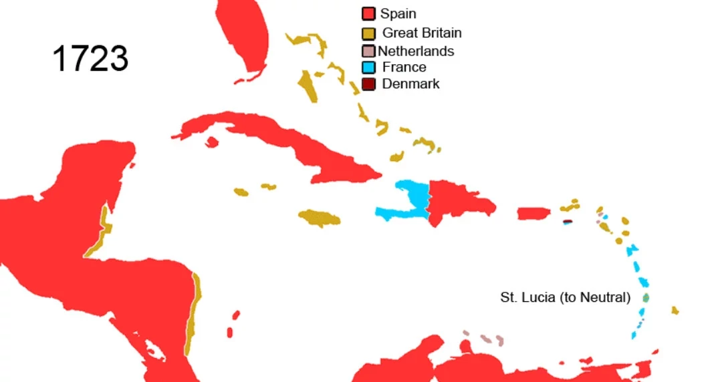
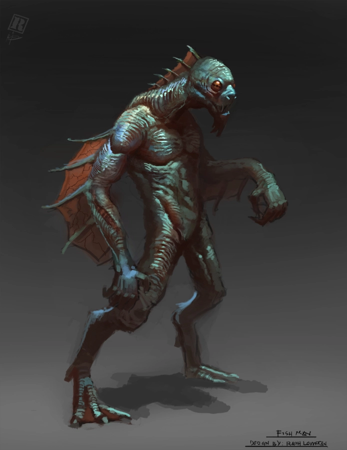

El caribe de los Mitos
Bienvenidos al Caribe de 1722
Estás en 1722 en el Caribe. La conocida como Edad de Oro de la piratería está acabando. Los grandes piratas han muerto o se han retirado y los grandes tesoros se han enterrado para que los busquen durante generaciones. Las potencias europeas han "civilizado y apaciguado" el Caribe y expolian sus recursos. El azúcar, el tabaco y el café fluyen desde las plantaciones de las grandes islas del Caribe, llenado las arcas de los gobiernos europeos, mientras las gentes del Caribe sobrevive como puede.
Mientras, entre las sombras, una antigua y diabólica sociedad secreta lleva décadas moviendo los hilos de la política y la economía para conseguir su objetivo: El surgimiento de entre las aguas de R'lyeh, la ciudad sumergida donde yace el gran Cthulhu.
Esta sociedad, autodenominada como la Orden del Gran Cthulhu, y su brazo público y legal, la Real Compañía Privilegiada del Caribe (RCPC), no tiene ningún tipo de escrúpulo en asesinar, torturar, robar, chantajear e incluso hacer pactos con demoníacas entidades extraplanares para lograr sus objetivos. Gracias a sus casi infinitos recursos económicos, los conocimientos mágicos de sus miembros y la tecnología conseguida de razas extraterrestres han conseguido imponerse en todo el Caribe haciendo caer ciudades, destruyendo armadas enemigas sin plantar batalla y poniendo a sus títeres en los principales puestos políticos de los diferentes gobiernos del Caribe.
Solo el anárquico mundo de la piratería ha logrado evadir sus tentáculos y es por ello que son los únicos que han empezado a ver lo que realmente está pasando en el Caribe y empiezan a vislumbrar que busca el Culto.
Unas pocas personas, casi todas piratas o con pasado pirata, conocen el terrible secreto que se esconde detrás de la Orden del Gran Cthulhu. Estos valientes han creado la Hermandad del Sargazo que busca desbaratar los planes del culto y hacer que paguen por us multiples crímenes.
La Orden del Gran Cthulhu
***
Hernando de Villalba
***
La Real Compañía privilegiada del Caribe
La Real Compañía Privilegiada del Caribe (RCPC) es una compañía española con privilegios en todos los territorios del Caribe controlados por los españoles. Fue creada por Hernando de Villalba, un rico noble terrateniente castellano, en 1689. Esta empresa tiene el control de todo el comercio entre España y el Caribe español. Nada entra o sale del Caribe sin pasar por sus barcos tras haber pagado diferentes impuestos y tasas.
Debido al apoyo del gobierno de España y a que controla la mayoría del comercio del Caribe tiene gran poder en la zona pudiéndose considerar que el director de cada casa comercial que hay en cada isla del Caribe es casi más poderoso que los propios gobernadores de las islas. Además debido a su apoyo por parte de la Corona de España cuenta con el apoyo y la protección de la Armada Española.
La verdad detrás de la RCPC
Bajo una capa de legalidad y otra de prosperidad económica se esconde la autentica realidad de la RCPC, una secta de adoradores del gran Cthulhu. No hay negocio turbio en el Caribe en el que alguno de los miembros de su círculo interno no esté metido sacando tajada. Todas esas actividades delictivas les proporcionan recursos para conseguir los auténticos objetivos del culto, la ascensión de R'lyeh y el regreso del gran y poderoso Cthulhu.
El culto se dedica a provocar el mal por todo el Caribe, con rituales y sacrificios humanos, pactos con fuerzas extradimensionales o esclavizando a pobres campesinos para trabajar en campos donde crecen extrañas plantas de origen desconocido.
***
Edward Teach alias Barbanegra
***
La hermandad del sargazo
***
Mary Read
***
Quisqueya y Cuba
***
Los taínos
***
Como nota de interés de la influencia de los taínos en nuestra cultura aquí tenemos una serie de palabras que usamos en el día a día: canoa, maraca, guano, hamaca, caimán, macuto o maíz.
Cohoba
El ritual de la cohoba era la ceremonia taína más importante. Los caciques y behikes (chamanes) participan en ella para consultar a los cemíes acerca de eventos relevantes para la comunidad. Se suele hacer en la casa del cacique y antes del ritual los participantes se purifican vomitando. Consiste en la inhalación de sustancias alucinógenas que provocan un estado de éxtasis que permite la comunicación con los cemíes. cSe usa una especie de canuto en forma de "Y" cuyos extremos superiores se meten en las fosas nasales y por el otro extremo se introducen las sustancias alucinógenas. Normalmente los alucinógenos se ponen en estatuillas con un recipiente encima que representan al cemí que se desea invocar.
Mascaras de concha de caracol
Los behikes de los tainos tallan mascaras usando las conchas de los caracoles pala (Lobatus gigas), unos caracoles marinos de gran tamaño. Estas mascaras representan a los cemíes, las diferentes deidades de su panteón, como Yúcahu (el dios principal del panteón) o Atabey (su madre y representación de la fertilidad y la Luna). Se utilizaban en diferentes rituales y ceremonias y como toda mascara era una forma de invocar a la deidad representada.
Otras representaciones de los cemíes son los llamados trigonolitos. Pequeñas figurillas de forma triangular o con 3 puntas de diversos materiales como hueso, madera, barro o piedra que también representaban a los dioses y eran usados como amuletos de protección o de suerte.
Tatuajes y piercings
Para los tainos los tatuajes y los piercings son una expresión de su fe. Cuanto mayor sea el tatuaje en el cuerpo y más piercings se tengan, más cerca se podría estar de los cemí. Es por ello que todos los procesos de tatuaje y creación de joyas para perforar la piel tiene un halo sagrado. Los joyeros y los artistas del tatuaje son miembros de la sociedad con estatus superior al resto sin llegar a niveles de behikes o caciques, pero desde leugo superior al taino normal.
El batú
Los taínos tienen un deporte de pelota llamado batú o batey. Cada equipo tiene 12 jugadores o múltiplos de 12 y son mixtos. Se juega con una pelota de goma maciza llamada batú. La cancha es circular o rectangular delimitada por grandes piedras. Cada equipo controla media cancha. El juego consiste en rebotar la pelota con cualquier parte del cuerpo menos las manos y llevarla la pelota al extremo del campo contrario. Si dejas que la pelota toque el suelo, pierdes un punto. También se puede rebotar contra las piedras que marcan los limites del campo. Si la pelota se sale del campo también se pierde un punto.
Es un importante evento social y puede tener un carácter religioso ya que determinado resultados en los partidos se consideran designios de los cemís. Los espectadores se sientan alrededor de la cancha y los invitados especiales, el cacique y sus ayudantes ocupan unos asientos especiales llamados duhos. Es utilizado también para la resolución de conflictos entre las comunidades enemistadas decidiendo conflictos mediante partidos de batey. Las apuestas también son muy normales en este tipo de encuentros.
El Caribe español
***
La Española
***
Santo Domingo
***
Cuba
***
La Habana
***
El Caribe inglés
***
Jamaica
***
Kingston
***
Port Royal
***
El Caribe francés
***
El Caribe holandés
***
Islas Piratas
***
La isla de la Tortuga
La isla de la Tortuga en la costa de noroeste de la Española es la la máxima expresión de isla pirata. Hacia 1620 los piratas que tenían su base en Tortuga crean la Cofradía de los Hermanos de la Costa. La Hermandad es una organización formada por piratas. Era una especie de sindicato de piratas que regulaba sus relaciones y sus interacciones comerciales. Tenía un toque bastante anárquico, haz lo que quieras mientras no le causes problemas a los demás.
Si bien la cofradía por su propia esencia termino desapareciendo para 1670. Por así decirlo era tan libre que sus miembros terminarón por dejarla. Sus pocas normas siguen aun vigentes y guían la vida de los gentes de Tortuga.
Es hoy en día un refugio pirata que ha resistido a las incursiones inglesas, francesas y principalmente españolas. Ante la imposibilidad de acabar con este refugio de pirata, las potencias europeas han probado otras estrategias para acabar los piratas de Tortuga. La Real Compañia Privilegiada del Caribe
Islas Caimán
***
Los Cayos de la Florida
***
Bahamas
***
Cthulhu y R'lyeh
La trama principal de esta ambientación gira entorno al surgimiento de R'lyeh de entre las aguas y al despertar del gran Cthulhu. El gran enemigo a batir es la Orden del Gran Cthulhu y su mano pública, la RCPC, cuyo objetivo es despertar a su señor Cthulhu. El objetivo de tu mesa es evitar que Cthulhu despierte de su sueño de eones y traiga el apocalipsis al mundo del siglo XVIII.
R'lyeh
R'lyeh es la ciudad sumergida donde yace el primigenio conocido como Cthulhu y su progenie. Cuando las estrellas sean propicias la ciudad se alzarán de entre las aguas y Cthulhu despertará y acabará con la vida en la tierra tal y como la conocemos.
Una de las características de esta mítica ciudad son sus prodigiosas dimensiones con construcciones dignas del propio Cthulhu. Otra es su geometría no-euclideana. Nada de la ciudad cumple al 100% con la geometría euclideana, que rige nuestro mundo físico. Puede ser que dobles una esquina y vuelvas a donde estabas o que un cuadrado, tengo 3 0 5 aristas.
Si bien en los libros de Lovecraft, R'lyeh se encuentra en Pacífico Sur (en la latitud 47° 9’ S, longitud 126° 43’ O). Esa es su ubicación a principios del siglo XX. En nuestra ambientación, como no podría ser de otra manera, R'lyeh se encuentra en el centro del Triángulo de la Bermudas.
El Triángulo de las Bermudas es un área geográfica con forma de triángulo escaleno situada en el océano Atlántico, entre las islas Bermudas, Puerto Rico y bahía Vizcaína (una zona al sur de Florida). Estos 3 puntos forman un triángulo de unos 1600 a 1800 km de lado, y una superficie aproximada de 1 millón de km².
El mito del Triángulo de las Bermudas es un mito moderno, pero sinceramente no he podido resistirme a meterlo en ¡Arrr! Cthulhu porque es una gran leyenda marina que pega muy bien esta ambientación. Si no te va, eres muy libre de ajustarlo a tu gusto.
Cthulhu
***
Los profundos del Caribe
No te vamos a mentir, esta es una ambientación acuática y como es normal hay profundos, muchos profundos. Las fondos oceánicos y los arrecifes del Caribe están llenos de asentamientos acuáticos de profundos y los héroes deberán enfrentarse a ellos muchas veces.
En ¡Arrr! Cthulhu los profundos son más complejos que en otros juegos basados en Cthulhu. No son simple carne de cañón. Están organizados socialmente y políticamente, tienen una cultura compleja y una sociedad estratificada con múltiples sistemas de relaciones.
Las tribus
Los profundos del Caribe se dividen en 3 grandes tribus que tienen diferente zonas de influencia. Cada tribu controla los territorios dominados por una de las 3 principales corrientes marítimas del Caribe.
- Throd s'uhn (Corriente del Golfo). Está tribu se localiza en la parte norte del Caribe en las aguas bañadas por la corriente cálida del Golfo. Sería el Golfo de México, costa Norte de Cuba y La Española, Florida y sus cayos.
- N'gha syha'h (Corriente del Caribe). Esta tribu se encuentra en las aguas que recorre la corriente del Caribe, que baña la costa sur de Cuba y La Española hasta el llegar al continente sudamericano.
- Uh'e kn'a (Corriente de las Antillas). La tribu de la corriente de las Antillas controlaría las costa de las Bahamas y las Antillas Menores.

Las relaciones entre las 3 grandes tribus son constantes y puede ser muchas indoles. Desde comerciales hasta disputas por territorios, aunque estás ultimas son menos comunes. Todo el comercio se basa en un sistema de trueques. digamos que su economia es muy básica entre ellos.
Los tres grandes caciques
Cada tribú es dirigida por un gran cacique profundo. Estos caciques son profundos de inmenso tamaño y cientos de años de vida. Sin llegar a ser como Dagón e Hydra (en tamaño y edad) son bastante poderosos tanto por la cantidad de profundos que están bajo sus ordenes como ellos mismos solos. Estamos hablando de seres que llevan siglos sobreviviendo a toda clase de peligros y enemigos. Pueden ser increíbles hechiceros, hábiles guerreros y/o sabios lideres.
Si bien estos caciques no tienen mucha influencia en la vida diaria de un profundo, tienen el poder suficiente para movilizar a los profundos de su territorio. Pueden hacer que ataquen un asentamiento humano en la superficie o entrar en guerra con otra tribu de profundos.
El tridente de Dagón
Tener el beneplácito de los 3 caciques es conocido con el título del "tridente de Dagón". Supone un increíble poder para su poseedor ya que pone a tu disposición miles y miles de profundos dispuestos a hacer lo que se les ordene sin ningún tipo de duda o remordimiento y sin ninguna señal de rebeldía o insurrección. Tú ordenas y ellos obedecen hasta la muerte.
Sería muy fácil, poseyendo el tridente, hacer que las 3 tribus profundas te ayuden a alzar de las aguas la ciudad sumergida de R'lyeh. Solo necesitarías una buena idea para sacarla de las aguas. Luego sería aplicarla con tiempo y usando mano de obra profunda.
Sociedad y cultura
La sociedad y cultura de los profundos podríamos igualarla al neolítico inicial de los humanos. Con una importante salvedad debida principalmente a su contacto mediante híbridos con los humanos, saben trabajar los metales. Sin embargo su vida submarina hace que la metalurgía no sea especialmente útil. Aunque saben trabajar los metales preciosos y usarlos para hacer joyas.
Vida cotidiana
Los profundos viven en asentamientos subacuáticos por todo el Caribe. Normalmente aprovechan zonas de arrecifes y de cuevas submarinas para construir sus refugios. Cada asentamiento es dirigido por el profundo más anciano y sabio, aunque en tiempos de guerra suele dejar el poder entre los guerreros más fuertes, quedando como un consejero.
Son principalmente pescadores/recolectores aunque empiezan a desarrollar una acuicultura. La verdad es que no necesitan preocuparse mucho de la comida ya que el mar les proporciona todo lo que necesitan. No hay malas cosechas y la pesca no escasea porque no está sobreexplotada. Aun así, tener zonas preparadas donde recoger las algas que usan para hacer redes y alimentar a bancos de peces para que no se vayan de determinadas zonas ha sido acogido como una buena idea.
Los asentamientos pueden ir desde pequeños grupos de 3 o 4 familias (unos 20 o 30 individuos) hasta miles de individuos. En el momento en que grupo de profundos consume más de lo que el territorio circundante no puede proveerles suele haber disturbios internos que acaban con grandes grupos abandonando la comunidad para establecerse en otras zonas del mar.
Los asentamientos profundos suelen tener animales de "compañía" como tortugas marinas o tiburones a los que han domesticado y cuidan cuando enferman. No es extraño que los adornen con piezas de joyería de oro.
Artesanía
Los profundos tienen nociones básicas de artesanía disponiendo de herramientas que estarían, como ya hemos dicho, a nivel del neolítico. Pueden crear armas simples como tridentes o cuchillos y son capaces de tejer tanto redes de pesca como otros tejidos bastos a partir de algas.
Si bien la artesanía es bastante básica van mejorando poco a poco gracias a las técnicas que los híbridos de profundos aprenden de los artesanos humanos antes de ser llamados por el mar. Estos híbridos también aportan conocimientos como la construcción de barcos que si bien no aplican para construir barcos si la aplican para hundirlos.
Los artesanos de los Uh'e kn'a son considerados de los mejores del Caribe ya que conocen formas de trabajo usando las chimeneas de lava que hay a lo largo de todas las Antillas Menores.
Relaciones con los humanos
En general, la relación de los profundos con los humanos se basa en la simple regla de matar a todo el que se acerque. Cualquier comunidad de profundos tratará de acabar con cualquier humano que se acerque. Solo si creen que pueden sacar algún tipo de provecho de tí o tengas algo que les interesa tratarán de relacionarse contigo.
La forma más normal de relación con el humanos es mediante la hibridación, siempre violenta contra las mujeres aunque pueda estar aceptada socialmente por la comunidad donde se produzca. Los híbridos pueden pasar como humanos, por lo menos durante sus años jóvenes. Si bien son extraños y poco sociables tampoco quedan tan raros en la mezcolanza de culturas y etnias que hay en el Caribe.
Como ya hemos dicho antes las relaciones económicas con entre profundos son muy básicas. Sin embargo han aprendido a comerciar con los humanos y saben que el oro es algo muy importante para los habitantes de la superficie. Para ellos no es más que otro material con el que hacer cosas. Siempre que han querido conseguir algo rápido de los humanos saben que el oro facilita las cosas. También saben que es un buen tributo para los humanos que de alguna manera tienen control sobre ellos.
Otra forma que tienen de relacionarse con los humanos es a través de la pesca. Suelen seducir a las comunidades costeras favoreciendo su pesca. Hacen que sean prosperas y estas comunidades empiezan a ver a los profundos con mejores ojos, no solo como monstruos marinos si no como fuentes de riqueza. Empiezan entonces a hibridarse con las mujeres de dichas comunidades prometiendo a sus miembros que sus descendientes serán poderosos e inmortales y que podrán combatir a las comunidades vecinas que envidian su prosperidad. Finalmente, con el paso del tiempo, acaban convirtiendo a toda la comunidad en híbridos que poco a poco deja de relacionarse con el mundo exterior.
Como usarlos
Como ya hemos dicho antes, los profundos son los orcos de los juegos de rol ambientados en Lovecraft y te van a servir como secuaces, sirvientes, guardias, carne de cañón, … Pero puedes usarlos de otras formas creativas.
Un uso interesante que puedes darle es como fuerza de la naturaleza debido a su gran número, algo contra lo que los héroes no podrán luchar, solo podrán ver como pasa ante sus ojos. Por poner unos ejemplos, puedes usarlos para hundir flotas de barcos o arrasar ciudades como si de tornados y terremotos se tratarán.
Puedes hacer que tus villanos tengan faraónicas fortalezas construidas en pocas semanas y vigiladas por profundos. Y quien dice fortalezas, dice flotas de barcos, caminos, puentes, … Si los héroes destruyeron algo que no querías que lo destruyeran puedes usar un ejército de profundos que lo reconstruya en semanas.
Puedes hacer que los personajes tengan que huir de una localización y no volver en un tiempo ante la abrumadora cantidad de profundos que hay en la zona. Tampoco es bueno abusar de este recurso porque perdería coherencia si todo el Caribe está infestado de profundos.
Por último, como se pueden hibridar con humanos también podrás usarlos como marineros de barcos de la RCPC al servicio de sus oscuros objetivos, como espías en las tabernas de los puertos, … Las opciones son muchas.
La verdad de La Habana
Algo muy común en las historias de Lovecraft son que muchas empiezan con noticias en periódicos locales sobre hechos extraños y chocantes, pero históricamente estamos en 1722 y no hay periódicos en el Caribe. No debería pero lo hay y se llama La verdad de La Habana (VLH). La VLH es un panfleto de unas 8 páginas que se publica mensualmente en La Habana, suele tener noticias en castellano e inglés y la mayoría de ellas son una mezcla de escándalos, crímenes y misterios.
Frente a los periódicos de ultramar que traen los barcos mercantes con noticias importantes para los ricos y poderosos del Caribe, la VLH es todo lo que no debería ser un periódico serio e imparcial. Es un entretenimiento para el pueblo con noticias de matanzas perpetradas por Barbanegra o monstruos que devoran a campesinos, todo ello con descripciones sangrientas, truculentas y exageradas. Y sin embargo es la fuente de información más precisa sobre los movimientos de los Mitos en el Caribe.
Escondidos entre sus escándalos y sus crónicas de crímenes hay pequeñas noticias de luces y ruidos extraños en casas abandonadas, de monstruos en la jungla y de extraños símbolos en lugares insospechados. Un lector conocedor de los Mitos puede encontrar pistas para sus investigaciones entre sus mal impresas hojas.
La VLH fue creado por Antoine Delapore en 1708. Delapore es un editor francés que huyo de sus rivales políticos y sus acreedores, y se instalo como pudo en La Habana. Allí con mucho esfuerzo y todas sus dotes de embaucador logro sacar el primer número de la VLH.
La VLH se distribuye por todo el Caribe, los marineros y comerciantes los compran en La Habana y los venden allá donde van. También los intercambian, los prestan, los apuestan, ... y lo mas importante, nadie los tira. Puedes encontrar ediciones de la VLH con años de antigüedad que la gente sigue releyendo una y otra vez, a pesar de estar doblados, arrugados y descoloridos.
A nivel de juego es una forma perfecta de meter a los heroes en diferentes aventuras. Pueden encontrar alguna extraña oferta de trabajo o enterarse de algún extraño suceso que investigar. De hecho siempre que encuentren una edición de la VLH podrán tirar en la tabla de Sucesos extraños de La verdad de La Habana en la sección de "Viajes y encuentros".
Mary Read y La verdad de La Habana
La VLH es un gran problema para la RCPC, ya que no puede controlarlo y cada cierto tiempo destapa algún turbio asunto en el que está metido la Orden del Gran Cthulhu. Han intentado de todo para controlar la VLH pero nada ha funcionado, desde intentar comprarlo hasta prohibirlo o dejarlo sin materias primas (papel y tinta).
Todos los esfuerzos de la RCPC han fracasado debido a Mary Read, la mecenas en la sombra que protege al VLH. Mary Read, como miembro de la Hermanda del sargazo, pone muchos recursos (personales y económicos) en mantener este periódico abierto, ya que se ha dado cuenta de que la luz que proyecta la VLH es una arma muy poderosa contra las actividades de la Orden del Gran Cthulhu.
Mary Read consigue papel y tinta de los barcos que asalta y suele ser ella la que firma la mayoría de los artículos que afectan a la actividad de la Orden del Gran Cthulhu, de hecho firma como "La lectora".
Religiones
Hay 3 grandes grupos de creencias religiosas actualmente en la zona del caribe, una de los habitantes originarios del caribe, los tainos y los caribe, otras dos origen exterior, África y Europa. Lo más curioso es que todas estas creencias en mucho casos lucharon por imponerse unas a otras. Por ejemplo, las misiones religiosas de los católicos españoles que buscaban convertir a los "paganos" tainos. Sin embargo en otros sitios se fusionaron (por necesidad en muchos casos) creando, por ejemplo, la santería que fusionaba las creencias de los espíritus animistas de los esclavos africanos con los santos católicos.
Religión taina
***
Cultos de origen africano
***
Cristianismo
***
Archivos, bibliotecas y universidades
Aunque estemos en el Caribe en 1722 rodeados de salvajes piratas, oscuras junglas llenas de misterios y terrible monstruos acechando desde las profundidades marinas, este juego también tiene una importante parte de investigación y que sería de la investigación sin sus archivos y bibliotecas, sin sus registros de entradas y salidas del puerto o sin sus actas de nacimientos y defunciones de las pequeñas parroquias en perdidos pueblos del interior.
Universidades
Las historias de los Mitos y el profesorado de las universidades es algo muy típico en los relatos de Lovecraft, es por ello que aquí tienes un listado de Universidades que ya existen en 1722 en el Caribe por si quieres que tu personaje tenga relación con alguna de ellas.
- La Universidad Santo Tomás de Aquino en Santo Domingo en La Española (la actual Republica Dominicana) lleva ya 200 años siendo una importante institución educativa superior.
- La Universidad de La Habana ha sido inaugurada hace unos año (1719) por frailes Dominicos.
- Como nota interesante diremos que la Universidad de Miskatonic se fundo en 1690, es decir,hace unos 35 años. Así que perfectamente puede haber profesores de la Universidad de Miskatonic corriendo aventuras por el Caribe o una expedición científica del departamento de arqueología buscando una ciudad perdida. Incluso se podría mandar una carta al bibliotecario de Miskatonic para consultar algún pasaje de su copia del Necronomicón.
Archivos y bibliotecas
En temas de bibliotecas, sin tener acceso a colecciones privadas, las mejores opciones son las bibliotecas de las universidades. Por otro lado el comercio desde el Caribe a toda Europa y America es fluido y constante y con el dinero y los contactos adecuados puedes ponerte en contacto con las mejores bibliotecas del mundo y pedir información especifica sobre pasajes y páginas de tomos de gran valor que guardan en sus estanterías.
Pero desde luego, en temas de Mitos la biblioteca más extensa y completa sería la colección privada de Isadora de la Guía y Arango. Si le caes bien y pareces de fiar te la permitirá ver y consultar. Podrás comprarle y venderle libros relacionados con los Mitos y saber su experta opinión sobre los tomos que buscas o necesitas consultar.
Hasta la creación del Archivo de Indias en 1765 en Sevilla, no existirá una institución en todo el Caribe que reúna y catalogue documentación de asuntos diversos del Caribe. Podrás encontrar archivos de diferentes entidades gubernamentales, registros parroquiales, libros de cuentas de grandes empresas, pero nada centralizado y medianamente organizado. Así que buscar, por ejemplo, las ruta que siguió un barco hace 10 años podría suponer varias semanas de investigación en diferentes archivos de diferentes islas del Caribe. Eso sin contar con el coste en sobornos para agilizar la lenta mano de la burocracia.
Reglas de ambientación
Creación de personajes
Hay una serie de reglas en esta ambientación que modifican las normas generales de creación de personajes. No son muchas ni muy complicadas pero tienen su sentido. Veámoslas:
- Tu PJ empieza con la ventaja Trasfondo arcano (Hechicería primigenia).
- Las ventajas de Nuevos poderes y Puntos de poder no pueden cogerse en la creación de personaje a no ser que se tenga la ventaja Experiencia con los Mitos
- Tu PJ empiezan con un d4 gratis en Criollo. Esto le permite comunicarse mínimamente con cualquier persona en el Caribe. Puedes adquirir a d6 Taíno, Arahuaco, Castellano, Francés o Inglés en vez del Criollo, pero solo será útil en las áreas de influencia de los respectivos idiomas.
- Ocultismo desaparece como habilidad y pasa a formar parte de Conocimientos Generales. Es de común dominio por toda la gente del Caribe los conocimientos sobre brujería, satanismo, vudú, ... De lo que muy pocos tienen conocimientos son de la nueva habilidad, Mitos de Cthulhu.
Ideas de personajes
No es estrictamente necesario pero te recomendamos que tu personaje tenga como uno de sus objetivos vitales ser pirata o por lo menos que tenga conocimientos y pericias relacionadas con los barcos y el mar. Las aventuras que van a correr van a suponer muchas veces viajar en barco, batirse en duelo sobre la cubierta de un buque, luchar contra demonios subacuáticos en simas marinas.
Si quieres hacerte un ratón de biblioteca que sepa de todo trata de que su biblioteca tenga velas y si quieres que tu personaje sea duelista, que lo sea pero que sepa lanzar estocadas mientras hace equilibrios en los aparejos de un barco.
Aquí tienes algunos conceptos sobre las que construir tu PJ.
- Adalid: Tu misión en la vida es proteger y ayudar a los que no pueden hacerlo solos. Allá donde haya alguien en problemas allí irás. El Caribe es a veces un sitio duro y cruel, asi que aquí es donde debes estar.
- Alien: No eres de aquí, no decidiste estar aquí, no pudiste evitar que te trajeran aquí y no quieres estar aquí y, a pesar de que no entiendes este mundo, no te queda otra que aguantar y seguir adelante jugando con sus reglas. Quizás salga una oportunidad que te permita abandonar el Caribe y volver a tu tierra con tu gente.
- Buscavidas: Tu boca, tu cara y tu encanto te meten y te sacan de muchos problemas y ahora necesitas huir de tus enemigos y/o acreedores. El Caribe es un buen lugar para desaparecer y empezar una nueva vida. Quizás esta vez sea diferente y salga bien.
- Criminal: El crimen es tu toda tu vida, es con lo que has crecido y los valores que te han inculcado. El Caribe puede ser un sitio perfecto para salir de esa vida o para medrar en ella. Es tú elección, asi que elige bien.
- Demente: La senda de la locura ya la has recorrida antes, así que nada que veas emerger de las aguas del Caribe te va a acercar más a la demencia de la lo que ya estás.
- Divulgante: La verdad debe ser conocida y la mentira debe ser combatida. Ese es tu objetivo en el Caribe, que la verdad llegue a todos ya que sin verdad no somos libres.
- Hedonista: La vida es una fiesta eterna y tu has venido a vivirla. No hay placer que no hayas experimentado o que no quieras experimentar. En el Caribe y en la vida pirata puedes encontrar nuevos placeres que hasta ahora no habías experimentado. ¿Te lo vas a perder?
- Intelectual: El conocimiento y el saber es lo más importante para tí y el Caribe es un mundo que explorar y del que aprender. Todos esos misterios escondidos en sus fondos oceánicos y en sus junglas esperan que los saques a la luz.
- Paria: Hay algo en tí que no encaja con los demás y estás cansado de esconder tus diferencias o de pelearte por ellas. Quizás el Caribe es el lugar donde esas diferencias no importen o donde puedas conseguir que no importen.
- Triunfal: El éxito y la fortuna han sido tus compañeros desde que naciste pero nunca es suficiente, siempre necesitas más. El Caribe es ese lugar donde puedes explotar tu potencial al máximo y conseguir el triunfo definitivo.
Nuevas habilidades
En ¡Arrr! Cthulhu puedes hacer uso de de todas las habilidades básicas de SWADE a excepción de habilidades temporalmente ilógicas como Conducir, Electrónica y Ordenadores ya que no hay vehículos autopropulsados, equipos eléctricos u ordenadores.
Como ya hemos explicado en la creación de personajes. Ocultismo también desaparece como habilidad integrándose dentro de Conocimientos generales.
Por otro lado hay una serie de nuevas habilidades:
Mitos de Cthulhu
Mitos de Cthulhu representa los conocimientos que tiene tu personaje sobre los Mitos de Cthulhu, los monstruos, los hechizos, ritos, objetos, … y la historia que hay detrás de ellos. También puede servirte para identificar maldiciones y quitarlas o para identificar puntos débiles de seres de los Mitos.
Esta habilidad no se puede escoger en la creación del personaje. Solo mediante el estudio de libros prohibidos y enfrentándote a los horrores de los mitos podrás subir está habilidad. Reglas especiales:
- No está basada en ningún atributo. Así que su coste es como si quisiéramos subir una habilidad por encima de un atributo. Es decir, que cuesta un avance subir un nivel de la habilidad.
- Solo puede subirse una vez por rango, como un atributo.
- Para poder subir esta habilidad tu personaje ha debido enfrentarse a al menos una TPC o haber leído un libro prohibido durante las sesiones de juego de ese rango.
- No tiene limites, cuando se llega a d12 continuamos con +1, +2, +3, ...
Idioma Criollo (Astucia)
El Criollo es la lengua más común del Caribe, casi todas las personas lo entienden y lo hablan. Empezó como una lengua muy básica creada con la mezcolanza de lenguas indígenas, africanas y europeas con la que comunicarse y comerciar y se fue haciendo más rica y compleja según se extendía su uso y se necesitaban transmitir conceptos más complejos. Aun así es vista por muchas personas de origen europeo como una lengua de gente de bajo nivel cultural. Reserva estas conductas a tus personajes malvados.
Idioma Cthulhunés (Astucia)
El Cthulhunés (o R'lyehiano) es la lengua hablada por Cthulhu, los habitantes R'lyeh y sus servidores, por ejemplo, los profundos. Los que lo han oido lo describen como extraño y gutural (seguramente para usarse bajo el agua) y muy difícil de pronunciar para las gargantas humanas.
La Orden del Gran Cthulhu ha conseguido transcribir el idioma a caracteres latinos ya que los caracteres escritos del Cthulhunés no han podido ser descifrados. Eso ha llevado a que parezca formado por grupos de consonantes que suenan relativamente extraños para el oído, como mglw'naph o fhtagn.
ph'nglui mglw'nafh Cthulhu
R'lyeh wgah'nagl
fhtagn
En la Ciudad de R'lyeh, el difunto
Cthulhu, espera soñando
Durante la creación de personaje no puedes ponerle puntos a Idioma Cthulhunés a no ser que tengas la ventaja Experiencia con los Mitos.
El Cthulhunés puede ser entendido y leído (si está escrito en caracteres latinos) pero el usuario tiene dos niveles menos a la hora de hablarlo. Si no llega a d4 no podrá pronunciarlo. Es decir, con Cthulhunés d8, podrá hablarlo a d4. Con un d6 no podrá hablarlo, pero si leerlo y entenderlo.
El Cthulhunés es una lengua creada para pronunciar cosas impronunciables y es por ello que afecta a la cordura del hablante. Así pues, cada vez que se suba este idioma, deberá hacerse una TPC (tirada de perdida de cordura) igual al nivel que se quiere conseguir.
Idioma Naacal (Astucia)
El naacal es el idioma que habla la serpigente. Era el idioma que se hablaba en el continente perdido de Mu hace más de 173.000 años. Las letras son ligeramente similares en apariencia a lenguajes mesoamericanos como el maya. Su pronunciación es complicada para los humanos debido a que está pensada para la lengua y y las cuerdas vocales de la serpigente.

Nuevas desventajas
La mayoría de las desventajas que hay en esta ambientación están relacionadas con la locura y el horror. Pueden ser bastante limitantes, así que sed cuidadosos a la hora de escogerlas así que trata de consensuarlas con tu director de juego. Con una sola persona sentada a la mesa con "La llamada de Cthulhu" es más que suficiente.
Más cerca de la locura (mayor)
Te encuentras más cerca de la locura que el resto del mundo. Tu equilibrio mental es más frágil que el común de los mortales. Puede ser por muchas razones: genética, infancia traumática, ... Sea como sea, tu psique es más débil de lo normal y estás más cerca de la locura que el resto de tu equipo.
Empiezas con 3 puntos de cordura en vez de 4 como es normalmente. Nunca podrás tener más de 3 puntos de cordura, aunque termines una campaña con éxito y el DJ diga que recuperáis todos los puntos de cordura.
La llamada de Cthulhu (menor)
Tu mente artística e imaginativa es muy susceptible a los ondas mentales del Gran Cthulhu, teniendo terribles pesadillas sobre Cthulhu y su tumba acuática de R'lyeh.
Siempre que te duermas sin tener benis, tendrás unas horribles pesadillas que no te dejarán dormir y tendrás un nivel de fatiga al día siguiente hasta que descanses una noche entera teniendo un beni y por tanto sin pesadillas. Durante las pesadillas podrás hacer uso de su habilidad de Mitos de Cthulhu para tratar de sacar información, sobre Cthulhu, R'lyeh, sus adoradores y sus planes.
Trastornos mentales
Todo el sistema de horror/cordura típica de los juegos basados en la obra de Lovecraft se basa en trastornos mentales que vayan lastrando a tu personaje hasta acabar locos en un callejón del puerto de Tortuga gritando a los viandantes sobre que su fin está cerca cuando el gran Cthulhu despierte de su tumba acuática.
Todos estos trastornos mentales debemos tratarlos como desventajas y se les aplican todas las reglas de las desventajas.
Además de las desventajas listadas a continuación puedes usar como trastornos mentales Avaricioso, Arrogante, Envidioso, Exceso de Confianza, Delirio, Fobia, Hábito, Mania y Sanguinario.
Amnesia y flashbacks (menor/mayor)
El cerebro de tu personaje, muy sabiamente, ha bloqueado parcialmente el recuerdo concreto de una situación traumática (cómo le torturaron, cómo presenció como un vampiro de fuego quemaba a toda su familia, ...). No quiere decir que no recuerde ese hecho concreto, pero solo generalmente. Los detalles son lo que ha reprimido y todos sabemos que el demonio está en los detalles. Esos detalles vuelven a su mente como flashbacks mostrándoles los momentos más traumáticos del evento que produjo la amnesia, los gritos espeluznantes, el olor a sangre podrida, los brillantes ojos del asesino, ...
En juego supone que una vez por sesión en momentos de estrés puede sufrir esos flashbacks fallando la tirada que vaya a hacer sin posibilidad de gastar un Beni para repetirla. Por estrés entendemos cualquier tirada enfrentada, desde jugar al poker a discutir con un oponente político o tratar de entrar sigilosamente en la casa del gobernador. Si se coge como mayor el máster podrá hacerle fallar cualquier tirada de combate y dejarle aturdido como si le hubieran hecho una finta o un truco sucio.
Depresión (mayor/menor)
Tu PJ sufre depresión y todo se le hace cuesta arriba, tiene siempre un bajo estado de ánimo y sentimientos de tristeza.
Si es menor al principio de cada sesión deberá tirar un d6. Si consigue un éxito, sobrelleva la depresión hasta la próxima sesión. Si falla pierde uno de sus benis hasta la próxima sesión. Si es mayor directamente cuenta con un beni menos.
Trastorno de ansiedad generalizada (mayor/menor)
Este complejo trastorno mental consiste en una ansiedad general y continua por todos los aspectos de la vida. Se siente una ansiedad tremenda por asuntos que no son tan importantes, se siente ansiedad por tomar decisiones y elegir la peor, se sienten situaciones normales como más amenazantes de lo que son e incluso se siente ansiedad por tener ansiedad.
En juego, el personaje con este trastorno recibe un -2 a todas las tiradas que necesite para tomar decisiones. Por ejemplo, hará una tirada de Tácticas con -2 para decidir que puerta es mejor para atacar la cárcel local y liberar a tus compañeros.
Como mayor directamente no podrá hacer la tirada, la ansiedad le atenazará dejándole en blanco.
Ataques de pánico (mayor/menor)
Están muy asociados con el trastorno anterior. Tu personaje sufre un miedo terrible de repente y sin sentido ante una situación o evento normal (normal para el personaje).
Como desventaja menor, una vez por sesión el DJ podrá obligar a tu PJ a hacer una tirada de Espíritu o sufrirá un terrible ataque de pánico que le imposibilitará llevar a cabo la acción que quería hacer.
En caso de que sea mayor, no hará falta tirada, el master podrá hacer que el miedo atenace al personaje directamente imposibilitándole seguir con la acción que deseaba hacer.
Como master te aconsejo que uses sabiamente esta desventaja, sobre todo en mayor. Puede ser muy frustrante para cualquier persona no tener control de su personaje. Mi consejo es que lo uses como una forma de encauzar a quien se salgan de madre.
TOC - Trastorno obsesivo compulsivo (mayor)
El trastorno obsesivo compulsivo (TOC) se caracteriza por un miedo no deseado (obsesiones) que provocan comportamientos repetitivos (compulsiones). Por ejemplo, un miedo a las enfermedades puede llevar a un paciente de TOC a lavarse compulsívamente las manos.
Deberás elegir una fobia menor y un hábito menor relacionado para formar el TOC de tu personaje.
Paranoia (mayor/menor)
Tu personaje está convencido de que los enemigos están en todas partes, y cree que todos están contra él. Siempre está mirando a su espalda esperando una traición de sus compañeros o tratando de escuchar cómo conspiran a sus espaldas.
Como desventaja menor, tienes un -1 en todas las tiradas de habilidad que exijan concentración (como abrir cerraduras, jugar a las cartas, descifrar un código, …) cuando otros están a tu alrededor.
Si se toma como mayor, además, el -1 se aplicará a todas las tiradas de percepción ya que estará más preocupado desvelando conspiraciones y enemigos ocultos que en vigilar o buscar.
Megalomanía (mayor/menor)
La megalomanía se caracteriza porque la persona tiene ideas de grandeza, de manera que puede mentir, manipular o exagerar algunas situaciones o a las personas, a fin de conseguir sus objetivos.
A nivel menor deberá elegir algo en el que quiere el mejor (el más fuerte, el más rápido, el más rico, ...), esto hará que actúe de forma desafiante y agresiva contra las personas que es mejor que él y obtendrá un -1 a todas las tiradas de interacción social con esas personas. A nivel mayor será a nivel general contra toda persona que pueda ser mejor que él en algún campo en el que esté cualificado, es decir que tenga atributo/habilidad d8 o más.
Nuevas ventajas
Como en el caso anterior de nuevas desventajas, todas las nuevas ventajas de ¡Arrr! Cthulhu están muy relacionadas con el horror y la cordura y como en el caso anterior pueden tener mucha influencia en el juego asi que trata de consensuar la elección de estas desventajas con tu master y el resto de la mesa.
Acostumbrado al horror (tipo de monstruo)
A base de enfrentarte a un horror específico te has acostumbrado y tu cordura no sufre al estar en su presencia.
A efectos de juego baja 4 niveles el TPC de un monstruo. Si el TPC modificado baja por debajo de d4 no necesitas hacer tirada de TPC. Por ejemplo, si estás "acostumbrado a los profundos" al ver un profundo (TPC d4) no tendrás que tirar, pero si ves una horda de 1000 profundos (TCP d12+1) solo tendrás que enfrentarse a un TPC (d6, 4 niveles menos).
Experiencia con los Mitos
Has tenido experiencias con los Mitos, quizás en tu niñez o adolescencia. Puede ser que vengas de un linaje de adoradores de Primigenios o que la sangre de profundo corra por sus venas. Puede ser que te enfrentaras a un monstruo de los Mitos y consiguieras sobrevivir o que tu abuela te transmitiera parte de los conocimientos prohibidos de su akelarre de brujas.
A nivel de juego, podrás empezar con las ventajas "Nuevos poderes" y "Puntos de poder". Es decir, podrás empezar tus aventuras con la capacidad de hacer hechizos. Además, podrás adquirir con puntos de creación la habilidad Mitos de Cthulhu a d4 y dispondrás de un libro de los Mitos generado aleatoriamente. También podrás gastar puntos hasta d4 para la habilidad idioma Cthulhunés.
Imán de lo extraño
Todo lo extraño se siente atraído hacia tí para bien y para mal. Abres y lees el libro maldito, te pierdes en el bosque y acabas encontrando la casa de la bruja o se te cae una probeta del laboratorio del científico loco.
Todas las tiradas de botín en las que te veas involucrado podrás repetirlas gastando un beni y el grupo podrá quedarse con el mejor resultado. En caso de no conseguir ningún éxito en ninguna de las tiradas el imán de lo extraño deberá hacer una tirada en la tabla de maldiciones pero la duración solo será en horas y recuperarás el beni gastado.
En caso de que haya varias personas con esta ventaja cada uno tendrá que gastarse un beni y añadirá una tirada extra. En caso de maldición todos los jugadores con la ventaja serán maldecidos.
Sensibilidad celta
Tienes una sensibilidad especial a las energías extrañas que nos rodean, desde los diferentes planos, pasando por otras dimensiones, hasta la magia y en general todo lo relacionado con los Mitos. Como la desventaja "Llamada de Cthulhu" está muy relacionado con la sensibilidad y la creatividad.
El héroe obtiene un +2 a todas las tiradas de Mitos de Cthulhu, pero también un -1 a todas las tiradas de TPC.
Ritualista
No has llegado a desarrollar tus dotes de hechicería, pero si controlas una serie de rituales que son de uso común en tu comunidad en tú familia.
Empiezas con 4 rituales, puedes elegirlos tu mismo, pero debe tener cierta coherencia con tu historia. Si tienes "Brindar al mar" porque vienes de un pueblo de pescadores, no tiene mucho sentido que sepas "Protección de la cosecha" que sería más de campesinos de interior. Además tienes un +2 a las tiradas de Conocimientos generales relacionados con magia y hechicería.
Miembro de la hermandad del sargazo
Eres un miembro de pleno derecho de esta sociedad secreta que lucha contra los seres de los Mitos y sus terribles planes para la humanidad.
Todo miembro de la hermandad podrá ser considerado como un Aliado. Por contrapartida deberás seguir las a rajatabla las decisiones que la hermandad tome. además deberás ayudar al resto de miembros.
Esta ventaja no puede ponerse en la creación del personaje y solo el DJ puede dártela. No se pueden gastar avance para conseguir esta ventaja.
Jerga Pirata
La jerga pirata no es un idioma en sí, no tiene una gramática, una pronunciación ni una grafía. Es un batiburrillo de palabras y expresiones mal pronunciadas con un montón de gestos con las manos que solo con práctica y oído puedes aprender de otros piratas. Un pirata puede estar hablando inglés y no entenderle una sola palabra de lo que dice. Nada tiene mucho sentido y solo si estás familiarizado puedes pillar.
Puedes hablar con otras persona que sepan jerga pirata y vuestra conservación no podrá ser entendida por nadie más que no tenga jerga pirata. Esto se aplica a todo tipo de razas no-humanas, incluso deidades menores. Si alguien consigue una transcripción de la conversación y consigue un avance en una tirada de Investigar podrá entender la conversación.
La jerga pirata no puede escogerse en la creación del personaje, a no ser que tu historia este relacionado con la piratería, por ejemplo, siendo grumete en un barco pirata o trabajando en una taberna del puerto.

Benis
Hay nuevos usos para los benis en dos apartados muy importantes de este juego, la magia, la cordura y la navegación. Debes hacer comprender a tu mesa que estos usos normalmente deben ser reservados para momentos épicos, cuando la situación es a vida o muerte y sobre todo "queda bien" en la historia.
- Puedes gastar todos tus benis (mínimo 1) para lanzar un hechizo sin necesidad de gastar puntos de poder. Esto supone que se pueden lanzar hechizos sin tener puntos de poder o lanzar hechizos que piden más puntos de poder de los que tienes.
- Gastando todos tus benis (mínimo 1) puedes hacer un golpe de timón en tus viajes por mar y negar un resultado en la tirada de encuentros en el mar. Se acerca una tormenta y antes de verse rodeada por ella el piloto del barco hace girar el timón 180º y busca una ruta alternativa.
- Como se ve más adelante, se puede gastar un 1 beni para que los trastornos mentales no sean permanentes.
Equipo
Durante la creación de tu personaje solo tendrás acceso al equipo normal de una persona del siglo XVIII. Eso quiere decir que no tendrá acceso a material con componentes electrónicos, motores de combustión, óptica de precisión, ... La maquina de vapor se está estudiando y los telares mecánicos no se inventarán hasta dentro de unos 10 años.
Todo producto manufacturado es de origen artesanal, herreros, carpinteros, tejedores, ... trabajan en sus talleres y producen a mano todo tipo de productos. Eso quiere decir que muchos productos exigirán un tiempo de fabricación. Lo normal es que el herrero tenga una pocas armas en su taller para que veas su arte y destreza y te haga en una semana el arma que estás buscando.
Si tu mesa tiene dudas sobre si tienen acceso a un tipo concreto de invento, es tan fácil como mirar su año de invención en internet y por por lo menos añadirle unos 15 años hasta que se haga popular y llegue al Caribe. Quizás en Londres podrías conocer al inventor en persona y comprarle su invento, pero estamos en el Caribe y las nuevas ideas tardan años en llegar.
Armas
Puedes hacer uso de todas las armas antiguas y medievales que vienen en el manual SWADE, pero aquí te presentamos las más icónicas para una ambientación de piratas.
| Listado de Armas cuerpo a cuerpo | ||
|---|---|---|
| Nombre | Descripción | Estadísticas |
| Sable de abordaje | Los sables de abordaje es una hoja curva con un solo filo, pero tiene menos curva que el de caballería. | Espada corta |
| Alfanje | Es una espada a una mano de hoja ancha y curva, con filo en un solo lado. | Espada larga |
| Hacha de abordaje | Este hacha de tamaño pequeño a una mano tiene una hoja curva en un lado para cortar cuerdas y un pico en la otra para romper puertas y para poder clavarla en la madera y usarla como ayuda al escalar. | Hacha de mano |
| Machete | Se trata de un cuchillo largo (menos de 60 cm y tiene un solo filo), pero más corto que una espada. Se utiliza para cortar la caña de azúcar, abrir camino en la jungla o como arma blanca. | Espada corta |
| Espada ropera | Es una espada de hoja recta y larga, esgrimida a una mano y con una empuñadura de diferentes estilos que protegía toda la mano. Es la típica arma que vemos en las películas de mosqueteros. | Espada larga |
| Daga | Estas armas de filo de pequeño tamaño podían usarse también en la mano izquierda como defensa o para lanzar golpes cuando entraban en combate muy cerrado, algo normal cuando se combatía bajo cubierta. | Cuchillo/daga |
| Tridente de profundo | Esta lanza acabado dos o tres puntas es el arma típica de los profundos y seguramente tendrás que usarlo alguna vez cuando estés rodeado de ellos y hayas perdida todo tu equipo. | Lanza |
Dentro del combate a distancia puedes hacer uso de las armas a distancias primitivas y armas de pólvora negra, es decir pistolas de chispa, mosquetes y trabucos.
| Listado de Armas de fuego | |
|---|---|
| Nombre | Descripción |
| Pistola de chispa | Un pistola de chispa es una arma corta de fuego que utiliza un mecanismo de ignición de golpe de pedernal, |
| Mosquete | Es una arma larga de chispa que tenía más capacidad de daño, mayor distancia y mayor precisión que la pistola. |
| Trabuco | Un trabuco es una arma de fuego de gran calibre que como las anteriores se cargaba por el cañón. Los cañones son cortos y se le considera el predecesor de la escopeta. |
| Granadas | La granada es un proyectil explosivo que se lanza con la mano. Eran bolas de metal llenas de pólvora y a veces metralla con una mecha. Se encendían la mecha y se lanzaba la granada. |
Arma lanzarrayos yithania
Este arma de rayos parecida a una cámara de fotos de gran tamaño posee un gran poder destructivo. Tiene dos grandes asas y al pulsarse los gatillos que hay en cada asa lanza unos rayos que calcinan a su objetivo. Es por ello que se necesitan dos manos para poder usarla. Al dispararse los rayos de eléctricos generan un gran zumbido del mismo nivel que disparando un arma de pólvora, es por ello que no son armas de infiltración si no de guerra.
El rayo de energía que lanza es plenamente visible, mucho más de noche, y usarla en público podría suponer ser acusado de brujería.
| Arma lanzarrayos yithania | |||||||
|---|---|---|---|---|---|---|---|
| Distancia | Daño | PA | CDF | Munición | FUE Min. | Peso | Coste |
| 50/100/150 | 2d8 | 2 | 1 | 35 | -- | 2 | -- |
| Notas: Exige usar las dos manos para disparar. Cauterizante (+2 a sus tiradas de Vigor para evitar el desangramiento). Recarga 1 de munición por minuto, forma que un 35 minutos tendrías el arma plenamente cargada. | |||||||
Cañon lanzarrayos yithanio
Los laboratorios de RCPC han podido aprender mucho de la tecnología yith y, como no, lo han usado para crear armas más destructivas. Han desarrollado un arma lanzarrayos de gran tamaño, un cañon lanzarrayos de gran poder destructivo muy precisos y con a larga distancia. A diferencia de sus predecesores, los lanzarrayos yithanios, estos cañones están pensados para ser usados por humanos.
| Cañón lanzarrayos yithanio | |||||
|---|---|---|---|---|---|
| Distancia | Daño | PA | CDF | Munición | Coste |
| 150/300/600 | 4d10 | 3 | 1 | 35 | -- |
| Notas: Necesita una dotación de 1 persona al no tener que recargar. Puede hacer que se sobrecaliente y termine explotando. Haría un daño de 3d10 en una plantilla mediana. Recarga 1 de munición por cada media hora, forma que en menos de 1 día tendrías el cañón plenamente cargado. | |||||
Protecciones
En el 1722 las armaduras y los escudos están ya en franco desuso con la aparición de la pólvora. Además son pesadas, muy caras y quitan maniobrabilidad, por no hablar de que no son nada frescas. En unas pocas rondas de combate un defensor con armadura puede caer inconsciente por el calor y el esfuerzo que supone combatir con armadura pesada. Sin olvidar que si te caes el agua date por muerto.
Lo normal es que el cuero de diferentes animales, desde cuero de vaca hasta piel de cocodrilo, y la ropa de tela resistente sean las únicas protecciones que se vean normalmente.
Puedes encontrarte guardas con partes de armadura como peto o casco, pero seguramente estén sudando la gota gorda.

Embarcaciones
El tema de las embarcaciones vamos a tratarlo de forma genérica creando 5 tipos de naves:
- Pequeñas: perfectas para pescadores y pequeños comerciantes
- Rápidas: algo más grandes que las anteriores y las más rápidas, perfectas para contrabandistas.
- De transporte de carga: grandes y lentas para llevar mucha carga.
- De combate: una media de las anteriores, rápidas, con capacidad de carga y con defensas.
- De guerra: como las anteriores pero preparadas no solo para la defensa sino también para el ataque.
Los barcos tienen dos campos especiales además de los normales de vehículos. La carga es el número de barriles llenos de carga para comerciar que puede llevar el barco sin sufrir penalizaciones. Provisiones son el coste de las provisiones necesarias para navegar una semana en doblones.
Naves pequeñas
10.000 doblones
Son naves pequeñas de un mástil y poco tripulación perfectas para la pesca o el transporte de carga o pasajeros entre islas. Su pequeño tamaño y calado les permite meterse donde otro barcos más grandes no pueden. No están preparadas para grandes travesías.
| Balandro, cúter, ... | ||||||
|---|---|---|---|---|---|---|
| Tamaño | Maniobra. | Velocidad máxima | Dureza | Tripulación | Carga | Provisiones |
| 8 | -1 | 15 km/h | 15 (3) | 3 - 10 | 20 | 150 |
| Notas: +2 heridas. | ||||||
| Armas: Sin armas. | ||||||
Naves rápidas
40.000 doblones
Las más rápidas y maniobrables del Caribe, estas naves son perfectas para los contrabandistas que quieren dar esquinazo a las naves que vigilan el comercio entre islas del Caribe. Tienen más capacidad de carga que las pequeñas pero menos que las de carga, pero normalmente su carga es más valiosa (e ilegal).
| Goleta, clíper, ... | ||||||
|---|---|---|---|---|---|---|
| Tamaño | Maniobra. | Velocidad máxima | Dureza | Tripulación | Carga | Provisiones |
| 9 | 0 | 25 km/h | 16 (3) | 8-20 | 40 | 350 |
| Notas: +2 heridas. | ||||||
| Armas: Sin armas. Se puede instalar cañones quitando espacio de carga y a razón de 4 toneles por cada cañón hasta un máximo de 8 cañones (4 por lado del barco). | ||||||
Naves de carga
60.000 doblones
Es el mas grande de los navíos con una gran capacidad de carga, pero es tremendamente lento y muy poco maniobrable. Está preparado para largas travesías por mar. No suelen estar armadas, lo normal es que varias de estas naves lleven una escolta de buques de combate o de guerra.
| Carraca, naos, ... | ||||||
|---|---|---|---|---|---|---|
| Tamaño | Maniobra. | Velocidad máxima | Dureza | Tripulación | Carga | Provisiones |
| 15 | -2 | 10 km/h | 23 (4) | 40-150 | 300 | 1.800 |
| Notas: +3 heridas. Puede quitarse espacio de carga para meter más gente y viceversa a razón de 1 personas por cada 6 toneles. | ||||||
| Armas: Sin armas. Se puede instalar cañones quitando espacio de carga y a razón de 4 toneles por cada cañón hasta un máximo de 20 cañones (10 por lado del barco). | ||||||
Naves de combate
80.000 doblones
Las naves perfectas para los piratas y las fuerzas del orden. Su buena velocidad, maniobrabilidad y capacidad de carga les permite atacar a barcos de carga y plantarle cara a otras naves de guerra.
| Fragata, navío de escolta, galeón, ... | ||||||
|---|---|---|---|---|---|---|
| Tamaño | Maniobra. | Velocidad máxima | Dureza | Tripulación | Carga | Provisiones |
| 14 (Colosal) | -1 | 15 km/h | 20 (4) | 20+80 | 80 | 800 |
| Notas: Blindaje pesado. | ||||||
| Armas: Cañones (entre 16 y 46, fijos en las bordas). | ||||||
Naves de guerra
120.000 doblones
Autenticas fortalezas flotantes. Ellas solo pueden tener controlada una ruta comercial y varias de ellas sincronizadas podrían atacar y tomar cualquier ciudad portuaria del caribe. Solo grupos muy fuertes y muy bien organizados de piratas pensarían en plantarle cara a esta bestia de los mares.
| Navío de linea, galeón, bergantín ... | ||||||
|---|---|---|---|---|---|---|
| Tamaño | Maniobra. | Velocidad máxima | Dureza | Tripulación | Carga | Provisiones |
| 18 | -2 | 15 km/h | 20 (4) | 40+120 | 160 | 2.000 |
| Notas: Blindaje pesado. | ||||||
| Armas: Cañones (entre 30 y 60, fijos en las bordas). | ||||||
Modificando los barcos
Las historias de Lovecraft tienen en muchas de ellas unos tintes de ciencia extraña, de inventos imposibles que explotan singulares conceptos científicos y queremos introducir todo eso a través de las modificaciones de los navíos. Es por ello que tenemos modificaciones medianamente realistas pero a la vez locas y futuristas que explotan todo ese concepto de ciencia extraña y luego tenemos modificaciones más propias de los Mitos fruto de experimentar con las criaturas monstruosas para mejorar los barcos.
Si los heroes capturan un barco modificado sin más de dos heridas y pueden llevarlo a tierra podrán y desmotar las mejoras e instalarlas en su barco. Por cada modificación tendrán que hacer una tirada de Reparar (o de Mitos si es una modificación extraña) para entender como hicieron la modificación y una segunda tirada de Reparar para estudiar como quitarla e instalarla en su barco. Cada avance en la tirada de Reparar le quitará media semana a los trabajos de modificación de su nave. La modificación tiene un coste en materiales y también se pueden usar avances para abaratarlo, a un coste de un quinto del coste por avance. si una modificación cuesta 500 doblones y gasto 2 avances tendré que pagar solo 300 doblones.
Si las modificaciones se hacen en un astillero, el maestro carpintero podrá hacer la tirada de Reparar y duran la mitad de tiempo, pero el coste se dobla. Lo divertido puede ser como le explicas a los artesanos que trabajan en el dique seco los olores raros que provienen de los barcos o porque se oyen chillidos de dolor cuando clavan un clavo en la madera del casco.
Recordad que no se pueden poner modificaciones que ocupen espacios que ya se han modificado, por ejemplo, no puedes poner velas de profundo si ya tenías velas de noctivago. Deberás quitar la modificación anterior (con un coste en tiempo de la mitad de ponerla, mínimo media semana).
No vamos a ponernos exquisitos y las modificaciones podrán traspasarse de un barco a otro sin importar el tamaño o la forma del barco de origen y de destino. Pero si quieres eres libre de poner las limitaciones que quieras.
Modificaciones normales para barcos
Gran parte de las aventuras que pasen tus héroes van a ser en navíos de todo tipo, es por ello que queremos darles la oportunidad a los jugadores de poder jugar con ellos personalizándolos y mejorándolos. Es por ello que te mostramos una serie de modificaciones divertidas que podrán instalarles a sus naves para darles personalidad. Si van de contrabandistas que le pongan una esclusa para poder meter y sacar contrabando ilegal. Si van de exploradores que tengan ojos de buey en el fondo para poder investigar el fondo, ...
| Tabla de Modificaciones normales para barcos | |||
|---|---|---|---|
| Descripción | Semanas | Coste | Parte del barco |
| Exclusa de aire en el fondo | |||
| Esta modificación es un desarrollo de los maestres de la RCPC que permite a los profundos entrar y salir de un barco por el fondo sin ser vistos. Puede ser una forma muy simple de sacar o meter contrabando en el barco. En un combate naval los profundos podrían salir del barco por la esclusa y abordar el barco enemigo por sorpresa. | 2 | 300 | Quilla |
| Ojos de buey en fondo del barco | |||
| A lo largo del casco se han colocado una serie de ojos de buey por debajo de la linea de flotación que permiten observar el fondo marino. Puede que así descubran barcos hundidos, ciudades sumergidas o detecten el ataque de un grupo de profundos. Si se ponen vigías en estos ventanucos cualquier ataque por sorpresa de ser acuáticos no obtendrá ningún beneficio. | 1 | 400 | Casco |
| Ariete | |||
| Toda la proa es reforzada para sostener una gran pieza de metal en forma de ariete que permite al barco
embestir
otro barcos o monstruos marinos de gran tamaño. El barco queda enganchado por el ariete y no pueden
separarse. En ese momento aprovecha para hacer un abordaje. Esta modificación permite que todas las tiradas de embestir exitosas se conviertan además en una maniobra de abordaje exitosa. Además la forma del ariete y su gran tamaño hace muy difícil desengancharse, el -4 normal a la tirada de soltarse se convierte en un -6. |
1 | 300 | Proa |
| Velas reforzadas | |||
| Una combinación de fibras naturales descubiertas en el nuevo mundo y mejores sistemas de tejido y
entrelazado de esas fibras dan como resultado unas velas muy resistentes que pueden aguantar
en las peores tormentas. La embarcación obtiene un 20% de velocidad extra debido a que puede largarse más vela sin temer que se rajen. |
1/2 | 200 | Aparejos |
| Cortacadenas | |||
| Muchos puertos desplegaban en su entrada unas gigantescas cadenas para evitar que los
piratas pudieran entrar al puerto y atacarlo. También lo usaban para evitar que escaparan barcos
del puerto. El cortacadenas es una gigantesca horquilla afilada que se puede desplegar
en la proa del barco en la linea de flotación y que ayuda a cortar las cadenas cuando
se embiste contra ellas. Al realizar la maniobra de embestida contra la cadena con el cortacadenas se obtiene un +4 a Navegar y +4 al daño para cortarla. |
1/2 | 400 | Proa |
| Cometa de vigía | |||
| Esta cometa de gran tamaño se ata al barco y se hace volar cuando hay viento. Tiene un arnés de cuerdas que permite a una persona elevarse por los aires y vigilar desde alturas mayores que la cofa del barco. Otorga +2 a Notar a los vigías y es especialmente útil en altamar ya que permite ver los barcos que se acercan incluso antes de que ellos puedan verte, permitiendo montar o escapar de emboscadas. Si se corta la cuerda el vigía puede intentar planear y aterrizar con una tirada exitosa de Atletismo. El tiempo de instalación realmente es de entrenamiento para hacer volar y aterrizar la cometa | 1/2 | 600 | Popa |
Modificaciones extrañas para barcos
A lo largo de sus aventuras contra la RCPC y la Orden del Gran Cthulhu nuestros heroes van a encontrarse con muchos barcos con extrañas modificaciones fruto de experimentos de la RCPC con los seres de los mitos.
Estate seguro que un carguero de linea de la RCPC no tendrá ninguna extraña modificación pero la Venganza de la Reina Ana será mas un ser de los mitos que un barco tal y como lo conocemos.
Qué decir que las modificaciones extrañas pueden generar horror sobre todo en los barcos enemigos y viene en la descripción de la modificación si generan o no horror y su TPC.
| Tabla de Modificaciones extrañas para barcos | |||
|---|---|---|---|
| Descripción | Semanas | Coste | Parte del barco |
| Casco de Shoggoth | |||
| El casco de la nave esta cubierto por un shoggoth que le otorga mucha dureza y que sella el
casco en caso de fugas. Desafortunadamente el caso también se llena de pseudópodos, proto-globos
oculares y tiene cierta fosforescencia de noche. +10 dureza y a todo intento de provocar fugas
en el barco fallan TPC: 1d6 |
3 | 800 | Casco |
| Velas de alas de noctivago | |||
| Las velas negras del barco tienen una forma extraña ya que se han hecho cosiendo la piel curtida de las alas noctivagos demacrados. La embarcación obtiene un 40% de velocidad extra debido a que puede largarse más vela sin temer que se rajen y están preparadas para interactuar correctamente con el viento. | 1/2 | 100 | Aparejos |
| Tecnología Mi-Go (navegación) | |||
| Este aparato de tecnología Mi-Go parece una estación meteorológica muy avanzada con todo tipo de funciones. La estación tiene diferentes funciones como dar la posición del barco, su dirección, la previsión del tiempo, ... A efectos de juego aporta un +1 a las tiradas de navegación para llegar a determinado punto en el mapa. También permite saber el tiempo antes de partir y decidir si partir o esperar una semana a ver si hay buen tiempo. | 1/2 | 200 | Proa |
| Tecnología Mi-Go (comunicación) | |||
| En el puente del capitán se coloca un gran tubo (2 metros de altura por 1 metro de diámetro) metálico
con llaves, tubos e indicadores que produce
un extraño zumbido. El tubo cuyo contenido se desconoce es un metal extraterrestre parecido al bronce.
Este artilugio es tecnología Mi-Go que permite comunicación telepática. El capitán o el contramaestre se colocan una banda metálica en la frente y pueden enviar ordenes a todos los sujetos que haya en el barco. Esto permite dar ordenes claras y precisas y recibir respuesta a la velocidad del pensamiento. Esta eficiencia en el trabajo en equipo de los marineros otorga un +1 a la maniobrabilidad de la nave. No debe usarse muy de seguido ya que genera jaquecas y cansancio en los receptores de la telepatía. |
1/2 | 200 | Popa |
| Camuflaje de pólipo volante | |||
| La cubierta, los mástiles y las velas han sito trato con un barniz y una cera con extracto de pólipo volante que hace que la luz actúe de forma extraña como cuando ves una carretera a lo lejos un día de sol y calor. No se puede hacer invisible como los pólipos, pero ganan bonus al camuflaje si pueden esconderse por ejemplo en la niebla o entre las islotes de los cayos. Desde luego lo que no permite es entrar a un puerto sin ser visto. Otorga un -2 a la tiradas para detectar la nave. | 2 | 400 | Cubierta, mástiles, velas |
| Mascarón de anulación de magia Lloigor | |||
| Usando la capacidad de drenar la magia de los lloigors, el mascarón de proa de la nave absorbe toda la magia de la zona, evitando que se puedan lanzar en el barco y 500 metros a su alrededor. El barco drena 1d6 puntos por turno si estás alrededor y 1d8 por turno si estás subido al barco. | 1/2 | 300 | Proa |
| Tentáculos de Retoño oscuro | |||
| Se ha fusionado la quilla del barco con un retoños oscuro dotando al navío de tentáculos que
permiten durante periodos cortos de tiempo pasar por zonas de poco calado incluso moverse por tierra.
Los tentáculos de despliegan por toda la quilla y el barco puede literalmente andar
usando los pseudópodos como piernas hasta 500 metros. TPC: 1d6 |
3 | 800 | Casco |
| Velas de piel de profundo | |||
| Estas velas de textura gomosa y color verdoso están literalmente hechas con piel de profundo.
Son muy resistentes y casi imposibles de rasgar pudiendo incluso aguantar la fuerza de un huracán. Son
ignífugas y
muy elásticas hinchándose más de lo normal con buen viento. En general ofrecen un 20% más de velocidad
máxima
al barco que las lleve. Los profundos que vean estas velas atacarán rabiosos a la nave que las use. |
1/2 | 100 | Aparejos |
| Generador de oscuridad de Mi-Go | |||
| La RCPC ha conseguido crear unos hongos basados en la genética de los Mi-go que reproducen su capacidad
de crear oscuridad. Los hongos crecen en un gran cajón (2 metros cúbicos) cerrado casi herméticamente que
se coloca en la proa o popa del barco.
Si se abre el cajón y se proyecta una fuente de luz estos reaccionan y se defienden de la luz creando un
zona oscura que atrae toda la luz cercana
creando una zona de oscuridad. Si bien de día no sirve para nada de noche hace al navío totalmente invisible. El barco solo puede ser detectado por el ruido que haga o entrando en contacto con él, pudiendo por ejemplo colarse dentro de un puerto sin ser visto. El único problema es que la oscuridad también afecta al interior del barco y la tripulación no ve nada. Este problema se puede solucionar haciendo uso de hechizos de visión nocturna, vista lejana o luz. Desde fuera un hechizo de luz podría contrarrestar el efecto de los hongos. |
1/2 | 300 | Popa o Proa |
| Tentáculos de Shoggots | |||
| Se han cortado e injertado una serie de tentaculos en el casco del barco a la altura de la linea de
flotación.
Estos tentaculos han sido transformados hipnóticamente (como hacían los Antiguos con sus siervos
shoggoths) para que
se transformen en remos y obedezcan las ordenes del capitan del barco. Estos tentaculos proporcionan
máxima
velocidad durante una hora aunque no haya viento y
permiten que el barco tenga plena maniobrabilidad excepcional en situaciones complicadas. Podrían meterse
en un campo
de arrecifes sin problemas, moverse de lado de forma que no ofreces el largo de navio enemigo al girar,
pasar por angostos pasos... Como problema es que solo son funcionales si el capitán está en el barco y
está consciente. Un capitán dormido, malherido o inconsciente no puede hacer uso de los tentaculos. Al
mover los tentaculos a un nuevo barco, su control deberá ser dado por el antiguo capitán al nuevo mediante
una palabras de control que solo conoce el anterior capitán. TPC: 1d6 |
1 | 800 | Casco |
| Cañones Yithianos | |||
| Basandose en la tecnología yithania de lanzarrayos, parte o todos los cañones han sido reemplazados por armasa lanzarrayos de gran tamaño. Son más destructivos que un cañon normal, tremendamente precisos, pudiendose apuntar fácilmente a la Santa Barbara del enemigo y hacerla estallar. Otra gran ventaja es que no necesitan munición solo un tiempo de recarga despues de usarlo con lo que no necesitas volver a puerto para abastecerte de munición. | 1 | 500 | Armamento |
NOTA: esta parte de la ambientación referente a las modificaciones extrañas puede ser muy exagerada y romper el juego. Siéntete libre de olvidarte de ella si crees que no encaja con tu juego. También puedes reservarla para momentos muy especiales y dejar estas modificaciones, por ejemplo, solo en el barco de Barbanegra.

Horror y cordura
El horror y la cordura sustituyen a las reglas de miedo de SWADE. Las ventajas y desventajas que afectan al miedo (como Osado o Cobarde) no son válidas en esta ambientación y no pueden ser adquiridas por los héroes. Todo personaje tiene 4 puntos de cordura y si pierde todos caerá en la locura y pasará a ser un PNJs al servicio del DJ.
Cada vez que un personaje se enfrente a un ser los Mitos deberá hacer una tirada de enfrentada de Inteligencia contra la tirada de pérdida de cordura (TPC) del monstruo. Si pasa la tirada no ocurre nada, el personaje ha racionalizado correctamente lo que ha ocurrido y puede actuar con normalidad.
Si falla la tirada deberá hacer una segunda tirada de Espíritu, si saca más éxitos que la tirada TPC simplemente quedará aturdido. Si falla perderá un punto de cordura. Como ya hemos explicado, si pierde toda su cordura cederá ante el horror y la locura y pasará a ser un PNJ.
Puede evitarse la pérdida de puntos de cordura adquiriendo un trastorno mental permanente con un máximo de 3 trastornos permanentes o gastando todos tus benis (mínimo 1) y adquiriendo un trastorno mental de forma temporal.
Los trastornos mentales son un tipo de desventaja y siguen sus mismas reglas. Para decidir el trastorno deberá sacar una carta y revisar la tabla de Trastornos. Si es temporal deberá consultar la tabla de Duración del trastorno. Los trastornos permanentes repetidos pueden apilarse si son menores convirtiéndose en un trastorno mayor. Si no tendrá que volver a coger una carta nueva. Los temporales simplemente ampliarán el tiempo.
Si se saca un Joker en cualquier carta relacionada con trastornos, no solo no adquieres el trastorno sino que recuperas un punto de cordura.
| Tabla de Trastornos | ||||
|---|---|---|---|---|
| ♥ | ♣ | ♠ | ♦ | |
| 2-3 | Paranoia (menor) | Delirio (menor) | Fobia (menor) | Manía (menor) |
| 4-5 | Envidioso (menor) | Hábito (menor) | Fobia (menor) | Trastorno de ansiedad generalizada (menor) |
| 6-7 | Fobia (menor) | Manía (menor) | Delirio (menor) | Fobia (menor) |
| 8-9 | Amnesia y flashbacks (menor) | Ataques de pánico (menor) | Fobia (menor) | Arrogante (mayor) |
| 10 | Avaricioso (menor) | Megalomanía (menor) | Envidioso (mayor) | Arrogante (mayor) |
| J | Ataques de pánico (menor) | Megalomanía (mayor) | Avaricioso (menor) | Fobia (mayor) |
| Q | Trastorno de ansiedad generalizada (mayor) | Avaricioso (mayor) | Exceso de Confianza (mayor) | Sanguinario |
| K | Trastorno obsesivo compulsivo (mayor) | Amnesia y flashbacks (mayor) | Ataques de pánico (mayor) | Delirio (mayor) |
| A | Fobia (mayor) | Paranoia (Mayor) | Hábito (mayor) | Depresión (mayor) |
| Tabla de Duración del trastorno | ||||
|---|---|---|---|---|
| ♥ | ♣ | ♠ | ♦ | |
| 2 - 10 | 8 turnos | 8 minutos | 8 horas | 8 días |
| J | 10 turnos | 10 minutos | 10 horas | 10 días |
| Q | 12 turnos | 12 minutos | 12 horas | 12 días |
| K | 14 turnos | 14 minutos | 14 horas | 14 días |
| As | 20 turnos | 20 minutos | 20 horas | 20 días |
La TPC del monstruo es específica para cada PJ, pero solo debe hacerse una tirada con cada tipo de monstruo, aunque la cantidad si puede modificar la TPC. Es decir, que si nos encontramos con 4 profundos y una docena de gules. Cada jugador deberá hacer una tirada enfrentada contra los profundos y otra contra los gules.
Modificaciones de las TPC
Las TPCs pueden ser modificadas en determinadas situaciones.
- Grandes grupos: Normalmente los monstruos de los Mitos son seres solitarios o como mucho viven en grupos muy pequeños, Sin embargo, hay monstruos que viven en grandes grupos y producen más o menos locura según su número. No es lo mismo encontrarse un profundo solitario en una cueva (TPC d4) que ver como cientos de ellos salen del agua y devoran a toda la tripulación y hunden el barco. (TPC d12). Para los monstruos que tengan manada en su TPC deberás consultar la tabla de Grandes grupos.
- Acostumbrarse: Cada vez que pasas la tirada enfrentada de Inteligencia contra TPC te vas acostumbrando a ese horror en específico. Deberás apuntar las veces que ha pasado el TPC de determinado monstruo y hasta obtener 4 marcas con lo que estará acostumbrado a ese horror y obtendrá la ventaja Acostumbrado al horror. Si falla la TPC y pierde puntos de cordura o adquiere un trastorno mental permanente o temporal, perderá una marca.
- Pásame la jarra de ron: Si el personaje puede prepararse para el horror al que se va a enfrentar, por ejemplo, trincándose un buen lingotazo de ron de su petaca antes de abrir la puerta del laboratorio donde los Mi-Go experimentan con humanos, obtendrá un +1 a su tirada de TPC y durará toda la escena. Para poder prepararse, deberá ser consciente de alguna manera de que va a enfrentarse al horror (por ejemplo sabiendo que hay algo raro al otro lado de la puerta), no tendrá que estar en una situación de estrés, por ejemplo, un combate, persecución, … y deberá poder pasar unas 3 rondas preparándose para el horror que se le viene encima.
- Frenesí del combate: Una vez empezado el combate los jugadores no tendrán necesidad de hacer TPC. La adrenalina se encargará de todo, pero tampoco se acostumbrarán al horror. Aunque si puede pasar que el monstruo aparezca por sorpresa les deje aturdidos y los ataque a continuación.
| Tabla de Modificación del TPC por grandes grupos | |||||
|---|---|---|---|---|---|
| Tamaño de la manada | d4 | d6 | d8 | d10 | d12 |
| hasta tamaño del grupo (0) | d4 | d6 | d8 | d10 | d12 |
| hasta tamaño del grupo x 2 (+1) | d6 | d8 | d10 | d12 | d12+1 |
| hasta tamaño del grupo x 5 (+2) | d8 | d10 | d12 | d12+1 | d12+2 |
| hasta tamaño del grupo x 10 (+3) | d10 | d12 | d12+1 | d12+2 | d12+3 |
| hasta tamaño del grupo x 20 (+5) | d12 | d12+1 | 12+2 | d12+3 | d12+4 |
| hasta tamaño del grupo x 50 (+6) | d12+1 | d12+2 | d12+3 | d12+4 | d12+5 |
Recuperar cordura
La cordura solo se recupera entre campañas o en situaciones especiales de heroísmo excepcional. No hay psicólogos ni psiquiatras que puedan reparar tu quebrada psique, sólo enfrentarse al horror y vencerlo puede ayudar a sanar tu mente.
Normalmente estas situaciones vendrán marcadas en la campaña. Por ejemplo, puede establecerse que salvar a un pueblo de pescadores de ser masacrado por una horda de profundos puede recuperar 1 punto de cordura. Hacer que Cthulhu vuelva a yacer eternamente en R'lyeh podría devolver toda la cordura.
Horror y secuaces
Todos los secuaces tienen un único punto de cordura y si lo pierden caerán inmediatamente incapacitados entre gritos de horror o saldrán corriendo presas del miedo. Como los personajes jugadores podrán coger un trastorno en vez de perder su punto de cordura, pero no podrás hacerlo más que una vez.
Queda a discreción del master que le pasa al secuaz/aliado después de perder su punto de cordura. Puede que se recupere tras el encuentro con graves trastornos mentales o no sea recuperable para el resto de la campaña. Puede ser un buena historia secundaría tratar de recuperar la cordura de un aliado enloquecido.

Hechicería primigenia
La magia es una parte fundamental de ¡Arrr! Cthulhu, tan fundamental como en los relatos de los Mitos y como en estos tiene una mezcla de magia ritual y de ciencia extraterrestre y futurista. Pero no se nos debe olvidar que tiene que ser oscura y maligna. Es por ello que es una magia que tira más de perversiones, acechadores en las sombras, velas y cálices y rituales con sacrificios que de auras de luz, bolas de fuego, rayos eléctricos y bendiciones. Si revisitas los relatos de Lovecraft verás que no hay magos con cayados en mano lanzando rayos fuego, si no de siniestros hechiceros que lanzan maldiciones y sombras asesinas a sus enemigos desde sus círculos de invocación.
Es por ello que la santería o vudú (o por lo menos el vudú de las películas y series de miedo) casa tan bien con la magia de ¡Arrr! Cthulhu. Es tenebroso, impuro, con sacrificios y muertos que se levantan. Como podrás ver más adelante, muchos de los poderes de SWADE, toman forma en hechizos de inspiración vudú. Además como bien nos ha enseñado Monkey Island el vudú y los piratas combinan muy bien.
Todo héroe en esta ambientación tiene capacidades mágicas, pero debe saber las fórmulas, los rituales y las recetas para poder activar las fuerzas oscuras y enfocarlas de la manera que le interesa. Y la única forma de conocer nuevos hechizos es estudiar tomos de los mitos Cthulhu. A nivel de juego podríamos decir que todo personaje tiene la ventaja Trasfondo arcano (Hechicería primigenia).
Ventajas de Hechicería primigenia
Trasfondo arcano (Hechicería primigenia)
- Habilidad arcana: Mitos de Cthulhu
- Poderes iniciales: 0
- Puntos de poder: Igual al nivel de Espíritu
Todo personaje dispone de tantos puntos de poder diarios como su nivel de Espíritu que recupera tras una noche de descanso (8 horas de descanso sin interrupciones).
Hay objetos y pociones mágicas que pueden dar puntos temporales de poder.
Puntos de poder
La ventaja Puntos de poder otorga tantos puntos de poder nuevos como el Espíritu del personaje. Si aumenta el espíritu (temporal o permanentemente) aumentan los puntos de poder.
Nuevos poderes
La ventaja de Nuevos poderes solo podrá adquirirse tras leer un libro de los mitos. Los libros a veces dejan que el jugador elija los hechizos para su personaje, pero a veces forzaran uno o dos hechizos específicos y leer ese libro solo permitirá aprender esos hechizos.
Recuperación rápida
Recuperación rápida supondrá que necesitará la mitad de tiempo de descanso para recuperar todos sus puntos de poder. Como ejemplo:
- Un personaje con Espíritu d6 y Puntos de poder, recuperará 12 puntos de poder tras dormir 8 horas.
- Un personaje con Espíritu d6, Puntos de poder x3 y Recuperación rápida, recuperará 24 puntos de poder tras descansar 4 horas.
Otras ventajas mágicas
Otras ventajas asociadas a la ventaja Trasfondo Arcano, como Canalización, funcionarán normalmente pero puede que haya ventajas de otras ambientaciones que quieras usar y que tengas que adaptar teniendo en cuenta estas reglas.
- Los puntos de poder se basan en Espíritu. Si una ventaja da/quita puntos de poder no será un valor fijo sino basado en el nivel de Espíritu del personaje.
- Todos los héroes y villanos tienen la ventaja Trasfondo Arcano (Hechicería primigenia) con lo que cumplirán siempre ese requisito.
- La adquisición de ventajas que den (como Nuevos poderes) o mejoren poderes debe estar asociadas al estudio de libros de los Mitos.
- Los ornamentos siempre deberían tener un toque nigromántico, oscuro, extradimensional y elemental.
Ornamentos
Los ornamentos de todos los hechizos deben tratar de seguir la ambientación lovecraftsiana, deberán tener un toque oscuro, nigromántico muchas veces y rozando la locura y el horror.
- Un objeto maldito que provoque ceguera, debería dejar los ojos del objetivo como cuencas vacías o hacer que los párpados parezcan cosidos.
- Protección recubrirá al hechicero de grandes escamas reptilianas o de una estructura quitinosa que le haga parecer un insecto.
- Invocar aliados debería traer aliados de entre los muertos o de otras dimensiones.
Poderes permitidos
No todos los poderes de SWADE son posibles en esta ambientación. Aquí tienes un listado de los poderes y sus versiones en hechizos que son posibles en ¡Arrr! Cthulhu.
| Tabla de Poderes y Hechizos | |||
|---|---|---|---|
| Poder | d100 | Hechizo | Ornamento |
| Adivinación | 1 | Augurios del soñador | El hechicero recita las diferentes ensalmos antes de dormir y recibe los augurios en sueños. |
| 2 | Ritual vudú de adivinación | Tras el sacrificio de un animal pequeño como una gallina o un conejo, el hechicero puede leer sus entrañas. | |
| Alivio | 3 | Café especiado | El curandero ofrece una pócima a base de concentrado de café, rón y especies secretas. |
| 4 | Ensalmo de Babalú Ayé | El chamán yoruba recita el ensalmo secreto de Babalú Aye, orisha de la salud y las enfermedades, que ayuda a restaurar el vigor y quitar el cansancio. | |
| Amistad animal |
5 | Dominar a las bestias | El brujo empieza a hablar el idioma primitivo de las bestias. |
| 6 | El dón de Ossaín | El orisha Ossaín concede a sus fieles yoruba el dón de hablar y ordenar a los animales. | |
| Aura dañina |
7 | Sombras lacerantes | Las sombras que rodean al taumaturgo se convierten en solidas y cortan y laceran a los que se le acercan. |
| 8 | Llamas verdes de Tulzscha | El taumaturgo invoca el poder Tulzscha y este le concede parte de su poder rodeándolo de voraces llamas verdes. | |
| Barrera | 9 | Muro de Yog-Sapha | Mediante una formula mágica el conjurador levanta una barrera gelatinosa de gran fuerza a su alrededor, sacada directamente del propio Yog-Sapha, el Habitante de las Profundidades. El muro es casi invisible, pero distorsiona un poco la luz. |
| 10 | Invocar los apendices de Dygra | El invocador lanza unas piedras cristalinas (cuarzos, peridotos, amatistas, ...) para invocar a la Piedra-Cosa Dygra. Sus tentáculos minerales de Dygra salen de suelo formando una barrera cristalina. | |
| Cambio de forma |
No permitido | ||
| Captura | 11 | Aferrar | El taumaturgo dirige su mano hacia su objetivo y hace como que lo agarra. |
| 12 | Invocar avatar de Atlach-Nacha | El hechicero invoca al Dios-araña Atlach-Nacha que captura a su objetivo con su tela de araña. | |
| Castigo | 13 | Bendecir arma | El brujo toca el arma y la bendice en nombre de una divinidad tomando un brillo especial. |
| 14 | Emponzoñar arma | El hechicero escupe sobre el arma emponzoñándola y esta se cubre de oxido, moho y Suciedad. | |
| Cavar | No permitido | ||
| Ceguera | 15 | Nublar la vista | El mago sopla un polvo especial a su objetivo que nubla su vista. |
| 16 | Ajar ojos | El hechicero señala a los ojos del objetivo y estos se secan y marchitan hasta que se caen de sus cuencas. | |
| Chorro | No permitido | ||
| Confusión | 17 | Verdadero nombre de Hastur | El brujo pronuncia parte el auténtico nombre de Hastur y la victima es aturdida al enfrentarse a lo incognoscible. |
| 18 | Nauseas | El mago empieza a girar sobre si mismo e induce nauseas y vómitos a su objetivo. | |
| Conmoción | 19 | Luces hipnóticas | El lanzador del hechizo proyecta una serie de luces con un patrón hipnótico que deja conmocionada a la victima. |
| 20 | Estruendo | El grito de taumaturgo crea tal estruendo que conmociona a su objetivo. | |
| 21 | Rotura temporal | El hechicero lanza a su objetivo fuera de la linea de tiempo durante una fracción de segundos. El shock de prodcucido por la rotura temporal puede dejar conmocionado al objetivo. | |
| Curación | 22 | Canto de Babalú Ayé | El brujo yoruba entona la canción de Babalú Aye, orisha de la salud y las enfermedades, para acelerar la curación del herido. |
| 23 | Poder de Imhotep, Imposición de manos de Imhotep | Haciendo una imposición de manos al herido, el sanador invoca a Imhotep, el díos egipció de la medicina. | |
| Destierro | 24 | Expulsar ente | El practicante de magia invoca el auténtico nombre de la criatura de más allá del tiempo y el espacio para expulsarla de este mundo. |
| 25 | Exorcizar | Invocando el poder de una entidad poderosa de los Mitos el exorcista puede devolver al demonio/fantasma/entidad a su dimension de origen. | |
| Desvío | 26 | Vibración dimensional | El hechicero empieza a mover rápidamente manos y cabeza y empieza a vibrar entre dimensiones. Esto hace más difícil que sea golpeado al no estar total o parcialmente en la dimensión del atacante. |
| 27 | Vibración temporal | El hechicero se queda totalmente inmóvil y empieza a vibrar atrás y adelante en el tiempo. Esto hace más difícil que sea golpeado al no estar total o parcialmente en la misma corriente temporal del atacante. | |
| Detección Ocultamiento arcano |
28 | Varita de zahorí, Radiestesia | Usando una ramita de árbol el zahorí puede detectar objetos mágicos, portales, seres sobrenaturales, ... |
| 29 | Péndulo de cuarzo | El buscador saca un pendulo con una piedra de cuarzo o cristal. El moviento del péndulo indica la dirección y la distancia de lo que se busca. | |
| 30 | Circulo de ocultación | El conjurador crea un círculo alrededor de lo que desea ocultar con sal, arena, agua, ... en general elementos o productos muy básicos. | |
| 31 | Perdido en el tiempo | El mago crea una zona de disrupción temporal en la zona donde está lo que quiere ocultar. El objetivo del ocultamiento está en el lugar donde debe estar, pero temporalmente no está allí. | |
| Disfraz | 32 | Robar la piel | El brujo (normalmente serpigente) roba literalmente la piel de aquel del que quiere disfrazarse. |
| 33 | Moldear apariencia | El mago moldea su carne y huesos como si fueran barro hasta ser exactamente igual que su objetivo. | |
| Disipación | 34 | Poder de Nodens | El brujo invoca el poder de Nodens levantando sus brazos y gritando uno de sus muchos nombres para disipar un efecto mágico. A veces el invocador puede ver al propio Nodens en su carro volador por el rabillo del ojo. |
| 35 | Anti magia | El mago usa su poder para negar la magia de su objetivo repitiendo los pases y las palabras mágicas al revés. | |
| Drenaje de puntos de poder |
36 | Rayo vampírico, Rayo nigromántico | El hechicero lanza un rayo escarlata que drena la esencia vital del objetivo. |
| 37 | Invocar vampiro estelar | El hechicero invoca este ser extradimensional que drena la vida al objetivo y se lo entrega a su amo invocador. | |
| Empatía | No permitido | ||
| Empujón | No permitido | ||
| Explosión | No permitido | ||
| Gigantismo Enanismo |
No permitido | ||
| Ilusión | 38 | Sombras ilusórias | El brujo empieza a manipular la forma de las sombras hasta que parecen objetos reales. |
| 39 | Espejismos de Xirdneth | Xirdneth,el hacedor de ilusiones, enseña a sus fieles a crear ilusiones, trampantojos y espejismos mediante pases mágicos con sus manos. | |
| Intangibilidad | 40 | Forma astral, Viaje astral | El objetivo pasa a su forma astral. |
| 41 | Forma de sombras | El objetivo se convierte en una sombra. La sombra es mucho más grande y con elementos extras que la real del objetivo. | |
| Invisibilidad | No permitido | ||
| Invocación de aliados |
42 | Animar tatuaje | El lanzador se arranca un tatuaje de un monstruo de los Mitos de su cuerpo y este anima y va tomando tamaño y volumen hasta transformarse en ese ser. |
| 43 | Animar figurita voodoo | El sacerdote voodoo crea unas figurillas de arcilla que representan al ser que quiere invocar y las destruye con sus manos para poder convocarlo. | |
| 44 | Circulo de invocación | El hechicero crea un circulo de invocación en el suelo con sal, cal, arena, tiza, ... e invoca a un ser de otro tiempo o de otra dimensión. | |
| 45 | Doppelgänger | En vez de invocar un monstruo, el mago se divide en dos y crea un clon de aspecto horrible de si mismo con la apariencia del monstruo. Puede hacer un clon suyo con aspecto de profundo, serpigente o un shoggoth con tu cara entre su limo. | |
| Lectura de mentes |
46 | Percepción extrasensorial | El telépata cierra los ojos y se concentra en su objetivo. Mediante una mezcla de lectura de alma, percepción extrasensorial e intuición puede averiguar cosas de su objetivo. |
| 47 | Espejo de Alétheia | Reflejando en un espejo a su objetivo, el taumaturgo obtendrá la respuesta verdadera en el reflejo. | |
| Lectura de objetos |
48 | Sentidos temporales | Tocando un objeto el mago puede hacer viajar sus sentidos en el tiempo centrado en el objeto y saber que ha pasado a su alrededor. |
| 49 | Lectura de aura | Tocando y concentrándose en el objeto este revela el aura psíquica que ha ido acumulando a lo largo de su historia. | |
| Lenguas | No permitido | ||
| Lentitud Rapidez |
No permitido | ||
| Luz Oscuridad |
50 | Invocar avatar de Thanaroa | Se invoca a un avatar de Thanaroa, el dios malvado con forma de pilar de luz deslumbrante. |
| 51 | Invocar avatar de Mordiggian | Al invocar a un Avatar de Mordiggian, la gran sombra, todo el zona queda a oscuras. | |
| 52 | Luz del día | El lanzador de conjuros invoca una zona de luz solar alrededor suyo. | |
| 53 | Abismo de sombras | Las sombras empiezan a crecer hasta sumir la zona en una total oscuridad | |
| Manipulación de recuerdos |
54 | Toque del olvido | El brujo toca las sienes del objetivo con las manos y se concentra en el recuerdo que quiere manipular. |
| 55 | Poción del recuerdo perdido | Se prepara una pócima para el objetivo que le hará olvidar el recuerdo que se desee. | |
| Manipulación elemental |
56 | Dominio del agua, Hidromancia | El mago elemental entrega como ofrenda su propia agua en forma de alguno de sus fluidos (sangre, saliva, ...). |
| 57 | Dominio de la tierra, Geomancia | Esparce un puñado de tierra que no sea del lugar donde se encuentra el elementalista. | |
| 58 | Dominio del fuego, Pirokinesia, Piromancia | Calienta sus manos frotándolas y luego sopla sobre sus palmas como avivando el fuego que quiere crear y manejar. | |
| 59 | Dominio del aire, Eolomancia | El invocador usa algún tipo de artilugio para soplar aire como un abanico o un fuelle. | |
| 60 | Dominio de la madera, Xilomancia | El invocador golpea el suelo con algún tipo de bastón, cayado o báculo de madera. | |
| Marioneta | 61 | Hipnosis, Mirada hipnótica | Los ojos del hechicero empiezan a brillar mientras mira fijamente a su victima y le da órdenes con una voz grave. |
| 62 | Muñeca vudú | El hechicero crea una muñeca vudú que representa el objetivo que quiere controlar. | |
| Mejora/Reducción de rasgo |
No permitido | ||
| Miedo | No permitido | ||
| Protección | 63 | Bendición de Yig, Protección de Yig | El dios-serpiente Yig bendice al hechicero con una piel dura y llena de escamas que le protege del daño. |
| 64 | Protección de Dagón, Armadura de Hydra | Dagón otorga su protección haciendo que la piel del hechicero sea gomosa y resistente para bloquear muchos ataques. | |
| Protección arcana |
65 | Signo de Nodens | El brujo dibuja el símbolo del dios Nodens en el aire y su cuerpo empieza a brillar. |
| 66 | Muñeco vudú de protección | El brujo vudú saca un muñeco vudú replica de él mismo al que se desviará casi todos los ataques mágicos que se le lancen. | |
| Protección ambiental |
67 | Hidromiel espacial | El mago elabora una hidromiel que permite resistir las inclemencias del vacío estelar. Pero también vale para el fondo marino, por ejemplo. |
| 68 | Adaptación | Entre gritos de dolor, el cuerpo del conjurador empieza a modificarse grotescamente para desarrollar organons que le den posibilidad de sobrevivir y moverse en el ambiente que desee. Por ejemplo, agallas y extremidades palmeadas para poder respirar y moverse debajo del agua y capas de grasa para aguantar las bajas temperaturas del agua. | |
| Proyectil | 69 | Pudrir carne | De las manos del brujo salen unos rayos negros que al impactar sobre su objetivo lo pudre, corrompe u oxida produciéndole mucho daño. |
| 70 | Impacto sónico | El grito desgarrador del mago toma forma solida golpeando brutalmente a su objetivo. | |
| 71 | Maldición de escarabajos | De los pies del invocador sale una informe masa de escarabajos (alados si es necesario) de grandes pinzas que atacan a su objetivo. | |
| 72 | Incineración de Cthugha | Una bola de fuego, parte de Cthugha la llama viviente, cae sobre el objetivo incinerándole. | |
| Resurrección | 73 | Liquido restaurador del ciclo de la vida. | Mediante una serie destilados de plantas y elementos químicos se crea un líquido que devuelve un cuerpo muerto a la vida si se sumerge en él. |
| 74 | Convocar al Barón Samedí | Se hace una ritual de invocación para llamar el barón Samedí, el loa de la muerte, y se le ofrece un sacrificio animal. Si le parece un pago justo el barón Samedí sacará el alma del difunto del Guinee (inframundo haitiano) y este volverá a la vida. | |
| Silencio Sonido |
75 | Campanilla muda | El hechicero agita una pequeña campanilla de plata sin badajo y todo el sonido es absorbido por la campanilla. |
| 76 | Invocar a Alala | Al invocar mediante una plegaria a Alala, heraldo de S'glhuo, este ser hecho de sonido vivo muestra su poder absorbiendo todo el ruido de la zona. | |
| 77 | Resonancias de Xirdneth | Xirdneth, el hacedor de ilusiones, enseña a sus fieles a crear sonidos e imitar voces cuando ponen sus manos sobre su boca en forma de altavoz. | |
| 78 | Ecos pervertidos de Xa'ligha | Xa'ligha, el demonio del sonido retorcido, permite a sus creyentes dar forma al ruido producido por carracas, maracas, baquetas y demas instrumentos de percusión simples y crear sonidos, ruidos y voces. | |
| Sueño | 79 | Don de Hypnos | El hechicero lanza arena sobre su objetivo. |
| 80 | Pesadillas de R'lyeh | El conjurador canta una nana en cthuviano (el idioma de R'lyeh) que hace sus objetivos caigan dormidos y sufran terribles pesadillas con los horrores que se esconden en la ciudad sumergida. | |
| Telequinesis | 81 | Poder mental | El mentalista se concentra en un objeto pudiendo moverlo con el poder bruto de su mente. |
| 82 | Siervo invisble | El taumaturgo invoca a unos seres extradimensionales, casi invisibles e intangibles que obedecen sus ordenes moviendo objeto. Las formas de estos seres pueden vislumbrarse al distorsiar la luz a través de ellos como hace el calor en los espejismos en el desierto. | |
| Teleportación | 83 | Viaje angular | El hechicero usa los ángulos y las lineas rectas en los objetos y estancias para conectar con la estructura interna del espacio y poder así teleportarse. |
| 84 | Geometría no-euclideana | Dibujando en el aireuna figura que no cumple las leyes mátematicas de Euclides y atravesandola el mago puede teleportarse. | |
| Trepamuros | 85 | Garras reptilianas | Las uñas de manos y pies crecen de forma que posibilitan andar por las paredes como un reptil. |
| 86 | Ventosas pulpoides | Las manos se llenan de ventosas que secretan una sustancia pegajosa que permiten pegarse a las paredes. | |
| Ventaja de combate |
No permitido | ||
| Vínculo mental |
87 | Red neural Mi-go | El hechicero entrega a los miembros de la red neural unos colgantes con símbolos extraños (lengua Mi-go) para poder crear la red telepática. |
| 88 | Mente colmena de la gran raza de Yith | El hechicero sabe como extender su mente formando una mente colmena como puede hacer los yithianos. | |
| Visión oscura | 89 | Ojo nocturno de Bast, Nictalopía | Los ojos de mago cambian de forma y se asemejan a los de un felino. |
| 90 | Ungüento ocular para ver de noche | El hechicero unta en sus parpados un ungüento pastoso a base de hierbas y tinta de cefalópodos. | |
| Vista lejana | 91 | Ojo de Rhogog | Rhogog, el roble negro, presta su ojo al invocador para que pueda ver más allá del horizonte. |
| 92 | Bálsamo ocular para ver lejos, Columbrar | El hechicero unge en sus parpados un bálsamo lechoso a base de brea y plumón de rapaz. | |
| Vuelo | 93 | Invocar noctivago demacrado | Un noctivago demacrado o angel descarnado de la noche sirve al mago permitiéndole volar. |
| 94 | Levitación | El mago se coloca en una posición de meditación para elevarse a continuación. | |
| 95 | Don de Ithaqua, Nubes de Ithaqua | Ithaqua, el que camina con el viento, concede a su invocador la capacidad andar sobre el aire. Unos pequeños cumulos aparecen donde el hechicero quiere pisar lo que le permite moverse por los aires. | |
| Zombi | 96 | Danza de los muertos | El hechicero vudú baila de forma descontrolada haciendo que los muertos se levanten para seguir su danza. |
| 97 | Ritmo macabro | El taumaturgo empieza a tocar un ritmo con algún instrumento musical percusivo tipo tambor, pandereta, baquetas, ... que hace que los muertos se levanten y lo sigan. | |
| Ritual menor | 98-100 | Tira en la tabla de rituales menores | En vez de un hechizo hay 2 rituales menores. Elígelos al azar tirando en la tabla Rituales menores |
Por cada poder tenemos varias opciones de hechizos y rituales que no son mas que ornamentos para ese poder. La idea es que el jugador tenga diferentes opciones al adquirir un nuevo poder, todos ellos con tintes cthulhulianos. Al leer un libro no encontrará como tal poderes sino hechizos con ornamentos prefijados. Es decir, leyendo el "Extraño relato de Elizabeth en la isla de Jamaica" no encontrará el poder Protección, sino la Bendición de Yig que le dará protección contra el daño haciendo que su piel se vuelva escamosa y dura.
Modificadores de poder
Horror (gasto de poder/2):
Esta modificación es genérica para la mayoría de poderes. Gastando la mitad de los puntos poder normales que pide el poder se puede hacer que el hechizo infunda terror en los objetivos y los que los presencien. Por ejemplo, Ceguera puede hacerse tan horripilante (ojos derretidos, sangrantes, ...) que los que lo presencien tengan que hacer una TPC de d4, si se gasta la misma cantidad de puntos de poder la TPC es un d6.
Recuerda que este es más un recurso más para que lo usen tus PNJs, especialmente los malos que realmente para los jugadores y deberías dejarles claro que ir sumiendo en la locura a la gente no es cosa de héroes.
Está modificación solo se puede usar con: Aura dañina, Barrera, Ceguera, Drenaje de puntos de poder, Ilusión, Lectura de mentes, Invocación de aliados, Manipulación de recuerdos, Marioneta, Protección, Oscuridad, Proyectil, Sonido, Sueño y Trepamuros
Permanente (gasto de poder especial):
Esta modificación permite hacer permanente cierto hechizo. En principio no deberia poder aplicarse a cualquier hechizo sobre todo si son hechizos de mejora personal como Desvìo o Protección. Deberian ser hechizos que afecten a objetos o zonas. Pero todo esto queda a discrepción del DJ. Por regla general solo los poderes con duración mayor de Instantaneo debería poder hacer permanente. Mi recomendación es que solo los siguientes hechizos se deben poder hacer permanentes: Barrera, Castigo, Destierro, Ocultamiento arcano, Ilusión, Luz/Oscuridad, Silencio. Las manipulaciones elementales podrían usarse por ejemplo para crear unas llamas eternas que nuca se apaguen o un fuente de la que mane agua potable. Usar Castigo en un arma y hacerlo permanente podría crear un arma mágica.
Hacer un hechizo permamenente exige el sacrificio del 20% del coste de lanzar el hechizo en PMs permamentes redondeando hacia arriba (mínimo 1 PM). Si lanzar un ocultación arcana nos cuesta 8 puntos de mágia, para hacerlo permanente deberá sacrificar 2 PMs (20% de 8 es 1,6 redondeando hacia arriba 2 PMs). Además el tiempo de preparación y de realización del hechizo de forma que se necesita un día por PM que se vaya a gastar. No se podrán sacrificar más puntos de PM que tu Espiritu.
Deshacer hechizos permanentes: El taumaturgo que lanzo el hechizo de forma permanente podrá siempre que quiera deshacer el hechizo permanente con las siguientes reglas. Debe estar en contacto con el objeto en el lugar si es una área; deberá gasta en deshacerlo un mínuto por PM sacrificado; debera gastar la mitad de los PMs que gasto al lanzarlo. El hechizo permanente desaparecerá y la persona que lanzo de hechizo recuperará un PM sacrificado por semana.
Disipar hechizos permanentes: Para disipar un hechizo permanente primerod deberá pasarse una tirada de Mitos para identificar exactamente el hechizo exacto usado. Una vez pasada la tirada debemos estar en contacto con el objeto hechizado o en la área sobre la que se lanzo; deberá pasarse una hora por PM sacrificado para ahcerlo permanente; y gastar tantos PM como sacrificó el lanzador del hechizo permanente. Si no puede gastar tantos puntos recuerda que pueden usarse benis apra lanzar hechizos sin tener PM los necesarios. No hace falta ninguna tirada se consigue directamente. Pueden hacer tiradas de Mitos para acortar el tiempo necesitando una hora menos por cada avance. Si se falla se perderá el tiempo y los PM. El lanzador del hechizo recuperará sus PMs sacrificados normalmente, un PM a la semana.
Aliados que pueden ser invocados.
Los aliados que pueden invocarse son monstruos de los Mitos normalmente razas servidoras como los profundos o los gules. Las razas independientes y poderosas como los Lloigor son más complejas de invocar. Según el rango del lanzador podrá invocar los aliados de rango igual o inferior. Para poder invocar a un ser de los Mitos ha debido conocerse y haber sobrevivido a su visión, es decir, haber hecho una TPC y haberla pasado.
Los monstruos invocados generan una TPC igual a la del monstruo menos dos niveles con un mínimo de d4 a todos los que lo vean, excepto el invocador. Si queremos que generen el horror completo el hechizo debe lanzarse usando el modificador de Horror anterior.
| Tabla de Aliados que pueden ser invocados | ||
|---|---|---|
| Coste PM | Rango del lanzador | Monstruo |
| 2 | Novato | Profundos, gules |
| 4 | Experimentado | Serpigente, Yithanio científico, Vampiro de fuego |
| 6 | Veterano | Noctivagos, Yithanio soldado, Byakhee |
| 8 | Heroico | Retoños oscuros, Perros de Tindalos |
| 15 | Legendario | Shoggoths, Cthonianos |
Ejemplos de uso de Manipulación elemental
En un mundo como este tan dependiente de los elementos la Manipulación elemental es un poder muy útil y versátil que puede ser utilizado de muchas formas interesantes, lo que pasa es en SWADE no se explica muy bien. Aquí te damos ejemplos validos de su usos en ¡Arrr! Cthulhu.
Viento
Con manipulación elemental, podemos cambiar un resultado en la tabla de tiempo de "Calma chicha" y "Viento en contra" por un "Tiempo perfecto". También puedes cambiar una "Tormenta" en simple "Lluvia". Deberá lanzarse el hechizo cada día que dure el viaje y no fallarse ninguna vez.
Puede reducir el daño de las caidas invocando vientos ascendentes. el exito en el hechizo quita 4 metros en el calculo del daño y cada avance otros 4 metros.
Invocar vientos para cegar a los enemigos. Sería como usar un truco sucio pero afectando a un cono.
Agua
Puedes disipar la humedad del aire con lo que deshacer la "Niebla" y obtener un "Tiempo perfecto". Deberá lanzarse el hechizo cada día que dure el viaje y no fallarse ninguna vez.
Podrá purificar un barril de agua al día incluso salada.
Puede caminar sobre el agua durante 5 turnos.
Fuego
Puedes incendiar una sección de las velas de un barco, una choza o la parte del tamaño de una choza de un edificio de mayor tamaño (a discreción del DJ cuantas veces tendrá que lanzar el hechizo para quemar todo el edificio). Incendiar supondrá que empezará un fuego no que lo destruya directamente calcinándolo.
Podrías usarlo también para hacer trucos de tragafuegos, caminar sobre brasas sin quemarte o para cocinar o ahumar grandes piezas de carne de forma rápida, con lo que pueden conseguir raciones de viaje más baratas.
Una interesante opción sería incendiar las bolsa de la polvora de los enemigos o hacer que las armas cargadas se disparen solas.
Tierra
Una utilidad muy básica y muy útil de manipulación elemental de tierra es identificar metales y minerales en general, saber si algo es de oro, plata, bronce, ...
Notar los bancos de arenas y arrecifes peligrosos y detectar metales y otros materiales enterrados en la tierra. Podría, por ejemplo, encontrar un cofre del tesoro enterrado o un ataúd con un cadaver dentro.
También se puede usar para encontrar puertas y habitaciones secretas en estructuras de piedra, rutas de salida en cavernas y laberintos de piedra,
Puede cavar un agujero perfecto para enterrar un tesoro o puede usar el hechizo para desenterrarlo.
Madera
El dominio elemental de madera es algo nuevo y especial para esta ambientación. Puede parecer bastante inutil, pero piensa que este es un mundo de barcos de madera, casas de madera y ruedas de madera.
En el mar solo doblando o combando madera podrías abrir vías de agua en los barcos enemigos, torcer su timón o trabar su rueda del timón, pasando con la tirada la resitencia de esos elementos. También podrías romper las ruedas de los cañones e inutilizarlos.
En tierra podrías romper las ruedas de un carromato, abrir alguna puerta atrancada o incluso hacer una sección de un puente de madera.
Puedes tallar con las manos desnudas diferentes piezas de madera de tamaño pequeño como cuñas o incluso fundir madera de forma que puedas reparar vías de agua. En general todos los temas de carpintería pueden hacerse más facilmente con este hechizo. Un naufrago con este dominio podŕia montarse muy facilmente una buena choza donde vivir o una barca solida con la que salir de una isla.
Por último podría hacer brotar raices y crecer las plantas para dificultar el movimiento en una pequeña zona.
Rituales menores
Los rituales menores son hechizos muy sencillos de magia que son de conocimiento común. Son sencillos conjuros basados en supersticiones y supercherías pero que si el ejecutor de tales rituales tiene el suficiente poder se pueden hacer realidad. Estos rituales pasan de generación en generación como canciones, cuentos y fabulas. Es magia muy débil y enfocada y muchas veces falla, pero eso no impide que sus practicantes no dejen de intentarlo. Muchas veces son casi tradiciones como sacrificar incienso para pedir amor o buenas cosechas.
Los rituales menores normalmente se enseñan oralmente y no suelen estar escritos. No se necesita gastar avances, simplemente cuando se escuchan de viva voz por otro practicante se aprenden para siempre. También pueden estudiarse en algún tipo de publicación, desde notas de sesudos antropólogos hasta de piedras talladas. Para ejecutarlos hay que seguir los pasos del ritual y al final gastar 1 PP y tirar Espíritu. Si se consigue un avance, el ritual funciona y su efecto se produce. No siempre es inmediato, pero acaba ocurriendo y es por eso por lo que muchas veces no se creen que sea magia sino simple casualidad.
| Tabla de Rituales menores | ||
|---|---|---|
| 1dx | Nombre | Descripción |
| 1 | Atraer a los peces | Este sencillo ritual puede hacer que las redes de los pescadores se llenen de peces. Consiste en lanzar una herradura (o una teja según zonas) al mar cuando se sale a faenar. |
| 2 | Bendecir un arma | Un clérigo consagrado de cualquier religión puede bendecir un arma de filo o hasta que vaya a portar un creyente de dicha religión. El método de bendición va en función de la religión y puede ser desde salpicar agua bendita en la hoja a escupir ron. En juego el arma bendita se considera un arma mágica, pero sin ningún tipo de de bonus extra y el efecto dura hasta media noche. |
| 3 | Bendecir la cosecha | Este ritual en el que se entrega ron, tabaco y miel a los espíritus de la cosecha para que la protejan de los insectos, gusanos, larvas y otras plagas y alimañas. también puede usarse en la bodega del barco para evitar que las ratas se coman el cargamento. Este ritual puede usarse como una forma de crear una zona que repela hasta cierto punto monstruos insectoides como los shans o de gusanos y larvas como los cthonianos. |
| 4 | Brindar por el mar | Brindar por los dioses del mar supone lanzar un tonelete de licor por la borda para asegurarse buen tiempo en el viaje. Si se hace el ritual bien se puede repetir la tirada del tiempo durante viaje y quedarse con lo que más te convenga. |
| 5 | Cegar al mascarón del barco | Cuando hay tormenta, se colocaba una venda a la cabeza del mascarón de proa de forma que no podía ver la tormenta y temerla. A nivel de juego, eso supone que todas las penalizaciones que impongan la tormenta a la maniobrabilidad o el combate de la nave se reducen en 1. |
| 6 | Ritual de buena suerte | Hay montones de rituales de buena, desde meter un trébol de cuatro hojas en tu zapato hasta dejar una
copa de bebida para los espíritus, pasando por llevar ropa de color roja o comer uvas con las campanadas.
Cuando se aprende el ritual se debe especificar el ritual que se va a seguir. Una vez por sesión solo un miembro del grupo podrá intentar este ritual de buena suerte y si se consigue se crea un beni comunitario que podrá ser usado por los jugadores como quieran incluso en tiradas de PNJs. El beni dura hasta el final de la sesión. |
| 7 | Silbar al viento | En momentos de calma chica en el mar, el más joven del barco debe silbar (cosa prohibida en los barcos) para atraer el viento. Otra opción es que todos los miembros de la tripulación hasta el capitán, cuelguen su ropa interior en las velas. Con este ritual podemos cambiar una "Calma chicha" por un "Tiempo perfecto". |
| 8 | Protección del hogar | Quemando diferentes hierbas aromáticas en el lar de la casa y esparciendo sal en el umbral se protege la casa de muchos tipos de males. Los monstruos no podrán atravesar el umbral ni amenazar fisicamente a las gentes de su interior. Si podrán usar poderes mentales para, por ejemplo, hacer que los habitantes de la casa rompan el umbral. Es importante que sea un hogar, un sitio donde gente haga vida hogareña. Se podría hacer en una casa o un barco, pero no en una tienda o una biblioteca. |
| 9 | El clavo en la calavera | Para realizar este ritual debemos clavar un clavo de plata en una calavera humana o animal. Si no se rompe el craneo y el clavo queda sujeto, allá donde se entierre la calavera ni entrarán no-muertos ni se levantarán. |
| 10 | Cornucopia | La cornucopia o cuerno de la abundacia es un cuerno de cabra del que salen frutas, cereales, pan, vino, dulces, ... Si el ritualista consigue hacer sonar el cuerno soplandolo conseguirá riquezas. En juego en el proximo negocio que hagan recibirán un 20% más de beneficios, pero si fallan perderan un 20%. |
| 11 | Soltar al gallo | Se suelta un gallo y otra ave de corral antes de partir a pie por la jungla y se le hace que se interne en la espesura. Este ritual se entiende de dos maneras, como un sacrificio para no tener problemas en el viaje por la jungla o como que el gallo se lleva los problemas y los peligros que tendría el grupo en su viaje. A nivel de juego, no se hace tirada de encuentro en este viaje, para bien o para mal. |
| 12 | Consagrar persona | Un clérigo de cualquier religión puede consagrar una persona a una deidad de la religión. El método de consagración va en función de la religión y puede ser desde unjir con aceites a la persona consagrada hasta ponerle unas vestiduras rituales. En juego el héroe consagrado obtiene un +1 a todas las tiradas que impliquen estrictamente ayudar o defender a la deidad y sus adoradores. El efecto dura hasta media noche. |
| 13 | Canción pirata | El jugador con mayor carisma del barco puede empezar a cantar, a poder ser, una canción contra el patrón, la Iglesía o la Corona con toques obscenos y picantes. Si tiene suerte, poco poco toda la tripulación terminará cantandola a viva voz. la canción les recordará a todos porque luchan y esto infundirá valor en los corazones de los tripulantes, obteniendo +1 en las tiradas de TPC en la siguiente escena. |
| 14 | Mascaras de Caracol de Yúcahu | Esta mascara de concha de caracol representa al cemí Yúcahu y permite a su portador obtener +1 a cualquier tirada relacionada con sus dominios, la agricultura y el mar. Puede que obtenga una +1 a nadar o un +1 a forrajear. |
| 15 | Adivinación con mandiocas | Antes de acostarse debemos metere un saco 3 mandiocas (también conocidas como yucas), una pelada, una
medio pelada y otra con piel. A la mañana siguiente debemos pensar una pregunta de sí o no y meter la
mano en el saco y coger la primera yuca que se toque. Si sacamos la pelada es sí, si se saca la yuca
sin pelar será nó y si se saca la medio pelada es un "quizas". La pregunta debe ser bastante genérica
y sobre cosas del futuro como si tendré buena pesca o cosecha o si llegaré a mí destino. Si se falla la tirada del ritual siempre saldrá la yuca medio pelada. Si se pasa la tirada, el DJ deberá responderle a la pregunta lo más acertadamente posible. El DJ debería hacer lo posible por que se cumpla la profecía, por ejemplo, falseando la tirada de encuentros en el Mar. Has de tener en cuenta que si le dices que sí tendrá una buena cosecha y no planta las semillas pues terminará siendo un no por mucho que la mandioca pelada diga que sí. Según la comunidad en que te encuentres la mandioca puede ser otras frutas y hortalizas que sean la principal fuente de alimento. |
| 16 | Mascaras de Caracol de Opiyelguobirán | Esta máscara tallada de caracol marino gigante tiene forma de perro y representa al cemí (divinidad
taina) que se encarga de guiar a
las muertos. Portando esta mascará debemos adentrarnos el la jungla que es a donde lleva Opiyel a los
muertos y podremos hacer una pregunta de si/no
al espiritu de un muerto que haya fallecido cerca. La respuesta puede ser muy variada desde el gruñido de
un animal salvaje o una rama que se parte
hasta luces fantasmagóricas o incluso aparición de algún espiritu. La mascara solo puede usarse para hacer una pregunta y luego debe destruirse. Fabricarla lleva todo un día de trabajo entre buscar la concha adecuada, darle forma y pulirla. Tampoco debe molestarse mucho a Opiyel y a almas errantes de los muertos porque podemos enfandarlos y nadie quiere que nos maldigan. |
| 17 | Trigonolito de Atabey | Tallando un trigonolito representando a Atabey en una noche de luna llena (que ya es la diosa de la
Luna) obtendrás las bendiciones de la diosa. A nivel de juego, obtienes un +2 a una única tirada. Debes sacrificar primero el trigonolito antes de poder hacer la acción bonificada. El sacrificio puede ser destruir el trigonolito, lanzarlo a un pozo o al mar, ... cualquier acción que haga que no puedas recuperarlo. Es por ello que, por ejemplo, no será muy útil en combate para por ejemplo esquivar un ataque ya que exige perder tiempo deshaciendose del trigonolito. Su efecto se podrá usar hasta la pŕoxima luna nueva. Digamos 1 semana, así que si la talla al partir en un viaje le durará hasta el final de una travesía en barco normal. |
| 18 | Astillas en la planta de los pies | este sencillo ritual evitar que el cadaver de un ser querido se levante por un nigromante. Simplemente consiste en clavar astillas de madera en la planta de los pies de cadaver. Otras versiones hablán de tijeras abiertas en el pecho debajo de la ropa o la clásica estaca en el corazón. Puedes adaptarlo facilmente a a comunidad que desees. Aunque se retiren las astillas su magia ya está hecha y el cadaver seguirá sin poder animarse. |
| 19 | Queimada | La queimada es una popular bebida alcohólica gallega de origen mediaval que llevarón al caribe
los conquistadores españoles. Principalmente es aguardiente con azucar, cascara de
limón o naranja y a veces granos de café, que se flambea. Cuando se extingue la llama puede beberse, asi
que
normalmente se toma caliente. Es un ritual para expulsar a las meigas (brujas gallegas) y proteger a los participantes de sus maldiciones. En partida, cada ritual de queimada protege a 5 personas y hace que cualquier practicante de magía deba pasar una tirada de Espiritu para poder lanzar un conjuro con el objetivo protegido. esto también afecta a hechizos con efectos beneficiosos o de área. El efecto dura hasta la próxima luna nueva (1 semana). Si el brujo pasa la tirada, no tendrá que hacerla nunca más, pudiendo lanzar hechizos a ese objetivo sin problemas, pero si falla podrá intentarlo el siguiente turno y no pierde los puntos de poder del hechizo perdido. El aguardiente puede ser cualquier alcohol destilado. por ejemplo el ron. |
| 20 | Sanación Obeah | El obeah es toda una mezcla de religiones de África Occidental que se caracteriza por tener muchos
y variados rituales de sanación, desde ciudados de las parturientas hasta tratamiento de heridas graves y
epidemias. El practicante de esta fe sabe realizar una serie de prácticas que pueden parecer mágicas pero
en la mayoría de los casos son buenas prácticas médicas como limpiar y desinfectar heridas o bebedizos de
plantas para provocar abortos. Este ritual puede cogerse varias veces tratando diferentes tipos de prácticas médicas (traumatismos, epidemias, obstreticia, neumología, ...) Pasando la tirada de Espiritu podrás otorgar un +1 extra a las tiradas de recuperación de tu paciente si sufre alguna dolencia relacionada con tus conocimientos de sanación Obeah. |
El ritual de la Cohoba
El ritual de la Cohoba no es un ritual menor, es quizas el ritual más importante de las creencias religiosas tainas. Es usado como una forma de consultar a los dioses sobre un problema de la comunidad y tomar una decisión. Implica al cacique, al behike y a los miembros prominentes de la tribu.
Se van a necesitar muchos elementos para llevar a cabo este ritual, los agentes psicotrópicos, las vasijas de los cemíes, el tambor mayohabao que tocaba el behike y los duhos o bancos de 3 patas donde se sentaban los asistentes. Además, este ritual solo van a poder realizarlo los personajes con ayuda de un behike que dirija el ritual y que sepa la formula secreta de los alucinogenos.
En partida este ritual permite comunicarse con cualquier entidad primigenía pero para ello el behike debe conocerla para poder invocarla adecuadamente con las formulas mágicas adecuadas y debe haber tallado la vasija que lo representa.
Todos los asistentes deberán drenar toda su reseva de puntos de magia y hacer una tirada primero de Vigor y fallarla para verse afectado por las drogas y a continuación pasar una de Espíritu para que su consciencia trascienda a un plano superior. En este plano los participantes entrarán en contacto con la deidad/primigenia (con una tirada de TPC a la mitad si son seres de los Mitos, mínimo 1d4) y estás les ofrecerán visiones que les ayudarán a tomar una decisión.
Los seres más inexcrutables como Azathoth no suelen ser de gran ayuda con visiones locas y sin sentido, mientras que seres más cercanos a la humanidad como Nyarlathotep pueden incluso ofrecer una conversación coherente con información medianamente clara (que no verdadera) o incluso tratos y pactos casi siempre con un fondo engañoso y lleno de peligros.
Libros de los Mitos
Hay muchos ejemplos de tomos de conocimiento oscuros en los libros H. P. Lovecraft y sus seguidores, como el Necronomicón o el Libro de Eibon. Sin embargo, para esta ambientación hemos decidido usar libros con un toque diferente.
La idea es que los libros no sean los clásicos de los mitos de Cthulhu sino bitácoras de navegación, diarios de marineros, recopilaciones de cartas de colonos, guías de exploradores del Caribe, manuscritos de misioneros, …
Son libros más mundanos donde el autor cuenta sus experiencias con el horror y la locura de los mitos de Cthulhu. Además, elementos como el formato, edición o estado de conversación puede hacerlos todavía más únicos.
También hay que tener en cuenta que muchas veces puede que sean únicos y no haya más copias ya que, como hemos dicho, no sean libros en sí sino que sean correspondencia entre dos personas, un diario personal o las notas de campo con las que luego se hizo un libro completo. Esto hará que se tengan que conservar adecuadamente porque no hay más copias y si se pierden se acabó la información que contenían. También son buenos regalos que pueden conseguirte favores y contactos si los entregas a las personas adecuadas.
En cuanto a su valor monetario, los personajes no deberían poder venderlos fácilmente porque los no-iniciados en el mundo de los Mitos no los encontrarán interesantes y con los iniciados es más interesante usarlos como moneda de cambio para conseguir otros libros u objetos extraños. En caso de que necesitarán urgentemente dinero para situaciones extremas, como pagar un rescate o sacar a un compañero de la cárcel, hazles una tiradas de botín usando el TPC del libro, pero solo pudiendo tirar luego en la tabla de riquezas.
Leer libros
Para poder leer un libro de los Mitos lo primero es que el personaje sea capaz de leer ese idioma. Si no sabe el idioma deberá pedir una traducción, lo que llevará tanto tiempo como leerla.
Los libros de normal necesitan 1 semana en leerse. Realmente no tienen que ser 7 días exactos si no que representa una unidad de tiempo un poco larga que puede ser de 3 a 10 días. Una semana puede ser:
- El tiempo que tardan en carenar el barco.
- El tiempo de navegar de una isla a otra. Si el clima dobla o triplica el tiempo del viaje dará para leer más libros si se tiene acceso a ellos.
- El tiempo que tarda un juicio.
Serían periodos de varios días de relativa tranquilidad en la que poder centrarte a leer y estudiar.
Si necesitan leer el libro para continuar y paran expresamente para leerlo necesitaran 7 días para leerlo y estudiarlo.
Durante esa semana podrá llevar una vida normal e incluso hacer pequeñas acciones, como visitar al gobernador, batirse en duelo, ... cosas rápidas y sencillas. No podrá hacer, por ejemplo, vigilancias, adentrarse en la jungla, construir algún artilugio o ayudar activamente en el barco (dando bonus a pilotaje o a combate).
Una vez leído el libro se marcará como leído y hará la TPC. Cuando pueda gastar avances podrá adquirir las ventajas, habilidades y demás elementos que exigen leer libros de los Mitos.
Los libros solo pueden ser leídos por una persona a la vez. Los libros que tardan medía semana podrán ser leídos por dos personajes en una misma semana. Y el personaje, si su cordura se lo permite, podrá leer dos libros cortos en esa semana.
Hay libros largos que necesitan más de una semana para leerlos. Necesitan varios periodos seguidos, por ejemplo la ida y vuelta a los Cayos de Florida. Si se intercala el estudio de un libro largo con la lectura de otro libro se pierde el avance hecho en ese libro largo.
La lectura de un libro como requisito solo va a poder usarse en un único avance. Si en un mismo rango queremos subir Mitos y y escoger la ventaja Nuevos Poderes. Deberemos leer dos libros diferentes. Leer un libro más de una vez puede ser divertido pero a nivel de juego no aportó ninguna ventajas ni desventajas.
De normal un libro permite aprender dos hechizos (los que se pueden aprender con la ventaja Nuevos poderes). Si el libro no específica que hechizos contiene, los que aprenda el primer héroe que lo lea serán los que el resto de personales podrán aprender. Usa la Hoja de biblioteca para llevar un registro de los hechizos.
Bibliotecas de libros
Los personajes irán acumulando libros a lo largo de sus aventuras. Estas pequeñas bibliotecas pueden ayudar a sus tiradas de Mitos siempre que las tengan cerca y puedan dedicarles un día de estudio. Cada 5 libros darán un +1 a la tirada de Mitos.
Generación de libros
Cada libro tiene una serie de características que se definen haciendo tiradas en un sistema de tablas:
- Título. Tira solo si no se te ocurre un nombre.
- Idioma.
- TPC.
- Tamaño.
- Estado de conservación.
| Tabla de Título para libro | |||
|---|---|---|---|
| 1d20 | Inicio del título | 1d20 | Final de título |
| 1 | El libro prohibido | 1 | [y|sobre|de] la magia negra |
| 2 | Las memorias de [Nombre] | 2 | [y|sobre|de] los grandes monstruos marinos |
| 3 | Informe del [Capitán|Sargento|Soldado] [Nombre] | 3 | para todos |
| 4 | Relatos de terror | 4 | [y|sobre|de] fantasmas y aparecidos |
| 5 | Las confesiones de [Nombre] | 5 | antes de morir |
| 6 | Historia apócrifa | 6 | en el Infierno |
| 7 | Diario de abordo del [Nombre barco] | 7 | [y|sobre|de] los que acechan en las sombras |
| 8 | Mis viajes | 8 | desde su lecho de muerte |
| 9 | Historia natural | 9 | [y|sobre|de] los demonios del mar |
| 10 | Aventuras fantásticas | 10 | [en|de|para] la jungla |
| 11 | El descenso a la locura de [Nombre] | 11 | [en|desde|hasta] el fondo del mar |
| 12 | Recetas de cocina | 12 | de siempre |
| 13 | Cartas de [Nombre] | 13 | [y|sobre|de] los dioses paganos |
| 14 | Cuentos de miedo | 14 | [en|por] el viejo continente |
| 15 | Oscuros secretos | 15 | sin censura |
| 16 | Historias inconfesables | 16 | [en|por] el Caribe |
| 17 | Extraños relatos eróticos | 17 | [en|por] [Isla del Caríbe] |
| 18 | El manuscrito perdido | 18 | en el fondo del mar |
| 19 | El diario perdido de [Nombre] | 19 | más allá del tiempo |
| 20 | El viejo cantar | 20 | más allá de la muerte |
Cuando un libro saca el mismo número en las partes de su título ... ¡bingo! tiene algo especial. Tira en la siguiente tabla. Esta característica se aplicará a todo el que lo lea.
| Tabla de Características especiales de libro | |
|---|---|
| 1D6 | Característica especial |
| 1 | Los hechos que narra el libro son tan espeluznantes y terribles que obligan a hacer una segunda tirada de TPC en caso de pasar una primera TPC. |
| 2 | Es una excelente texto educativo. El lector consigue un +1 a Conocimientos Generales, Ciencias, Humanidades, Medicina o Tácticas. |
| 3 | Está publicado en una edición de lujo, tapas de cuero, letras de oro, ... Su valor monetario, de intercambio o como regalo se dobla. Podría intercambiarse por dos libros y cualquier coleccionista de libros estaría muy agradecido por que se lo regalaran. |
| 4 | El libro tiene un apéndice mágico que le permite aprender dos hechizos extras en vez de los 2 normales. |
| 5 | Esta traducido a varios idiomas. El libro está en varios idiomas (vuelve a tirar en la tabla de idiomas para establecer el segundo idioma). Si lo llevas a un buen encuadernador podría sacar dos libros, uno en cada idioma. |
| 6 | La historia tiene un buen final y se narra de una forma tan reconfortante que el lector recupera 1 punto de cordura. |
| Tabla de Idioma para libros | |
|---|---|
| 1d20 | Idioma |
| 1-8 | Castellano |
| 9-12 | Inglés |
| 13-15 | Francés |
| 16-17 | Criollo |
| 18 | Holandés |
| 19 | Latín |
| 20 | Cthulhunés en caracteres latinos |
| Tabla de TPC para libros | |
|---|---|
| 1d12 | TPC |
| 1-4 | d4 |
| 5-6 | d6 |
| 7-8 | d8 |
| 9-10 | d10 |
| 11 | d12 |
| 12 | d12 + 1 |
| Tabla de Tamaño para libros | |
|---|---|
| 1d10 | Tamaño |
| 1 | Conjunto de notas. Son un conjunto de notas tan inconexas que el horror que tratan de explicar no se puede percibir bajando un nivel el TPC (valor mínimo d4). |
| 2 | Relato corto. Exige media semana leerlo en vez de 1 semana. |
| 3 | Libro por entregas. Faltan algunas entregas y está incompleto, por lo que le falta uno de los dos hechizos que normalmente se puede aprender, además se decidirá cual es el hechizo al azar. |
| 4-8 | Libro. Un libro de tamaño normal escrito a mano o impreso. |
| 9 | Tomo de gran tamaño con diagramas y/o grabados. Sus grabados y/o diagramas son tan precisos y descriptivos que suben un nivel al TPC. |
| 10 | Varios tomos. Exige 2 semanas para estudiarlo en vez de 1. |
| Tabla de Estado de conservación para libros | |
|---|---|
| 1d10 | Estado de conservación |
| 1 | Se cae a pedazos. Solo podrá usarse una vez. |
| 2 | Mojado e ilegible. Solo pueden extraerse 1 hechizo, el resto son ilegibles. Se debe escoger al azar al encontrar el libro. Al leer este libro y coger la ventaja Nuevos poderes solo se pueden aprender ese hechizo y hasta que no estudie otro libro no podrá aprender el segundo hechizo. |
| 3 | Muy usado y leído. Está lleno de notas y apuntes de anteriores lectores 1e ayudan a racionalizar lo que hay escrito bajando un nivel el TPC (valor mínimo d4). |
| 4-8 | Usado y leído. Ha pasado seguramente por algunas manos antes que tú pero no tiene ningún problema de conversación. |
| 9 | Bien conservado. Está en muy buen estado y seguro que puede ser un buen regalo para la persona adecuada. |
| 10 | Recién impreso/escrito. El autor/editor están vivos y se les podrá mandar cartas o entrevistar en persona para resolver dudas sobre los Mitos. Pueden convertirse en Contactos. |
Ojear libros
Si un lector destina medio día a ojear un libro y pasa una tirada del Idioma en que está escrito el libro, puede hacerse una idea de sus características (los hechizos que puede contener, su TPC y sus características especiales).

Combate naval
Si bien las reglas de persecuciones en vehículos de SWADE cubren los combates navales, estas son algunas reglas extras que puedes aplicar a tus combates navales para darles un toque lovecraftiano.
Horror
Puede darse el caso de que una nave quiera luchar contra un gigantesco ser
los Mitos u barcos con TPC (con modificaciones horrorosas). Para poder hacerlo la tripulación deberá pasar
una tirada TPC usando el Espiritu medio de la tripulación (coge la ficha del tripulante normal y usa su
Espiritu). Si se falla la nave huirá y será decisión del DJ si el monstruo se aprovecha de la situación y es
el que persigue a la nave. En ese caso la nave tratará como sea de evitar entrar en combate.
Como en las TPC normales puede darse el caso de que el DJ decida que los tripulantes
están acostumbrados al horror (regla de "Acostumbrarse") o que el capitan intente dar una arenga antes
de hacer la TPC (regla de "Pásame la jarra de ron").
Si consiguen huir los marineros quedarán
trastornados mentalmente (-1 a todas las tiradas) hasta que consigan darse una buena juerga.
Hechicería
Se pueden usar diferentes hechizos en combate naval, principalmente la manipulación elemental para conseguir diferentes efectos. veamos algunos ejemplos.
- Manipulación elemental de agua: Se puede mover el agua de már para apagar fuegos en el barco.
- Manipulación elemental de aire: Se puede invocar vientos durante un corto tiempo(una ronda de persecución) que hinchen las velas y mejoren la velocidad de la nave en 20%.
- Manipulación elemental de fuego: Se puede invocar fuego en la velas y el aparejo del barco enemigo. El barco incendiado tendrá 10 turnos para apagarlo o recibirá una herida. Una vez incendiadas las velas perderá toda la capacidad de moverse.
- Manipulación elemental de madera: Combando la madera se pueden abrir vias de agua en el casco del enemigo. Tendrá 10 turnos para repararlo o el barco recibirá 1 herida. También puede durante un turno atascar el timón del barco imponiendole un -2 a la maniobrabilidad. Por último, puede tratar de inutilizar un cañon enemigo rompendo sus ruedas de madera. En todos esos casos deben pasar con su tirada hechicería primigenia la resistencia del objetivo.
- Vínculo mental: Si el mago consigue conectar con un vinculo mental a un 25% de la tripulación necesaria se puede obtener un +1 a la maniobrabilidad debido a la buena comunicación de todos los marineros. Deberá lanzarse este hechizo por cada turno de persecucíon.
Abordaje de monstruos
Los grandes monstruos acuáticos pueden ser abordados como si fueran un barco, siempre que tengán un tamaño minimo de 8 (como un nave rápida). Pero desde luego a diferencia de los barcos estos pueden gastar un turno en sacudirselos de encima en una tirada enfrentada de FUE/2 del monstruo (ya que esta flotando y no puede sacudirse) contra la FUE del héroe. Puedes dar positivos si el monstruo tiene espinas a las que agarrarse, se han atado, ...

Comercio
Durante sus viajes por el caribe tu mesa puede dedicarse a comerciar productos por todo el Caribe, comprando en un puerto barato y vendiendo en otro barato o queriendo deshacerse de
Capacidad de carga de los barcos
La capacidad de carga de los barcos ha sido marcada en barriles y esa es la cantidad de productos que puedes llevar sin tener problemas. Se puede intentar llevar más carga de la recomendada hasta un máximo del doble de los normal. Por cada 25% extra impone un -1 a la maniobrabilidad y quita un 10% a la velocidad del barco. Es decir un barco con capacidad de carga de 100 barriles, puede llevar 200 barriles de máximo. Si lleva 150 barriles, tendrá un -2 a la maniobrabilidad y será un 20% más lento.
En condiciones normales normales como viajes de hasta dos semanas, las raciones de agua y comida de la tripulación y los pasajeros no ocupan espacio de carga y no influyen en las características del barco. En viajes más largos queda a tu discrección como master.
Como habrás visto ya en las fichas de las naves, algunos tipos permiten intercambiar la capicidad de carga por armamento o ripulación. Los calculos de penalizaciones se hacen sobre la ficha tipo no la real del barco. Los barriles extras en ningún caso podrán convertirse en armamento o tripulación.
Durante los viajes se puede perder carga. Si se sufren tormentae se perderá un 1d10 barriles debido a que se han roto el barril o se ha mojado y estropeado el contenido. En caso de lluvia serán 1d6 barriles.
Comprando y vendiendo carga
Si vas a usar tu barco para comerciar entre las islas, deberás llenar tus bodegas de carga que vender en otra isla con un beneficio. Puedes comprar dos tipos de carga: materias primas y productos manufacturados. Hay un tercer tipo de carga, el botín, que no puede ser comprada, solo puede obtenerse asaltando barcos, buscando tesoro y en general corriendo aventuras. El precio de compra/venta del barril de cada tipo de carga depende de donde se compra y vende. La siguiente tabla te dice el precio de compra y venta de cada tipo de carga según donde se haga la transacción. Puede haber ciudades en la Guía de viajes que tengan reglas especiales.
| Tabla de compra/venta de carga | ||||||||
|---|---|---|---|---|---|---|---|---|
| Materias primas | Productos manufacturados | |||||||
| Compra | Venta | Compra | Venta | |||||
| Puerto | Precio | Cap. | Precio | Cap. | Precio | Cap. | Precio | Cap. |
| < 5.000 habitantes | 50 | 20 | 40 | 15 | 100 | 25 | 65 | 30 |
| de 5.000 a 25.000 habitantes | 60 | 40 | 50 | 45 | 80 | 100 | 70 | 60 |
| de 25.001 a 50.000 habitantes | 70 | 60 | 60 | 75 | 60 | 200 | 75 | 110 |
| > 50.000 habitantes | 80 | 80 | 70 | 100 | 40 | 300 | 80 | 200 |
Para comprar la carga y cargarla o para descargarla y venderla necesitarás que el barco esté en un puerto mínimo de media semana. Si se tienen que irse del puerto antes de ese tiempo no podrán haber vendido/comprado carga y tendrán que hacerlo en otro puerto.
Los puertos tienen una capacidad de compra y venta de materias primas. Son el número de barriles que pueden comprar y vender a la semana. Si el barco lleva en sus bodegas más barriles de los que puede comprar un puerto tendrán que quedarse en la bodega y venderse en otro puerto. Si intentan comprar barriles solo podrán comprar hasta la capacidad de venta del puerto.
La compra/venta de carga es automática, no se necesita ninguna tirada. Puedes como DJ darles beneficios extras si en determinadas ocasiones, comercian con productos de especial interes. Por ejemplo, van a buscar material de minería par venderlo en un zona donde se ha encontrado oro. También pueden conseguir beneficios extras (aunque deberias avisarles de las implicaciones éticas) especulando con ciertos productos. Por ejemplo, comprando específicamente alimentos y medicinas y vendiendolos más caros en zonas que están sufriendo hambrunas o guerras. Por último, pueden rebajar el precio de sus productos todo lo que quieran incluso regalarlos. En ese caso cobrales unas pequeñas tasas de amarre en el puerto.
Sugerencia de beni: Premia a tu mesa con benis siempre que comercien pensando en la gente y no en el beneficio. Cosas como comprar comida, llevarla a un zona asolada por un huracán y venderla a precio de coste o incluso regalarlas debe tener algún beni de premio.
La muerte y los impuestos
Hasta los piratas más piratas tienen que pagar impuestos o mordida si quiere vender sus productos en un puerto del Caribe. Lo normal es que el gobierno se quede con un 10% del total obtenido de venta de la carga. Esto incluye el precio del amarre, protección del puerto y otros gastos burocráticos. Puede haber ciudades como algunos enclaves piratas que tengan impuestos más baratos o incluso no los haya o ciudades como La Habana donde el gobierno te cobre el 10% y la RCPC te cobra otro 10% extra debido a su monopolió comercial del Caribe.
Botín y contrabando
El botín no son ni materias primas ni poductos manofacturados, son objetos de gran valor, oro, plata, joyas, sedas, marfíl, ... Hemos visto que es una carga que podemos vender, pero no comprar para comerciar con ella. Lo vamos a conseguir de atacar a otros barcos, asaltar ciudades o como parte de nuestras aventuras.
Al abordar un barco solo podemos llevarnos un 60% de su carga normal, el resto se ha destruido en el combate. Esta carga puede ser materias primas, productos manufacturados y con mucha suerte un buen botín. Esto queda a discrección del DJ
El botín no puede venderse en cualquier sitio, solo en puertos piratas que son los únicos que aceptan barcos piratas y material robadoy no tienen comisión o en puertos donde tengas los suficientes contactos para venderlo bajo cuerda y donde no seas conocido como pirata. Rolea un poco esas primeras ventas hasta que dejéis un porcentaje de mordida para los corruptos de aduanas y el porcentaje del perista más o menos estable. Esa mordida debería ser entre un 20 y 30%. La cuestión es que los puertos piratas no tienen casi gastos, tienen muy poca capacida de compra con que tendrias que visitar varios para venter toda tu carga (con sus consiguientes gastos). Mientras que meterlo de contrabando en puertos más grandes permite venderlo de un solo viaje pero no ganado tanto dinero.
El precio del barril de botín será 3 veces el precio de venta más alto que se de en el puerto por carga y un tercio de la capacidad menor. Es decir, que si puedes vender materias primas por 15 barriles a 100 doblones por barril y 30 barriles de productos manufacturados por 120, el precio del barril será de 360 doblones (120 doblones x 3) y la capacidad de carga será de 5 barriles (15 barriles / 3).
NOTA: Si a tu mesa le encanta todo este mini juego de comercio, disfrutadlo. Si no es vuestro rollo, simplemente hazles una tirada de tesoro d6 (solo tiradas en la tabla de Riquezas) y ese es el dinero que han sacado de beneficio con el comercio entre islas del Caribe. Para poder hacer la tirada han tenido que poder comprar y cargar mercancía en el puerto de origen, es decir que si el puerto era pequeño o la ciudad estaba saqueada solo podrán tirar un d4. Si han tenido que salir pitando no podrán hacer la tirada porque tienen la bodega vacia.
Botín y tesoro
Todos sabemos que lo que mueve a los piratas es saquear barcos, conseguir un buen botín para gastarlo en una taberna del puerto o enterrarlo en una isla desierta. Y estaba claro que en este juego íbamos a tener una buena tabla de tesoro con tintes lovecraftianos.
Todos los seres que hacen perder cordura tienen botín si son derrotados. Después de vencer al monstruo uno de los jugadores deberá lanzar la TPC básica del monstruo. Según los éxitos que consigan podrán tirar en diferentes tablas:
- Tabla de riquezas (1 éxito).
- Tabla de objetos extraordinarios (2 éxitos). Solo puede cogerse una vez por TPC.
- Tabla más allá del tiempo y el espacio (3 éxitos). Solo puede cogerse una vez por TPC.
Si se consigue:
- 1 éxito puede tirar 1 vez en la tabla de riquezas.
- 2 éxitos puede tirar 2 veces en la tabla de riquezas o 1 en la tabla de objetos extraordinarios.
- 3 éxitos suponen, 3 tiradas en la tabla de riquezas, 1 en la de riqueza más 1 en la de objetos extraordinarios o solo 1 en la tabla más allá del tiempo y el espacio.
Puede haber situaciones, decisiones, trampas, misterios, PNJs, … que tengan tirada de botín que deberemos usar como si fuera la tirada de pérdida de cordura, salvo que en esos casos no se podrán usar éxitos en la tabla de más allá del tiempo y el espacio.
Riquezas
| Tabla de Riquezas | ||
|---|---|---|
| 1d12 | Descripción | Valor en doblones |
| 1-4 | Algunos doblones y un poco de calderilla | 1d10 x 10 |
| 5-6 | Pequeños objetos de oro | 2d10 x 20 |
| 7-8 | Piedras preciosas de bajo valor | 1d10 x 50 |
| 9-10 | Buena cantidad de doblones y calderilla | 1d10 x 100 |
| 11 | Joyas de oro con piedras preciosas | 1d10 x 200 |
| 12 | Piedras preciosas de gran valor y un barril de buen rón. | 1d10 x 500 Con buen rón y el bolsillo lleno de oro es obligatorio correrse una buena juerga. Los heroes, su tripulación y sus aliados pierden un día entero entre fiesta y resaca. |
Objetos extraordinarios
| Tabla de Objetos extraordinarios | |
|---|---|
| 1d12 | Tipo |
| 1-3 | Arma cuerpo a cuerpo Tira en la tabla de armas cuerpo a cuerpo y luego en la de capacidades. |
| 4-6 | Arma de fuego Tira en la tabla de armas de fuego y luego en la de capacidades. |
| 7 | Ejemplar de La Verdad de La Habana |
| 8 | Ritual menor Un conjunto de apuntes, un telar con extraños símbolos, una piedra tallada, ... que explica como realizar el ritual. Saca al azar un hechizo de la tabla de Rituales menores. |
| 9-10 | Libro prohibido. Vete a la sección de Generación de libros de los Mitos para crearlo. |
| 11 | Objetos pequeños y útiles Tira en la tabla de objetos pequeños y útiles. |
| 12 | Objetos de gran tamaño Tira en la tabla de objetos de gran tamaño. |
| Tabla de Armas cuerpo a cuerpo | |
|---|---|
| 1d6 | Nombre |
| 1 | Sable de abordaje |
| 2 | Alfanje |
| 3 | Hacha de abordaje |
| 4 | Machete |
| 5 | Espada ropera |
| 6 | Daga |
| Tabla de capacidades de Armas cuerpo a cuerpo | |
|---|---|
| 1d10 | Capacidad |
| 1-4 | De buena calidad, +1 a pelea +1 a daño |
| 5-6 | Afilada, +2 a daño |
| 7 | Ornamentada, x10 su precio normal |
| 8 | De duelo, +1 a pelea y +2 a daño |
| 9 | De parada, +2 a parada |
| 10 | Legendaria, +2 a pelea y +2 a daño. Tiene nombre propio y pertenecio a alguien famoso. |
| Tabla de Armas de fuego | |
|---|---|
| 1d4 | Nombre |
| 1 | Pistola de chispa |
| 2 | Mosquete |
| 3 | Trabuco |
| 4 | Granadas |
| Tabla de capacidades de Armas de fuego | |
|---|---|
| 1d10 | Capacidad |
| 1-4 | De buena calidad, +1 a disparo +1 a daño |
| 5-6 | Precisa, +2 a disparo |
| 7 | Ornamentada, x10 su precio normal |
| 8 | De duelo, +2 a disparo y +1 a daño |
| 9 | De tirador, dobla las distancias |
| 10 | Legendaria, +2 a disparo y +2 a daño. Tiene nombre propio y pertenecio a alguien famoso. |
| Tabla de Objetos pequeños y útiles | ||
|---|---|---|
| 1d20 | Nombre | Descripción |
| 1 | Anestésico natural de la jungla | Este bebedizo hecho con extractos de misteriosas plantas de la jungla quita un nivel de penalización por daño durante una escena. El recipiente tiene 1d6 usos. |
| 2 | Tinta invisible | Está compuesto por un juego de tintero y pluma y un saquito de polvos. El mensaje que se escribe con esta tinta se hace invisible en segundos y solo se revela cuando echan encima los polvos del saquito. Hay tinta y polvos para 1d8 usos. |
| 3 | Brea pegalotodo | Este ungüento maloliente es un potente pegamento de secado muy rápido que
permite reparar un objeto roto de tamaño
normal (algo que se pueda llevar en una mano) en un solo turno con una tirada
exitosa de Reparar.
La duración de la reparación no suele ser muy larga, utiliza la Tabla de Duración del
trastorno para
determinar la duración de la reparación. También puede usarse para reparar como pequeñas
fugas del casco. Si se quiere reparar algo de mayor tamaño, el director de juego podrá establecer las dosis y turnos que se necesitan para hacer las reparaciones. El bote tiene 1d12 usos. |
| 4 | Canicas magnetizadas | Estas bolas de metal ennegrecidas del tamaño de canicas se magnetizaron cuando las toco un rayo de tormenta. Ahora se atraen entre sí, aunque haya mucha distancia entre ellas. Son perfectas para meter una de las canicas en un cofre o ponérsela en un bolsillo a una persona y así poder seguírle el rastro a distancia. Mientras el personaje que lleva la canica este a menos de un kilómetro podrá saber dónde está la otra canica dejando la suya rodar por el suelo y siguiendo la dirección que indique. |
| 5 | Pollo de goma con polea dentro | No sirve para nada, solo ocupa espacio en tu inventario. Mira detrás de ti, ¡un mono de tres cabezas! |
| 6 | Capa de salamandra de fuego | Esta capa que permite tapar a un persona y un acompañante esta hecha de una tela tratada químicamente para no quemarse y proteger del fuego y calor, que no del humo. Solo protege de fuegos de tamaño y temperatura normal, pudiendo meterse en una casa en llamas y salvar a un bebé. Para fuegos y temperaturas extremas como lava se quema en 1d6 turnos, pudiéndose, por ejemplo, colocar sobre lava y ponerse encima mientras se consume. |
| 7 | Prototipo de cronómetro márino | Este cronometro de gran precisión preparado para funcionar en un barco permite conocer la longitud en que se encuentra el barco. La latitud se puede saber por el sol y las estrellas. Otorga un +2 a las tiradas de navegación y pilotaje de un barco que no tengan que ver con maniobras en combate. También otorga el +2 a la hora de trazar mapas y cartas marinas |
| 8 | Microscopio compuesto | Con este microscopio de gran precisión el personaje obtiene un +2 a las tiradas de ciencias y medicina a la hora de realizar investigaciones. |
| 9 | Cajas de botellas de Champaña | En unas cajas de madera muy bien embaladas y protegidas hay un cargamento de 2d10 botellas de una nueva bebida espumosa de origen francés llamada Champaña. Estas botellas tienen un gran valor y son un gran regalo para congraciarse con los ricos y poderosos. |
| 10 | Capucha de buceo | Este gorro/capucha de cuero cubre media cara y tiene agujeros de cristal para los ojos. Se ata de forma que no entra agua en los ojos y así se puede ver debajo del agua. El cuero está tratado para no estropearse con el agua salada. |
| 11 | Prototipo de extintor de incendios | Este artilugio es muy valioso en sitios como los barcos donde el fuego es una gran amenaza. Con este invento puede apagarse un fuego del tamaño de un grupo de velas de barco o un cabaña pequeña en 5 turnos. Está formado por 4 cilindros, 1 de sosa y otros 3 de agua. Al darse al pulsador se junta la sosa con el agua que sale a presión. Tras usarse debe recargarse la sosa y el agua. |
| 12 | Caja de pirotecnia | Dentro de una caja de madera puedes encontrar diferentes tipos artefactos pirotécnicos. Puede usarse para señalizar una posición, como entretenimiento o espectaculo o como arma (cada cohete haría el daño de una granada y tendría la distancia de un mosquete). Siempre harán un montón de luz y de ruido. Hay 1d12 + 10 cohetes. |
| 13 | Tabletas de purificación | Estas tabletas de cloro permiten potabilizar agua dulce. Permiten limpiar agua para 1d6 semanas para una persona. Aunque su sabor es horrible está totalmente limpia de peligros. |
| 14 | Instrumento musical de calidad | Es un isntrumento de muy buena calidad con partes enjoyadas o de metales preciosos. Es un instrumento del tamaño de un violín, una guitarra, ... Otorga un +2 cuando se utiliza en actuaciones. Tiene un precio en mercado de un 1d10 x 500 doblones. También puede ser un excelente regalo para granjearse la amistad de algún personaje. |
| 15 | Caja de música | Esta caja de música de gran calidad esta hecha de maderas nobles, madre perla y metales preciosos. Reproduce varias canciones ya que viene con diferentes cilindros grabados ques e pueden poner y quitar (viene con 1d6 + 1 cilindro). Tiene un precio en mercado de un 1d10 x 500 doblones. También puede ser un excelente regalo para granjearse la amistad de algún personaje. Pasando una tirada de Reparar y de Interpretar (no tiene que ahacerlas el mismo personaje) pueden crear cilindros nuevos. |
| 16 | Dados trucados | Estos preciosos dados de marfil y ebano están trucados y según como se lancen obtienen unas tiradas u otras. Al usarlos en juegos de azar se obtiene un +2 a las tiradas. Una tirada de Latrocinio con dos avances permitirá al resto de jugadores darse cuenta de la trampa. |
| 17 | Traje de protección | Este traje tiene un túnica de piel gruesa que se engrasaba o enceraba para que resbalasen los fluidos corporales de los enfermos. Iba acompañada de un gorro negro, una mascara con lentes de vidrios, guantes de cuero, botas altas y un palo con un gancho para poder mover objetos sin tocarlos. Permite moverse en lugares donde haya peligro de sustancias tóxicas o veneosas. También evita el contagio de enfermedades mientras se mantenga las distancias con los enfermos. Mientras se tenga el traje y se mantenga su integridad (si agujeros ni rotos) se es inmune a venenos, sustancias tóxicas y enfermedades contagiosas. |
| 18 | Mapa de un tesoro | Es un mapa del tesoro totalmente falso. Está muy elaborado con muchos detalles fantásticos y visualmente es muy bonito. Puede que un cartografo lo hiciera como decoración para gente rica y despues alguien le añadio algún tipo de elemento para que pareciera un mapa del tesoro. Puede venderse como una mapa por 1d20 doblones o tratar de timar a alguien vendiéndolo como auténtico. Pueden tratar de colárselo a un enemigo que desaparecerá de la partida durante 2d4 sesiones de juego mientras busca el tesoro pero cuando vuelva seguramente vendrá con ganas de venganza, más de las normales. |
| 19 | Mapa de un tesoro | Es un mapa auténtico pero ya ha sido saqueado. Puede ser un mapa como tal, un diario del capitán, unas coordenadas, ... el problema es queya ha sido total o parcialmente saqueado. Lo que queda del tesoro está relativamente cerca de la civilización (media semana ir y media volver) y podría ir a buscarlo mietras arreglan el barco, les traducen algún texto importante, esperan juicio, ... No siempre se gana y se llevarán una decepción cuando encuentren un cofre abierto y vacio. Si quieres dejales alguna nota manuscrita de algún odiado enemigo riendose de ellos por haberles dejado sin tesoro. |
| 20 | Mapa de un tesoro | Es un mapa auténtico y conduce a un gran tesoro de alguna leyenda pirata, de los cruzados, de los masones, ... o que mejor te cuadre. No tiene que ser ni un mapa, pueden ser unos jeroglíficos en una piedra, un cuadro o una caja de música y hacer que se den cuenta de que es un mapa cuando más te interese. La consecucíon de este tesoro debería por si solo generar una mini-campaña de varias sesiones. Es una buena oportunidad para hacer una partida de solo piratas o intentar algún tipo de cross-over divertido como que acaben recorriendo China, escapando de la Reina en Londres o tengan que dar la vuelta al Cabo de Hornos para llegar a la Isla de Pascua. Se creativo el tesoro lo vale. |
| Tabla de Objetos de gran tamaño | ||
|---|---|---|
| 1d20 | Nombre | Descripción |
| 1 | Campana de buceo de cristal | Esta campana de metal y cristal permite que hasta dos personas bajen al fondo marino, mientras otra opera una bomba de agua. La campana tiene unos brazos mecánicos que permiten operar en el fondo marino. La campana se puede desplazar muy lentamente y debido a su tamaño (+2) no podrá entrar en sitios pequeños. |
| 2 | Cometa de vigía | Esta cometa de gran tamaño se ata al barco y se hace volar cuando hay viento. Tiene un arnés de cuerdas que permite a una persona elevarse por los aires y vigilar desde alturas mayores que la cofa del barco. Otorga +2 a Notar a los vigías y es especialmente útil en altamar ya que permite ver los barcos que se acercan incluso antes de que ellos puedan verte, permitiendo montar o escapar de emboscadas. Si se corta la cuerda el vigía puede intentar planear y aterrizar con una tirada exitosa de Atletismo. |
| 3 | Faro del diablo | Este aparato de gran peso y un tamaño de 1m3 es la evolución
mecánica y moderna de los fuegos
que encendían los piratas fingiendo ser faros para atraer a los barcos a los arrecifes
para hundirlos y saquearlos. Contiene un intrincado mecanismo que mueve una serie de lentes y espejos. Poniéndolo sobre una fuente de luz y configurándolo mediante palancas, permite fingir la cadencia e intensidad de los destellos de cualquier faro. Un marino experimentado deberá superar una tirada enfrentada de Navegar contra 1d10 del faro del diablo o será engañado pudiendo acabar perdido en la noche y chocando contra arrecifes y rocas. |
| 4 | Globo aerostático | Dentro de una gran caja de madera hay un prototipo de globo aerostático muy ornamentado. Montarlo e hincharlo lleva como una hora y permite elevarse como unos 200 metros, pero no se puede controlar la dirección del vuelo. Se necesita una tirada de Ciencias para llevar a buen fin todo el proceso. Es perfecto para vigilar ya que permite ver a grandes distancias y también como una forma rápida de huida siempre que el enemigo no tenga voladores. |
| 5 | Tabla para deslizarse sobre las olas | Estas tablas de madera de origen peruano permiten a una persona moverse rápidamente en el mar
haciendo uso de la fuerza de las olas. En caso de no haber olas pueden tumbarse y remar
con los brazos. Están pulidas para conseguir la menor resitencia al agua y tiene un
extremo redondeado y otro plano. Suelen medir 1 vez y media o 2 veces un humano normal. Para moverse con ellas remando no se necesita hacer tiradas. Si se quiere aprovechar las olas para moverse más raṕido se necesita pasar una tirada de Atletismo, se pueden tratar de conseguir avances para hacer piruetas con las tablas sobre las olas pero no tiene mucho sentido. |
| 6 | Cepo para horrores | Este cepo es una versión gigantesca de los cepos de caza. Mide un metro y medio
de radio y pesa unos 200 kilos. Está preparado para atrapar animales de inmenso tamaño e incluso de
horrores de los mitos siempre que sean tangibles. Tiene 4 anclajes al suelo y un potente muelle que cierra el cepo. Para poder escapar hay que superar una tirada enfrentada de Fue contra 1d12 + 3. Debido a su tamaño es difícil de esconder. La dificultad para detectarlo es la tirada de Supervivencia -2 que hizo el trampero. Al saltar hace daño con una FUE 1d12 + 3 y corta directamente por la mitad a cualquier secuaz que caiga en ella. |
| 7 | Jaula reforzada desmontable | Esta jaula que permite transportar a un ser del tamaño de oso (tamaño 2) es muy ligera (40 kilos) pero terriblemente resistente (consistencia 12). Se puede desmontar y montar en unos minutos. Si fuera necesario se puede montar en 6 turnos (1 turno por cada lado) si se pasa una tirada de Reparar. |
| 8 | Restos fosilizados de un reptil terrible | Envueltos en lona de vela hay un conjunto de huesos fosilizados de algún tipo de
caimán o tortuga de gran tamaño. A priori no parecen de gran valor, pero vendidos a la persona
indicada puede sacarse 1d10 x 200 doblones. Si quieren traspasar lineas que no debieran,
igual podrían intentar usar hechizos de resurección o de creación de zombies con los restos ...
Total, ¿qué puede salir mal por devolver a la vida reptiles gigantes?
(Gracias a Jim Butcher por esta maravillosa idea) Estos huesos pueden ser usados en el relato salvaje "Cazadores de huesos". |
| 9 | Redes de hilo de seda | Estas redes hechas de hilo de seda son tremendamente resistentes (consistencia 10) y muy ligeras (5 kilos). Parecen ser de origen chino y permiten atrapar peces de gran tamaño sin romperse (+1 a toda actividad de pesca). Un manitas podría adaptarlas facilmente para crear un trampa para atrapar animales (y monstruos) de gran tamaño (tamaño 3). |
| 10 | Gran recipiente lleno de formol | Este recipiente de metal y cristal de gran tamaño está lleno de formol. Seguramente perteneció a algún naturalista que lo usaba para conservar grandes mamiferos. Permite conservar un cadaver de un animal o monstruo de hasta tamaño 3 indefinidamente y con mínima degradación. El monstruo tiene que tener forma física y desde luego debe quedar un cadaver, por ejemplo, no se podría conservar un vampiro de fuego ya que realmente al morir no queda nada. |
| 11 | Estatuta romana de mármol | Es un estatua de mármol de algún personaje de la antigua Roma de cintura para arriba (busto más torso). Pero es tan raro y están tan fuera de lugar que los jugadores se tirarán horas intentando averiguar para que sirve o cómo funciona. Si quieres divertirte puedes sugerir que se parece a algún personaje que odien mucho que se hayan encontrado en sus aventuras y que empiecen a elaborar teorias locas como que es inmortal o viene de un antiguo linaje. Al final harán como en las aventuras gráficas clásicas, probarán la estatua con todo lo que se encuentren. Por otro lado, como elemento decorativo en la cabina del capitán es muy bonito y es perfecto para colgar el sombrero. |
| 12 | Balas de cañon trucadas | Dentro de una caja de munición entre paja hay 10 + 1d20 balas de cañon trucadas. Parecen balas totalmente reales, tienen el mismo peso, color, tacto, ... Solo una tirada de Reparar con dos avances podría detectarlas. Al dispararse desde un cañon hacen estallar el propio cañón inhabititándolo y haciendo 3d6 de daño a los artilleros cercanos al cañon. Unos héroes listos usarían las balas de cañon trucadas para engañar a sus enemigos. Podrían sustituir las balas verdaderas por las trucadas en la batería de cañones que defiende el puerto para poder atacarlo o escapar de él sin recibir daño. |
| 13 | Armadura de caballero ornamentada | Esta antiguedad de otros tiempos se ha conservado estupendamente y seguramente que algún noble europeo lo trajo al Caribe como una relíquia familiar. Pero es plenamente funcional y si bien en un barco es una sentencia de muerte si se cae al agua puede ser útil en tierra firme para luchar cuerpo a cuerpo contra crituaras de los Mitos. Usar las características de la Coraza completa de SWADE (pectoral, brazales, grebas y yelmo). Está muy ornamentada y tiene incrustaciones por lo que su valor es x4. Puede ser también un regalo perfecto para las clases altas europeas que quieran aparentar tener un origen mediaval importante. |
| 14 | Enciclopedia | Un innovador impresor ha recopilado varios tratados de ciencias, historia, arte, ... en unos 10 tomos de gran tamaño. Casí todo el conocimiento general del mundo actual está entre sus hojas. A nivel de juego si se puede dedicar una 1 hora a revisar sus tomos se obtendrá un +1 a la siguiente tirada de Conocimientos generales. |
| 15 | Dunun | Estos grupo tambores de origen africano está compuesto por 3 piezas: kenkeni (el más pequeño), sangban (el medio) y doundounba (el más grande). Seguramene fueron hechos por los esclavos africanos traidos al Caribe para trabajar en plantaciones de caña y tabaco. Puede ser usado en rituales que exijan percusión y por su alto valor cultural serán un regalo estupendo para granjearse la amistad y la ayuda de las comunidades de origen africano del caribe. |
| 16 | Gran bloque de mármol | Este gran bloque de marmól tiene un muy buen precio si consiguen transportarlo y encontrar el artesano adecuado que lo convierta en losas, encimeras, baldosas o incluso un buen busto de un personaje famoso. Como en otros de los objetos de esta tabla, tratado adecuadamente puede ser un gran regalo para congraciarse con los ricos y poderosos. |
| 17 | Tonel lleno de especias exóticas | En un tonel de buena calidad hay varias bolsas y cajas con especias exóticas de todo el mundo. Serían una autentica delicia para un gourmet. Pueden venderlas a muy buen precio (1d6 x300 doblones) o darselo al cocinero para que haga la comida. Si se lo quedan, quien esté encargado de la cocina al principio de cada viaje hará una tirada de Conocimiento Cocina y si lo pasa dará un +1 a la tripulación a la TPC. Es más dificil perder cordura con la barriga llena. El barril les permitirá sazonar la comida de 2d10 viajes. |
| 18 | Lanzaplatos | Este objeto del tamaño de un barril, consiste en una maquinaria de relojería con una catapulta que va
lanzando platos normales aletoriamente para que un tirador prueba su destreza con una arma de fuego. El
lanzaplatos tiene
un soporte donde se cargan los platos, se le da cuerda y empieza a lanzar platos. Parece un encargo de
algún
fanático del tiro a algún ingeniero/inventor que le permitiera entrenar tiro sin necesidad de un
asistente. Puedes entrenar con él tus habilidades con armas de fuego de polvora negra. Por unos 500 doblones en platos y munición y una semana de entrenamiento intensivo, mejorará el valor de Disparo del personaje en un nivel de dado cuando combata con el tipo de arma con el que ha estado entrenando. Su valor de habilidad no sufre cambios por ejemplo al gastar avance. Puede entrenarse varias veces para diferentes tipos de armas, pistolas, mosquetes y trabucos. |
| 19 | Tonel de brea noruega | Este tonel esta lleno de brea noruega de la máxima calidad. Calafateando un barco con esta brea otorga al barco un -1 a las tiradas para intentar abrir agujeros en el casco del barco, por ejemplo, con xilomancia (Control Elemental Madera). |
| 20 | Cabeza gigante olmeca | La cultura olmeca se desarrollo en el sur de México entre el 3000 y el 400 a. C. De este pueblo nos han quedado unas enigmaticas cabezas colosales de piedra, exáctamente alabastro. No se sabe ciertamente si representan a deidades o a personas importantes e influyentes. Cómo ha llegado a donde ha llegado (recuerda que es del continente) y para que lo querían debería ser un misterio y cómo se lo van a llevar tus jugadores también debería serlo ya que miden entre 2 y 3 metros de altura y pudeen pesar entre 5 y 20 toneladas. Disfruta de como se las ingenían para llevársela a la civilización y como despues del esfuerzo se dan cuenta de que nadie da un doblón de oro por ella y de que no sirve de nada en rituales y otros temas mágicos. |
Objetos más allá del tiempo y el espacio
Todos los objetos de la siguiente tabla son objetos extraños y misteriosos, muchas veces malditos, que los personajes deben identificar y aprender a usar. Para ello deberán pasar una tirada de Mitos, o que alguien que los reconozca les explique qué son y cómo funcionan. No les digan nunca que son y como funcionan hasta que no los identifiquen. Cuando los encuentres solo descríbeselos.
| Tabla de Objetos más allá del tiempo y el espacio | ||
|---|---|---|
| 1d20 | Nombre | Descripción |
| 1 | Amuleto con símbolo arcano | Este amuleto que puede tener muchas formas, desde pentáculos de plata a saquitos de polvos, tiene un símbolo en forma de una línea diagonal con otros cinco trazos emergiendo a los lados . Ofrece a su portador un +1 a todas las tiradas enfrentadas de hechizos y habilidades especiales de los monstruos de los Mitos. |
| 2 | Polvo de Ibn-Ghazi | El polvo tiene la capacidad de volver visible por un momento a criaturas invisibles e inmateriales cuando este se dispersa soplándolo hacia ellos. 1D6 uso |
| 3 | Arma lanzarrayos de la gran raza de Yith | Este arma de rayos parecida a una cámara de fotos de gran tamaño posee un gran poder destructivo. Ver características en la sección de Equipo. Hay un 50% de posibilidades de que venga con un cargador extra. |
| 4 | Carta náutica de los profundos | Estos mapas hechos por los profundos en piel curtida de tiburones y grandes cetáceos son muy detallados en temas de corrientes, costas, arrecifes, … y otorgan +2 a las tiradas de Navegar dentro de la zona representada por el mapa. |
| 5 | Flauta de hueso de byakhee | Al tocar esta flauta hecha con hueso de byakhee, se puede convocar en minutos una gran tormenta, cuyo centro será donde se encuentre el flautista. Con una tirada de Interpretar exitosa se convoca la tormenta (Ver Tabla de Tiempo atmosférico durante los viajes para ver sus efectos). Por cada éxito adicional la tormenta impondrá un -1 a todas las tiradas de maniobra y combate naval. Es una táctica perfecta para escaparse de combates navales, pero el gran problema de este objeto es que te encontrarás en el centro de la tormenta y tu barco también tendrá que luchar por salir de la tormenta. |
| 6 | Llave de plata | Esta llave de gran tamaño, de un material desconocido parecido a la plata y con extraños jeroglíficos abre cualquier cerradura automáticamente, incluso aquellas cerradas mágicamente. Cada vez que la usen saca una carta de acción si sale el comodín tira en la tabla de Encuentros con lugares más allá del tiempo y el espacio. La puerta se abrá abierto al lugar que diga la tabla en vez de al otro lado de la puerta. |
| 7 | Ventana de Leng | A este cristal traslúcido se le ha añadido un marco de madera con unas contraventanas para
cerrarlo.
Cuando se
coloca sobre una superficie y se abren las contraventanas el cristal se vuelve transparente y
permite ver a través del cristal como si fuera una ventana abierta en la superficie colocada.
El principal problema es que la ventana se abre hacia los dos lados y también pueden verte
desde el otro lado. Para activar el cristal de Leng el personaje debe estar en contacto con el cristal y este con la superficie y gastar la mitad de los puntos de armadura del material de la superficie. El efecto durará mientras el cristal esté en contacto con el hechicero y la superficie. El personaje puede mover el cristal a través de la superficie mientras no cambie el material. Por ejemplo, si quiere verse a través de una pared de piedra (armadura 10) deberá gastar 5 puntos de poder. El cristal tiende a distorsionar de alguna manera lo que se ve y hacerlo más perturbado y caótico. Por ello, si se tiene que hacer una TPC por algo visto a través del cristal la TPC tiene un nivel más. |
| 8 | Ánfora de viaje por las Tierras del sueño | Esta pequeña ánfora griega con infinidad de nombres grabados en su superficie contiene un
icor de color verde.
Si se graba el nombre de un lugar y todos los tripulantes de un barco toman
el bebedizo de la ánfora, caerán en un profundo sueño. La nave entrará en las Tierras
de los Sueños, viajará por sus mares para volver al mundo normal y aparecera en el lugar escrito
en la ánfora. La nave puede tirarse dias y semanas en las Tierras de los Sueños, pero cuando vuelva a nuestro mundo solo habrán pasado unas horas. De hecho los tripulantes verán que su pelo y sus uñas han crecido, sus ropas están sucias y malolientes como si no se hubieran bañado en semanas y tendrán una sed y un hambre atroz al despertarse. El anfora se quedará en la Tierra de los sueños, para volver a aparecer años mas tarde en el mundo de la Vigilia. Si algún tripulante se despierta mientras están en la Tierra de los Sueños, el barco y sus tripulación se quedarán allí atrapados hasta que encuentren la forma de volver. |
| 9 | Cilindro cerebral de los Mi-Go | Dentro de estos cilindros de metal verduzco hay un cerebro humano vivo. Los Mi-Go se dedican a
meter cerebros
de humano sobresalientes en estos cilindros para llevarselos a su planeta y poder estudiarlos y aprender
de ellos.
Estos cilindros tiene un sensor que le permite
al cerebro escuchar que pasa a su alrededor y otro dispositivo que le permite comunicarse con una voz
metálica. Estos cilindros están pensados para transportar cerebros y por eso los mantienen medio desactivados. El cerebro puede contestar preguntas y elaborar teorías a partir de sus conocimientos, pero sus funciones sociales/sentimentales están desactivadas, ni se aburre, ni se emociona, ni siente miedo, ... Tampoco tiene muy claro qué se, quién fue o cómo acabo en un cilindro. A nivel de juego, cada cerebro permite a su propietario hacer una tirada de d10 (sin dado salvaje) de Conocimientos Generales, Ciencias, Humanidades, Medicina o Tácticas. El DJ puede decidir la habilidad al azar o escoger una según el contexto donde se encontro. Si algún heroe abre el cilindro o se rompe y deja ver su contenido, todos los presentes tendrán que hacer una TPC de d6. |
| 10 | Objeto perdido en el tiempo | El objeto que han encontrado es algo venido del futuro por alguna extraña razón. Puede ser cualquier cosa, desde una bandeja de plástico con dibujos de bicletas hasta una botella de refresco de cola o un reproductor MP3. Descríbelo de la forma más críptica que puedas. Todas las tiradas de Mitos para identificarlo fallarán siempre y nadie podrá decirles qué es. Puedes usarlo como gancho para alguna loca aventura o haz que alguien descubra por casualidad su función. Igual algún genio loco se lo compra para patentar la idea. |
| 11 | Gafas del Doctor Corvus Labranza | Estas gafas de cristales octagonales y rosados permiten a su usuario ver en la oscuridad (espectro
ultravioleta e infrarrojo), incluso en total oscuridad (visión calorífica). Son una versión portatil y
adaptada a la vista de su maquina de amplificadora de la glandula pineal que según se dice permitia ver
otras dimensiones y a través del tiempo. También permiten ver directamente a seres invisbles de
los Mitos. Pero estás gafas van mucho más alla y funcionan también en el otro sentido, las radiaciones que emiten para hacer funcionar sus fabulosas capacidades son como un faro en la oscuridad para los seres de los Mitos y estos podrán ver perfectamente al personaje que las este usando. Para este será imposible ocultarse de los seres de los Mitos hasta una hora despues de habe usado las gafas. Lo verán, lo olerán, sentirán sus vibraciones, o el sentido especial que use el monstruo. |
| 12 | Hamaca de sanación | Esta hamaca tejida por un chamán taíno tiene propiedades curativas. Si un enfermo grave descansa en ella necesitará la mitad de tiempo para curarse. El único problema es que está ligada a una poderosa magia de tierra y lunar y solo funciona en tierra firme las noches con luna, es decir, menos cuando hay luna nueva. |
| 13 | Extraña moneda antigua | Esta extraña moneda de oro parece muy antigua y es una mezcla entre maya y azteca. De hecho no tiene una forma clara y cada vez que se examina parece tener detalles nuevos. Esta maldita y su portador deberá tirar en la tabla de Maldiciones (apunta la maldición que tiene por si se la pasan a otra persona). Mientras tenga la moneda la maldición seguirá con él. La ventaja es que no podrá morir por la maldición en caso de tener efectos mortales. Por ejemplo, tendrá un sed insaciable pero no podŕa morir de deshidratación. La única forma de librarse de la maldición es devolverla al tesoro donde fue robada o lanzarla a algún lugar especial como otras realidades, pozos insondables o incluso, si eres muy valiente, la boca del gran Cthulhu. Si intentan deshacerse de ella por medios normales volverá a su bolsillo mágicamente. |
| 14 | Espora de Ubbo-Sathla | Ubbo-Sathla es un dios primigénio que vino a la tierra desde el espacio que se que cree que es el
origen de la vida en la tierra. Es una masa informe con un color y textura parecedio al legamo
sin cabeza ni extremidades reconocibles. Lo que tienes entre las mano es una de sus esporas. Si se planta
en la tierra,
a mañana siguiente en el lugar donde se planto saldrán todo tipo de plantas cubriendo toda la zona de
vegetación
(una circulo de 100 metros de radio). Las plantas no son naturales de la zona sino que son versiones prehistóricas de las plantas que había en esa zona. Puede, por ejemplo, usarse para volver a esconder en la jungla unas ruinas perdidas u obstaculizar el paso del enemigo. Si se tirá al mar puede crear grandes zonas de sargazos que dificulte el paso de las embarcaciones. Podría usarse, por ejemplo, en un puerto para dificultar y retarsar la salida de barcos de un puerto durante unos días. Presencíar en vivo este proceso de crecimiento descontrolado de plantas y árboles no va a provocar horror, pero desde luego las insinuaciones, rumores y acusaciones de brujería se dispararán en las comunidades cercanas. |
| 15 | Cuerda de la horca de Anacaona | Anacaona fue una cacique taína que fue ahorcada por los españoles 1506 a pesar de haber ayudado a
Colón y el resto de españoles de su expedición. Escapo a la masacre de los 80 caciques y fue apresada
y juzgada por insurrección y finalmente condenada a la horca.
Más info en Wikipedia Este trozo cuerda maldita permite a portador que la lleve al cuello hablar y entender taino. También entender los petroglifos que usaban para escribir, cosa que solo hacian muy esporadicamente para grandes ocasiones. Pero también está maldita, imbuida por todo el odio de Anacaona hacia los españoles que la matarón a pesar de haberlos ayudado en sus peores momentos. El heroe que porte la soga irá volviendose más y más furioso y vengativo, a medida que parte de la fuerza de espiritual de Anacaona y los 80 caciques masacrados le vaya poseyendo. Ponle en situaciones que le saquen de sus casillas y que le hagan actuar violentamente. En su siguiente avance asígnale las desventajas Vengativo (mayor) y Sanguinario (mayor). Podrá deshacerse de esas desventajas cuando se haga sobre él un hechizo de Destierro si no han acabado con él sus ansias de sangre y venganza. Solo una tirada de Mitos con 2 avances permitirá detectar la maldición que porta este objeto. |
| 16 | Vasos canopos del Faraón negro | Nadie sabe como estos vasos canopos (recipientes de piedra con tapa de cabeza de animal/dios egipcio que
contienen restos extraidos a un cuerpo que se va a
momificar como cerebro, entrañas, ...) han acabado en el Caribe, pero ahí estan. Contienen los restos del Faraón Negro, un avatar de Nyarlathotep, y son tan poderosos que pueden sustituir cualquier ingrediente que se necesite en un ritual. Da igual lo raro que sea el componente mágico se puede sustituir con un poco de los restos putrefactos que hay en los vasos canopos. El recipiente tiene 1d4 usos. |
| 17 | Tonel portal | Este tonel de tamaño medio es en realidad una caja portal que permite teleportarse hasta otra caja portal en algún lugar del Caribe. Seguramente iba en un barco de la RCPC para que los cultistas del Cthulhu de nivel superior pudieran escapar en caso de ataques piratas o naufragio. El tonel puede moverse, pero no es facil de transportar, pero la caja portal del otro lado está anclada dimensionalmente a su actual ubicación. Lo normal es que el tonel este en la bodega del barco de los héroes o en su fortaleza guarida. Deberias evitar que lo llevasen a todas partes. |
| 18 | Mascarón de Cthulhu | Este mascarón es en realidad una figura de piedra verduzca montado sobre una estructura de madera
y hierro
para poder acoplarla a la proa del barco. La figura representa a Cthulhu como un humanoide escamoso
con alas de dragón y cabeza de pulpo y parece que era usada como algún tipo de ídolo religioso por
cultos de adoradores de Cthulhu. La figura tiene unas inscripciones en la base en un idioma
perdido. Con este mascarón en tu barco ningún profundo ni otras criaturas sirvientes de Cthulhu se atreverá a asaltarlo y atacarlo. Por el contrario, muchos miembros de la Orden del Gran Cthulhu tratarán de atacar al barco para recuperar el ídolo o los seguirán para poder robarlo. Las noticias sobre el barco correrá entre las celulas cultistas. |
| 19-20 | Maldición | El heroe abre un cofre con raros símbolos, quita una joya de un esqueleto polvoriento o rompe unos sellos sagrados y queda maldito. Tira en la tabla de maldiciones, la maldición durará 1d10 dias. La maldición debería caer al azar a un miembro del grupo que haya participado en la busqueda del botín. Si algún héroe se quedo curando heridos, por ejemplo, no debería entran en el sorteo de maldiciones. |
| Tabla de Maldiciones | ||
|---|---|---|
| 1d12 | Nombre | Descripción |
| 1 | Pestilencia de Shoggoth | Esta repugnante maldición infesta a sus víctimas de terribles pústulas supurantes y malolientes. Mientras dure el olor toda interacción con otros personajes tendrá un -2. Los animales huyen del maldito y en caso de no poder huir atacarán. |
| 2 | Mal de ojo | Mientras el personaje este maldito el usuario no podrá usar sus benis para repetir tiradas. |
| 3 | Percepción no euclidiana | El personaje maldecido esta parcialmente fuera de las leyes de la geometría euclidiana. Las distancias, los angulos y las direcciones funcionan diferente para él. Todo lo relacionado con la percepción de la profundidad, el equilibrio, las distancias y la orientación tienen un penalizador de -2 (disparar, golpear, pilotar, orientarse, ...). Como ventaja, tiene un +1 a la dificultad de ser golpeado o disparado ya que no siempre está donde parece que está. |
| 4 | Sed insaciable | Los liquidos se niegan a deslizarse por la garganta del maldito, desde agua y alcohol hasta bebedizos mágicos. Según pasen los días el personaje se irá deshidratando y puede que termine muriendo. |
| 5 | Extraña hambre de gul | Los alimentos se niegan a entrar en la boca del maldito, desde carne, pan o pescado hasta los más caros platos de gourmet. Según pasen los días el personaje se irá quedando más débil y puede que termine muriendo de inanición. Esta maldición no tiene tiempo de duración durará hasta que el maldito muera o coma carne humana cruda teniendo que hacer una TPC de 1d6. Para saber como acabar con la maldición vale con pasar una tirada de Mitos o puedes darles pistas como que se siente atraido por el olor a sangre o se relame al ver heridas abiertas. |
| 6 | Las Campanas del Infierno | Esta maldición es muy sutil y bastante inofensiva pero bien llevada por el master puede ser
tremendamente inquientante e interesante. Todas las campanas, campanillas, cencerros y similares
cercanas al heroe maldito solo emiten un muy debil tañido independientemente de la fuerza con que se
golpee
y del tamaño de la campana. De hecho si las golpea el maldito ni sonaran y en general producirá mucho
menos ruido de normal (obtendrá +1 a sigilo mientras dure la maldición). Lo importante es que la paranoia se extienda entre la gente temiendo que lo de las campanas solo es una señal del mal que vendrá despues. Los marineros murmuraran quien puede ser el gafe que hace que no suene la campana del barco, los campesinos sacarán sus horcas y antorchas buscando al culpable de que sus campanas y su protector sonido no suenen y los clerigos hablarán de como esto es una señal de que el demonio anda entre ellos. Si alguien consigue averiguar quién es el maldito seguramente se formará una gran turba para lincharle. |
| 7 | El mal de San Guido | El personaje sufre terribles convulsiones y espasmos involuntarios que afectan a todos los aspectos de su vida como comer y beber, pero sobre todo a la precision. Sufre un -1 a todas las tiradas que supongan precisión con las manos como abrir cerraduras, falsificar documentos o disparar. |
| 8 | Apagafaroles | Toda forma de luz artificial se apaga si entra en el rango de visión del maldito y no se volverá
a encender hasta que deje de verla. Da lo mismo un antorcha cercana que un
faro a kilómetros de distancia, si el portador de la maldición ve el brillo de artilugio luminoso
este se apagará. Para mas inri, si cierra los ojos y por tanto se queda a oscuras las luces podrán
volver a encenderse. Parece muy simple pero puede dar mucho juego, por ejemplo, siquieren hacer misiones de robo o infiltración. Además puedes jugarlo como la maldición de las campanas. Los gentiles verán algo oscuro y diabolico en aquel que acaba con sus antorchas, lamparas y linternas y los sume en la oscuridad. Esas son cosas del demonio y la gente de bien no debería acercarse al maldito. |
| 9 | Decrepitud | La vida se le escapa rápidamente de su cuerpo y envejece un montón de años en unos minutos. La piel se llena de arrugas y se vuelve flacida, el pelo se vuelve ralo y blanco y empieza a caerse, te mueves más lento y tus relejos ya no son como eran. El cuerpo en general pierde fuerza y resistencia, AGI, FUE y VIG y las habilidades asociadas caen un rango con un máximo de d8. |
| 10 | Castigo de Nodens | El propio Nodens corta la conexión entre el maldito y sus puntos de poder. El sujeto maldecido no podrá hacer uso de sus puntos de poder de ninguna manera. |
| 11 | Maldición de Jasy Jateré | Jasy Jateré es el cuarto hijo monstruoso de Tau y Keraná de la mitología guaraní. Jasy rapta niños y cuando se cansa de ellos o los entrega a sus hermanos para que los devoren o les lame la cara o los besa y les deja atontados y mudos para terminar abandonandolos. El maldecido pierde totalmente el habla no pudiendo emitir ningún sonido vocal, solamente cuando este completamente solo podrá hablar pero no lo servirá de nada porque nadie podrá escucharle. |
| 12 | La venganza de Moctezuma | La venganza de Moctezuma no deja de ser una simple diarrea del viajero, pero en este caso será muy grave. El héroe saldrá corriendo al vater (si es que lo hay) cada dos por tres y se pasará horas en él. A nivel de juego será incapaz llevar cualquier tarea que exija tiempo realizarla. Por ejemplo, no podrá hacer guardias o vigilancias, tampoco ponerse a estudiar un libro o buscar en los archivos de una biblioteca. |
Viajes y encuentros
En esta sección encontrarás todo lo necesario para darle un poco de vida a los viajes por mar y por tierra y que no sea un simple "llegas a Cuba tres días mas tarde".
Duración de los viajes: Como ya hemos visto en otras partes vamos a usar la semana con forma de contar el tiempo cuando se viaje. Todos los viajes que supongan viajar de una isla a otra duran una semana. Los viajes por barco dentro de una misma isla duran media semana y por tierra una semana. Si crees que el viaje es extremadamente corto podría hacerse en un día, con lo que no podrá usarse para, por ejemplo, estudiar libros de los Mitos. Un viaje extremadamente largo podría durar dos semanas. Moverse de un extremo a otro del Caribe no debería durar más de 2 semanas con buen tiempo.
Te proponemos primero una clima aleatorio acorde con el Caribe y luego encuentros aleatorios por mar y por tierra.
Tiempo atmosférico durante los viajes
El tiempo atmosférico es un elemento muy interesante que le puede dar mucho ambiente a tus partidas. Es por ello que cada vez que los personajes inicien un viaje tanto por mar como por tierra saca una carta de acción, consulta la siguiente tabla y aplica el resultado (si quieres). Solo hay que hacer una tirada por viaje, no por día. La tabla representa el clima durante todo el viaje. No supone que haya tormenta o niebla todos los días sino que durante mucho tiempo si hay niebla o tormenta.
Los héroes pueden contrarrestar los efectos del clima (a discrepción del director). La calma chicha igual se puede contrarrestar controlando mágicamente a una ballena para que tire del barco o el calor abrasador viajando de noche con algún artilugio que de luz del día.
Los viajes en barco son peligrosos sobre todo si se avecina una tormenta, pero en esta ambientación nunca van a ser mortales. Es por ello que hasta el más tremendo huracán les podrá las cosas dificiles, pero nunca va a suponer un riesgo real. Un héroe nunca debería morir ahogado en el mar por que un huracán hundió su barco. Si quieres hundir el barco de los personajes que sea para avanzar en la historia y que aparezcan mediomuertos en la playa de una isla desierta.
También puedes recurrir a esta tabla para saber el clima en momentos clave de tu historia. Seguro que el asalto a la fortaleza del malo entre niebla o con un huracán de fondo es el aderezo perfecto a tu partida.
| Tabla de Tiempo atmosférico durante los viajes | ||||
|---|---|---|---|---|
| Carta | Tiempo | En mar | En tierra | |
| 2-8 | Tiempo perfecto | Soleado, despejado y con buen viento a favor. | Soleado pero sin excesivo calor, perfecto para caminar. | |
| 9 | Calma chicha | El tiempo es bueno pero no hay nada de viento y el viaje tarde el triple. Además la moral está baja y durante toda la travesía las tiradas sociales tendrán un -1. | ||
| 10 | Viento en contra | El viento en contra dificulta todas las tiradas de navegación (-1) y hace que el viaje dure el doble | ||
| J | Sol abrasador | Hace un sol abrasador y el calor no da tregua ni de noche ni de día. El calor es tan agobiante que no permite estudiar ningún libro. | Hace un sol abrasador y el calor no da tregua ni de noche ni de día. El viaje se hace el doble de largo porque no se puede avanzar en las horas de más calor y durante las noches no se descansa bien. Además el calor es tan agobiante que no permite estudiar ningún libro. | |
| Q | Lluvia | Llueve durante varios días. No tiene efectos directos pero ciertas cosas serán más difíciles (-1 a las tirada) cómo encender fuegos, seguir rastros, avistar tierra u otros barcos. El agua dificulta bastante la visión, empapa todo y borra huellas. | ||
| K | Niebla | Una niebla espesa como la puré de guisantes al navío y no se ve a más de unos metros. Es imposible ver que hay más alla de los 10 metros. Debido a que no se ve a lo que hay en el camino/ruta el viaje dura el doble. | ||
| A | Gran tormenta | La maniobra y el combate naval tiene una penalizaciṕon de -2 y el
resto de actividades de -1 por la baja visibilidad, la molestia de la lluvía, los
bandazos del barco o qué todo está mojado y resbaladizo. Además cuando termine la tormenta todos los personajes tendrán un nivel de fatiga por el esfuerzo extra, dormir mal y mojados y ese tipo de cosas. La duración del viaje será el doble debido a reparaciones del barco, lo que estuvieron parados bajo la lluvia y el tiempo que hace perder la propia tormenta mientras azota. |
||
| Joker | Huracán | Especial, ver a continuación. | ||
Huracanes
Con un huracán en el mar puede pasar cualquier cosa. El director de juego puede hacer lo que quiera. Ejemplos:
- Hundir el barco y hacerles perder todo lo que tengan. Puede que les rescate otro barco de amigos o enemigos o que acaben en una playa en una isla desierta.
- El barco tiene que volverse al puerto de salida, perdiendo tiempo y dinero, tanto en provisiones como en reparaciones. Puede darse el caso, incluso, que fracasen en su misión por no llegar a tiempo a su destino.
- El barco se pierde en el huracán y pueden acabar Más alla del tiempo y del espacio.
El huracán en tierra no es menos terrible, puede arrasar una isla, destruyendo todos los edificios e inundando los campos y los caminos. El director de juego puede hacer lo que quiera. Ejemplos:
- El lugar de destino de los heroes ha sido destruido por el hurácan. No hay provisiones ni agua potable (y menos para el viaje de vuelta), está lleno de muertos y heridos, hay enfermedades, saqueos, ... Puede ser sin problemas el inicio de una interesante aventura por salvar a los supervivientes o una oportunidad de establecerse en ese lugar.
- El grupo tiene que volverse al punto de salida, perdiendo tiempo y dinero. Puede darse el caso, incluso, que fracasen en su misión por no llegar a tiempo.
- El huracán y las inundaciones desentierran unas antiguas ruinas que explorar o de las que sale un antiguo mal. Puede ser que se encuentren las ruinas en su camino o que al llegar a su destino sus habitantes les hablen del lugar.
Encuentros en el mar
Cada vez que se realiza un viaje largo por már puedes tirar en la siguiente tabla. Si algún resultado no ser puede aplicado como el comienzo de algún relato salvaje puede volver a tirar otro encuentro o simplemente es un viaje tranquilo.

| Tabla de Encuentros en el mar | ||
|---|---|---|
| 1d20 | Nombre | Descripción |
| 1 | La bandera pirata | A lo lejos vuestro vigía del barco observa un barco con la bandera pirata más temida del Caribe. Es el momento de decidir si huir o luchar, pero solo los mejores pueden plantearse enfrentarse a Barbanegra, el azote del mar. |
| 2 | Sargazos | El barco se encuentra con una gigantesca masa de sargazos. No va a pasar nada en especial si atraviesan los sargazos. Simplemente es para darle color al viaje. Puedes jugar con la paranoia, sobre todo si ya han tenido encuentros con profundos, diciendoles que no se ve a través de los sargazos y que podrían tener una emboscada profunda. |
| 3 | Grupo de cetaceos | Vuestra nave se encuentra con un grupo de cetaceos (delfines, orcas, rorcuales o ballenas jorobadas) que acompañaran al barco jugando y saltando delante de la proa. Pueden ser una buena provisión de carne fresca si cazan algunos ejemplares. Si atacan a los cetaceos estos trataran de huir. Si muere o es herido algun miembro de la manada el resto tratará de llevarselo. Esta afrenta no será olvidada y si vuelve a salir este resultado en un viaje, volverá a aparecer este grupo pero está vez se defenderan activamente golpeando primero. Según como vayan los encuentros con el grupo de cetaceos pueden convertirse en Aliados o Enemigos. |
| 4 | Cambia el tiempo | Vuelve a tirar en la Tabla de Tiempo atmosférico durante los viajes si había Tiempo perfecto y quédate con el nuevo resultado. |
| 5 | Registro aleatorio de contrabando | El grupo se encuentra un barco patrulla en busca de contrabandistas. Deberan decidir si huir, luchar o dejar que hagan su trabajo. |
| 6 | Ejemplar de La verdad de La Habana | Uno de los marineros saca un ejemplar de la VLH y empieza a comentar alguna noticia extraña. Los héroes podrán tirar en la Tabla de Noticias de La verdad de La Habana |
| 7 | La tortuga | Empieza el relato salvaje "La tortuga". |
| 8 | Cambia el tiempo | Vuelve a tirar en la Tabla de Tiempo atmosférico durante los viajes si había Tiempo perfecto y quédate con el nuevo resultado. |
| 9 | Mensaje en una botella | Encontráis una botella flotando en el agua. Dentro lleva un mensaje de un naufrago (tira un idioma al azar Tabla de Idioma para libros). Con una tirada de Navegar o Supervivencia para interpretar las indicaciones del mensaje podrá encontrar un islote donde hay restos de unnaufragio de una pequeña embarcación y un cadaver reseco hace años. Pueden tirar un botín de d6. |
| 10 | Saboteadores profundos | Un pequeño grupo de profudos provoca daños en la embarcación, como robar el ancla, abrir una vía de agua o atorar el timón. Los tripulantes deberán arreglar los desperfectos antes poder continuar. |
| 11 | Grupo de cetaceos | Vuestra nave se encuentra con un grupo de cetaceos (delfines, orcas, rorcuales o ballenas jorobadas) que acompañaran al barco jugando y saltando delante de la proa. Pueden ser una buena provisión de carne fresca si cazan algunos ejemplares. Si atacan a los cetaceos estos trataran de huir. Si muere o es herido algun miembro de la manada el resto tratará de llevarselo. Esta afrenta no será olvidada y si vuelve a salir este resultado en un viaje, volverá a aparecer este grupo pero está vez se defenderan activamente golpeando primero. Según como vayan los encuentros con el grupo de cetaceos pueden convertirse en Aliados o Enemigos. |
| 12 | Cambia el tiempo | Vuelve a tirar en la Tabla de Tiempo atmosférico durante los viajes si había Tiempo perfecto y quédate con el nuevo resultado. |
| 13 | Avistamiento de cetaceos | El vigia del barco avista un grupo de cetaceos, delfines, orcas, ballenas, ... Los héroes decidirán que hacen. Pueden cazarlos y vender sus cuerpos por un buen precio. Por ejemplo, el ambar gris, usado en perfumeria y que valia más que el oro, era una secreción de los cachalotes para proteger su sistema digestivo. Si algunos de los cetaceos tiene problemas y los personajes le ayudan, puedes usarlo mas tarde para salvar a los jugadores si se caen al mar, su barco es hundido o si les abandonan en una balsa en mitad del mar. |
| 14 | Emboscada de profundos | En la oscuridad de la noche un grupo de profundos ataca el barco. Eñ grupo es de 3 profundos por héroe y 1 profundo por cada miembro de la tripulación. Si el vigia pasa una tirada de Notar podrá avisar a campanadas al resto del barco. Si fallan los profundos cogeran al grupo por sorpresa y tendrán ventaja. |
| 15 | Abandonado a su suerte | Empieza el relato salvaje "Abandonado a su suerte". |
| 16 | Cambia el tiempo | Vuelve a tirar en la Tabla de Tiempo atmosférico durante los viajes si había Tiempo perfecto y quédate con el nuevo resultado. |
| 17 | Bandera pirata | El grupo se encuentra un barco pirata en busca de presas. Deberan decidir si huir, luchar o rendirse, pero recuerda los piratas no suelen hacer prisioneros. |
| 18 | Expedición de guerra de los profundos | Un inmenso grupo de profundos se acerca al barco. Eñ grupo es de 6 profundos por héroe y 2 profundo por cada miembro de la tripulación. Los heroes pueden enfrentarse al grupo o tratar de huir. |
| 19 | El cementerio de barcos | Empieza el relato salvaje "El cementerio de barcos". |
| 20 | Perdidos en el tiempo y el espacio | Los heroes se adentran sin saberlo en una fisura de la realidad que llevan a alguno de los lugares de los Mitos. Puede ser que atraviesen un portal temporal abandonado de los yithanios, un zona de teletransporte de la serpigente o entren en la Tierra de los sueños. Tira en la Tabla de Perdidos en el tiempo y el espacio. |
Encuentros en la jungla
Cada vez que se realiza un viaje largo por tierra, normalmente atravesando junglas y pantanos, puedes tirar en la siguiente tabla. Si algún resultado no ser puede aplicado como el comienzo de algún relato salvaje puede volver a tirar otro encuentro o simplemente es un viaje tranquilo.

| Tabla de Encuentros en la jungla | ||
|---|---|---|
| 1d20 | Nombre | Descripción |
| 1 | La senda de piedra | Los héroes encuentran un trozo de calzada, un hito o un mojón. No se puede seguir porque se lo ha comido la jungla. Es muy antiguo y lleva oculto años incluso siglos. Con una tirada de Supervivencia podrán cartografiar el punto y cuando tengan 3 podrán triangular algún tipo de templo, un cenote u otro elermento de esta tabla. Puedes también aprovechar esto para introducir una aventura propia como un templo tipo dungeon que explorar, ... |
| 2 | Restos de caravana | Los héroes encuentran los restos de una caravana comercial perdida, hay restos humanos que deberían dar santa sepultura. Pueden que les atacaran bandidos, animales salvajes o cosas peores. Quizas los mataron, los esclavizaron o algo les hizo huir abandonándolo todo. Tira tesoro con TPC 1d4 y solo podrán escoger tirar en la tabla de Riquezas. |
| 3 | La ceiba sagrada | En mitad de un claro de la selva encuentran una gigantesca ceiba. Este árból que los mayas consideraban mágico tiene un aura de poder alrededor suyo que podrá detectarse con una tirada de Mitos o lanzando un hechizo de Detección arcana. Todo hechizo o ritual hecho a la sombra de la ceiba sagrada (por eso solo funciona de día o durante la luna llena) gasta la mitad de puntos de poder y tiene un +2. Con un tirada de Supervivencia podrán trazar un mapa de su localización y volver a encontrarlo si lo desean. |
| 4 | Cambia el tiempo | Vuelve a tirar en la Tabla de Tiempo atmosférico durante los viajes si había Tiempo perfecto, Calma chicha o Viento en contra y quédate con el nuevo resultado. |
| 5 | Frutales | Se encuentran una zona de frutales, papayas, mangos, bananas, ... con las ramas cargadas de frutas. Si gastan un par de horas forrajeando tendrá raciones para todo el viaje. |
| 6 | Ejemplar de La verdad de La Habana | Uno de los viajeros saca un viejo y usado ejemplar de la VLH y empieza a comentar alguna noticia extraña. Los héroes podrán tirar en la Tabla de Noticias de La verdad de La Habana |
| 7 | Pantanos | La ruta que han de tomar obliga al grupo a atravesar una zona pantanosa. Si no pasan una tirada de supervivencia, tienen problemas para moverse por la zona pantanosa y el tiempo de viaje se duplica. |
| 8 | Cambia el tiempo | Vuelve a tirar en la Tabla de Tiempo atmosférico durante los viajes si había Tiempo perfecto, Calma chicha o Viento en contra y quédate con el nuevo resultado. |
| 9 | El yeho | El grupo se encuentra una expedición científíca en la jungla que busca al misterioso Yeho. Empieza el relato salvaje "El yeho". |
| 10 | Restos de expedición de guerra | Los héroes encuentran los restos de una expedición militar. Hay restos humanos a los que deberían dar una digna sepultura. Seguramente les atacaron soldados enemigos o cosas peores. Tira un botín con 1d6 y solo podrán escoger tirar en la tabla de Riquezas y la tabla de Objetos extraordinarios. |
| 11 | El templo perdido | Empieza el relato salvaje "El templo perdido". |
| 12 | Cambia el tiempo | Vuelve a tirar en la Tabla de Tiempo atmosférico durante los viajes si había Tiempo perfecto, Calma chicha o Viento en contra y quédate con el nuevo resultado. |
| 13 | Cenote | Encuentras un cenote oculto en la maleza y parece que hace siglos que nadie pasa cerca de él. Puedes explorarlo buceando en sus cristalinas aguas. Si pasas una tirada Atletismo para nadar y bucear y consigues un avance en una tirada de Notar podrán obtener hacer una tirada de tesoro de 1d6. Podrás tirar en la tabla que quieras (incluso en la tabla de Más allá del tiempo y el espacio). Si tienes algún metodo para moverte sin problemas debajo del agua no hace falta tirar Atletismo y no necesitas un avance en la tirada de Notar. |
| 14 | Madre de aguas | Encuentras un niño perdido en la jungla, no habla nada y tiene heridas por constricción por todo el cuerpo. Empieza el relato salvaje "Madre de aguas". |
| 15 | Cultivos salvajes | En mitad de la jungla encontráis un campo de algún tipo de vegetal en estado salvaje. Según en que relatos salvajes estén metidos podría ser achiote, tabaco o cohoba (el alucinogeno más potente del caribe y parte fundamental del ritual de la cohoba). Si alargáis vuestro viaje un par de días, podréis dedicarlos a recolectar y preparar para transportar la cosecha. Si tenéis prisa por llegar a vuestro destino llegaréis un día tarde, si no, no importará llegar unos días más tarde. |
| 16 | Cambia el tiempo | Vuelve a tirar en la Tabla de Tiempo atmosférico durante los viajes, si había Tiempo perfecto, Calma chicha o Viento en contra. Quédate con el nuevo resultado. |
| 17 | Cenote profundo | Encuentras un cenote oculto en la maleza y parece que hace siglos que nadie pasa cerca de él. Con una tirada de Supervivencia encontrarás huellas de pies palmeados de profundos. Puedes explorarlo buceando en sus cristalinas aguas pero no encontrarás mas que un grupo de profundos (2 por cada heroes). El cenote se conecta a una red de cuevas subacuáticas que llega hasta el mar y que los profundos suelen usar en sus incursiones tierra adentro. |
| 18 | Restos fosilizados | En una zona rocosa los héroes encuentran gran cantidad de restos fosilizados de dinosaurios. Si disponen de equipo adecuado (picos, palas, cubos, ...) en 1 semana completa de trabajo pueden sacar 1d4 esqueletos completos de dinosaurios de tamaño medio (tamaño 5-6). Si sacan 4 sacarán uno de tamaño gigantesco (10-12). Con el hechizo de Control elemental tierra podrán hacerlo en 1 día. Empieza, si quiere tu mesa, el relato salvaje "Cazadores de huesos". |
| 19 | Restos de expedición perdida | Los héroes encuentran los restos de una mítica expedición perdida que buscaba algúna ciudad perdida de oro o la fuente de la juventud. Es tan antigua que no quedan restos humanos y estaba todo cubierto de maleza. Seguramente les atacaron los defensores de los lugares que saquearon. Tira un tesoro de 1d8 y podrán tirar en la tabla que quieran hasta en la tabla de Más allá del tiempo y el espacio. |
| 20 | Perdidos en el tiempo y el espacio | Los heroes se adentran sin saberlo en una fisura de la realidad que llevan a alguno de los lugares de los Mitos. Puede ser que atraviesen un portal temporal abandonado de los yithanios, un zona de teletransporte de la serpigente o entren en la Tierra de los sueños. Tira en la Tabla de Perdidos en el tiempo y el espacio. |
Perdidos en el tiempo y el espacio
Puede ser que en algún momento los héroes sean absorbidos por un agujero dimensional, sean desterrados a otros planos por un hechicero o abducidos por alguna raza extraterrestre. En esta tabla podrás elegir donde acaban los personajes con ideas de aventuras y de como volver.

| Tabla de Perdidos en el tiempo y el espacio | ||
|---|---|---|
| 1d10 | Nombre | Descripción |
| 1 | Carcosa | Carcosa es una ciudad de uno de los planeta de las Híades, cerca de Aldebarán. Esta situada junto al lago Hiade. Frecuentemente confunde dimensiones con la Tierra, arrastrando a aventureros que se hablan adentrado en la ciudad. Se cree que esto se produce ya que es la morada/prisión de Hastur. |
| 2 | Carcosa en ruinas | No se sabe muy como, pero la ciudad de Carcosa cayo en desgracia en algún momento de su historia y ahora solo quedan ruinas de sus edificios y fantasma de su antiguos habitantes. Además múltiples byakhee anidaron en la ciudad. |
| 3 | Ulthar | Ulthar es una vieja población de casas de madera situada más allá del río Skai, junto al Bosque encantado, en las Tierras del Sueño. Por ley los gatos no pueden ser dados a muerte por nadie. |
| 4 | Meseta de Leng | La tradición dice que la Meseta de Leng está ubicada en Asia Central, pero debido a lo dificil que es localizarla seguramente sea una paradoja espacial que puede estar en muchas partes y en ninguna al mismo tiempo. Es una amplia región fría y desértica en cuyo centro se encuentra el Monasterio de Leng, donde vive el terrible Tcho-tcho Lama, posiblemente un avatar de Nyarlathotep o de Hastur. |
| 5 | K'n-yan | Es un reino subterraneo que se encuentra debajo de Oklahoma (EUA). Es una inmensa caverna iluminada por una fosforescencia azul. Sus ramificaciones ocupan casi toda NorteAmerica y además de permitirte volver a la superficiedan dan acceso a otros mundos como las Tierras de los Sueños o Yoth. Está habitada por unos humanoides inmortales llamados Vieja Raza de K'n-yan y su capital se Tsath en honor a su deidad principal, Tsathoggua. Se puede acceder a K'n-yan desde cuevas y cenotes. La ciencia de la Vieja Raza es muy avanzada y puede que necesiten conseguirla para alguno de sus descabellados planes. |
| 6 | Yoth | Yoth es un reino en ruinas situado debajo de K'n-yan. Fue creado por serpigente, pero atrajeron la ira Yig al empezar a adorar a Tsathoggua y este los maldijo haciendo que degeneraran y perdieran su inteligencia. |
| 7 | Jungla de Kled | La Jungla de Kled es una inmensa jungla que se encuentra en las Tierras de los Sueños. Por toda la jungla hay palacios y templos perfectamente conservados en los que la jungla no ha podido entrar. Si tu mesa se pierde en la jungla puede que aparezca aquí. Quizas tengan que explorar alguno de los palacios para encontrar la forma de volver. |
| 8 | Hiperborea | No voy a decir más: conoce a Conan y combate a su lado. |
| 9 | Corona Mundi | Corona Mundi es una inmensa ciudad abandonada en la Antartida creada por los Antiguos. Ya solo está habitada por pingüinos gigantes y los sirvientes de los Antiguos, los shoggoth. Esta ciudad se ha conservado perfectamente gracias al hielo a las montañas que lo rodean y lo protegen. Esta lleno de edificios que son maravillas de la arquitectura llenos de bajorelieves y estatuas contando la historía de los Antiguos. |
| 10 | Pnakotus | Pnakotus fue construida hace millones de años por la Gran Raza de Yith en el Gran Desierto de Australia. Es conocida por su gran biblioteca, donde está recopilado todo lo que ha pasado y mucho de lo pasará. Recordemos su capacidad para lanzar sus mentes atrás y adelante en el tiempo. Igual necesitan visitar su biblioteca para conseguir algún dato importante para sus misiones. El viaje de regreso al Caribe desde Australia puede ser una aventura en si misma. |
Noticias de La verdad de La Habana
Los ejemplares de la VLH pueden encontrarse en cualquier parte del Caribe y cuando un heroe se encuentra con un ejemplar si gasta una hora en leerlo podrá descubrir alguna noticia que le llame la atención.
| Tabla de Noticias de La verdad de La Habana | ||
|---|---|---|
| 1d20 | Titular | Descripción |
| 1 | Entre las redes de unos pescadores de [puerto] ha aparecido el cuerpo de una sirena | En realidad es el cuerpo hinchado y putrefacto de un profundo que murió a causa del ataque de un tiburón. Si los heroes buscan a los pescadores estos lo tendrán conservado en sal. Podrán comprarlo por 150 doblones, algo menos si regatean. Si un personaje gasta una semana estudiando estas bacaladas saladas gigantes obtiene un +1 a todas las tiradas relacionadas con los profundos. |
| 2 | Extrañas luces iluminan la costa de [puerto] | Las luces se pueden ver en una zona de cuevas y acantilados. Si se investiga la zona por la noche, un grupo de delincuentes (unos 6 piratas) está intentando saber como funciona un faro del diablo que han adquirido. Lo que buscan es aprender a simular las luces de los faros cercanos y engañar a los barcos para llevarlos los arrecifes y quedarse con su carga. |
| 3 | Aparecen pepitas de oro en las playas de [isla] | La mareas vivas y un reciente huracán han arrastrado hasta la playa un gran cantidad de pepitas
de oro. Se desconoce su origen, pero no opeden ser de un barco hundido porque se transformaban en
lingotes. Los pescadores y campesinos locales han dejado sus trabajos para ir a la playa buscar pepitas.
Se han montado campamentos improvisados en las playas donde estos buscadores de oro esperan nuevas
mareas para tratar de conseguir oro. Las pepitas si encuentran una o pueden ver alguna de las que han recogido los buscadores tienen formas extrañas pero desde luego no naturales. Con una tirada de Mitos verán que son joyas de los profundos y seguramente querran recuperarlas. Si ya habían visto este tipo de joyas lo verán sin necesidad de tiada. Las pepitas proceden de un asentamiento profundo en los arrecifes cercanos. El huracán junto a las mareas vivas casi han destruido su poblado submarino. La mayoria de las pepitas de oro son en realidad joyas de los profundos que han perdido durante la destrucción de su aldea. La misma noche que lleguen los los PJs los profundos haran un ataque salvaje al asentamiento de la playa para recuperar su oro. Si los jugadores no hacen algo los profundos masacrarán a la gente de la playa. Pueden convencerles de que devuelvan el oro o serán perseguidos por los demonios del mar, pueden defenderse o pueden huir. |
| 4 | Aparece una coliflor de 500 kilos en un plantacíon de [isla] | Una espora de Ubbo-Sathla, dios primigénio que vino a la tierra desde el espacio que se que
cree que es el origen de la vida en la tierra, ha caido en el huerto de un campesino y ha hecho que
sus vegetales crezcan en tamaño descomunal. La espora ha llegado de rio arriba de un almacen de la RCPC.
El almacen es una tapadera donde la Orden del Gran Cthulhu está haciendo expirimentos. Si los personajes
investigan
podrán dar con el laboratorio secreto. Es una construcción de madera dos pisos muy simple, primera planta
almacen y laboratorio en una sola gran estancia; segunda planta, oficinas del capitan, dormitorio con 8
camastros y cocina/despensa. Hay un 1 capitán, 10 guardas y 2 cultistas/científicos y 3 peones. Si desmantelan el almacen pueden hacer una tirada de tesoro con un TPC 1d8. |
| 5 | Extrañas frutas aparecen en los arboles de [ciudad] ante el asombro de la gente de ciencia | Los campesinos locales han recogido extrañas frutas de sus arboles frutales que al ser consumidas tienen efectos halucinogenos. Podrán comprar algunas piezas por 10 doblones cada una. Si se consumen, las ondas cerebrales del gran Cthulhu se infiltran en el cerebro de los comensales dandoles visiones terrible de la ciudad sumergida de R'lyeh. Durante las visiones podrán hacer uso de su habilidad de Mitos de Cthulhu para tratar de sacar información sobre Cthulhu, R'lyeh, sus adoradores y sus planes. |
| 6 | La joven diletante Johanna Ribeiro presentará su primera obra en el teatro de Kingston. | Johanna Ribeiro está preparando su primera obra de teatro "El capitán de amarillo" que espera que sea un éxito. La noticia narra las dificultades que está teniendo la dramaturga para sacar su obra. Empieza el relato salvaje "El capitán de amarillo". |
| 7 | La actividad sismica se dispara en los Cayos de Florida | En los últimos meses ha aumentado drásticamente la actividad sísmica ebn los Cayos de Florida. Los locales se lo achacan desde demonios tratando de escapar del infierno a locas teorias sobre placas de corteza terrestre que chocan entre sí. La verdad es que los temblores han crecido desde que se instalaron en Cayo Hueso un grupo de religiosos ascetas. |
| 8 | Desde Galicia hasta el Caribe | La noticia recoge la migración de gallegos desde España hasta el caribe en busca de fortuna. Permite aprender el ritual de La Queimada, cuya receta se recoge en el artículo. |
| 9 | Se buscan modelos | Un anuncio busca modelos. Empieza el relato salvaje "Se buscan modelos". |
| 10 | Las curiosas tradiciones de los habitantes de [lugar] | El articulo cuenta las extrañas tradiciones de las gentes de algún pueblo/ciudad/isla del Caribe. Puede ser que hablen de procesiones, recetas de platos típicos, ceremonias religiosas, ... la cuestión es que de esas tradiciones se pueden sacar un ritual al azar de la tabla de Rituales. |
| 11 | Entrevista a la Gobernadora Marley | En una entrevista a la Gobernadora Marley de isla Melee habla del ritual de belleza que hace cada día para estar tan guapa. Puedes aprender un ritual de belleza que consiste en pedirle a tu reflejo (espejos, superficie pulida o incluso agua) que te haga más bello mediante una formula mágica rimada. Te otorga la ventaja Atractivo hasta la mañana siguiente. |
| 12 | Nuevo avistamiento de una madre de aguas en [zona] | Campesinos de la zona aseguran que algunos de sus animales de granja han sido victimas de estas boas gigantescas. Se buscan aventureros que les libren de estas alimañas. Empieza el relato salvaje "Madre de aguas". |
| 13 | Se buscan repartidores | Un anuncio busca repartidores para VLH. Empieza el relato salvaje "Repartidores". |
| 14 | El famoso cazador de monstruos Fabio Castelli llega a [ciudad] para comenzar una nueva aventura | Un famoso cazador italiano ha llegado a la ciudad para cazar a "El yeho", una especie de "hombre-mono" de los bosques de la zona. Empieza el relato salvaje "El yeho". |
| 15 | Se buscan escritores | Un anuncio busca redactores para VLH y se ofrece dinero por buenas historias. Empieza el relato salvaje "Primera plana". |
| 16 | Compramos libros antiguos | Librería Guía, en La Habana, compra libros antiguos. Si tu mesa visita a Isadora y se gana su confianza obtendrá una valiosa aliada con los mayores conocimientos de los Mitos de todo el Caribe. |
| 17 | La Destreza Indiana | Este reportaje habla sobre el mastreo de esgrima Don Diego Rodríguez de Guzmán que enseña a sus alumnos la Destreza Indiana, su estilo de lucha. La Destreza Indiana es una evolución de la Destreza de origen español con adaptaciones a las peculiaridades del Caribe y de los navíos. |
| 18 | ¿Te atreves a pasar un noche en una casa encantada? | Anya Corbitt ofrece 200 doblones a quien averigue que pasa en la casa familiar, la mansión Corbitt. Empieza el relato salvaje "El tesoro de la mansión Corbitt". |
| 19 | Tú eres el protagonista | El artículo narrará de forma muy heroica alguna de vuestras aventuras. El relato os pondrá de paladines del bien. Si los que lo lean fallan su tirada de Astucia se tragaran todas las exageraciones del periodista y podrán recuperar un punto de cordura. Sienta bien para el ego y la salud mental que hablén bien de tí y alaben tus acciones. En caso de no tener puntos de cordura que recuperar obtendrá un beni. |
| 20 | Anuncio de The Mystery Shack | Hay un anuncio que ofrece 20% de descuento a quien presente este periódico al comprar algún producto en la tienda de curiosidades de The Mystery Shack. |
Guía de viajes
En nuestra guía de viajes te vamos a mostrar los sitios mas interesantes, mas divertidos, salvajes o terrorificos. Lugares dominados por los seres de los Mitos donde la aventura se puede respirar. Muchos de ellos puedes usarlos para ambientar tus sesiones y otras muchas son semillas de rol para tus propias aventuras. Mi ecomendación es que añadas las tuyas y hagas este mundo mucho más rico.
La estructura es muy sencilla. El Caribe está divido en diferentes zonas. Cada zona en las principales ciudades y cada ciudad los lugares más interesantes. Podrás encontrar, tiendas, tavernas, monumentos, cuevas, lagos, ... Muchas zonas tienen lugares de interes que no pertenecen a ninguna comunidad, pero que son lo suficientemente interesantes como para ser destacados en los apartados de "Otros lugares de ...".
Islas piratas
En 1722 podemos encontrar diferentes enclaves piratas, puertos seguros donde refugiarse en caso de problemas con ingleses o españoles, donde poder vender su botín y donde divertirse y beber hasta caer insconsciente.
Algunos de estos enclaves son lugares independientes fuera del control de las potencias europeas y otras veces son territorios controlados, donde sus gobernadores son altamente corruptos o les interesa dar cobijo a piratas para que causen problemas a sus enemigos.
Isla de la Tortuga
Población: 6.000 habitantes
Contralada por: Oficialmente Reino de Francia pero es una zona libre para los piratas.
***
La Flor de Lis
La taberna más popular de Tortuga es la Flor de Lis. Es el bar más sucio y depravado de todo el Caribe. Tras semanas o meses de navegar sin tocar tierra, la gente de mar viene a la Flor de Lis con ganas de emborrarcharse, divertirse y en muchos casos de cumplir sus oscuras fantasias. No hay nada prohibido en la Flor de Lis. Juego, alcohol, drogas, sexo, ... Tu propón y la Flor de Lis la puede hacer realidad, por muy raro que sea tu fetiche o tu pulsión sexual. Si tienes dinero se buscan la manera de cumplirla.
La Flor de Lis es propiedad de Dupont, un personaje de turbio y oscuro pasado que se sospecha fue pirata o corsarío. Se cuenta que construyo la Flor con el botín pirata que consiguio en su carrera delictiva.
En realidad, Dupont es un lengnita llamado Theros que escapo a la Tierra y se busco la vida construyendo la Flor de Lis. Nadie de sabe que no es humano ya que lo oculta muy bien. Además, ayuda mucho que la mayoria de la gente a su alrededor esté borracha o más interesada en las cartas o en los cuerpos que se mueven seductoramente en el escenario. Parte del éxito de la Flor de Lis se deben a la fortuna en rubís lunares que se trajo de su mundo y que le han permitido hacer de todo.
El local tiene 2 plantas y un sotano. En la primera planta estan las barras de bar, las salas de juego y un par de escenarios donde bailan sensualmente todo tipo de personas en cualquier tipo de combinación, solos, parejas, trios, ... En el piso superior, hay diferentes espacios privados para todo tipo de prácticas sexuales y no sexuales.
Contrariamente a lo que hemos dicho antes si hay limites en la Flor de Lis, los que tu quieras y con los que tú y tu mesas estéis contentos. Puede ser que sea una simple taberna muy animada con broncas diarias a que sea un lugar de vicio, lujuria y perversión desenfrenada con mazmorras BDSM, peleas a cuchillo. Tu eliges, es tu juego.
Lucha con machete
En los sucios callejones de Tortuga y en sus tabernas son muy comunes los combates a machete de forma que se han ido desarrollando una serie de técnicas de combate con machete que acabarán creando el Tire machèt durante la Revolución haitiana. Puedes tratar de buscarte un experto en este tipo de lucha que te enseñe los trucos de la pelea con machetes.
Por unos 200 doblones (entre sobornos y rondas de alcohol) y una semana y media de entrenamiento intensivo (aprender técnicas, duelos, curarse heridas y demás), mejorará el valor de Pelear del personaje en un nivel de dado y un +1 al daño cuando combata con machetes o estoque. Su valor de habilidad no sufre cambios por ejemplo al gastar avance.
Cuba
***
La Habana
Población: 62.000 habitantes
Contralada por: Reino de España
***
Castillo de los Tres Reyes Magos del Morro
El castillo de los Tres Reyes, también conocido como castillo del Morro, se termino de construir hacia 1610. Con unos 12 cañones y una guarnición de unos 500 defensores. Protege la ribera norte de la entrada a la bahía de la Habana.
A diferencia del Castillo de San Salvador de la Punta que esta enfrente en la ribera sur, el Morro, como lo conoces los locales, está controlado por el RCPC. La guarnición esta controlada por el director general de la RCPC en La Habana de forma que el comercio que entra y sale de La Habana esta controla por la RCPC.
La mayoria de los oficiales del Morro han sido colocados por la RCPC y son adeptos de la Orden del Gran Cthulhu. En sus sotanos se practican ritos de adoración a Cthulhu, se retiene y tortura a individuos que son peligrosos para el culto y se guarda una buena biblioteca de libros y objetos de los mitos. Es la sede del culto más importante y mejor defendida en todo el Caribe. Es donde Hernando de Villalba hace sus ritos más importante y donde una vez al año se monta un importante conclave de directores generales de la RCPC.
***
La mansión Villalba
***
Plaza de Armas
***
Real Astillero de La Habana
***
Universidad de La Habana
La Universidad de La Habana está siendo construida por frailes Dominicos, que acaban de conseguir el permiso real y del Papa para crear la universidad. El campus se esta construyendo en el convento de San Juan de Letrán.
Los dominicos necesitan de todo, materiales de construcción, objetos educativos o cientificos, libros para su biblioteca, ... Seguramente una persona de cualquier condición social que aporte algo de lo que los dominicos necesitan en su proyecto, puede conseguir que acepten dar una educación de calidad a quien fuese necesario. Si alguien que de normal no podría entrar a estudiar en la universidad puede conseguirlo si tiene un mecenas que le ayude.
Colegio San José
El colegio San José es un plantel (establecimiento público de instrucción primaria) creado por los Jesuitas entre 1722 y 1723 es el primer colegío público de La Habana. La única forma de financiación que tiene este colegio son los donativos de los ricos potentados de La Habana, ya que el voto de pobreza de los Jesuitas les impide tener propiedades y riquezas.
La situación económica del colegio no es buena y los jesuitas que lo administran andan siempre buscando donantes generosos. Donar parte de las ganancias robadas a gente malvada como la RCPC a un colegio público en graves problemas economicos suele ser un acto de bondad que deberías recordar a tu mesa.
Los jesuitas han ido recopilando a lo largo de los años un enorme archivo documental que guardan en el sotano del colegio. Contiene información de las grandes familias nobles y comerciantes de La Habana. Gracias a sus trabajos como confesores, tutores e incluso administradores han accedido a mucha información reservada que no recogen los archivos públicos de La Habana. Si eres generoso con el colegio, puede que te den acceso a su archivo.
El archivo del colegio San José otorga un +1 las tiradas de Investigar cuando se busca información relacionada con las altas esferas de Cuba. También es una sencilla biblioteca de los Mitos que otorga un +1 a las tiradas de Mitos.
La librería de La Habana
En uno de los callejones aledaños a la Plaza de Armas, Isadora de la Guía y Arango tiene una pequeña librería, Librería Guía. Su padre la abrió hace 40 años cuando llego a Cuba desde España. Al morir este, Isadora continuo con el negocio de compraventa de libros.
La librería es pequeña, oscura y destartalada con estanterías hasta el techo abarrotadas de libros. Y siempre encontrarás a Isadora en alguna esquina fresca a resguardo del sol y el calor enfrascada en la lectura de alguno de los nuevos tomos que han caído en sus manos. Levantará la vista de su libro te mirará de arriba abajo y si ve que llevas algún libro te lo quitará de las manos y empezará a ojearlo.
Solo Isadora conoce el sistema de clasificación que usaba su padre y solo ella puede encontrar algo en ese laberinto de estantes llenos de libros. Lo que a Isadora le lleva minutos, si no segundos, a cualquier otra persona no entrenada podría llevarle días revisando libros y más libros.
Isadora sabe apreciar los libros de los Mitos, reconoce su valor y suele intercambiar este tipo de libros e incluso comprarlos. Si apareces por allí con algún libro que hable de los Mitos estará encantada de ojearlo y darte su opinión.
Isadora es una de las personas que más sabe sobre los Mitos de todo el Caribe, pero solo a nivel teórico, porque nunca ha hecho trabajo de campo. Los héroes, si se ganan su confianza, podrán consultarle sobre objetos de los Mitos, maldiciones, hechizos, rituales, ...
La verdad de La Habana
El periódico más leido del Caribe (sobre todo por ser el único) tiene su sede en La Habana, en un caserón de dos plantas de piedra muy deteriorado que es lo único que Delapore puede permitirse. En la planta baja está la redacción y la imprenta. La redacción está en una esquina, es un par de mesas largas donde Antonie y dos viejos escribanos retirados se dedican a recabar historias reales y chismes y darles formas e imprimirlos en papel.
La imprenta sin embargo es un modelo nuevecito que Mary Read le ha proporcionado del botín de un mercante español y que imprime ejemplares muy rápidamente. La imprenta es manejada por Ernesto, oficio que le enseño de pequeño su padre, el hermano de Antonie y su socio en la imprenta que tenían en París.
En la segunda planta esta la vivienda de Antonie y Ernesto. En este piso Antonie tiene su biblioteca personal y el archivo con todas las ediciones de la VLH. Este archivo es una estupenda biblioteca de los Mitos (con un bono de +3) que Antonie te permitirá usar si le caes bien. La VLH lleva unos 10 años recabando cada mes todos los sucesos raros que han pasado en el Caribe con más o menos "rigor" y Antonie siempre puede confirmarte si la historia que buscas es real o una exageración para vender ejemeplares.
Antonie ofrece dinero contante y sonante al que venga con una historia lo suficientemente buena, sobre todo si trae algún tipo de prueba. Puedes venderle tu historia, pero no trates de mentirle, Antonie es un viejo zorro y sabe cuando le cuentan la verdad y cuando no. Además ya se encargará él de meterle las exageraciones y el sensacionalismo que la historía necesite para vender su periódico. Puedes empezar si quieres el relato salvaje "Primera plana".
La otro opción de trabajo es vender ejemplares de su periódico. Te los vende a mitad del precio normal unos 2 doblones, con lo que puedes venderlo a 4 doblones. Piensa que nos 100 periódicos ocuparían en tú barco un barril de espacio, así que si llevas 100 periódicos podrías sacar unos 200 doblones de beneficios. Puedes empezar si quieres el relato salvaje "Repartidores".
Matanzas
Población: 8.000 habitantes
Contralada por: Reino de España
***
El Morrillo
***
Escuela de la Destreza de Diego Rodríguez de Guzmán
La Destreza es una escuela de esgrima (y casi una filosofia de vida) de origen español que cuando llego al Caribe desemboco en una nueva escuela llamada la Destreza Indiana. La Destreza Indiana es una adaptación de la Destreza a las singularidades del Caribe.
Diego Rodriguez de Guzman es un maestro navarro de la Destreza que junto a otros esgrimistas de Cuba estan desarrollando un nuevo arte marcial, la llamada Destreza Indiana. Tiene una escuela de esgrima en Matanzas donde los ricos y poderosos de La Habana y Matanzas llevan a sus hijos a estudiar ese estilo de lucha y muchas a que Guzmán les meta en vereda.
Guzmán es un fiel seguidor del recto código etico y moral de la Destreza y no enseñara su nuevo estilo a personajes de dudosa reputación. Se han dado casos en que el propio Guzmán se ha batido en duelo con estudiantes que han deshonrado su estilo.
Por unos 500 doblones y dos semana de entrenamiento intensivo, mejorará el valor de Pelear del personaje en un nivel de dado cuando combata con espadas ligeras, como la ropera, machete o estoque. Su valor de habilidad no sufre cambios por ejemplo al gastar avance.
Otros lugares de Cuba
***
Puerto Rico
***
San Juan
Población: 3.000 habitantes
Contralada por: Reino de España
***
Castillo San Felipe del Morro
***
Ponce
Población: *** habitantes
Contralada por: Reino de España
***
Campos de batú de Tibes
En las afueras de la ciudad de Ponce existe un antiguo complejo religioso/deportivo abandonado por los tainos y los ireñis (etnía que provenía de las tierras recorridas por el Orinoco) hace siglos sin conocerse la razón. Se pueden encontrar 4 campos de batú de diferentes tamaños que aun se suelen usar en encuentros importantes entre las comunidades cercanas.
Hay además un importante cementerio de 8 o 9 años de antiguedad. Teniendo los poderes necrománticos adecuados se podría conseguir importante información de tiempos pasados. Debido a que los tainos y los ireni creían en una vida despues de la muerte eran enterrados con sus objetos personales, joyas, armas, utensilios de cocina, ... Es por ello que se podría saquear las tumbas para obtener objetos de valor.
El saqueo de tumbas es algo horrible, ya que no solo estropea el yacimiento para su estudio y poder así conocer a las gentes que vivieron alli. También es robar una riqueza a las gentes del lugar, al saquear su historia y su cultura y estropear la oportunidad de saber de quiénes son dónde vienen. No seas como el British Museum, no robes reliquias. Dentro de una ambientación basada en los Mitos de Cthulhu saquear una tumba para robar un cadaver podría ser considerado "aceptable", pero desde luego no deberías permiten que tu mesa caja pico y pala y se dedique a saqueaar tumbas para robar su objetos valiosos.
Santo Domingo
La isla de La española en 1722 está divida en dos, Santo Domingo, la parte española, y Saint-Domingue, la parte francesa. Santo Domingo ocupa la parte este de la isla. La prospera La Española se encuentra ahora en horas bajas con menos de 10000 almas. La parte norte esta despoblandose quedando pequeñas comunidades marginales en la costa que viven más del contrabando que de la agricultura, pesca y comercio. El mayor nucleo será la ciudad de Santo Domingo con más de la mitad de población.
Santo Domingo
Población: 6000
Contralada por: Reino de España
***
La Taberna del Alción
La Taberna del Alción es una de los locales mejores y con más ambiente del puerto de Santo Domingo. Bebida y comida abundante a precios asequibles. Su nombre completo paso a ser La Taberna del Martín Pescador y con el tiempo se la conoce solo como La Taberna del Pescador.
Cada viernes hay timbas de cartas sin limite que empiezan cuando la campanadas de la iglesia cercana marca las 12 del mediodía y se acaban cuando suenan las campanadas de las 12 de la noche. Se mueve mucho dinero y vienen jugadores de todo el Caribe a probar suerte.
La clientela es muy variada, desde la gente de mar típica de las tabernas del puerto, hasta nobles y mercaderes atraidos por las historias de capitanes piratas que vienen a jugarse sus botines a los naipes. Estas historias son difundidas por Bartolo y Antonia Megías, dueños del bar. Es cierto que alguna ocasión algún pirata famoso ha pasado la mona en el suelo del bar, pero no es algo muy común.
Detras de la barra Bartolo y Antonia han ido acumulando "objetos piratas" como garfios, machetes, bandanas, ... con placas con los nombres de los supuestos piratas a los que pertenecieron. La mayoría de los objetos son falsos o por lo menos no pertenecen a quien dicen pero un pequeño porcentaje son auténticos.
Colección de objetos piratas: Si alguien necesita algún objeto que haya pertenecido a un pirata famoso para realizar, por ejemplo, algún tipo de hechizo hay un 20% de posibilidades de que haya algo entre la colección de Antonia y Bartolo. El precio y disponibilidad queda a tu elección. Puedes decirles que no les venden el objeto y montar una pequeña aventura en la que tengan que robar el objeto.
Universidad Santo Tomás de Aquino
Su nombre completo es la regia y Pontifica Universidad Santo tomas de Aquino ya que obtuvo el permiso papal y del rey de España para crearse. La Universidad Santo Tomás de Aquino es considerada una de las primeras universidades de America y desde luego es la más antigua del Caribe. Lleva ya 200 años siendo una importantisima institución educativa superior. Fue creada por los dominicos y sigue bajo su control a día de hoy. Los dominicos están extendiendo su control sobre la educación a Cuba, intentando que la Universidad de La habana triunfe.
LA RCPC tiene a sueldo personal de la universidad para que detecten a personas con altas capacidades científicas. Estos pasan informes a la RCPC que a su vez llegan a la Orden del Gran Cthulhu. Estos estudían los perfiles y escogen los más facilmente corruptibles para intentar que integren sus filas.
Si alguien de tu mesa con Ciencias d8 o superior pasa un par de semanas en la universidad será detectado y en poco tiempo recibirá la visita de la RCPA, ofreciendoles trabajo, equipo y dinero para sus investigaciones. Si en algún momento hay necesidad de infiltrarse en la RCPC esta puede ser una via muy fiable.
Alcantarilla de Las Atarazanas Reales
***
Los Tres Ojos

Al este de la ciudad de Santo Domingo se encuentran Los Tres Ojos, es una caverna con 3 lagos de agua dulce, Lago Azufre, El Lago de las Damas y La Nevera.
Lago Azufre debe su nombre a su fondo blanco que se pensaba que era azufre. El lago de las Damas era usado por las mujeres para bañarse debido a que no se veía desde el exterior. Por último, la Nevera se llama así porque su aguas estan entre 15 y 21 grados.
Hay un cuarto lago a cielo abierto llamado Los Zaramagullones pero no se le considera uno de los ojos.
***
Otros lugares de Santo Domingo
Corral de Los Indios
***
Saint-Domingue
***
Hôpital
Población: ***
Contralada por: ***
***
Fét Gede
El Fét Ged es el Día de los muertos para los practicantes del vudú. A pesar de estar prohibido todos los rituales religiosos que no sean catolicos a primeros de noviembre los creyentes celebran el Fét Gede escondido dentro de las celebraciones católicas de "Todos lo santos". Salen a la calle vestidos de blanco, negro y morado y con las caras pintadas con polvo blanco. Fuman, comen y beben en los cementerios y algunos son poseidos por los gede, los espiritus de los ancestros muertos.
Es una celebración muy popular entre los piratas por sus excesos y se sabe que es visitada por muchos piratas que se mezclan entre los celebrantes para disfrutar de la fiesta. Puede ser un buen momento en que tu mesa se encuentre con alguna de sus némesis piratas. Facilmente todo puede pasar de la dialectica a las peleas de taberna o los duelos a espada.
Durante el Fét Gede, Nyarlathotep como el Barón Samedí visita a sus adoradores y se divierte como un mortal bebiendo, fumando, bailando y comiendo. Si alguién quiere buscarlo para interactuar con él deberá participar en el Fét Gede activamente bailando, comiendo, ... Tendra que pasar una tirada de Vigor o tendrá un -2 por el alcohol, el picante y la hierba de fumar. Una vez integrado en la celebración podrá empezar a buscarlo y conseguir 1 avance en la tirada de Notar.
***
Jamaica
***
Kingston
Población: 28.000
Contralada por: Gran Bretaña
La ciudad de Kingston se funda en tierra en firme como un campamento de refugiados tras el desastre del terremoto de Port Royal. Alberguará durante muchos años a la gente de Port Royal que habñia perdido su hogar. No será hasta 1703 cuando Calico Jack ataca y destruye la ciudad de Port Royal que Kingston empiece a despuntar.
A diferencia de Port Royal los brítanicos aprovecharon este cambio para limpiar su puertos piratas especialmente los de la Cofradía de la Hermandad de la Costa que durante muchos años usaron port Royal y Tortuga como puertos seguros.
Para 1716 era la ciudad más importante de Jamaica a nivel económico, político y social. De hecho, casi todo el comercio de Jamaica pasará por Kingston camino de Gran Bretaña. Su gran ventaja es que al estar en tierra firme y no en en una peninsula podía crecer en extensión sin problemas.
La parte vieja de la ciudad es conocida como Spanish Town que corresponde la Villa de la Vega (una pequeña villa fundada por los españoles) sobre la que se creo Kingston.
Teatro Real
Cerca del puerto de Kingston se erige el Teatro Real, donado por varios ricos comerciantes de la ciudad que querían escalar socialmente en la ciudad. Compañias itinerantes y de aficionados interpretan clásicas obras de Shakespeare y libretos nuevos e innovadores.
Actualmente se está preparando una obra de una dramaturga principiante, Johanna Ribeiro, cuya familia ha puesto fondos para arreglar las terribles goteras y humedades que sufre el teatro. Si se pasan por aquí podrán conocerla y comenzar el relato "El capitán amarillo".
The captain's portrait
The captain's portrait (Retrato del Capitán) es la más concurrida taberna del puerto de Kingston. Comida abundante y económica, bebida no aguada en exceso, música en directo por las noches y partidas de naipes y apuestas no del todo legales. Las peleas no son frecuentes y suelen acabar con los dos contrincantes recibiendo una tunda de personal y siendo expulsados de la taberna.
Está regentado por el viejo Capitán Lawrence, que con el dinero de su retiro de la armada inglesa compro la taberna. El capitán Lawrence puso el nombre de su barco (Assistance) a la taberna y en el letrero de la taberna pinto tambień su cara con su traje de gala de la armada. Así que los parroquianos que no sabían leer terminaron llamandola el Retrato del capitán.
Este viejo edificio de madera cuenta con dos plantas, un sotano de almacen y un jardín interior con mesas para estar al fresco en las noches de verano. En la planta baja está la barra, la cocina y las mesas, mientras que en la superior están los reservados y unas oficinas. El sotano suele usarse de almacen, no siempre de productos legales.
Es bastante frecuente encontrarse a grupos de marineros de fortuna que están gastando su sueldo antes de volver a su barco. Y pagando unos 500 doblones el capitán Lawrence organiza fiestas privadas en el jardín interior con música, una barbacoa y barra libre de bebidas.
Michelle LeCourt, la dama vudú de Kingston, posee el 51% del local pero no es algo de dominio público. Para todo el mundo el bar es del capitán y el toma todas las decisiones. LeCourt usa el bar para sus reuniones de neegocio y de vez en cuando guarda en su sotano algunos barriles de dudodas procedencia.
The Mystery Shack
Muirhead Trading & Pawn Shop (aunque la gente lo llama The Mistery Shack o La Cabaña del Misterio) es una extraña tienda de empeños que se encuentra en el barrio Portview. Puedes encontrar entre sus expositores, baldas, repisas, mesas y mostradoresde cosas realmente extrañas, algunas falsa, otras autenticas, pero casi siempre con una buena historia.
La tienda esta "regentada" por el Stan Muirhead, un viejo comerciante de origen irlandés que fue de los primeros en establecerse en Kingston. Stan es un borracho que está veodo desde que se levanta hasta que se duerme. Es por ello que en realidad el negocio lo lleva su ayudante Ifá de etnia yoruba (en la actual Nigeria).
Si tiene un objeto extraño con montones de engranajes, palancas y botones es el sitio perfecto para que te digan qué hace y cómo hacerlo funcionar. Si es necesario pueden arreglartelo. Ifá tomará nota de todo y te dirá que vengas al día siguiente para recogerlo ya que ahora mismo el viejo Stan está indispuesto.
En realidad Ifá es la que repará todo estos cachibaches de ciencia extraña. Los mete en la trastienda y pone a funcionar sus dones tecnológicos otorgados por Oggun, el orisha de la herrería.
Por unos 200 doblones Ifá puede decirte qué es y cómo funciona cualquier objeto tecnológico. Por 500 doblones puede repararlo siempre que sea materialmente posible. Si está quemado, hecho trozos o le faltan piezas, Ifá no podrá hacer nada. Tampoco puede hacerles mejoras, ni cambiar aspectos de su funcionalidad.
Port Royal
Población: 1.500 personas (antes del terremoto 6.000)
Contralada por: Gran Bretaña
***
Port Royale, junto a la isla de la Tortuga, era un enclave pirata muy importante. Ambas fueron un puerto donde recalaban los piratas de la Hermandad de la Costa.
En 1692 un maremoto hundio en el mar 2/3 partes de la ciudad y debido a este devastador desastre natural (o puede que fuera provocado) perdio su poder como principal ciudad de Jamaica en favor de Kingston ya en tierra firme.
La puntilla final la recibido en 1703 con la destrucción de la mayoria de la ciudad por la flota del pirata Catania Nick.
El queso Chester
El Queso Chester es una taberna creada en 1684 que sobrevivio al maremoto de 1692. Se dice que las aguas se pararon en su puerta. Lo monto un comerciante de quesos que quería establecerse en Port Royale. Los propietarios y sus descendientes fueron brutalmente asesinados en el asalto de Nick Catania y su flota pirata en 1703. Es por ello que fue subastado y comprado por su actual propietario que lo tiene subarrendado.
Todos los que han trabajado o arrendado el local dicen que hay una presencia maligna que va minando tu mente hasta hasta tener pensamientos depresivos y suicidas. La realidad es que fue la morada de un llogior durante varios años y su esencia todavía impregna el lugar.
Actualmente esta de capa caida ya que elos únicos que se atreven a arrendarlo son personajes de la más baja estofa que realmente no lo quieren como taberna sino para propositos principalmente ilegales.
su actual propietario está deseoso de venderlo y deshacerse de una malisima inversión. de hecho hay carteles en la puerta que avisan de que se vende por 8.000 doblones. Es un chollazo si consigues un exorcista con el hechizo Exorcizar (Destierro) que elimine los restos psíquicos del lloigor. Con una inversión de 4.000 doblones se podría arreglar totalmente.
La taberna arreglada y con una gerencía adecuada puede producir 1d4 x 100 doblones cada semana. Para poder acceder a ese dinero deberán pasar por Port Royale para recogerlo.
La ciudad hundida
Con los años la ruinas sumergidas por el maremoto han sido tomadas por profundos que han aprovechado para hibridarse con humanos de la ciudad no sumergida. Esta hibridación con los humanos ha ayudado mucho a que la decadencia de la ciudad se haya acelerado mucho más de lo normal.
Todas las ruinas hundidas de la ciudad son un gran lugar donde buscar riquezas que se hundieron con el tsunami de 1692 si se tienen los métodos adecuados.
Si se tienen metodos para moverse por debajo del agua (tanto mágicos como científicos) podrán buscar tesoros que quedaron cubeirtos por las aguas. Gastando medía semana en buscar tesoros se podrá hacer uan tirada en la siguiente tabla.
Si por alguna razón se posee una caracola de los profundos se podría usar con los profundos de la zona para que hagan una búsqueda por tí. En vez de media semana tardarán unas horas y en vez de un d20 podrás tirar dos d20 y elegir el resultado que más os interese.
| Tabla de Tesoros en las ruinas sumergidas de Port Royal | ||
|---|---|---|
| 1d20 | Nombre | Descripción |
| 1 | Tenemos un problema | El grupo de encuentra con un asentamiento profundo. Tu decides su tamaño, su agresividad y si han detectado o no al equipo submarino. |
| 2-3 | Bisutería | Una vulgar caja de madera con algunas joyas de bisutería y algo de plata. Consiguen 1d4 monedas de oro. |
| 4-5 | Cubertería de plata | Los restos de una cubertería de plata que se puede fundir y conseguir 1d4 x5 doblones. |
| 6-7 | Joyero de sirviente | Un joyero de madera que contine algunas joyas de plata y algo de oro. Consiguen 1d6 x10 monedas de oro. |
| 8-9 | Marfíl | Guardado en alguna lona hay un buen pedazo de marfil o hueso de ballena tallado valorado en 1d8 x20 doblones de oro. |
| 10-11 | Botellas de vino o licor | En un armario o en un estante encuentras botellas bien consevadas de vinos o licores de buena calidad. |
| 12-13 | Joyero de noble | En un joyero con incrustaciones de oro y plata hay varias joyas de gran valor de oro con gemas preciosas. Un perista podría comprarlo por 1d8 x 100 doblones. |
| 14-15 | Caja fuerte | Si bien todos los pagarés, letras de cambio y demás papel moneda se ha estropeado por el agua, hay bastantes doblones de oro. Consiguen 2d6 x 100 monedas de oro. el único problema será como abrirla o llevarsela. |
| 16 | Gemas preciosas | En una bolsa de cuero tratado que se está pudriendo hay un buen conjunto de gemas preciosas. Seguro que era de algún viajero que así llevaba mucho dinero en poco peso. Pueden valer 2d8 x 100 doblones. |
| 17 | Lingotes de oro | En una caja metálica hay varios lingotes de oro, seguramente estaban preparados para hacer una compra importante o un gran negocio. 2d8 x 200 doblones de oro. Hay que festejar este hallazgo con una fiesta digna de un pirata, perdiendo un día de trabajo. |
| 18 | ¡Bingo! | Un objeto extraño ha aguantado bien debajo del agua dentro de algún contenedor estanco. Haz una tirada en la Tabla de Objetos pequeños y útiles |
| 19 | ¡Yujuuu! | Un objeto extraño de gran tamaño ha aguantado bien debajo del agua dentro de algún contenedor estanco. Haz una tirada en la Tabla de Objetos de gran tamaño |
| 20 | ¡Eureka! | Un objeto extraño ha aguantado bien debajo del agua dentro de algún contenedor estanco. Haz una tirada en la Tabla de Objetos más allá del tiempo y el espacio |
Bahamas
***
Nueva Providencia
Población: 2.000 habitantes, más de la mitad son piratas acogidos al perdón real.
Contralada por: Oficialmente Gran Betraña
Nueva Providencia es la isla más importante en las Bahamas y la más poblada. Nueva Providencia se convirtió en un refugio de piratas desde 1706 a 1718 conocido como la Republica Pirata. A pesar de que no fue un estado o república en un sentido formal, era autogobernado mediante un Código de Conducta propio e informal. Las actividades de los piratas causaron el caos en el comercio y navegación de las Indias Occidentales hasta que el gobernador Woodes Rogers tomo la isla y ofrecio el perdón real del rey Jorge I a los piratas que tenián la isla como refugio.
Sigue siendo un refugio pirata para todos aquellos siempre no ataquen a barcos ingleses o a intereses ingleses.
Si alguien o toda tu mesa ha sido acusado de piratería por los ingleses podría ir Nassau y pedir el perdón al gobernador la Proclamación para la Supresión de Piratas (también conocida simplemente como Acta de Gracia). En realidad el indulto acababa en julio de 1719, pero ha habido varias ampliaciones hasta el día de hoy.
Guthrie's premises
Robert Guthrie es un mercader que se conoce por tener tratos con piratas y comprar todo el material que le traigan sin hacer preguntas. Botines que han rechazado en otros puertos por ser muy peligrosos Guthrie los compra llevandose una buena comisión del 60% (20% o 30% es lo normal) pero nunca nunca hace preguntas.
También es un buen lugar donde buscar materiales y productos peligrosos e ilegales. En sus almacenes tiene de todo lo que han vendido otros piratas y Guthrie puede vendertelo por un buen precio.
Otros lugares de las Bahamas
Agujero azul de Dean

El agujero azul de Dean (Dean's blue hole) es un agujero azul ubicado en una bahía en la costa oeste de la isla Larga en las Bahamas. Tiene una profundidad de 202 metros. Se encuentra en territorio Uh'e kn'a y es usado por los profundos como lugar donde dejar ofrendas a sus dioses. En el fondo podemos encontrar una gran variedad de esculturas de piedra, plata y oro de Cthulhu que los profundos dejan caer en forma de ofrenda.
La fortuna en oro y plata que hay en el fondo del agujero azul es comparable al tesoro de un pirata, pero el que se lleve algo del agujero azul quedara maldito. Tira al azar una maldición que sufrirán todos los implicados en el saqueo. La maldición empezará a revelarse al de una semana. En principio solo devolver lo robado hará desaparecer la maldición, pero puedes montarte una buena historia tipo Piratas del Caribe.
Alternativamente puedes hacer que el agujero azul sea una especie de cementerio de profundos. Donde depositan los cuerpos de los profundos muertos con sus pertenencias más valiosas. Podrías entonces quitar el tema de la maldición y hacer que los espíritus de los profundos persigan a los saqueadores.
El agujero azul puede ser un buen lugar de reunión con lideres profundos. El entorno es inmejorable, apartado de todo el mundo y con mucha importancia para los profundos. Podrias incluso montar duelos a muerte en sus aguas.
Camino de Bimini
***
Viajes en el tiempo
Si tu mesa ha cometido un grave error y quieren remediarlo quizas haya una solución, los viajes en el tiempo. Pero si algo no ha enseñado la literatura y el cine es que tiene consecuencias y cualquier error puede ser fatal.
Métodos de viaje
Las opciones para viajar en el tiempo son variadas pero no son sencillas. Veamos algunas opciones:
- Pueden tratar de que un yithiano mande su mente al pasado y ocupe el cuerpo de un PJ con lo que su mente ocupará la mente del yithiano y podrá hablar con los otros PJs y estos avisarle de lo que va a pasar.
- Hay hechizos basados en el tiempo como Sentidos Temporales. Quizas pueden modificarlos para conseguir viajar en el tiempo.
Reglas
1. Conocer los viajes en el tiempo: En 1722 no existe el concepto de viaje en el tiempo como lo entendemos ahora. De hecho faltan 100 años para que Mary Shelley cree la ciencia ficción moderna con su Frankenstein.
Es por ello que para plantearse arreglar los errores viajando en el tiempo, deben saber que se puede hacer. Es decir, de alguna manera han debido viajar en el tiempo y saber que es posible. Veamos forma de descubrir los viajes en el tiempo.
- Hechizos basados en viajes temporales: Rotura temporal, Vibración temporal, Perdido en el tiempo y Sentidos temporales. Cuando aprendan esos hechizos se darán cuenta de las posibilidades y las implicaciones de los viajes temporales.
- Relatos salvajes: Hay varios relatos salvajes que implican viajes en el tiempo, muchas veces involuntarios. Entre ellos tenemos: Mar antigua o Cazadores de huesos.
- Objetos: Hay también objetos de los Mitos que pueden estar relacionados con los viajes en el tiempo: Ánfora de viaje por las Tierras del sueño u Objeto perdido en el tiempo.
2. Solo para arreglar grandes errores: No pueden hacerlo todo el rato, solo en momentos dramáticos: muertes de personajes importantes, grandes masacres, ...
3. No abusar de los viajes en el tiempo: Los viajes en el tiempo atraen a los sabuesos de Tindalos. Si abusan de los viajes en el tiempo podrían acabar muertos entre sus colmillos extratemporales.
4. Solo errores recientes: Solo pueden tratar de arreglar errores recientes (de la sesión anterior de juego). Cualquier otro error no sera posible corregirlo, porque el tiempo ya se ha solidificado y no se puede modificar (o cualquier otra excusa que se te ocurra). Si se embarcan en otra aventura que no sea arreglar su error también perderan la oportunidad de arreglar el error viajando en el tiempo.
Volcanes en el Caribe
Los volcanes son una referencia recurrente en los relatos de Lovecraft seguramente por ser fuerzas primordiales de la naturaleza tan poderosas y destructivos como los propios primigenios. Normalmente son moradas donde duermen o están encerrados todo tipo de monstruos de los Mitos. Veamos algunos ejemplos:
- El primigenio Ghatanothoa "el señor del volcán" está encerrado en el monte Yaddith-Gho, un volcán del continente hundido de Mu.
- Los montes Erebus y el monte Terror, ambos volcanes antárticos, se citán en "En las montañas de la locura".
- Se atribuyen a actividad volcanica subacuatica la aparición de monstruos indescriptibles y tierras extrañas como puede leerse en relatos como "Dagón" y "Más allá de los eones".
Los volcanes también puede encajar en tus aventuras piratas. Son una fuerza de la naturaleza que puede permitirte cambiar el mapa: crear o destruir islas, sepultar ciudades bajo las aguas con potentes maremotos, ... Te permiten crear aventuras con obstáculos formidables como rios de lava, donde la presión del tiempo sea muy importante y son un recurso contra el que tu mesa no puede enfrentarse, solo pueden huir cuanto más lejos mejor.
El área volcánica de las Antillas Menores
Las Antillas Menores es una zona del Caribe plagada de pequeñas islas de origen volcanico y de volcanes más o menos activos. De hecho a lo largo de los años se han llegado a catalogar unos 70. Los principales volcanes de la zona son:
- Montagne Pelée (Martinica). El más poderoso y peligroso de todos.
- La Soufrière (Guadalupe).
- Soufrière Hills (Montserrat).
- Soufrière St. Vincent (San Vicente).
Volcanes subacuáticos
El único volcán submarino registrado en el Caribe es el Diamond Islet ("Islote del Diamante") en alusión a unas rocas emergidas cercanas. Se encuentra a unos kilometros al norte de la isla de Granada. Su crater está a unos 160 metros de profundidad y está activo. Aunque hasta 1939 no se registrará ninguna actividad. Así que siente libre de hacerlo estallar cuando quieras. Las aguas del crater tienen una media de 150/200 grados lo que dificulta su exploración. Igual a alguien de tu mesa se le ocurre una forma de cocer a algún ser acuatico gigantesco en sus aguas o de freirlo haciendole expulsar lava.
Rumores, chismes y pueblerinos supersticiosos
Practicar magia no solo afecta a tu cordura también a tu reputación y si no tienes cuidado puedes acabar quemado en la plaza del pueblo por brujería. Quién más quién menos en nuestro Caribe ha presenciado prodigios mágicos, pero no es lo mismo que la vieja ermitaña sane las fiebres de un niño con sus bebedizos a que los héroes entren volando en la casa del Gobernador de Jamaica lanzando rayos verdes.
Queda a discreción del director de juego cuando los jugadores pueden ser buscados y perseguidos por brujos o que los pueblerinos atranquen las puertas y las ventanas ante su paso, pero te damos unas sencillas normas que puedes tener en cuenta a la hora de gestionar la reputación de los PJs.
- Si no hay testigos (o no se dejan testigos) no hay problema. Por mucho destrozo que se produzca por métodos mágicos casi nunca vendrá representantes de la ley a buscar pistas y a culpar a los jugadores, se quedarán en el cuartel bebiendo y comiendo y culparán de todo a los enemigos más cercanos, a los más raros y odiados del pueblo o a las minorías.
- Recuerda que las comunicaciones son lentas. Pueden pasar semanas hasta que las noticias de los actos de los personajes en una isla lleguen a otra. Además, los rumores viajan más rápido que la información exacta, así que puedes jugar con todo tipo de equívocos y malinterpretaciones cuando llegan a un nuevo pueblo. Puede que un cultista menor les entregue una estatuilla maldita pensando que son los cultistas que buscaba.
- Por último, recuerda que a veces pagan los justos por pecadores y puede ser un buen gancho de aventura que los héroes sean acusados falsamente de brujería y tengan que huir y limpiar su nombre.
Linea de tiempo
| Linea de tiempo | |
|---|---|
| Año | Evento |
| 1610 | Se termina de construir el castillo de los Tres Reyes en La Habana. |
| 1659 | La mitad occidental de la isla de La Española y la isla de la Tortuga pasan a ser controladas oficialmente por Francia con el nombre de Saint-Domingue. |
| 1689 | Hernando de Villalba funda la Real Compañía Privilegiada del Caribe. |
| 1690 | Se funda Universidad de Miskatonic. |
| 1692 | Un maremoto hunde bajo el mar 2/3 partes de la ciudad de Port Royal. |
| Se funda la ciudad de Kingston. | |
| 1703 | La ciudad de Port Royal sufre grandes destrozos por parte de la flota del pirata Catania Nick |
| 1706 | Se funda la República de Piratas en la isla de Nueva Providencia convirtiendose en el mayor refugio pirata de las Antillas Menores |
| 1708 | Se publica el primer número de La verdad de La Habana. |
| 1718 | El gobernador Woodes Rogers toma Nassau y acaba con la República de Piratas, el refugio pirata de Bahamas. |
| Barbanegra consigue escapar de la flotilla cazapirata de Robert Maynard gracias a la ayuda del culto de Cthulhu con los que contrae una deuda de sangre que deberá pagar trabajando para ellos durante 10 años. | |
| 1719 | Se inaugura la Universidad de La Habana. |
| 1720 | El capitán Barnet captura Anne Bonny y Jack Rackham, Mary Read escapa iniciando sus andaduras en solitario como pirata. |
| 1722 | Los jesuitas fundan el colegío público San José en La Habana. |
| El presente | |
Historias salvajes
El tesoro hundido
El tesoro hundido es una campaña en la que los héroes deberán evitar la ascensión de R'lyeh de los oscuros fondos oceánicos del mar Caribe enfrentandose a un poderoso culto de adoradores de Cthulhu.
El tesoro hundido es como llama Hernando Villalba, dueño de la RCPC, a la ciudad sumergida de R'lyeh, donde duerme Cthulhu desde hace eones. Villalba, miembro del más alto rango de la Orden del Gran Cthulhu quiere sacar a la ciudad de las aguas y despertar al gran Cthulhu. Este en agradecimiento le colmará de poder y riquezas dignas de un rey y lo que más ansia, la inmortalidad.
Para llevar a cabo su plan necesita primero encontrar la ciudad, que sospecha que se encuentra en algún lugar del Caribe. Lleva años estudiando viejos tomos malditos, apócrifas cartas náuticas y mandando a sus espías a tabernas portuarias a escuchar los locos relatos de los marineros. Está muy cerca de encontrarla pero hay algo todavía se le escapa para encontrar su "tesoro hundido".
Y si eso no fuera poco, debe encontrar la manera de sacar a la ciudad de las profundidades marinas para poder despertar al gran Cthulhu. Su idea es encontrar el Tridente de Dagón una reliquia que todos los profundos reverencían para poder controlarlos y sacar la ciudad de R'lyeh de su tumba acuática. El problema es que el tridente de Dagón es en realidad el beneplacito de los 3 caciques profundos que gobiernan el Caribe.
Lo que no sabe tampoco Villalba es que hay además un grupo de descastados y parias que van a tratar de estropear sus planes. Puede que ahora sean solo una molestía menor pero si no los vigila y los controla, se convertiran en la gran piedra en el zapato de sus planes.
En el Carcosa
Comienzo: En el mar
El Carcosa es un buque mercante de la RCPC en ruta entre La Habana (Cuba) y Santo Domingo (La española). El Carcosa transporta
***
Devil came to me
Comienzo: ***
***
Haciéndose un nombre
Comienzo: ***
Vuestras aventuras por el Caribe os ha permitido labraros un reputación en los mares del Caribe. Mary read quiere hablar con vosotros.
***
Trabajando para la hermandad
Comienzo: ***
Mary Read tiene confianza en el grupo de parias que salvo del Carcosa, pero necesita saber que si son lo suficientemente habiles y valientes para luchar con la Orden del Gran Cthulhu.
***
El primer trabajo
Comienzo: ***
***
El segundo trabajo
Comienzo: ***
***
El último trabajo
Comienzo: ***
***
La subasta
Comienzo: ***
***
La fiesta de disfraces
Comienzo: ***
Todas sus pesquisas llevan a que lo que buscaban en la subasta de objetos de los Mitos está en la casa del gobernador, por eso es una suerte que vaya a dar una fiesta de disfraces para los ricos y acaudalados de la ciudad. Ahora solo necesitan conseguir un transporte adecuado para ir a la fiesta, un buen disfraz y una invitación y tienen menos de 24 horas para conseguirlo.
Las 3 pruebas
***
La fiesta
***
Todo se desmadra
***
Mar antigua
Comienzo: ***
***
¡¡¡Maremoto!!!
Comienzo: Donde esten los personajes si se levanta R'lyeh.
***
Escapando del Morro
Comienzo: Puedes jugar este relato siempre que tu mesa sea capturada.
***
Reuniendo tus fuerzas
Comienzo: ***
En toda gran gran aventura hay un momento en que debes reunir a tus fuerzas para la batalla final y ese momento ha llegado ya. Asi que prende tus almenaras de Gondor y llama a tus aliados. Haced cumplir las promesas y los pactos hechos, cobraros las deudas pendientes y preparaos para la guerra.
Dale a tu mesa 3 semana para reunir a sus tropas. No es mucho tiempo. Gastarán 2 semanas solo en ir y volver a un aliado asi que tendrán que currarselo mucho si quieren tener a más gente en sus fia. Pueden dividirse, buscar metodos de comunicación mágicos o tratar de viajar más deprisa.
Esta sesión o sesiones de juego no les agobies con tiradas de encuentros o embiscadas. Déjales hacer sus planes y llevarlas a cabo. El tiempo ya es suficiente presión.
Si quieren intentar cambiar de escenario de batalla a uno más ventajosa o modificarlo para que tengan ventaja también podrán hacerlo en estas semanas.
El secreto tatuado
El secreto tatuado en la espalda de los tres hermanos García es un mapa mágico que puede llevar a un tesoro. Alguien ha decidido buscar ese tesoro y primero necesita juntar todas las partes del mapa. No importa si tiene que sacarles la piel tatuada a tiras.
El primogénito García
Comienzo: Las calles de Santo Domingo
Un extraño asesinato en las calles de Santo Domingo es el comienzo de una aventura que te llevará por todo el Caribe y más alla para conseguir un tesoro familiar de inmenso valor.
Al salir de una tascca portuaria de Santo Domingo (seguramente La Taberna) los heroes oyen unos ruidos de pelea en un oscuro callejón adyacente. Cuando llegan, una sombra encapuchada huye hacia los tejados y hay un cuerpo inerte en el sucio suelo. Al examinar el cadaver parece que tiene heridas mortales de cuchillo y le falta un buen trozo de piel en la espalda.
Si intentan seguir el rastro del encapuchado cuando consiguan llegar a los tejados este ya habŕa desaparecido.
CSI: Santo Domingo
Siguiendoles entran varias personas y alguno empeiza a llamar a la guardía. Si quieren tendrán unos minutos antes de que lleguen las autoridades para examinar el cadaver y la escena del crimen. Algunas acciones que pueden hacer son:
- Examinar el cadaver: El cadaver tiene los pantalones bajados y parece que se meo encima. Parece que tenía la piel de la cara y el pelo oscurecido como una especie de tinte. Con Medicina podrán ver que las heridas son mortales y que la parte de piel de la espalda que falta no es por alguna herida, sino que ha sido extraida a proposito.
- Buscar entre sus pertenencias: El cadaver tiene la bolsa llena de oro, unos naipes y una buena daga riquamente adornada con marfil y plata con un escudo familiar. Parece que tuvo una buena noche. Desde luego el robo queda descartado. Con Humanidades podrán ver que el escudo de la daga pertenece a los garcía, una rica familia de armadores de Santo Domingo.
- Examinar el callejón: Con una tirada de Investigar podrán ver que el asaltante estaba escondido en uno de los tejadillos del callejón, hay restos de tejas rotas recientemente que se cayeron al saltar sobre su victima. El muerto entro y se puso a mear contra una pared y el asesino cayo sobre él asastandole un golpe mortal. Desde luego no es un delincuente común. esto juntos a sus dotes de escalador cuando huia denota que es un criminal preparado y profesional.
Cada PJ solo podrá llevar a cabo una de las acciones, podrán ayudarse si quieren. Deberán primero que decir hace y luego tirar todos. Lo que no se averigue ahora ya no podrá descubrirse, porque la guardia se cargará las pruebas.
Tras esto los guardias desalojarán el callejón, harán algunas preguntas a los presentes y se llevarán el cadaver.
Si ponen la oreja a los interrogatorios y los comentarios de los guardas, el muerto es Antonio García, el primogénito una rica familia de armadores de Santo Domingo. Los guardas estań sudando la gota gorda. Es un marrón muy gordo la muerte de uno de los personajes más ricos y con más contactos de la ciudad en un callejón al lado de una tasca de mala fama. Tratarán de ocultarlo todo y amenazarán a los presentes de que cayen la boca o podrían tener muchos y problemas.
Si los días posteriores intentan averiguar más cosas, será imposible. La familia apoyada por la RCPC ha impuesto la ley del silencio y nadie quiere hablar. Si tratan de buscar algo en los papeles tampoco encontrarán nada, la familia es muy cuidadosa de su intimidad.
El segundogenito García
Comienzo: Barrios altos de Santo Domingo
Dirige esta aventura después de pasadas unas semanas de los hechs de "El primogénito García".
Salvador García, el segundo hermano García, está buscando guardaespaldas. Tras el funeral de su hermano Antonio y temiendo ser el seguiente quiere contratar seguridad extra para un viaje que tiene que hacer a La Habana para hablar con su hermano menor, Héctor García.
Tras la muerte de Antonio, Salvador ha heredado el negocio. Sabe las circunstancias en que murió su hermano. Sabe lo de que le arrancaron la piel de la espalda para quitarle el tatuaje que su padre les hizo a los 3 hace muchos años. Sabe que los 3 tatuajes juntos forman un mapa a algún tipo de tesoro u objeto mágico de gran poder. La verdad es que los hermanos nunca se han llevado bien y no han hablado mucho de sus tatuajes. Además les sobraba el dinero así que lo les interesaba meterse en las locuras de su padre.
La muerte de Antonio ha activado las alarmas y ha decidido, tras dejar la empresa familiar más o menos estable, hacer un viaje a Cuba para hablar con Héctor y ver qué hacen. Como no está seguro de su gente ha consultado con la guardia y estos les han hablado de los sujetos que encontraron el cadaver. Parecen capaces de defenderle y llevarle hasta Cuba.
La historia del tatuaje
Eusebio Garcia era el padre de los 3 hermanos García. Montó la naviera familiar cuando emigro de España a Cuba y con el tiempo prospero y llego a formar parte de la RCPC. En la RCPC pronto se integro desde el culto de Cthulhu y aprendio los secretos mágicos de la secta.
Cuando los hermanos fueron mayores de edad, su padre mando tatuarles a cada uno de sus hijos una parte de una especie de mapa del tesoro. En parte es un mapa que marca el Lago Rosa en la isla Gran Inagua en las Bahamas. También es un ritual que permite abrir un portal a una dimension/carcel donde Eusebio encerro una grupo de 5 Lloigors.
Si estas en problemas graves, se puede negociar un trato con los llogiors para que solucionen tus problemas a cambio de su libertad. Eusebio sabia del poder de esos 5 lloigors, un poder que incluso el casi omnipotente Hernando de Villaba podría temer. Cuando les tatuó el mapa, les dijo que si alguna vez la familia estaba en grave peligro se juntaran y siguieran el mapa tatuado.
La idea de tatuar el mapa en 3 partes tenía un triple objetivo: no podrían perderlo, no se lo podrían robar fácilmente y tendrían que juntarse si necesitaban usarlo. Además, así ninguno tendría más poder que los otros dos hijos.
Como consiguio Eusebio encerrar esos llogiors muestra el poder que la RCPC tiene en el Caribe. La RCPC cuando tiene problemas graves recurre a los lloigors, entre otros seres de los Mitos, para solucionarlos. Unos de esos problemas era la ciudad de Port Royale.
Desde hacia más de 20 años los ingleses afincados en Jamaica eran un problema militar y economico para la RCPC. Asi que se plantearon acabar con ellos cortando la cabeza del enemigo y decidieron destruir Port Royale. Primero lanzarón un maremoto contra la ciudad usando una manada de chthonianos. La hundieron pero no fue suficiente.
Entonces pasaron a algo más sutil. En un gran ritual, invocaron a un grupo de lloigors para darle el toque de gracia a la ciudad. Las ondas cerebrales de los lloigors hundieron mentalmente a una ya desesperada población. La gente huyo de la ciudad y eso fue la puntilla que acabo con Port Royale.
De esta manera y sin haber pruebas de sus actividades, la RCPC se quito durante unos años un importante competidor comercial hasta la aparicion de Kingston en escena.
Tras hacer su trabajo en Port Royale, en vez de devolverlos a su dimensión, Eusebio encerro a los peligrosos lloigors en su actual carcel y destruyo toda posibilidad de liberarlos excepto por los tatuajes de sus hijos. Nadie podría liberarlos a no ser que reunieran los tatuajes y solo sus hijos podián reunir el mapa.
Negociaciones
Cuando vuelvan a poner sus pies en Santo Domingo, un mensajero les hará saber que Salvador García les espera en su mansión a las fueras. Les avisa que Salvador no es alguien a quien debieran hacer esperar. Incluso se ofrece a buscarle transporte hasta la mansión.
Salvador les espera en su lujoso despacho rodeado de papeleo. No parece feliz, todo esto no era algo que quería. Les explica que desea hacer un viaje a Cuba. Tras los sucesos con su hermano mayor necesita guardaespaldas y ellos parecen habiles y de fiar. Además no quiere meter a más gente en el tema del mapa tatuado y ellos ya están metidos en el lio.
Si tienen barco, ademas de un sueldo como guardaespaldas (800 doblones por persona) les ofrece alquilarselo para un viaje de ida y vuelta a La Habana (2000 doblones más). Además esto le permitirá ir de incognito ya que no ira en ninguno de sus barcos. Si no tienen barco irán en alguno de los barcos de Salvador, pero como pobres viajeros. Podrán regatear alguna cosilla, pero Salvador es un duro negociante que no no negocia ni un apice. si le ofrecen un plan mejor puede que les de un extra de 200/300 doblones.
Si se niegan a trabajar para él, les recordará, su poder, su dinero y sus poderosos aliados como la RCPC. Igual no quieren ayudar a un aliado de la RCPC, pero pueden verlo como una oportunidad de introducirse en su circulo interior y de tener alguien importante en la RCPC que les deba un favor.
Viaje a Cuba
El viaje La Habana no tendrá ningún tipo de problema a no ser que quieras metérselo tú. En ese caso tira en la tabla de encuentros en el mar.
En el puerto de La Habana les espera un carromato vulgar y corriente que va a llevar a Salvador al Castillo del Morro, una de las dos fortificaciones que protegen el puerto de La Habana. El Castillo del Morro está controlado por la RCPC. Salvador considera que allí estará seguro hasta partir en busca de su hermano. Así que solo necesita a sus guardaespaldas hasta llegar al Morro.
Si el asesino quiere actuar tendrá que hacerlo en este viaje que dura unos 20 minutos. Déjales montar su estrategia de protección de Salvador. Puede haber hasta 3 personas dentro del carromato, 1 en el pescante con el conductor otro en el techo y otro agarrado atrás.
Cuando están atravesando unas estrechas callejuelas unos petardos explotan debajo de los caballos que se vuelven locos y empiezan a correr desenfrenádamente. Al mismo tiempo alguien cae de un tejado al techo de la carroza. Tirada de Notar contra el Sigilo de la figura asaltante, para no estar sorprendido.
Lo primero que hará la asaltante es matar al cochero que está totalmente indefenso intentando controlar los caballos. Con lo cual la carroza ira por las calles a toda velocidad y arrasando todo lo que se encuentre en su camino. Si alguien intenta controlar el carromato será el nuevo objetivo del asaltante. Si tratan de controlar a los caballos tendrán las manos ocupadas en las riendas, con lo que no podrán ni atacar y su defensa estará limitada. Hay que acumular 5 avances en tiradas de Cabalgar. Si se falla alguna se resta un avance acumulado y se pifia los avances quedan a cero.
Ira desahaciendose de protectores hasta quedarse solo y poder matar a Salvador y despellejarle la espalda con el tatuaje. Si se ve en peligro huira saltando a algún balcón o ventana abierta a su nivel y desapareciendo dentro. Es importante que sobreviva para la continuidad de la historia, pero si muere encontraran entre sus pertenencias El diario de Eusebio con notas del propio asaltante que explicará quién es.
Recuerda que el asaltante tiene "Manos Firmes" con lo que no sufre penalizaciones por los movimientos del carromato pero seguramente tu mesa no. Trata de usar todos los objetos y trucos que tiene como por ejemplo las granadas y piensa que todo lo ha dejado preparado para este ataque.
Alguien puede ocurrirsele tratar de desenmascarar al asaltante con algún ataque apuntao a su capucha o asi. Si lo consiguen, verán que es una mujer mulata de unos vientipicos años. Ante la sorpresa de verse descubierta huirá al momento. Era algo que no se esperaba. Una tirada excepcionalmente buena de Notar permitira drarse cuenta a los que la vean que tiene la típica nariz de los García.
Un trato que no puedes rechazar
Si consiguen que huya la asaltante, podrán llegar sin problema al Morro. Salvador tiene mucho miedo y este habla por él. Cuando antes de entrar a la fortaleza se gira hacia l grupo y les ofrece un trato que no puedan rechazar.
Salvador tiene miedo por su vida y sinceramente ni en 10 vidas podría malgastar la fortuna familiar. Así que va a ofrecerle a tu mesa un trato, podrán hacer una copia de su tatuaje siendo entonces la última copia. Él, para evitarse problemas, va a quemarse todo el tatuaje y destruirlo. De esta forma tu mesa poseerá la única copia del tercio del mapa. Renunciará al tesoro familiar (o lo que sea) pero a cambio deberan traerle vivo al asesino de su hermano. Por como lo dice, él mismo se encargará de hacer "justicia".
Si aceptan el trato al día siguiente, en la seguridad del Morro, cumplirá su trato. Va a volver a Santo Domingo en un barco de la RCPC y olvidarse de todo esto. Les dice que hablen con los jesuitas del Colegio San José para saber donde está su hermano Héctor.
Algún avispado de tu mesa igual aprovecha la visita al Morro para explorarlo. Que hagan una tirada de Notar y por cada avance tendrá un +1 a las tiradas relacionadas con el Morro y como moverse dentro, cómo intentar entrar o cómo escapar. Que se apunten por si igual esa información le hes útil alguna vez.
El benjamín de la familia García
Dirige esta aventura después de que los héroes hayan completado "El segundogenito García".
Comienzo: En la jungla de Cuba
El tercer hermano García es Héctor. Como todo benjamín de familia noble y adinerada se dedicó a la religión. Actualmente es misionero jesuita en el interior de la selva de Cuba.
El primer paso, como les indicó Salvador, sería ir a hablar con los jesuitas del Colegio San José. El hermano Héctor e encuentra de misión evangelica en un pequeña comunidad taina en el interior de la selva. Está según los clerigos a media semana de camino, pero no es facil de encontrar si no se conocen los caminos. Les recomiendan que hablén con Ceiba.
Ceiba (Secuaz)
Ceiba es una buhonera taina que se dedica a moverse por la jungla entre las comunidades de la selva comprando y vendiendo objetos, llevando mensajes y misivas y a veces sirviendo de guía local a viajeros. Es una feriante de tomo y lomo, siempre tiene un plan de negocio en mente que le sacará de los caminos y las sendas. Le gusta jugar, le gusta beber, le gusta charlar, le gusta coquetear con todo el mundo y en general le gusta ser el centro de atención. Podrán encontrarla en un puesto improvisado que monta en el mercado de la Plaza de San Francisco de Asís. El puesto son unas telas en el suelo con todo tipo de cacharros extraños.
- Atributos: Agilidad d8, Astucia d6, Espíritu d6, Fuerza d8, Vigor d8.
- Habilidades: Atletismo d6, Idioma materno d6, Interpretar d8, Notar d6, Pelear d8, Persuadir d8, Sigilo d8, Supervivencia d10
- Paso: 6; Parada: 6; Dureza: 6
- Equipo: Machete (FUE+d6)
- Capacidades especiales:
- Buhonera: Cada vez que te encuentras con Ceiba hay un 10% de posibilidades de que lleve un objeto pequeño y útil que podrán intercambiar por algún otro objeto pequeño y útil que lleven.
- Repartidora de periodicos: Uno de los multiples trabajo de Ceiba es repartir la VLH entre las comunidades que visita. Se pueden intercambiar cada viaje que se haga con ella 1 ejemplar viejo por uno nuevo que vaya a repartir. Pudiendo volver a tirar en la Tabla de Noticias de La verdad de La Habana.
- Cuentacuentos: Ceiba es una cuentacuentos muy buena y alrededor de una fogata puede contar excepcionales cuentos de la rica tradición oral taina. Tras irse a dormir despues de escuchar uno de los cuentos, puedes tirar Espíritu. Si pasas la tirada has aprendido algo de la historia de Ceiba que vas a poder usar en tus aventuras. Tendrás un +1 una tirada cualquier, incluso de daño, que tengas que hacer hasta la siguiente luna llena (1 semana). Despues de usarlo el +1 desaparecerá.
Casualmente Ceiba tenía que ir a la misión del padre Héctor, así que por un módico precio, 30 doblones, les guiará en la jungla. El proeblma es que tiene que vender su mercancía primero y eso puede ser média semana. Ceiba empezará a presentarles diferentes cacharros inservibles dejandoles caer que si le ayudan comprando alguno podría terminar antes. Si le gastan 100 doblones mínimo en cachibaches, recogerá el chiringuito y se irá. Quedará allí al día siguiente al amanecer.
Adentrándose en la jungla
El viaje se desarrollara sin incidencías ya que Ceiba conoce los caminos y sendas de la selva y ha ido miles de veces por ellos. Pueden aprovechar estos días para estudiar el trozo del mapa que tienen entre manos. Una tirada de Mitos les dará a entender que tiene dos partes, una especie de mapa de una ubicación secreta y otra aprte de algún tipo de ritual. El prblema es que ninguna parte esta completa. También es una buena cuentacuentos, algo que aprendio de su abuela. Una de las noches a calor de una buena hoguera podría contar alguno de sus cuentos.
La misión
El padre Héctor se encuentra en la misión de San Cristobal. Es una mezcla entre hospital donde se tratan enfermos y heridos de las comunidades tainas y colonas de los alrededores, iglesia evangelizadora y colegio para los niños done se enseñan a leer y los números entre avemarias y padrenuestros. El único clérigo de la misión es Héctor que tiene un par de tainos convertidos al cristianismo de ayudantes.
Cuando lleguen el padre Héctor estará pasando consulta a sus enfermos. El sarampión esta haciendo estragos entre los tainos y tiene varios casos graves. Cuando le expliquen que su hermano Antonio está muerto se entristecerá por su perdida. Cuando le vayan explicando las causas de la muerte y que vienen a por su tatuaje les mirará con cara extrañada y les dirá que le mando un dibujo en papel de su tatuaje hace semanas. Buscará entre susescasas posesiones y les mostrará una carta en que su hermano David le exlica la dificil situacióna actual de la empresa, que quiere buscar el legado de su padre y le pide el dibujo del tatuaje. La carta parece bastante real, buen papel, buena letra y el sello familiar que porta su hermano.
De hecho, Ceiba confirmará que la carta la trajo ella y se la entrego una muchacha con ropas de criada diciendo que era para el Padre Héctor de su hermano Antonio. Que debía entregarsela en mano y que prefería que la llevará Ceiba porque era más seguro que enviarla por cauces normales. Por al descripción podría ser el asaltantante de la carroza y si consiguieron desenmascararlo pueden estar seguro al 99%.
Parece ser que esta vez se les ha adelantado y ha conseguido su trozo tatuaje sin problema. El padre Héctor les permitirá tener su copia del tatuaje. Si la asaltante consiguio el trozo de Salvador tendrá todos los trozos y no tendrán posibilidad de seguirla y saber cuales son sus próximos pasos. Si están empatados, ambos tienen 2 trozos y necesitan un terco que solo tiene el contrario, tendrán que mirar como conseguir el trozo del otro. Dejales el camino de regreso para que se lo piensen o para que se reulvan en su propio fracaso.
El intercambio
Dirige esta aventura después de que los héroes hayan completado "El benjamín de la familia García". Deja una sesiones si no tienen ningún trozo de mapa para que crean que han fracasado.
Comienzo: En cualquier parte del Caribe
Seguramente la saltante no tiene todos los cachos y sabe que son duros de pelar así que tratará de hacer algún trato con los heroes. Enviará algún mensaje cuando estén por alguna de las grandes ciudades del Caribe para negociar el cacho de mapa que le falta. Si estos aceptan les citará en algún lugar abierto público y con facil huida, como grandes plazas, puentes, mercados, ...
Si la asaltante ha conseguido todos los trozos, aun tiene que descrifrarlos. Es diestra con el sable, pero la lógica y la deducción se le escapan. Intentará que diferente gente de letras y de ciencias trate de resolverle el acertijo del mapa, pero no conseguirá nada. A la desesperada quedará con tu mesa para llegar aun trato con ellos.
Se presentará en el lugar y a la hora correctos. Suelen gustarle las entradas impactantes, así que seguramente se dejará descolgarse de un árbol o saldrá de detras de algún escondite. Se quitará la capucha y sin quitar las manos de los mangos de sus armas empezará a hablar.
Se llama Maria Isabel y es la hija no reconocida de Eusebio. Necesita la parte del mapa que le falta y se ofrece a llegar a un pacto para compartir el tesoro. Maria Isabel sabe cual es el "tesoro real" que esconde el mapa pero le costará horrores ocultarlo. Leerla es tremendamente fácil y seguramente cualquier persona puede darse cuenta que miente o por lo menos oculta alguna verdad importante. Pueden aceptar a sabiendas que se la va a jugar o rechazarla. Si no quieren ayudarle puede ofrecerles el diario de Eusebio que tiene muchisima información actual de la RCPC y el cultro de Cthulhu en la actualidad.
Maria Isabel García
Maria Isabel García es la hija no reconocida que tuvo Eusebio con una sirvienta que trabajaba en casa de los García. Cuando Eusebio descubrió que iba a tener una hija mando a la madre embarazada de Maria Isabel a unas instalaciones que tenía la RCPC en Matanzas donde tuvo a la niña.
Temeroso de derramar sangre de su sangre, entrego a la niña a la RCPC y a la madre a un convento de clausura al otro lado de oceano. La RCPC crió y educó a Maria Isabel hasta tener la edad para entrenarla en el combate. La idea era convertirla en una caza piratas que limpiase de escoria el Caribe. Sin embargo, Maria Isabel tras su entrenamiento tenía otros planes, encontrar a su familia.
Sabía quién era su padre al que tenía bastane odio, pero ya había muerto cuando ella termino sus entrenamientos. No sabía nada de su madre así que trato de infiltrarse como sirvienta doméstica en la casa de su padre para buscar información. Termino encontrando el diario de su padre donde descubrio el destino de su madre, había muerto de fiebres en el viaje España. Encontro entonces todo el tema del secreto familiar y decidió usarlo contra los García y la RCpC.Así pues se lanzo a sus planes de conseguir el mapa tatuado.
El diario de Eusebio
El diario de Eusebio detalla todas actividades desde hace más de 20 añosrelativas a la RCPC y los Mitos. Puede considerarse un libro de los mitos con las siguientes características
Este diario sería muy interesante para gente como Mary Read con pruebas de los crimenes realizados por la RCPC. También puede interesar a Antonie Delapore. Sería una historia de digna de la primera plana de una edición especial de la VLH.
Debido a su contenido también se le peude considerar un liro de los Mitos. Estas son sus estadísticas:
| Título: El diario de Eusebio García |
Autor: Eusebio García |
| Idioma: Castellano con muchos pasajes en cthulhunés |
TPC: d8 |
| Tamaño: Libro |
Estado de conservación: Usado y leido |
| Hechizos: 2 hechizos a elegir |
Tiempo de lectura: 1 semana |
| Características especiales: Es un registro muy exhaustivo de la actividad de los Mitos en el Caribe en los ultimos años. Otorga un +1 a las tiradas de Mitos en referencia a sucesos recientes si puede revisarse durante una hora. Como los pasajes más interesantes están en cthulhunés solo podrá aprovecharse de este bonus aquellos que hablen cthulhunés. | |
Descrifrando el mapa
Dirige esta aventura después de que los héroes hayan completado "El intercambio".
Comienzo: Cuba
En este punto es cuando deben empezar a jugar sus mejores bazas, tirar de contactos y pedir favores. Deberán hacer tiradas de Mitos e ir acumulando 10 avances. El problema es que no se puede repetir tiradas. Cada comodín que estudie el mapa ira aportando avances, pero no podrá volver a estudiarlo. Para poder tirar tendrá que estudiarlo como si fuera un libro, necesitando una semana para poder hacer la tirada. Si tu mesa no puede descrifrar solo el mapa tendrá que recurrir a sus contactos, como Adolfé o Isadora, que le aporte su punto vista para descifrar el mapa.
Como no es conveniente ni tener varias copias ni andar mandandolas por correo deberán visitar a cada estudioso que quieran que lo revise. Deberían aprovechar todas las ventajas, trucos y rituales que les den bonus para esas tiradas.
Lo que descubriran es que en la Isla de Gran Inagua en las Bahamas Eusebio escondio/capturo algo de gran poder. Además tendrán el ritual mágico para poder liberarlo.
El viaje hasta Isla Gran Inagua (Bahamas) no debería ser problemático, pero puedes meter un evento si deseas. Los arrecifes de la isla son famosos por provocar el hundimiento de varios barcos castellanos, ingleses y franceses, algunos cargados con grandes tesoros. Es un sitio perfecto para que si tienen asuntos pendiente con algúna tribu profunda les hagan una emboscada.
La búsqueda del tesoro
Dirige esta aventura después de que los héroes hayan completado "Descrifrando el mapa".
Comienzo: Isla Gran Inagua
La isla de Gran Inagua es realidad pequeña (80 kilometros de punta a punta) y no tienen ningún asentamiento grande, solo algunas granjas y algunas salinas en su parte sur. Llegar al Lago Rosa, que ocupa gran parte del interior de la isla, no debería darles problemas. El lago Rosa es un lago salado famoso por ser un lugar de cria de los flamencos.
Según el mapa en el extremo norte del lago sobresaliendo del agua salada del algo hay una gran roca de unos 10x10 metros totalmente plana que los locales llaman la Cama del diablo. Una tirada de Ciencias revelará que geologicamente la piedra no pertenece a la isla. De alguna manera ha llegado allí y no parece que sea de forma humana y geológica.
Se supone que esa piedra es un la puerta a otra dimensión donde está el "tesoro" y el ritual que estaba incluido en el mapa es la llave para abrirlo y cerrarlo. El ritual es principalmente crear un intrincado pentáculo casí tan grande como la puerta y dotarlo de energía mágica mediante un sacrificio en sangre. 20 PM deberán gastarse entee uno varios practicantes de magia y la sangre sufieciente para hacer una herida a un comodín.
Tratos con el demonio
Dirige esta aventura después de que los héroes hayan completado "La búsqueda del tesoro".
Comienzo: Isla Gran Inagua
En cuanto caiga la ultima gota de sangre del sacrificio esta empezará a seguir el dibujo del pentáculo y cuando lo cubra entero esta empezará a tornarse de un verde fluorescente. Poco a poco la piedra del interior del simbolo irá desapareciendo para verse una especie de dimensión de oscuridad total en cuyo centro se ve una especie de isla de piedra flotante con cristales de cuarzo gigantes de muchos colores,, geodas, estalagmitas y estalagtitas.
De repente una especie de vortice de energia, el llogior en su forma original, se puede ver cuando golpea el campo de energia que hay donde estaba la piedra. El llogior no dejará de moverse cerca del campo de fuerza de forma que se le puede ver de vez en cuando. De hecho durante la conversación con tu mesa para dar fuerza a sus palabras (telepáticamente dichas) golpeará el campo de fuerza.
El lloigor va a empezar a negociar su liberación. Ofrecerán poder, conocimiento y riquezas por su liberación. Si se niegan a liberarlos, empezarán a ofrecer los deseos más profundos. Si continuan negandose a liberarlos el tratará de distrarelos y sus otros compañeros tratarán de controlarlos mentalmente. Como mínimo conseguirán controlar a Maria Isabel se hara un ataque a traición al PJ más fuerte. Si consiguen derrortar a su compañeros esclavizados los lloigors ya no tendrán ninguna forma de interactuar con el exterior y liberarse. Volverán a la isla flotante resignados, sabiendo que son tu mesa es su enemigo. Recordad que los lloigor no olvidan y no cambian de opinión, asi que los lloigors serán unos poderosos enemigos.
Los lloigors liberados son algo muy peligroso, ya sabéis lo que paso en Port Royale. Pueden ser un poderoso aliado si tienen que enfrentarse a la Orden del Gran Cthulhu, pero tienen un reverso maligno. Si en algún momento liberan a los lloigors tan cumplir su trato, se dispesarán por todo el Caribe. Extenderán sus poderes depresivo/sucididas, hundiendo en la misería todos aquellos lugares donde se establezcan. Si bien pueden haber evitado un mal mayor con la ayuda de los lloigors, han liberado un mal muy poderoso en el mundo que tendrá consecuencias en el futuro. Tratarán además de vengarse de las personas que los encerraron o mantuvieron encerrados buscando algún vacio legal en el pacto que establecieron.

Callejón de puerto de Santo Domingo

Callejuelas estrechas de La Habana

Parque público
Otras historias salvajes
En sus andanzas por el Caribe combatiendo contra la Orden del Gran Cthulhu, nuestros heroes pueden correr otras aventuras. Aquí tienes algunas de ellas.
La tortuga
Comienzo: En medio del mar
Desde el barco se avista una tortuga marina con cosas brillantes incrustadas en su concha. Si la atrapan, parece ser unas extrañas joyas de oro y plata. La verdad es que la tortuga es la mascota de un grupo de profundos que tienen un asentamiento en unos arrecifes cercanos.
Alguien del barco grita señalando al agua. A poco metros de la proa hay una gran tortuga marina, algo bastante común en las aguas del Caribe. Lo que no es tan común es que su caparazón esté lleno de piezas metálicas con brillos dorados y plateados.
Como siempre que pasa algo en el mar empezarán las discusiones sobre si es un buen o mal augurio y al final todo el mundo se girará y esperará a ver que dice tu mesa. Pueden dejarla en paz y seguir su camino. Pescarla y matarla para comérsela y quitarle las inscrustaciones de oro y plata es otra. Por último, podrían capturarla, estudiarla, devolverla al mar y seguirla para resolver el misterio de porque está enjoyada.
Dejarla en paz
Si la dejan marchar recibirán duras críticas del resto de la tripulación. Desde referencias a la rica sopa de tortuga hasta discusiones de en qué se podrían haber gastado su pàrte de las joyas. La tripulación está furiosa y tendrá un -1 a todas las tiradas excepto en combate o en situaciones que pongan en peligro su vida hasta dentro de 3 viajes en que olviden todo este asunto.
Tendrán que mirar como contentar a la tripulación. Tienen opciones rápidas y simples como darles grog u ofercerles dinero de su bolsillo. Si consiguen hacerles entender un enfoque más ecologísta explicandoles que maltratar y matar animales no es algo bueno recompensales con un par de benis.
Estudiarla y seguirla
Si la atrapan para estudiarla, una tirada de Ciencias les dira que es tremendamente vieja, incluso para su especie. Una tirada de Medicina les dirá que ha recibido muchas heridas a lo largo de su vida, pero lo curioso es que hay heridas que han sido sanadas por alguién, no se han curado solas. Una tirada de Mitos les dirá que las placas de oro son de origen profundo. Las placas más grandes tienes relieves típicos de los objetos profundos.
Puede considerarse que la tortuga es una especie de mascota de alguna comunidad profunda. Y parece muy querida por sus dueños podría incluso ser alguna representación totémica.
Si la sueltan y la siguen veran que esta totalmente desorientada. Está nadando en circulos y cda cierto tiempo se sumerge para buscar algo y vuelve a emerger. realmente está buscando la tribu profunda que la cuida pero no la encuentra.
Pueden intentar ayudarla a volver a casa. Deberán perder media semana de días de rastrear la zona hasta encontrar el arrecife donde habitan los cuidadores de la tortuga. Será medio día si tienen jos de buey en fondo del barco. Pueden dejarla ir sola o tratar de devolverla ellos mismos y hacer TPC. Los profundos al verlos se pondrán violentos, cogiendo sus armas y preparandose para la lucha pero en cuanto vean a la tortuga se olvidarán de todos y rodearán a su tortuga totem.
La comunicación subacuatica es complicada, pero al final el lider profundo de esta pequeña comunidad les hará entender que está en deuda con ellos. Les entregará una caracola de gran tamaño que es un objeto de gran importancia entre los profundos.
Caracola de los profundos: Este objeto es entregado por una tribu profunda como muestra de estar en deuda con el ser que lo porta. Si se hace sonar los profundos que la oigan tendrán que devolver el favor, incluso si no tiene nada que ver con ellos. Podrá usarse para parar un ataque de profundos, o para que realicen algún tipo de trabajo como recuperar algo de un barco hundido, conseguir pesca, ... También puede conseguirse que les traigan un botín de oro de hasta un d8. Los profundos nunca harán nada que ponga su vida en peligro o que vaya en contra de una orden del Tridente de Dagón. Tras devolver el favor, se llevarán la caracola y la usarán para obtener un favor del clan que la entrego.
Adicionalmente ver a los profundos de otra forma, más alla de violentos enemigos, hará que toda tu mesa obtenga la ventaja: Acostumbrado al horror (profundos).
Pescarla
La opción de pescarla y quitarle las joyas les dará un botín de d6 y una rica sopa de tortuga para cenar. No es posible quitarle las joyas sin matarla o dejarla muy herida. De hecho varios huecos de su caparazón han sido habilmente arreglados con placas decoradas de oro y plata.
Puedes pedirles las tiradas de investigación del punto anterior (Ciencias, Medicina y Mitos) antes de sacrificarla para que se lo piensen antes. Si siguen adelante con sus crueles actos, se enfrentarán a graves problemas.
El clan de profundos que cuida de esta tortuga encontraŕan los restos de su amada tortuga y el lider mediante métodos mágicos averiguará quien son los responsables.
El clan empezará a perseguir al barco y a matar a los sucios humanos que en el van. Es un clan pequeño, con unos 20 combatientes como mucho. No pueden enfrentarse directamente contra toda la tripulación, pero si aprovechar a asesinar a uno o dos tripulantes en plena noche y desaparecer. Ahora en cada viaje cuando se tire la tabla de Encuentros en el Mar, si sale un 7 (La Tortuga) o 10 (Saboteadores profundos) los profundos intentarán matar a un tripulante. Los resultados que lleven a Relatos Salvajes ya terminados también harán que haya intento de asesinato.
Cuando los asesinos profundos intenten atacar, deberas tirar un d100. Si se saca menos de "comodín (PJs y PNJs que vayan en el barco)" x 5%. Intentaran matar a un PJ, si no atacarán a un tripulante normal. La tripulación normal muere directamente y seguramente su cadaver desaparecerá sin dejar rastro. Puedes dejarles pistas como señales de lucha, restos de algas, marcas de tridente, ...
Si atacan a un comodín, habrá un encuentro del comodín contra 2 profundos y un lider profundo. Si ven que no pueden ganar o se acercan refuerzos tratarán de escapar al mar donde los perderán de vista. Si consiguen apresarlos podrán interrogarlos y saber qué está pasando y a qué se deben los ataques.
Pueden decidir enfrentarse al resto del clan y acabar con ellos definitivamente. La otra opción es tratar de negociar una paz, aunque el coste que piden los profundos es muy alto. Un tripulante deberá entregarse al clan profundo para ser sacrificado. Este punto no es negociable de ninguna manera, una vida por una vida.
Contrabando de ron
Comienzo: Kingston (Jamaica)
Luchar contra horrores espaciales o extradimensionales no paga las facturas y los personajes, sobre todo si estan buscados por la ley, deben buscar métodos rápidos de conseguir dinero. Una forma es haciendo contrabando de ron para Michelle LeCourt, una extravagante mujer de los bajos fondos de Kingston con fama de bruja, que les pedirá que lleven un cargamento de ron ilegal a Santo Domingo (La Española) evadiendo a la armada española y los barcos de la RCPC que vigilan su monopolio comercial.
Todo sería una actividad delictiva de lo más normal y corriente, si no fuera porque en varios de los barriles de ron hay cadáveres humanos. Sobre estos cuerpos se ha realizado un ritual vudú de zombificación. Se transportan metidos en alcohol para no levantar sospechas y para que se conserven mejor mientras se transportan. El problema viene cuando los cadáveres empiezan a levantarse y atacar a los tripulantes del barco.
Michelle LeCourt, una de las jefas del crimen organizado de Kingston y poderosa bruja vudú, tiene ojeadores en el puerto buscando barcos rápidos con tripulaciones con pinta de criminales y necesitadas de dinero que pueda usar para mover su material ilegal. El ojeador se acercará al que tenga pinta de capitán y les ofrecerá trabajo. Si están interesados en conseguir dinero facil, deberán ir al Retrato del capitán y preguntar por LeCourt.
Michelle LaCourt ha recibido un encargo secreto de la RCPC de que le consiga unos zombis para una tarea que solo ellos podrían realizar. LeCourt no ha preguntado solo ha cogido el dinero y se ha puesto a abrir tumbas y a sacar cadaveres. el siguiente paso es buscar una tripulación prescindible que lleve en secreto los zombis a su destino. Es importante que las actividades sobrenaturales de RCPC no salgan a la luz así que quieren hacer pasar el cargamento como contrabando, aunque las patrulleras reales y las de aduanas de la RCPC tienen orden de no molestar al barco de tu mesa.
Michelle estará tomando un infusión en un de los reservados de la segunda planta del Retrato del capitán. Muy tranquilamente y sin ninguna prisa les explicará que les ofrece 1500 doblones por llevar 20 barriles de ron a Santo Domingo, 750 ahora y 750 a la entrega. No quiere preguntas, solo llevar el material hasta su destino eludiendo las naves de aduanas (aunque sabe de sobra que ni se acercarán ya que tienen orden de no deterner a los contrabandistas).
LeCourt no negocia, y les hace directamente responsable de lo que le pase a la carga. Unas tiradas de Latrocinio o Conocimientos Generales les dirá que el trabajo está muy bien pagado para el riesgo que supone. Desde luego la bruja oculta algo, pero la paga es muy buena.
Tu mesa debe decidir que hace pero oportunidades como esas no salen todos los días y además la fama de la bruja es es algo a tomarse en vano. No conviene tenerla en contra.
Subiendo la carga
El día acordado a la hora acordada LeCourt y su gente aparecerán en el puerto en varios carros con unos 20 barriles. Ayudarán a subirlos al barco, mientras LeCourt se dedica a hacer rituales al barco, recitando salmos y ungiendo el casco de la nave. Realmente es teatro de Michelle para mantener su fama de bruja.
Cualquiera que ayude a embarcar los barriles verá que pesan bastante y que tienen sellos de cera con extraños simbolos. Tirada de Conocimientos Generales para ver que parece están relacionados con el vudú. No hace falta ser muy inteligente para darse cuenta de que la bruja esconde algo pero la paga es muy buena.
Cuando vean que todo está bien colocado en als bodegas, LeCourt les entregará la mitad del pago y se ira con su gente.
Ruidos raros
Durante el viaje podrán inspeccionar los barriles. Sin romper el sello es imposible ver que hay dentro de formas normales. Con métodos mágicos podrán detectar que hay magia de algún tipo dentro, incluso ver los cadaveres del interior según que hechizos se usen. Tirada de Conocimientos Generales para ver que pueden ser zombis.
Si descubren que hay dentro de los barriles podrán mirar que hacer para evitar problemas. Podrán destruirlos por si acaso o ponerles medidas de seguridad por si se levantan. Si se deshacen de los cadaveres tendrán que dar explicaciones a LeCourt.
Si toman medidas de seguridad un poco eficaces como atar los barriles con cadenas de forma que se pueda levantar la tapa los zombis no se levantarán y podrán hacer la entrega normal en Santo Domingo. Unas carretas llegaran nada más atracar y una docena de estibadores sin casi dar explicaciones bajarán a la bodega a llevarse los barriles y entregarán una bolsa con la mitad que faltaba del pago. Como asi la aventura queda muy triste puedes hacer aparecer una patrullera real despistada que no recibido ordenes de dejar pasar el barco.
Si no detectan nada o pasan de investigar los barriles para no enfurecer a la poderosa maga vudú, a mitad del viaje, a la noche unos gritos despertarán a la tripulación. En la cubierta dos figuras lentas, gimientes y que apestan a ron se acercan a un tripulante que está de guardia en cubierta. Cuando se acercan a ellos y los iluminan parece dos muertos revividos y por la peste a alcohol debían estar metidos dentro de los barriles de ron. De repente se oyen un gran numero de golpes como de maera que vienen de la bodega.
Y los muertos se alzarán
Cuando bajen a la bodega se encontrarán a unos 20 zombis (descontando los que hayan salido antes) emergiendo de sus toneles. Tienen 1 turno antes de que los zombis estén preparados para el combate. Puede aprovechar para atacar, para prepararse para el combate o salir corriendo y cerrar la puerta.
Zombi (secuaz)
Recuerda que estos zombis están empapados en ron que hace que sea muy facil prenderles fuego y acabar con ellos. El problema es que están en un barco y si se les prende fuego se empezarán a moverse como locos hasta morir quemados. Esto hará que el barco se incendie rapidamente. Aunque no lo busquen puede que ciertas acciones como disparar a bocajarro haga que las chispas prendan al zombi.
- Atributos: Agilidad d6, Astucia d4, Espíritu d4, Fuerza d6, Vigor d6
- Habilidades: Atletismo d4, Disparar d6, Intimidar d6, Notar d4, Pelear d6
- Paso: 4; Parada: 5; Dureza: 7
- Capacidades especiales:
- Garras/Mordisco: FUE de daño.
- Descerebrados: No tiene cerebro con lo que se puede Intimidar, Provocar o Persuadir, ... Tampoco funcionan trucos sucios que se basen en esas habilidades.
- Hijos del vudú: No atacarán nunca a un verdadero creyente del vudú. De hecho si, por ejemplo, se interpusiera entre ellos y sus objetivos estos se pararían hasta que dejara de interponerse.
- Muerto viviente: +2 a Dureza; +2 a recuperarse del aturdimiento; los ataques apuntados no causan daño adicional; ignora un punto de penalización de heridas; no respira; inmunidad a enfermedades y venenos.
- TPC: d4
Reclamaciones
Si vuelven a Kingston para reclamar algo a Michelle podrán encontrarla con siempre en el Retrato del Capitán. Si los zombis se levantarón en el viaje y dieron problemas, muy cortesmente se disculpará y les ofrecerá el dinero que se había prometido por llevar los barriles ron, más una indemnización por las perdidas de humanas y materiales (calcula a tu gusto) más un suculento extra de 1.000 doblones si cuentan la historia por las tabernas de los puertos del Caribe. Si puede ser, adornándola un poco. Michelle no pierde nunca la oportunidad de sacar ventaja de un fracaso y desde luego está historia va a ayudar mucho a su imagen.
Si han deshecho de la carga sin que los zombis den señales de vida mejor que vayan a pedir perdón a LeCourt (y entregarle una buena suma de oro) o conseguirán una poderosa enemiga. Lo mismo pasará si no entregan la carga y desaparecen sin dejar señal.
Si alguien de tu mesa se pone impertinente o chulo, LeCourt desatará todo su poder con sus secuaces sacando su armas y ella exhibiendo toda su brujería. En cuanto vaya a empezar el combate, hará un gesto de calma y tratará apaciguar la situación con buenas palabras y gestos amables. No le renta una pelea pero sí el espectáculo que haya dado delante de los parroquianos de la taberna.
Conituando la historia
Si entregan los zombis y quieren saber para que son pueden seguirles el rastro. Son llevados a un almacen de la RCPC que luego los llevara a unas instalaciones en la jungla donde se usan de mineros en una mina de azufre. Los usan para llegar a partes de la mina donde los humanos no pueden llegar debido a la toxicidad.
La noche de San Juan
Comienzo: Cualquier isla controlada por los españoles o con una importante colonia espalola a finales de Junio.
Durante la noche de San Juan a la luz de las hogueras unos hechiceros inexpertos invocan algo que no pueden controlar. Suerte que nuestros héroes están cerca para solucionarlo a no ser que hayan tomado demasiado licor.
Durante las celebraciones de la noche de San Juan, los locales han preparado grandes hogueras en la playa. Hay bebida, comida, música y baile y todo el mundo se olvida de sus problemas.
También es una noche de magia, perfecta para hacer pequeños rituales para atraer el amor, la suerte o la fortuna.
Sin embargo, esta noche no será así. Un pequeño grupo de adolescentes con ínfulas de poderosos magos intentará un ritual que saldrá mal e invocaran a unas peligrosas criaturas, vampiros de fuego, que causarán estragos entre la gente si los héroes no lo remedian.
Deja que que tu mesa disfrute de la fiesta bebiendo y comiendo, Si te apetece dejales que participen en juegos populares como coger al cerdo engrasado, lanzamiento de objetos que de normal no se lanza, cortar cosas rapidamente, concursos de pulso, cantos regionales, ... Tambień pueden participar en tradiciones como andar sobre las brasas o saltar las fogatas. Hay muchas opciones para que todos puedan participar y tener su minutito de gloría.
Si durante los festejos se acercan a la mesa de las viandas y las bebidas que han traido las gentes del lugar, podrán ver y aprender el ritual de la Queimada.
Saltando el fuego
El momento algido de las celebraciones es a la media noche cuando se enciende la gran hoguera de San Juan.nada más prenderla y cuando tenga unas grandes llamas de su interior saldrán tantos vampiros de fuego como jugadores que empezarán a sembrar el pánico y quemarlo todo. Tu gente puede combatirlo, lo cual es muy complicado sin la preparación oportuna ya que son inmunes a los ataques físicos excepto el agua. Es dificil pero no imposible.
Con una tirada de Mitos podrán saber lo que son y con un avance sabrán que es una raza servidora que normalmente pararecen solo si los invocan. Lo más efectivo y rápido es localizar al que los haya invocado e incapacitarlo. Tiradas de Notar para buscar entre la gente que huye despavorida para intentar localizarlo. Pueden ahcer tiradas de Mitos para tratar de saber como invocarlos y buscar cosas como circulos de invocación, ofrendas, simbolos arcanos, ...
Lo más óptimo sería que mientras una parte del grupo entretiene a los vampiros (para evitar que se produzcan bajas mortales), otra busque al invocador (para poder deternelos definitivamente).
Aprendices de brujos
Sus pesquisas les llevarán a un grupo de adolescentes discutiendo en una fogata apartada del resto de festejos. La fogata tiene un fulgor extraño y esparcidos a su alrededor hay objetos como un jarrón lleno de aceite, una hoz y diferentes hierbas. Los 4 jovenes (Beatriz, Desideria, Javier y Francisco) están muy nerviosos y tienen miedo de la consecuencias que podrían traerle sus actos. Tanto con Persuadir, asegurandoles que no les pasará nada, como con Intimidar, amenazandoles con las posibles consecuencias, podrán sacarles que estaban intentando vengarse del hijo del alcade que se dedica a atormentarles usando un hechizo mágico.
Encontrarón en una casa abonada del pueblo un librillo en inglés con extraños dibujos. La curiosidad les llevo a pedirle a un marinero medio borracho que se los tradujera y este se lo tradujo con su pobre inglés. La mala traducción (#pagabienatustraductores) y su inexperiencia produjo que el ritual saliera mal y los vampiros de fuego estén descontrolados.
Si revisan el hechizo del libro rapidamente (Investigar si saben inglés) verán que los vampiros están ligados a la fogata y cada cubo de agua que lancen a la fogata provoca una herida al azar en uno de los vampiros. Según vayan muriendo los vampiros la fogata se ira haciendo más pequeñas hasta que mueran todos. La fogata está a unas casillas del mar (la fuente de agua más cercana) así que tendrán que darse unas buenas carreras con cubos para poder apagar el fuego. Tirar arena o poner mantas para sofocar el fuego, provoca que un vampiro al azar quede aturdido pero no apaga la fogata.
En cuando lancen el primer valde de agua a la fogata los vampiros iran directos a ella para defenderla. Atacando a todo el que se acerque.
Si tardan más de 10 turnos en localizar a los adolescentes estos se habŕan ido junto con el resto de la gente que estaba en la playas y solo quedará los vampiros de fuego para enfrentarse directamente contra ellos. Una tirada extraordinariamente buena de ocultismo les podría ayudar a detectar la fogata de la chavalada y percatarse de que si la apagan los vampiros de fuego desaparecen.
Si no consiguen parar a los vampiros estos terminarán llegando al pueblo y lo quemarán entero para desparecer dejando una estela de destrucción a su paso.
El libro que el grupito de adolescentes ha encontrado es un pequeño tratado de hechicería y fuego titulado "Fuego Purificador" y escrito en inglés. En sus paǵinas hace referencia a distintas divinidades primigenias que están relacionadas con el fuego. Tiene marcas de fuego y zonas quemadas y desprende un extraño olor a humo.
| Título: Fuego purificador |
Autor: Anonimo |
| Idioma: Inglés |
TPC: d4 |
| Tamaño: Relato corto. |
Estado de conservación: Usado y leido. |
| Hechizos: Circulo de invocación, Piromancia |
Tiempo de lectura: Media semana |
Abandonado a su suerte
Comienzo: En medio del mar
Mientras los personajes se encuentran en alta mar desembarcan en un islote a intentar conseguir agua y comida fresca. Al volver al bote se encuentran metido dentro a un extraño personaje escualido, con una gran barba, el pelo largo y sucio y ropa andrajosa.
Parece ser que se llama Totep y que lleva años abandonado a su suerte en esa isla. Está un poco ido y reacciona raro a cosas y situaciones normales, pero claro lleva años solo en esa isla.
Si los heroes lo recogen y lo llevan al barco habrán caido en la trampa del Abandonado, un avatar de Nyarlathotep, que se divierte jugando malas pasadas a los marineros que lo rescatan.
Jugarretas
Aquí tienes el listado de posibles jugarretas que puede hacer:
- Todas las reservas de agua del barco saben a pis de gato. Sigue siendo potable pero sabe a rayos.
- Todas las noches aparecerán fuegos de San Telmo en los mastiles del barco. Esto es una señal de muy mal augurio.
- El timón funciona al reves.
- Aves marinas empiezan a posarse en el barco llenandolo todo con sus deposiciones. Al principio son pocas pero cada vez serán más y más. El problema es que la tradición dice que no se debe molestar o matar a las aves marinas ya que son almas de marineros muertos.
- Si no son piratas reconocidos, todas las mañanas su bandera será reemplazada por una bandera pirata, cuanto más sngrienta y gore mejor.
- Si llevan animales a bordo empezarán a chillar y berrear ante la presencia de Totep. Muchos tratarna de escapar y habrá que tratar de persegurilo por los barcos y atraparlos.
- Un banco inmenso de peces voladores salta dentro del barco. Tirada de Agilidad o recibiran 1d6 de daño por golpes y cortes de los epces. Por otro aldo tendŕan una buena reserva de pescado fresco.
Además puedes hacerles que tiren una tirada de suerte (Espiritú) y los que fallen tendrán la maldición hasta que se libren de Totep. Si sale alguna mortal vuelve a tirar, Totep quiere divertirse no matarlos.
Pactos primigénicos
Tarde o temprano tu mesa se dará cuenta de que Totep es el causante de todos los problemas. Si van con buenas formas con él ira de buenas maneras. Si tratán de intimidarles el puede sacar todo su poder primigenío para arruinarles la vida.
Si Totep no quiere abandonar el barco no podrán deshacerse de él. Pueden dejarle tirado en un puerto o perdido en la jungla que cuando lleguen a su barco, estará esperándoles fresco como una lechuga en la cubierta del barco.
Para deshacerse de él deberán engañarle y conseguir que les firme algún tipo de pacto o contrato o que les prometa algo. Las debilidades de Totep son el ron y el flirteo. Emborrachándole y flirteando con él podrán conseguir que se aliste en otro barco, que ponga a buscar alguna ciudad perdida de oro o lo que sea que le mantenga alejados de ellos. Una vez que se deshagan de él no podrá volver al barco si ellos no se lo permiten. Pero eso no quiere decir que no pueda volver a aparecer en otros sitios para ayudarles o para complicarles la vida.
No deberías permitir que usen a Totep como su genio de la lampara que les solucione problemas a golpe de deseo.
Un grupo avispado trataría de endiñar a Totep a alguno de sus enemigos. Un grupo desesperado en horas bajas trataría de enrolarlo en su tripulación esperando que sus poderes les ayuden en la lucha contra los primigenios. Lo importante de Totep es que lo uses tú como DJ para divertirte y hacerles maldades a tu mesa. ¡¡¡Disfrútalo!!!
El templo perdido
Comienzo: Jungla
Cuando los personajes se adentran en la jungla encuentran un misterioso templo abandonado en estado ruinoso. Puede que la promesa de riquezas y secretos oscuros les tiente a explorarlo, pero no serán una aventura sencilla.
Las ruinas que han encontrado son un antiquisimo puesto avanzado de investigación de la serpigente donde hacian experimentos genéticos para mejorar a sus esclavos humanos y hacerlos más dociles.
***
La isla de Tekeli-li
Comienzo: En el mar tras una tormenta o algún combate naval
Tras una horrible tormenta o un cuento combate naval, el barco ha sufrido muchos daños. Tu mesa deberá buscar un sitio donde hacer una parada rápida y reparar el barco. Casualmente encuentran un extraño islote de unos 50 metros de diametro lleno de restos de pecios que pueden serles de mucha utilidad para sus reparaciones.
El vigía avista un islote flotante creado a base de restos de barcos. Igual pueden desembarcar y sacar material para sus reparaciones. De hecho con una tirada de Reparar puede que detecten materiales de gran valor entre los restos que hay sobre el islote que ascenderían a miles de doblones.
Cosas raras que suceden en el islote:
- No hay vida vegetal y mucho menos animal en el islote. Es muy raro que no haya ningún tipo de algas ni de moluscos.
- Toda la superficie del islote está cubierta de resto de barcos y si retiran algo podrán ver que la superficie del islote tiene un aspecto extraño entre gomoso y alquitranoso. Si vuelven a un lugar donde han retirado material, hazles una tirada de Notar para detectar que hay restos nuevos cubriendo esa zona. El shoggoth odia la luz del sol directa y se tapa con los escombros.
- Si alguien se queda en el barco podrá notar pequeñas sacudidas. Son los pseudopodos del shoggoth que se van enganchando al casco para cuanto tenga suficientes volcar el barco y destruirlo. Sabiendo donde mirar y con una tirada de Notar podrán ver los apendices enganchados al caso por debajo de la linea de flotación.
- Si se parán a escuchar podrán (un avance en Notar) escuchar un susurro que dice Tekeli-li, algún tipo de amenaza o aviso en el idioma de los Antiguos, los creadores de los Shoggoths.
Cuando tengán suficientes sospechas permiteles hacer una tirada de Mitos para saber que están Shoggoths de dimensiones gigantescas.
Cada viaje con restos de barcos supone 1d10 x100 doblones de oro y unos 5 minutos de trabajo. Necesitarán como dos viajes para obtener el material necesario para sus reparaciones. Si no quieren acercarse con el barco y prefieren acercarse con una barca diles que los trabajos de ir y volver con la barca puedes eternizarse y puede haber repuestos necesario como mastiles que no puedan meterse en la barca.
Si intentan primero explorar en una barca no detectarán nada especialmente raro ya que el shoggoth solo sale de su letargo ante objetos de gran volumen como barcos. Tientales con una tirada de Notar para descubrir objetos de gran valor que podŕian llevarse para venderlos.
Moverse por el islote se considera terreno peligroso, por lo que cuesta el doble moverse y es imposible correr.
Escapando del Shoggoths
Por cada 5 minutos que pasen junto al islote, el shoggoths engancha un tentaculo al barco. Cuando tenga 6 conectados empezará a atacar al barco para hundirlo. Si se le ataca de alguna manera o tratan de huir, atacará con 3 pseudopodos que tenga enganchados al barco, haciendo 1d12 + 6 (FUE) de daño por cada pseudopodo que ataque e impacte. Si tiene menos enganchados solo atacará con los que tenga enganchados y si tiene más solo atacará con 3. Según vaya perdiendo tentaculos los reemplazará por otros enganchados hasta que no le quede ninguno.
la tirada TPC deberán hacerla cuando se den cuenta del poder y potecial destructivo del shoggoth cuando inicie el ataque al barco.
Recuerda que solo le afecta el fuego y la electricidad, los ataques fisicos normales como armas de filo o pistolas o mosquetes no le hacen anda. Asi que las mejores opciones son fuego (pudiendo derramar liquido inflamable sobre el shoggoth o usando magia) y explosivos potentes como granadas o cañones (si consiguen moverlos de forma apunten hacia abajo). Cada tentáculo tiene aguanta una herida pudiendo gastar benis para aborverlas. Al recibir una segunda herida el apendice es cortado.
Si consiguen soltar su barco del shoggoth este no les perseguirá ni nada por el estilo. Si han subido material al barco podrán buscar tesoro entre los resto recopilados haciendo la tirada de botín del shoggoth. No podrán tirar en la tabla de objetos grandes y solo podrán tener tantos avances en la tirada como viajes de rescate hayan hecho.
Un grupo lo suficientemente listo podría aprender a usar el islote como arma contra otros barcos o contra seres de gran tamaño. Podrían arrastrarlo por el mar y lanzarlo contra su enemigo. El shoggoth en cuanto contacta con algo lo ataca y lo intenta destruir y devorar sin importar bandera o alianzas. De hecho, la mayoría de los restos que hay sobre su superficie son de barcos con los que ha chocado en alta mar.
El Susurros
Comienzo: En una taberna del puerto de La Habana
"El Susurros" es un barco abandonado en el puerto de la Habana del que el jefe de puerto quiere deshacerse a toda costa incluso mediante metodos ilegales.
"El Susurros" lleva atracado en el puerto desde hace más de 30 años. Está podrido y medio desmontado, ya que a lo largo de los años los carpinteros que se atrevían a acercarse sacaban madera para sus talleres. Sin olvidarse que ha sobrevidido a varios ataques de piratas y de la armada inglesa a la ciudad de La Habana. Con todo, aún se puede ver su nombre en la proa, "Virgen de la Guía". Los locales lo llaman "El Susurros" por los ruidos parecidos a susurros que se supone hacen los viejos tableros de madera al moverse con las olas.
La mayoría de la gente del puerto lo considera un barco encantado. Atestiguan que hay noches, especialmente como la víspera de San Juan o de Todos los Santos en que se ven luces de colores verdosos y se escuchan extraños golpes y cánticos ininteligibles dignos de demonios del Averno.
El jefe de puerto, el maestre Arturo Gandía, lleva años queriendo deshacerse de él, pero cada día de Año nuevo aparece misteriosamente delante de su caseta del puerto el pago de su amarre en viejos doblones de oro. Con los años ha llegado a obsesionarse con ese viejo barco y su sola visión le produce asco y repugnancia.
Esta noche va un poco más bebido de lo habitual y despues de estudiarlos se acerca a vuestra mesa para proponeros un trabajo. Entre gritos y cuchicheos (cuando se da cuenta que habla alto), os pide que provoquéis un incendio en "El Susurros" que lo destruya definitivamente. Se ha encargado de no poner ningún barco cerca para que las llamas no se propaguen.
Os ofrece un buen trato, 1 año de amarre gratis para su barco en el puerto. Regateándole podéis conseguir que sea muy laxo en sus inspecciones sobre el contenido de su bodega. Aun así siempre tendréis que pagar el 10% que recauda la RCPD. Detesta tanto ese barco que no le importa saltarse la ley con tal de no verlo de nuevo. Si no aceptan podría betarles la entrada al puerto de por vida lo cual sería un problema.
Pesquisas e investigaciones
Lo lógico es que, si tu mesa es lista, investigue el barco antes de prenderle fuego. ¿Quién paga su amarre? ¿quién o qué hace los ruidos y luces extraños? ... Si visitan al maestre Gandía, poco más podrá decirles salvo que hace unos 40 años que lleva perteneciendo a la familia Mendoza que fue asesinada en un ataque pirata a la ciudad hace 30 años. Desde ese momento el barco no ha vuelto a salir del puerto y cuando se ha intentado vender nadie ha querido comprarlo.
Si analizan las monedas del pago del amarre anual podrán descubrir que las monedas son realmente antiguas (tirada de Humanidades) por el monarca que aparece en ellas. Con una tirada de Investigacion podrán ver que las monedas han estado mucho tiempo en el fondo marino. Hay resto de coral incrustrados.
Los archivos del puerto tampoco aclaran mucho mas que lo que ha contado Gandía. Si les invitas a un trago de ron, los viejos marineros te cuentas historias de fantasmas. La creencia más popular es que el barco está poseido por los fantasmas de la familia Mendoza.
Si se pregunta en el gremio de carpinteros navales ninguno quiere confesar que han robado material del viejo Susurros pero si confesarán si se les presiona que alguien lo mantiene a flote, puede que no se preocupe por los mastiles pero el casco está muy bien conservado, calafateado y parcheado para un supuesto barco abandonado. Están seguros que alguien vive en ese barco, pero sus razones tendrá para no salir a la luz.
Adentrándose en El Susurros
Si estudian un poco el campo por fuera podemos ver que tiene 3 cubeirtas, la principal y dos inferiores. En la cubierta superior hay una escotilla de gran tamaño que permite bajar con cuerdas la carga a la segunda y tercera cubierta. Además también hay unas estrechas escaleras que permite bajar también a las cubiertas inferiores.
Si intentan retirar la escotilla, está clavada para que no se pueda retirar. Necesitaría herramientas para poder abrirla.
La primera cubierta inferior está vacia. No hay nada, salvo algunos tablones, maromas y restos de velas. Una tirada de Notar detectará que varias personas han pasado por aquí pero podrían ser gente del puerto buscando algo que robar. Para pasar a la siguiente cubierta deben bajar por las escaleras, pero hay una escotilla atrancada. Pueden llamar a ver que pasa pero no habrá respuesta. La otra opción es destrozarla.
Si consiguen entrar se encontrarán a un grupo de unos 4 guls por PJ armados con herramientas y cuchillos de cocina. No van a atacar solo están defendiendo su territorio y están esperando la reacción de los intrusos. El grupo podrá hacer una tirada de Notar para ver la cubierta, Igual eso les ayuda a tomar una decisión. La cubierta inferior ha sido transformada en una mezcla de dormitorio, cocina y taller de carpinteria. El problema es que hay un cadaver humano medio descompuesto en mitad de una gran mesa en la zona de cocina.
También podrá tirar Mitos para identificar a los guls, saber que son bastante inteligente y no siempre son malignos. También son necrofagos, lo que explica el cadaver en la mesa de la cocina. Por último, si te hacen heridas puedes contraer un mal que te termina conviertiendote en un gul como ellos.
Si tu mesa se lanza al ataque ellos responderán, si tratan de negociar uno de ellos se adelantará y tratará de hablar. Si se monta un combate la cubierta tiene 20x5 casillas acabando en punta (4,3,2,1 casillas). Las escaleras de bajada están en el centro de la cubierta.
Si se enzarzan en un combate se desarrollará normalmente, no son especialmente buenos combatientes, pero se defenderán. Si su número baja del 50% tratarán de huir.
Si se va a parlamentar. Ellos no quieren problemas. Viven tranquilamente sin que nadie sepa que están allí. Si el barco ya no es seguro porque Gandía quiere destruirlo necesitan algún sitio donde ir y ayuda para llegar. Son buenos carpinteros navales y prometen ayudar al grupo con su barco si lo necesitan algún día.
El incendio
Tanto si cumplen su acuerdo con Gandía como si no, el barco será incendiado. Si no lo hacen ellos un Arturo Gandía cansado de esperar y envalentonado por el ron intentará prender la cubierta del barco con 3 artefactos incendiarios. Cuando vayan a salir del barco, oirán 3 golpes sordos en la cubierta principal. Hay 3 fuegos en la cubierta, uno en castillo de proa, otro en el de popa y el último en el en el aparejo del único mastil que se mantiene en pie. Necesitan actuar rápido para apagarlos o el barco será consumido por el fuego.
Pueden tratar de hacer una cadena humana para valdear agua mar. Sería algo muy facil pero necesitarán la ayuda de los gules y estos serán vistos por la gente que ha sido atraida por el fuego. Otra opciones podrián ser algún hechizo de hidromancia. Una solución parcial podría talar el mastil para que caiga al agua y así acabar con ese foco.
Si la situación es insostenible los guls huiran a nado del barco y buscarán un lugar seguro donde pasar la noche. El alcantarillado del puerto puede ser una opción para una noche. Una tirada de Notar permitirá ver como se enconden allí.
Consecuencias
Si Gandía incendia el barco y se pueden demostrar sus activiades piromanas será degradado de su puesto a algún trabajo de bajo nivel en el puerto. Deben tener en cuenta que que Gandía sea degradado supone que las ventajas que les ofrecio no se hagan efectivas.
Si ellos incendian el barco Gandía tapará todo el asunto con sus contactos. Si hay gules supervivientes huirán a alguno de los cementerios de la ciudad.
Sea como sea el barco va a acabar muy dañado y las autoridades portuarias decidiran desmantelarlo. El grupo de gules deberá abandonar el barco y si no se le ofrece ninguna opción mejor se irá alguno de los cementerio de la ciudad. Si les buscan un buen lugar para vivir en algún sitio tranquilo del Caribe conseguiran unos Aliados que se encargarán de protegerlos y ocultarlos en su comunidad si tienen que esconderse de las autoridades o de sus enemigos. Otra ventaja es que los gules llevan años aprendiendo a arreglar el barco y son unos buenos carpinteros navales. Si el barco de tu grupo sufre muchos daños y están perseguidos por las autoridades o sus enemigos tendrán un astillero secreto y seguro donde refugiarse
Repartidores
Comienzo: La Habana
Antoine Delcourt, editor de VLH, necesita repartir su periódico por todo el Caribe.
Antonie te los vende a mitad del precio normal unos 2 doblones, ya que normalment se venden a 4 doblones. Piensa que unos 100 periódicos ocuparían en un barco 1 barril de espacio, así que si llevas 100 periódicos podrías sacar unos 200 doblones de beneficios por barril. Opciones para venderlos.
- Venderlos tu mismo. Puedes venderlos tu directamente en la calle. Se venden muy bien y en un dia en un buen lugar podrías 50 ejemeplares.
- Contratar a un repartidor. Por unos 10 doblones diarios puedes contratar a una persona, normalmente niños de la calle que te venderán unos 50 periodicos al día.
- Venderselos a tendero y posaderos: Luego ellos los reenden de nuevo llevandose un pequeño beneficio. Normalmente no te los comaprán a precio deprotada si no que a 3 o 3,5 doblones.
Esta actividad no solo supone beneificios economicos, también puede ser un excelente tapadera apra todo tipo de actividades legales y no legales. Podrías hacer vigilancia delante de la guaridad de algún villano haciendote pasar por vendedor de periodicos. Podrías distribuir material robado y/o sustancias ilegales por toda la ciudad con una red de repartidores con la excusa de vender periódicos.
Vendiendo periodicos con asiduidad proporciona una forma de ganarse la vida a ciertos grupos desfavorecidos de la sociedad como mendigos o niños de la calle. El DJ puede decir que si en determinadas ciudades has proporcionado suficiente trabajo y dinero a estos grupos, puedes apuntartelos como Aliados. Recuerda lo utiles que son los ladronzuelos y los mendigos a Sherlock Holmes en sus novelas.
Primera plana
Comienzo: La Habana
Antoine Delapore, editor de La verdad de La Habana, compra historias para su periódico. Quizas tu destino esté en el negro sobre blanco en vez de en la piratería.
Si sabes medianamente escribir y tienes una historia escabrosa y truculenta que contar, Delcourt te la compra por unos doblones. Tu cache como periodista puede ir subiendo si Delcourt ve que tienen buena acogida.
Las historias puede enviarlas por correo y pasarte de vez en cuando a cobrar o llevarselas en mano, sobre todo si tienes pruebas como un molde en yeso de las huellas de un monstruo o una garra que perdio en combate, ... Puedes fiarte de Antonie es buen pagador y nunca trata de engañar a su corresponsales.
Preparar, documentar y escribir una historia necesitará mínimo media semana de tiempo, así que puedes aprovechar el viaje de vuelta de tus aventuras para escirbirla. Hay que hacer dos tiradas, una de Interpretar para ver tus dotes de escritor. Si no la pasas la historia es un truño que no quiere leerse nadie y Antoine te la tirará a la cara. Deberas gastar otra media semana para rehacerla. La otra tirada se hace con el TPC o tirada de botín más grande que haya habido en la aventura. Antoine paga 50 doblones de base si le gusta la historia y 50 por cada avance que consigas en las dos tiradas anteriores. Puede pagar un extra de 50 doblones si le traes pruebas de tu historia.
Si consigues que Antoine te publique 6 historias te harás un nombre dentro de la profesión e incluso podrían llegarte encargos de grandes periodicos de ultramar para que trabajes como corresponsal en el Caribe. Obtienes la ventaja de Fama como periodista. La gente te escribirá pidiendote ayuda con sucesos raros o te contará extrañas anecdotas que han vivido. La cuestión es que muchas de estas cosas son formas perfectas para entrar en determinadas aventuras.
El capitán de amarillo
Comienzo: Kingston
La joven dramaturga Johanna Ribeiro nunca ha podido enseñar su arte al mundo pero su última obra puede ponerla en el candelero de la escena teatral caribeña. Tiene una obra que según cuenta a todos escribio en sueños y que puede ser el éxito de su vida, pero está teniendo problemas para estrenarla. Es ahí donde nuestros héroes entran en acción.
El color que vino de ultramar
Ribeiro busca algo muy especial para su obra que según élla es clave para su éxito, un gran rollo de tela amarilla con la que hacer los trajes y los decorados para su obra. Así que les ofrecerá una parte de los beneficios si le consiguen su deseada tela. Según el libreto, el protagonista de la obra (un aguerrido capitan de barco) irá descendiendo a la locura mientras busca un tesoro hundido. Según va cayendo, irá viendo más cosas y personajes de amarillo de ahí la importancía de la tele amarilla para hacer decorados y trajes.
El problema al que se enfrentarán los personajes es encontrar tinte amarillo en cantidad suficiente para toda la tela que necesita Ribeiro. Necesitan unos 10 barriles de tinte amarillo que tendrán que reunir en sus viajes por el Caribe. Estos son lugares donde puede conseguir tinte:
- Gremio de tintoreros: Cualquier ciudad de más de 10.000 habitantes tiene un gremio de tintoreros donde podrán comprar un barril de tinte. Su precio puede variar entre 200 y 400 doblones y no volveran a reponer el tinte hasta dentro de un mes.
- Azafrán y circuma: Con el azafrán y la curcuma se puede hacer tinte amarillo, pero puede ser la forma más cara. Si consiguen un par de kilos de azafrán (1.000 doblones) o de curcuma (600 doblones) pueden destilar un barril de tinte hirviendolo en agua.
- Achiote: Esta planta que puede encontrarse salvaje en la naturaleza o cultivada por los campesinos, era usada en toda America Central y Caribe como colorante textil, cosmetico y alimenticio. Cuando lleguen a un pueblo de agricultores hay un 10% de posibilidades de que cultiven Achiote y puedan comprar el suficiente para medio barril de tinte por 150 doblones. También puede que encuentren un campo de achiote salvaje en sus viajes.
- Oropimente: El oropimente se ha usado como tinte amarillo para conseguir un tono dorado muy parecdido al oro. De hecho, era usado por alquimistas en su busqueda de crear oro. Puedes conseguir el mineral de oropimente de la fumarolas de volcanes activos o semi activos.
- Ocres: Las comunidades tainas usan habitualmente tintes ocres (arcillas de silicio con óxido de hierro o similar) para sus representacionres culturales y artísticas. Pueden trocarse por dinero, herramientas o armas. Puede obtenerse medio barril de ocres por unos 200 doblones en objetos de su interes en cada comunidad taina que se visite. En condiciones normales, por su valor cultural, solo intercambiaran los tintes con otros tainos o personas que consideren de su confianza.
Los ensayos
Mientras la mesa se dedica a buscar el tinte necesario para la obra, Johanna y su troupe de actores amateurs o semi-profesionales están ensayando la obra en el teatro real de Kingston. Con cada lectura e interpretación del guión la cordura de los actores y los tramoyistas va cayendo. Primero empezaron con tics o reacciones extrañas, pero poco a poco van perdiendo el sentido de la realidad. Además el que todo sea amarillo no ayuda en nada a su salud mental. Con cada barril de tinte que traigan las rarezas serán más faciles de ver. A pocos días el estreno muchos miembros de compañia ya no salen del teatro más que para conseguir agua y comida, duermen en los camerinos como pueden y sufren terribles pesadillas, hablan entre murmullos y su aspecto cada vez esta más demacrado.
La gran mayoría del helenco ha empezado a organizar un culto de adoradores de Cthulhu y la otra mitad a su medio hermano Hastur, las dos deidades que atormentan al protagonista de la obra. Cthulhu aparece como una especie de demonio acuatico que le llama desde el fondo marino y Hastur como un espiritu del viento que le susurras entre las velas y los aparejos.
Ambos grupos quieren a Johanna como su sacerdotisa (ya que es la que tiene el contacto con la divinidad). Han establecido la jerarquia de cada culto en función de su puesto en la obra, siendo el jefe de cada facción uno de los protagonistas principales de la obra el capitán (Cthulhu)y su segundo de abordo (Hastur). Johanna es totalmente ciega a todos los cambios que se están dando entre los integrantes de la obra. Simplemente los ve tan entusiasmados y entregados como ella suele hacer.
Si alguien pasa más de un par de horas entre bambalinas y pasa una tirada de Investigar vera claramente que algo no está bien en el teatro. Estan demacrados, muchas veces no hablán con sentido, murmullan a escondidas y parece que hay como dos grupos que se gritan y discuten entre sí.
Protagonista de reserva
Cuando entreguen el ultimo barril delante de ellos y de Johanna el protagonista de la obra sufre un terrible accidente, le cae un contrapeso encima dejandole bastante grave. Una tirada de Investigar en las tramoyas y podriás asegurar que han sido saboteadas. Ha sido un atentado de la facción de Hastur al cabecilla de la facción de Cthulhu.
Johanna entra en crisis, necesita un galán para su obra, asi que desesperada intentará convencer a los PJs para que hagan una audición. Les hablará del gusanillo del teatro, de la inmortalidad de la fama, de los aplausos, ... Usará todo su encanto y carisma. Si eso falla recurrira al dinero de su familia ofreciendo 400 doblones por participar en el estreno. Espera que el primer actor esté recuperado para las siguientes funciones.
Los que quieran presentarse a la prueba tendrán un par de horas para prepararse la prueba. No importa quien o cómo sea el que se presente ya que le pondrá una gran barba postiza, un gran sombrero de capitan y un abrigo largo.
Deja que sean creativos y dales bonos por ideas imaginativas como hacerse disfraces, preparar bailes u ojear el libreto para buscar el mejor dialogo. Deberan hacer una tirada de Interpretar si quieren mostrar su talento o de Persuadir si van a tratar de seducir a Johanna con sus encantos. El que saque más avances será el ganador. A parte de vosotros hay 2 aspirantes más, uno de Cthulhu y otro de Hastur. Ambos tienen d8 en Interpretar y no se lo preparan nada. En caso de empate Johanna les hará una prueba de Inteligencia para ver quién es más capaz de aprenderse la obra en una semana. Si vuelven a empatar cogerá al mas musculoso.
Si nadie de tu mesa consigue el papel, no podrán asistir a los ensayos finales. Johanna exige concentración total y no permite interrupciones.
La semana antes del estreno
El que sea elegido para el papel del capitán tendrá que pasar una semana en teatro aprendiendose sus frases y ensayando la obra. Cada día podrá hacer una tirada de Investigar para descubrir que esta pasando entre bambalinas. Una vez se de cuenta de las dos facciones enfrentadas podrá empezar a tirar Mitos para descubrir como la obra teatral está enloqueciendo al elenco de actores y tramoyistas.
La cuestión es que las ondas mentales de Cthulhu han filtrado la historia de enemistad entre él y su hermanastro Hastur y Johanna lo ha convertido en un drama marino. La troupe teniendo que leer, estudiar y aprenderse de memoria un texto impregnado de la esencia de Cthulhu empezo a enloquecer y la obsesión de Johanna con pintar todo de amarillo no ayuda nada a su salud mental.
Ambos grupos tratarán de atraer al nuevo protagonista. Intentaran congraciarse con él o ella y atraerle a su facción. Para ello le ofreceran conocimiento prohibido, poder y sexo. En sus manos queda caer o mantenerse fuerte.
A nivel de juego, ensayar la obra se considera como estudiar el guión de la obra. Asi pues le permitirá subir su habilidad de Mitos y aprender hechizos, pero debera pasar la TPC del libro como con cualquier otro texto de lis Mitos.
Esgrima escénica: Si alguien va a participar en los ensayos y aguanta toda la semana podrá practicar "Esgrima escénica". Esta habilidad aumentará un nivel su dado de pelea con armas de filo cuando quiera hacer virguerías con ellas. Es decir, un esgrimista escénico con Pelear d8, tendra un d10 si quiere cortarle con su espada los botones de la casaca de un enemigo o apagar las velas de un candelabro con su estoque.
Esta ventaja no puede usarse para ataques apuntados pensados para hacer daño por muy imposibles que sean. Podría usarse para quitarle con la punta de la espada la llave que lleva un guardia colgada al cuello o para lanzar una manzana y cortarla en 4 trozos en el aire. La idea en general es que sean cosas que dejen al publico sin aliento y que cuando salga de su asombro aplauda a raudales.
Noche de estreno
El teatro está lleno (unas 120 personas) y parece que la gente quiere ver la obra. Los artistas están nerviosos y las dos facciones están a un tris le sucumbir al Caos y la locura. Johanna ha dado entradas gratis al resto de la mesa para que vea la obra desde el palco más cercano al escenario en el lado derecho del teatro. Luego habrá una fiesta post-estreno, asi que no les dejes ir muy armados y protegidos. Deberián ir con su mejores ropajes y joyas y con algún arma siempre que sea bonita y elegante.
La locura se desata cuando el capitán mata a su segundo y el último objeto de color amarillo del escenario, el gorro de capitán que es reversible, pasa a ser amarillo.
Unos 25 artistas armados con armas de verdad y no de atrezzo (las han cambiado minutos antes de la escena final) enloquecen y matan por sorpresa a sus enemigos adoradores de Hastur. Al principio el público piensa que es parte de la obra, pero cuando empieza a ver que la sangre no es salsa de tomate intenta huir. Se encuentran que las puertas están cerradas y no puede escapar. La facción Cthulhu ha acabado con los de Hastur y ahora piensa sacrificar al publico ante su sacerdotisa, Johanna, a la que han atado y dejado en mitad del escenario. Ella les grita que paren pero saben que es una prueba que les está poniendo su divinidad. Cuando hayan derramado la suficiente sangre ella podrá invocar a Cthulhu y ellos se tocados por su divinidad.
Tu mesa ha sido encerrada con llave en su palco. Tendrán que derribar una gruesa puerta de madera y bajar un piso (3 turnos) y derribar una de las solidas puertas de madera del gallinero. Por esa puerta puede escapar el público que se agolpa al otro lado. Pueden salir unas 10 personas por turno con lo que en 12 turnos el teatro quedaría vacia de público inocente.
También pueden saltar al telón (1 turno) y descolgarse por él (otro turno) con una tirada de Atletismo en cada paso. Si fallán el salto tendrán una caida de 8 metros (2d6 + 2 de daño) y si fallán el descenso 4 metros (1d6 + 1). Solo pueden haber una persona en cada tramo, el resto deberán esperar a que se libere un tramo para pasar a él.
A partir del turno 10, cada nuevo turno los acolitos sacrificarán una persona delante de Johanna. Al sexto sacrificio la cordura de Johanna se quebrará y de alguna manera una porción de la mente de Cthulhu poseerá su cuerpo. En ese momento empezará a hablar en Cthulhunés y actuar como la sacerdotisa del culto. Les ordenará incendiar el teatro y escapar por la salida trasera del teatro. Deberán desaparecer a la espera de sus ordenes.
La fiesta post-estreno
Si consiguen detener a los enloquecidos artistas, las autoridades se los llevarán y serán ejecutadas en la horca. Johanna está muy tocada por todo y decide saldar las deudas fruto del desastroso estreno y volverse con sus padres a recuperarse.
Si no consiguen detener la matanza se habrán ganado un enemigo muy peligroso, un culto de adoradores de Cthulhu que se la tiene jurada a tu mesa.

Plano del teatro
Interprete enloquecido (secuaz)
Son sectarios fanáticos que lucharán hasta la muerte por su sacerdotisa y su dios.
- Atributos: Agilidad d8, Astucia d6, Espíritu d6, Fuerza d8, Vigor d8
- Habilidades: Interpretar d6, Pelear d8, Notar d6
- Paso: 6; Parada: 6; Dureza: 6
- Ventajas: Rápido
- Capacidades especiales:
- Machete: FUE+d6
- Hechizos: PM 6, Verdadero nombre de Hastur, Luces hipnóticas. Ambos aprendidos del guión de la obra.
El libreto puede ser considerado como un libro de los Mitos más con las siguientes carácterísticas:
| Título: El capitán de amarillo |
Autor: Johanna Ribeiro |
| Idioma: Inglés |
TPC: d8 |
| Tamaño: Libreto teatral. |
Estado de conservación: Recién impreso. |
| Hechizos: Verdadero nombre de Hastur, Luces hipnóticas |
Tiempo de lectura: Media semana |
| Características especiales: La TPC afectará tanto al lector como al espectador que presencíe la obra. De hecho, los espectadores sufrirán una TPC d12 en vez del d8 de leer el libreto debido a que la experiencia teatral es más intensa. Ver la obra no se considera estudiar el libro. La experiencia es aterradora pero no permite analizarla adecuadamente. | |
El as de picas
Comienzo: En cualquier puerto de piratas
Un viejo ciego se acerca a los heroes y les entrega una carta de la baraja, el as de picas. Han sido marcados como traidores o chivatos. Deberan averiguar quien y por qué les han sentenciado a una muerte casi segura a mano de otros piratas.
***
Se buscan modelos
Comienzo: Nueva Providencia (Bahamas)
Un peculiar pintor busca módelos para sus cuadros, el problema es que aparecer en sus cuadros puede ser muy bueno o una autentica pesadilla.
Con este titular empieza una anuncio en la VLH. Pagado por Adolfé, une artista local, es un anuncio para conseguir módelos para sus cuadros. 200 doblones por 2 sesiones de modelaje. Cada sesión dura una tarde o una mañana. Es dinero facil para los héroes, pero lo que no saben es que el arte de Adolfé es bastante especial ya que los modelos sufren las cosas se ven en los cuadros en los que aparecen.
Adolfé es une serpigente que vive disfrazado entre los humanos trabajando en su arte. Lo que desconoce es que por sus venas corre sangre de grandes señores de Mu y posee un gran poder mágico que se materializa cuando está en pleno frenesí creativo. Ese poder, que Adolfé ignora totalmente, se canaliza en hacer real lo que dibuja en sus cuadros y es por ello que sus modelos sufren o disfrutan de como se les pinta.
Si Adolfé te pinta rodeado de lujo y dinero, seguro que tienes algún golpe de suerte que te trae dinero. Si te dibuja debil y anciano puede que tengas algún tipo de achaque extraño. La materialización de su poder es bastante sutil a no ser que el cuadro sea muy explicito en cuyo caso puede hacerse totalmente realidad.
Puedes rolear el tema del cuadro con preguntas indiscretas de Adolfé o tirar al azar en la siguiente tabla:
| Tabla de Temas de cuadros | ||
|---|---|---|
| 1d6 | Tema | Descripción |
| 1 | Apareces rodeado de riquezas, ropas lujosas y muchas joyas. | De alguna manera obtienes 1d8x100 doblones de oro. Puede ser una herencía sorpresa, una buena mano de cartas, ... |
| 2 | Estas al timón de un barco con el pelo al viento, un gran abrigo con galones de capitán o superior y con una pose imponente | Recibirás algún tipo de ascenso. Puede ser dentro de tu orden, tu barco o de la empresa para la que trabajes. |
| 3 | Pareces algún tipo de deidad griega con ropajes clásicos rodeado de alegres seres mitológicos bailando, cantando y tocando música, anforas de vino y ricos manjares. | De alguna manera se monta alrededor tuyo una fiesta salvaje que dura varios días, desde festejos populares hasta un baile en la casa del gobernador o una extraña bacanal de sectarios. |
| 4 | Apareces en el espacio montando en un unicornio/pegaso de un blanco inmaculado que deja estelas multicolor en su camino. | De alguna manera vas a tener algún viaje psicodélico, puede ser una cohoba, alguna droga alienigena o algún ritual vúdu en que entres en trance debido al alcohol y la música. La cuestión es que entrarás en contacto con una deidad que tendrá que contestarte a una única pregunta. |
| 5 | Estas rodeado de oscuridad. En las sombras puedes ver figuras de seres extraños acechandote con relucientes ojos rojos. | Aparecerá un monstruo de los Mitos al azar para acabar con tu vida. |
| 6 | Sales sentado en un sillón con aspecto demacrado y solo con una nota que se está cayendo de tu mano. | Recibirás una muy mala noticia. Alguna muerte de un familiar o amigo, quiebra de algún negocio importante o en general algo muy malo para tí. |
La verdad es que no se sabe muy bien como funcionan los poderes ocultos de Adolfé. Puede que sean proféticos y que pinte lo que va a pasar o realmente toda su esencia mágica haga que ocurra lo que pinta. Pero desde luego, habrá pequeños detalles del cuadro que se cumplirar completamente, por ejemplo, si recibe riquezas la bolsa donde le entregan el dinero es igual que las del cuadro o alguien se parece increiblemente a un personaje de su cuadro. Todo esto puede llevar a pensar que son más de caracter precognitivos.
Puede que tu mesa sola se de cuenta de que lo que aparece en el cuadro se hace realidad. Si no, cada vez que se cumpla una profecía despues del primer cuadro podrán hacer una tirada de Astucia con un +1 por cada nuevo cuadro cumplido (1º cuadro sin tirada, 2º cuadro AST, 3º cuadro AST+1, ...).
Seguramente estarán lejos de las Bahamas cuando se den cuenta de todo esto. Puede que vaya directamente o esperen a un momento mejor. Sea como sea al volver a Bahamas Adolfé estará encarcelade en la carcel local acusado de brujería. Si ves que no tienen prisa en volver a Bahamas puede que les lleguen rumores de que Adolfé se enfrenta a un juicio por brujería o puede que lo lean en el VLH.
Los paletos locales han empezado a darse cuenta de lo que pasa con los cuadros y temen los poderes de Adolfé. Es por ello que está encerrade en la carcel local con protecciones de agua bendita y crucifijos (cosas que creen que funcionan como protección que no tienen ningún poder real). Los guardias no han sido muy bruscos ya que temen sus poderes mágicos, pero esto no durará mucho. Les dejarán hablar sin problema con Adolfé pero siempre vigilados por algún guardía.
Adolfé no entiende nada, elle solo quiere llevarse bien con todo el mundo y pintar sus cuadros. No ha hecho mal a nadie consciéntemente y no sabe como controlar sus poderes, son cosas que pasan sin más. Está nerviose y asustade y su disfraz falla a veces. Asi que durante la entrevista podrán hacer tiradas de Notar contra su hechizo de disfraz para detectar que es une serpigente. Si tratan de tranquilizar a Adolfé y se muestran amistosos incluso podría confesarles su verdadera naturaleza. Si le presionan puede que salga parte del Adolfé despertado y agresivo durante unos turnos desplegando toda su rabia.
Con tada la información recogida, tu mesa puede decidir si ayuda a Adolfé a le abandona a su suerte.
Sugerencia de beni: Si tu grupo puede ver más allá de la piel escamosa de Adolfé y que a pesar de ser serpigente es una buena persona que solo quiere vivir tranquilamente en su estudio pintando sus oleos, recompensales con benis. Los van a necesitar en el jucio y en lo que vendrá despues.
El jucio de Adolfé
Nadie quiere representar a Adolfé, asi que si saben leer y escribir podrán presentarse como abogados defensores. Ganar el juicio es muy complicado ya que hay bastantes testigos que declararán que los cuadros se han hecho realidad y por tanto es un brujo. La mayoria del jurado quiere que sea culpable y los que no tienen miedo de llevar la contraria. Dejales rolear un careo con el fiscal y el alegato final y si lo hace muy muy bien puede que lo liberen.
Si pierde el juicio, cuando reciba el veredicto de culpabilidad y la sentencia de morir quemado, la ira le envargará perdiendo el control y pudiéndose hacer una tirada de Notar para detectar el disfraz de humano. Si el público descubre la realidad pasarán directamente a quemarlo sin tenerle unos días en prisión.
Si ganan el juicio Adolfé les pedirá unirse a su tripulación por lo menos hasta que encuentre otro puerto en que no le conozcan y pueda empezar de nuevo.
Si todo falla, huye
Si el juicio va mal, todavía pueden intentar ayudar a Adolfé a fugarse de la carcel. La celda de Adolfé se encuentra en los juzgados. Tiene una zona con varias celdas. A parte del juzgado hay habitaciones para los guardas, salas donde se hacen gestiones burocráticas y donde los abogados se reunen con sus defendidos. Las celdas son solos barrotes con una puerta con cerradura contra paredes sin ventanas. Los guardas ven en todo momento a los presos así que su capacidad de hacer algún tipo de truco son escasas. La guardia en las celdas es de dos guardias por cada 8 horas, y de otros 3 guardias moviendose por el juzgado o controlando la entrada. De día puede haber más gente entre locales o miembros de las fuerzas del orden que están de visita o haciendo gestiones. Hay otros 2 reclusos en la otra celda por robo y otro el borracho local durmiendo la mona.
Déjales a su libre albedrío a la hora de ejecutar su plan de fuga. Pero ten en cuenta que si van a hablar con Adolfé, los guardas todo lo que llevan concienzudamente y estarán con la oreja puesta con lo que hablen. también han de saber qu tienen 3 días y 3 noches para ejecutar su plan. Al 4º día a la mañana será ejecutado a noser que haya alguna catastrofe.
A fuego lento
Tanto si tu gente abandona a Adolfé a suerte como si no triunfan en ninguna de las situaciones anteriores, Adolfé acaba atado a un poste rodeado de leña seca en la plaza principal de pueblo. El juez leerá la sentencía con una antrocha en la mano y cuando termine pendrerá la pirata entre aplausos del público.
Creo que es especialmente interesante ir tirando el daño de fuego para añadirle dramatismo a la escena y ver las reacciones de tus jugadores y sus intentos por hacer algo. Óbvialo si no crees que sea bueno para tu mesa. Por cada herida por fuego que reciba su hechizo de disfraz se irá debilitando obteniendo todos los presentes un +1 a su tirada Notar para darse cuenta de la ilusión.
Cuando Adolfé pierda toda sus heridas caerá insconsciente y acto seguido aparecera Adolfé despertado rompiendo las cuerdas, empezando a volar y haciendo pagar con sus vidas a todos los malnacidos que quisieron matarle. La plaza es un caos y la gente huye despavorida. Solo quedan unos pocos guardas locales (5).
En este momento hay 3 opciones muy claras:
- Acabar con Adolfé. Al final su parte serpigente malvada ha salido a la luz y es un peligro que deben eliminar.
- Dejar a Adolfé insconsciente y escapar con elle. Solo tendrán que librarse de los guardias antes de que lo haga Adolfé y luego incapacitar a Adolfé para huir con elle. La opción de tratar de calmarle es extremádamente dificil ya que su nivel de rabia está a niveles.
- Unirse a su destrucción. Esos malditos intolerantes no merecen vivir.
Deja que ellos decidan y juégalo en consecuencia. Si consiguen salir todos vivos de la ciudad, Adolfé volverá a su ser normal y huirá con ellos en busca de un nuevo sitio tranquilo donde vivir.
Recompensa extra de cordura (+1): Si consiguen que Adolfé salga vivo y que haya las mínimas bajas deberías recompensarles con un punto de cordura. Si fallan en salvarle, puedes recompensarles también por hacer todo lo imposible por protegerle, cuidarle y hacerle saber antes de morir que le importaba a alguien y que su vida era digna de vivirla. Si deciden dejarle a su suerte, es solo un consejo, igual deberías dejar de jugar con tu mesa actual.
Despertar a Adolfé
Si consiguen salvar a Adolfé, es posible despertar todo su poder y convertirlo en une poderose aliade. Pero no será facil, es una persona tranquila que solo quiere vivir su vida y toda esa violencia a la que tendrá que enfrentarse le repugna.
NOTA: este relato salvaje se empezo a escribir en serio durante el Día del Orgullo de 2023 con un claro objetivo de dar mi apoyo al colectivo LGTBI+ que juega a rol. Espero que os guste a todes y si creeis que he cometido algún error por pequeño que sea estaré encantado de subsanarlo. También estoy abierto a todo tipo de sugerencia o mejora.
Juzgados de Nueva Providencia
Madre de aguas
Comienzo: Interior de Cuba
La madre de aguas es un críptido de la cultura popular cubana. Es una gran boa (o majá) con poderes mágicos que habita las zonas humedas de la Isla. Un niño ha desaparecido y el cacique local del pueblo culpa a las amdres de agua que se supone que existen en los manglares cercanos. Ofrece una recompensa a quien le traiga la cabeza del ofidio.
En realidad no cree en esos cuentos y tampoco cree los personajes vayan a encontrar nada pero tiene que hacer algo para que parezca que hace algo y no se le revuelvan los aldeanos.
Recompensa extra de cordura (+1): Si consiguen de alguna manera desmontar todos los mitos falsos que hay tras las madres de aguas.
***
El yeho
Comienzo: ***
Fabio Castelli es un diletante veneciano que se dedica a cazar criptoides de todo Europa y Norte de África y los vende a espectáculos circenses y paradas de monstruos.
Al oir la leyenda de el yeho, un hombre-mono que vive en las selvas de las islas del Caribe, vio que era perfecto para su negocio. En el Caribe podría huir de sus acreedores y labrarse una nueva reputación en América.
***
Recompensa extra de cordura (+1): Si consiguen que Castelli pague por sus crimenes contra la fauna en Europa y África o conciencian a la comunidad de la necesidad de proteger al yeho y su entorno.
Cazadores de huesos
Comienzo: Kingston
Ha corrido la noticia entre los aldeanos de los pueblos cercanos a Kingston que hay un norteamericano que compra huesos de animales antiguos enterrados, cuanto más grande y raro es el animal más paga.
George Jansen de la recien creada universidad de Miskatonic, ha venido desde los Estados Unidos en busca de fosiles de animales prehistóricos. Es profesor de Historia Natural y esta buscando el nexo de únion entre las especies actuales y especies extintas. Está pagando a los aldeanos de los pueblos colindantes a Kingston por huesos que cree que pudieron pertenecer a elefantes, osos y felinos gigantes, rinocerontes, ... especies todas ellas desconocidas en estas latitudes. Con el estudio de estos esqueletos trata de cubrir los huecos que quedan vacios en su nuevo libro de historía natual. Este libro cree que será una revolución en la forma en la que vemos como fue la vida en la tierra hace miles o millones de años.
Ha podido dar explicación incluso a esos extraños huesos que parecen pertenecer a unos gigantescos reptiles y que podrían explicar las leyendas de dragones por todo el mundo. Para lo que no está preparado es para los restos que le ha traido un indigena taíno llamado Naigu del interior de la selva. Este montón de huesos no se parece en nada a cualquier conjunto de huesos antigüo o moderno que haya estudiado.
Lleva obsesionado con él semanas, sin casi comer ni dormir, simplemente tratando de darle forma y conseguir una explicación. Ha conseguido montar un exoesqueleto de una especie de crustaceo. una especie de concha cónica y de su parte más estrecha deben de salir algún de tentaculos que acaban dos en tenazas de cangrejo, otro en una especie de craneo y otro hacia una especie de sistema de tubos de resonancia.
Georges está ante el esqueleto de un un miembro de la gran raza de yith que fue depositado en una tumba en un asentamiento yithanio hace miles de años.
Iniciando la aventura
Tanto si están de pasada por Kingston y han oido los rumores del profesor estadounidense en las tabernas, como si lo leen en la VLH pueden acercarse a hablar con George Jansen en el almacen del puerto que está usando como su laboratorio de campaña. Puede que hayan encontrado fosiles enterrados en la roca o que hayan encontrado en el botín de algún enemigo y quieran venderselos por un buen pellizco.
Jansen les recibirá cordialmente en su almacen lleno de resto de huesos organizados en el suelo formando siluetas de fantasticos animales. Si muestran interes por los huesos Jansen estará encantado de mostrarles su colección y explicarles hasta el aburrimineto los minimos detalles de sus huesos y de sus teorías.
Mientras les explica sus estudios o negocía la compra de los huesos que traigan, los estudiará un poco. Si decide que pueden ser unos buenos exploradores y luchadores les ofrecerá un trabajo de escolta. Quiere adentrarse en la selva hasta la localización de donde encontro el exoesqueleto que le dió Naigu.
El viaje por la selva puede durar media semana ida y medía semana de vuelta y espera estar como mucho una semana estudiando el yacimiento arqueológíco de donde sacarón los restos. Les ofrecerá 200 doblones por el trabajo a cada miembro y lo que para él es lo más importante que es aparecer nombrado como ayudantes en los estudios y libros que publique sobre el esqueleto que ha encontrado.
Sugerencia de beni: Jansen como europeo blanco se está atribuyendo haber encontrado el exoesqueleto, lo que es mentira ya que solo lo compro. Si consiguen que reconozca que no lo encontro y que meta a Nigua como un ayudante de la investigación y descubridor de los restos oseos en las anotaciones del estudio dales un beni a tus héroes.
El esqueleto
Los restos oseos está metido en una vitrina sobre una estructura de filamentos de hierro para sostenerlo de pie. Los personajes podrán estudiarlo y si ya han tenido contacto con la gran raza lo reconocerán al momento. Será decisión suya contarle a Jansen lo que saben o no. Si se lo dicen Jansen seguirá insistiendo en hacer el viaje ya que esto podría ser mucho mas grande que sus investigaciones actuales.
Si no se han encontrado nunca con yithanios con una tirada de Ciencias podrán extrapolar que podría ser algún tipo de crustaceo con tentaculos. También que son muy antiguos incluso de antes de la llegada de los europeos al nuevo mundo, puede que incluso de las tribus caribe y taínas. Pero lo que les llamará la atención serán una marcas en el cono inferior. Son redondas, cuadradas, hexagonales, ... demasiado perfectas para ser naturales. Algún héroe podría reconocerlas como hechas a proposito para poner joyas o adornos. Esto supondría que no eran meros animales si no puede que fueran inteligentes.
Con una tirada de Medicina podrán ver que murio porque recibio un gran golpe en lo podría denoinarsse su craneo y parece que fue en una lucha porque tiene señales de lucha en sus pinzas.
El viaje
Tras un día para hacer los preparativos del viaje como comprar vieres y equipo de campaña, la expedición saldrá de Kingston para adentrarse en la jungla. El viaje de ida (como el de vuelta) trascurrirá sin problema pero aprovecha a hacer una tirada en la tabla de encuentros en la jungla para darle algo de sabor.
Deberán pasar un par de tiradas de Supervivencias para seguir las indicaciones de Nigua y llegar a las ruinas del asentamiento yithanio. Nigua se ha negado a volver a ese lugar maldito, solo lo hizo la primera vez por desesperación y pobreza, trataba económicamente de ayudar a su familia, pero ni loco volvería a hacerlo.
Si fallan las dos tiradas se habrán perdido totalmente y tendrán que volver a Kingston a por más viveres y volver a intertarlo a no ser que tengan forma de conseguir viveres y agua pura. Si fallan solo una tirada habrán tardado más de lo que pensaban y tendrán solo media semana en vez de una entera para estudiar el yacimiento arquelógico.
El yacimiento
En mitad del bosque hay una gran masa rocosa que cumple las indicaciones que dió Nigua. En la parte superior hay excavado un agujero del tamaño del esqueleto.
***
La fuga temporal
***
Cuando la tierra tiembla
Comienzo: Los cayos de la Florida
La Orden del Gran Cthulhu está estudiando un huevo de Cthoniano en unas instalaciones en un pequeño islote cerca de Cayo Hueso. El problema es que los padres del huevo y sus familiares están buscándolo y puede que si le pasa algo al huevo hundan la isla en el oceano junto con sus habitantes.
Mientras los héroes navegan un día claro, una extraña ola de tamaño descomunal aparece de la nada haciendo zozobrar a su barco y dañandolo bastante. Tendrán que buscar un puerto seguro donde hacer las reparaciones pertinentes y llegarán a una pequeño islote solo habitada por una tribu caribe y un pequeño grupo de monjes ascetas.
***
Desaparecidos
Comienzo: En cualquier sitio donde el grupo de personajes tenga un aliado intelectual.
Están desapareciendo los aliados intelectuales de los jugadores, son secuestrados en sus casas o desaparecen sin dejar rastro. Detrás de estas desapariciones están los Mi-go y la Orden del Gran Cthulhu que están buscando a las mejores mentes (literalmente) de la zona del Caribe para uno de sus proyectos secretos de exploración.
***
Algunas de las posibles victimas pueden ser:
- Johanna Ribeiro
- Isadora de la Guía y Arango
- George Jansen
- ***
***
Behike
Comienzo: En una comunidad taina en mitad de la selva
El behike o chaman del poblado taino ha desaparecido sin dejar rastro y sus mascaras de concha de caracol marino gigante han sido destruidas. Los guerreos más jovenes de quieren adentrarse a buscarlo pero el cacique cree que es una trampa que busca dejar el poblado sin una importante parte de sus defensores. Quizas el grupo puede ayudar buscando al behike en vez de los guerreros locales o puede que se queden a ayudar a defender el asentamiento mientras la expedición de rescate del chamán está fuera.
***
El tesoro de la mansión Corbitt

Comienzo: Port Royal
Anya Corbitt está desesperada, necesita vender o volver a alquilar la mansión familiar despues de que los actuales inquilinos hayan huidos despavoridos de ella. Necesitará que investigues la mansión y busques una solución a todos los sucesos extraños que están asustando a los posibles inquilinos o compradores.
Anya Corbitt ha tenido que volver desde Bostón para solucionar un problema con los actuales inquilinos de la casa familar en Port Royal, la mansión Corbitt. Los inquilinos han huido de la casa diciendo que hay una presencia maligna en la casa que ha intentado matarlos. El padre de la familia ha sufrido un extraño y grave accidente y los niños y el servicio dicen que las paredes susurran maldiciones, que se podián oir por la noches ruidos inhumanos y notarse presencias malignas. Anya no puede volver a su tranquilo Bostón hasta que no se deshaga de la casa vendiéndola o encuentre nuevos inquilinos. Necesita el dinero que le renta la mansión para vivir desahogadamente en los Estados Unidos.
Anya está alojada en una modesta posada de Port Royal, ya que ella tampoco se atreve a ocupar la casa familiar. La historias de fantasmas y apariciones han rondado la mansión Corbitt desde su construcción. Ella ha visto cosas en esa casa que con los años ha ido olvidando, pero que su subconsciente de vez en cuando le recuerda en forma de pesadillas nocturnas.
La mansión Corbitt es la típica casa de campo de dos pisos con un buen terreno alrededor que aleja las miradas de los curiosos. Estaba situada en un barrio residencial que ahora mismo está en decadencia. Fue construida por ricos comerciantes españoles y todavía hay partes de la arquitectura tipicamente española. Fue una de las pocas casa del barrio que sobrevivio al terremoto de 1692 y al ataque de los piratas de 1703.
Historia de la familia Corbitt
Esto es lo que Anya puede contarles de la historia de su familia y la mansión. Los Corbitt son una familia burguesa de origen irlandés que abandono la isla esmeralda para hacer fortuna en el nuevo mundo. Cuando llegaron a Jamaica se dedicaron a plantaciones de caña de azucar y cuando amasaron una fortuna compraron la mansión Domingo y le cambiaron el nombre por Corbitt.
Cuando el huraño Walter Corbitt heredo la casa todo empezo a torcerse. Se enemistó con los vecinos por su excéntricos comportamientos, incluso hubo acusaciones de brujería. Cuando Walter desapareció, su sobrino, el padre de Anya, intento alquilar o vender la casa pero no lo consiguió y como su economía era buena no se preocupó. Dejo la casa medio abandonada ya que se había trasladado a la prospera nueva capital de Jamaica, Kingston.
Cuando Anya heredo la casa hace año y medio intento volver a meterla en el mercado inmobiliario pero todos los compradores o inquilinos han salido asustados diciendo que la casa estaba maldita y encantada.
Investigaciones prévias
En el registro de la propiedad: Si visitan el registro de la propiedad (tirada de Investigar) el grupo podrá confirmar la historia de Anya. La mansión y sus tierras han sido propiedad de los Corbitt desde que la comprarón en 1655 cuando Jamaica paso a manos de los ingleses. No hay registros anteriores ya que los archivos españoles desaparecieron con el terremoto de 1692.
La hacienda Corbitt paso de generación en generación hasta Walter Corbitt que desaparecio en 1905 sin descendencia. La hacienda paso a su sobrino, el padre de Anya, y tras morir paso a manos de Anya.
Lo más curioso es que el albacea testamentario de Walter Corbitt es Michael Corbitt el pastor de la cercana capilla de la Contemplación.
Preguntando a los vecinos: Los rumores que corren entre los vecinos son que la presencia maligna que deambula por la casa es el fantasma de walter Corbitt. Atestiguan que cuando la casa esta vacía se ven luces y se oyen ruidos.
Preguntando a las autoridades: La guardia de la ciudad conoce de sobra las historias de la mansión Corbitt y ha llegado a obviar las denuncias de sus inquilinos. Si se dedican a repartir dinero o ron para soltar la lengua a los guardas, un viejo guarda borrachín les contará la historia de la masacre de laCapilla de la Contemplación.
*** ***
***
La masacre de la Capilla de la Contemplación
En 1703 cuando Catania Jack arraso la ciudad ocurrio un suceso conocido la Masacre de la Capilla de la Contemplación. Un grupo de piratas que actuaban de forma independiente (la hermandad del sargazo), aprovechando el caos reinante, encerro a un grupo de personas que había apresado por toda la ciudad y los quemo vivos. A priori ninguna de las victimas tenía relación directa, pero algunos habían sido acusados de brujería o habían estado investigados por unos escabrosos casos de secuestro y asesinato de niños.
Cerca de la casa
Explorando la mansión Corbitt
***
Nunca me habián dado todo
Comienzo: Una taberna de mala reputación.
Al más puro estilo de "Los 7 magníficos" un grupo de indigenas caribe o tainos, según en que zona del Caribe quieras ambientarlo, busca a un grupo de mercenarios para que les libren de una banda de delincuentes que cada estación aparece en su poblado. Secuestran a miembros de su tribú y estos no vuelven a aparecer. En realidad es un grupo de serpigentes que tiene un asentamiento cercano y que cada cierto van al poblado a buscar sujetos para sus experimentos.
Los jefes del poblado han tratado de conseguir apoyo de las autoridades locales pero han pasado de ellos. Lo han considerado rencillas entre salvajes y han pasado de intervenir. Así que han estado intentando contratar a mercenarios que los defiendan, pero no tienen oro suficiente para contratar a alguien decente y medianamente habil.
***
La solución final
La serpigente estaba experimentando con humanos para desarrollar una plaga que acabe con todos los humanos no indigenas ya que los considera más peligrosos. Quieren dejar vivos a las tribus locales que les parecen más dociles y sumisas, perfectas para esclavizarlas. Por eso secuestraban a gente del poblado, para probar si la plaga los mataba o no. Si se ven en problemas tratarán de lanzar la plaga aunque maten a todos los humanos. Mejor no dejar testigos y librarse de sus enemigos de un plumazo.
***
Muerte súbita
Comienzo: En alguna comunidad taina o viajando por la jungla
Se va a celebrar un importante partido de batú entre dos comunidades enemigas para decidir la propiedad de unas tierras limitrofes. Uno de los equipos necesita jugadores para completar su equipo.
Tu mesa se encuentra un gran claro en la selva en la que hay dos grupos de tainos gritándose y desafiándose. Pueden mantenerse en la espesura, lo más sensato y seguro, o salir al claro. Si alguien habla taino parece una disputa territorial entre dos clanes por la posesión de esas tierras. Si se muestran respetuosos y no hacen movimientos violentos les dejarán tranquilos, les preocupan más sus oponentes.
Una tirada de Tácticas les dirá que uno de los grupos tiene las de perder, sus combatientes son menos y o son muy jovenes o muy viejos para pelear. De repente de entre ese grupo sale una persona mayor con pinta de cacique. Exige que los dioses resuelvan este problema mediante un partido de batú. Los dioses hablarán a través de un encuentro de batú entre las dos comunidades, favoreciendo en el partido a los legitimos dueños de las tierras.
Del otro lado aparece un hombre grande y musculoso que parece aceptar. Es el cacique Penda, que exige que antes de la próxima luna llena (1/2 semana) jugarán aquí el partido. Solo podrán jugar el partido los que están ahora en el claro. Sabe que los suyos son jugadores más competentes y no quiere sorpresas. El primer cacique, llamado Corozo y que sabe que tiene las de perder, señala hacia donde está tu mesa (tanto si están escondidos como si no) y sentencia: ¡Qué así sea, solos los que están aquí! Es en ese momento cuando Penda se percata de tu grupo y como pueden estropear sus planes de quedarse con el territorio.
Tras eso el cacique Corozo se acerca renqueando por la edad y les dice: "Los dioses son sabios y os han enviado para salvarnos en este momento de necesidad. Seguidme, tenemos mucho que hacer." En este momento deben elegir quedarse y ayudar o seguir su viaje.
Esta es una historia de "underdogs", perdedores que ganan contra todo pronóstico. La gente de Corozo son los del equipo del barrio pobre, sus contricantes son del barrio rico y ellos son el arma secreta del entrenador del equipo del barrio pobre. Si se quieren ir, juega sucio, pueden hacerles tirar Notar para que se den cuenta de los demacrados que parecen sus compañeros de equipo y que mal deben estar pasándolo. Háblales de sequias, malas cosechas, ... Alguno intentará hacer un truco con la batú y le saldrá fatal y otro se tropezará con su propia sombra. Déjales claro que sin ellos tienen las de perder.
Si con todo, se van hazles saber en unas semanas el resultado del partido. Puedes hacer que ganen y sea una historia que se contará durante siglos como la victoria más asombrosa de la historia del batú. Lo más importante es que ellos pudieron ser leyendas y se lo han perdido. Puedes hacer que pierdan y que ellos se sientan culpables por ser los desalmados que les dejaron en la estacada. Las buenas personas no hacen esas cosas.
El entrenamiento
El entrenamiento de Corozo es un tanto especial. Ponles a hacer cosas absurdas como en Karate Kid. Disfrútalo haciendoles esquivar cocos que caen de arboles, correr delante de rumiantes enfurecidos, ... estás escenas suelen ser muy buenas y divertidas. Puedes montarles minijuegos para que compitan entre ellos y pasar un rato divertido. El que pierda el minijuego cae al montón de cacas, se tiene que comer algo horrible, fiegra las letrinas, ... Recuerda todas las escenas de entrenamientos de Rocky y Karate Kid o de Creed si eres mucho más joven.
Mientras el cacique Corozo entrena a tu mesa en las sutilezas del batú, un grupo de tainos prepará el claro para el partido. Corta la maleza, aplana el terreno y coloca las piedras para delimitar el campo. Se montará un campamento improvisado donde podrán dormir, comer y entrenar.
Si alguien de tu mesa no va a jugar el partido puedes hacerle trabajar con los peones tainos en el campo. Puede aprovechar a hacer trampas haciendo que uno de los campos este más plano y mejor segado o con piedras más grandes en sus limites con lo que haya más posibilidades de rebotar. Si lo hace bien pueden darles unos benis para gastar en el partido. También puedes vigilar para ver si el equipo contrario no haga trampas. Podrán ver intentos de sabotaje, trampas y sobornos.
Durante la media semana que esten de entrenamiento, deben primero establecer que puesto quieren entrenar, marrullero, jugador o táctico. Eso les otorgará un nivel extra en las tiradas de Tácticas, Provocar o Atletismo cuando las hagan dentro de un partido de batú. También obtendrán un nivel más de Atletismo cuando lancen el batú. El batú no puede ser usado como arma, pero por su peso es perfecto para lanzarlo y despitar a un vigilante, golpear algo y que caiga o accionar algún tipo de palanca sencilla. Como es de goma pueden intentar tiros muy dificiles que necesiten que rebote contra diferentes superficies.
La previa
Los espias del equipo contrario han hablado maravillas de los nuevos jugadores y el cacique Penda no se la puede jugar. Pocos minutos antes se presentará al más altamente sobornable de tu mesa y le ofrecerá una buena suma (crea un botín de d8 con incluso objetos). Solos le pagará despues de ganar el aprtido. Si acepta el soborno, no les permitas usar benis durante los turnos de partido en que participe este jugador sobornado.
Si hay algún personaje carismático déjales dar una charla motivadora antes del partido. Si lo hace especialmente bien puedes darles unos benis para que puedan usarlos durante el partido. Otras opciones pueden ser desde un cantico para el partido (como Nok su kao) hasta himnos (como You'll Never Walk Alone). Igual a alguno se le ocurre inventar la ola, déjales ser un poco ucrónicos. Seguro que es una anecdota que contaran durante mucho tiempo "Te acuerdas cuando inventamos la ola en el partido ese raro ..."
El partido
Cuando empiezan a sonar los tambores, la gente se arremolina alrededor del campo y los dos equipos entran en el terreno de juego. Entre los miembros del equipo contrario está el propio cacique Penda, que es, ohhhh sorpresa, un excelente juagdor de batú. Durante el partido no va a ocurrir nada especial. Que jueguen el partido siguiendo las reglas descritas a continuación pudiendo gastar los benis conseguidos en las escenas anteriores.
Reglamento del batú: Un partido de batú consta de 5 rondas de combate. Cada ronda tiene una fase de estrategia y otra de juego.
En la fase de estrategía se podrán escoger los 5 jugadores (3 jugadores, 1 marrullero y 1 táctico) que van a participar en las jugadas de cada ronda siguiendo estas reglas de participación: nadie puede repetir la misma posición más de dos veces seguidas; nadie puede participar en las jugadas más de 3 rondas seguidas debiendo descansar una ronda mínimo.
En la fase de juego los jugadores tiran Atletismo para pelotear la bola, el marullero podrá tirar Provocar para distraer al contrario o tirar Atletismo y el táctico podrá tirar Tácticas para manejar a su equipo o Atletismo. Debes sumar los avances de cada equipo y el que más avances saque gana un punto, si empatan ganan los dos. Si alguna de las tiradas de Atletismo falla, el balón cae al suelo y el equipo automáticamente falla la ronda y el contrario gana el punto. Si los dos equipos fallan, ambos ganan un punto.
Uso de benis: convertir un fallo de Atletismo en un exito directo pero sin avances; poder participar en una ronda sin cumplir las reglas de participación.
Al final de las 5 rondas gana el que más puntos tenga. En caso de empate, se jugarán rondas extras a muerte subita. En el momento que uno de los equipos marque un punto y el otro no gana el encuentro.
Si alguien no participa en el partido puedes dejarle hacer tiradas de Investigación para detectar la emboscada que tienen preparada sus contricantes si pierden. También puedes dejarles una tiradas de Sigilo para prepararse para el emboscada, por ejemplo, dejando sin ser visto las armas cerca de su zona de descanso. Si lo hace sin ser detectado, no solo revertirá la sorpresa, si no será el equipo contrario los sorpendidos al lanzarse al ataque y ver que su enemigo está más que preparado.
Hay gente que no sabe perder
Si el cacique Penda pierde el partido gritará de ira y ordenará a sus secuaces atacar que han sacado sus armas de la nada y cogeran al grupo sosrprendido necesitando otro turno adicional para cosneguir sus armas. Si alguien ha descubierto la emboscada y están preparado los sorprendidos serán Penda y su gente. Habrá 1 combatiente taino por nivel por PJ, es decir, que si son 3 jugadores experimentados habrá 6 combatientes más Penda.
Los dioses han elegido de quien es el terreno, pero Penda tiene otra idea sobre esto y lo va tratar de conseguir por la fuerza. Luchará hasta la muerte, es decisión de los PJs si perdonarle la vida y que viva con la verguenza de la derrotados dentro y fuera del campo de batú.
Combatiente taino (secuaz)
- Atributos: Agilidad d8, Astucia d6, Espíritu d6, Fuerza d8, Vigor d8.
- Habilidades: Atletismo d8, Disparar d6, Idioma materno d6, Intimidar d6, Notar d6, Pelear d8, Sigilo d8, Supervivencia d8, Tacticas d6
- Paso: 6; Parada: 6; Dureza: 6
- Equipo: Cuchillo (FUE+d4) y machete (FUE+d6)
El tercer tiempo
Esta historia se convertirá en una leyenda del batú y tu mesa conseguirá un +1 en todas las tiradas sociales relacionadas con fans del batú. Les invitarán a beber y contar su historia en los hogueras de las comunidades tainas. Los niños les pedirán que jueguen con ellos y que pongan su marca en sus pelotas de batú.
Recompensa extra de cordura (+1): Como en toda película de perdedores si además de ganar, son buenos ganadores y consiguen que también el equipo contrario sean mejores personas, por ejemplo usando daño no letal, recompensales con unos puntos de condura que les otorga tener una autoestima sana.
Campo de batú
Monstruos de los mitos
Aquí tienes un bestiario con las criaturas de los Mitos de Cthulhu más comunes que puedes encontrarte en tus viajes por el Caribe. Desde los profundos de las simas abisales hasta la serpigente en sus emplazamientos perdidos en lo profundo de la jungla.
Todos estos seres están ocultos a los habitantes del Caribe y solo unos pocos son lo suficientemente valientes y temerarios para encontrarlos, combatirlos y volver para contarlo a gritos delante de una buena jarra de grog.
Combatiendo a los Primigenios
Hemos excluido de este bestiario a primigenios y seres de igual poder. Principalmente debido a que son más elementos que hacen avanzar la historia que enemigos a combatir. La aventura es evitar que Cthulhu se levante, si se levanta tu misión ha fracasado. No trates de combartirlo, solo conseguirás una horrible muerte entre ventosas, babas y pseudopodos. Ademas muchos de ellos estan presos o dormidos en alguna extraña dimensión o a miles de años luz en el espacio profundo. Sin embargo si puedes contactar, hacer tratos o combatir contra sus avatares. Las encarnaciones terrenales de los Primigenios puedes encontrarlos en la sección de "Héroes y villanos".
Avatares de primigenios:
- Barón Samedí (Nyarlathotep)
- Totep (Nyarlathotep)
- La llorona (Shub-Niggurath)
Descomposición de los cuerpos
Una cosa importante que debes tener en cuenta con todos estos seres (y que es muy típico de los relatos de Lovecraft) es que sus cadáveres se degradan rápidamente y desaparecen casi sin dejar rastro más que terribles hedores y liquidos viscosos. Muchas veces no podrás probar todas las cosas extrañas y terroríficas que te han pasado porque no quedará nada que enseñar. Puedes jugar con ello, haciendo que muchas veces la gente y en concreto las autoridades no crean a tu mesa y sin pruebas tomen sus historias de monstruos y dioses antigüos como chaladuras de locos.
Si son ingeniosos pueden tratar de conservar los cuerpos usando todo tipo de trucos. Desde conservarlos en salazón o ahumarlos hasta introducirlos en barriles llenos de alcohol o formol. De hecho entre el botín que pueden conseguir en sus aventuras hay varios dispositivos que les ayudarán en esas tareas de conservación de cadaveres.
Profundo (secuaz)
Los Profundos son unas criaturas humanoides acuáticas mezcla de pez y rana. Tienen cabezas de pez con unos grandes ojos sin párpados y agallas en el cuello. Pies y manos palmeadas que acaban en zarpas. Su piel resbaladiza de sapo, que se llena de escamas en la zona de la espina dorsal, es de color gris verdoso aunque su vientre es blanquecino.
Solo mueren de forma violenta. Según las leyendas viven eternamente en el fondo del mar en asentamientos submarinos, sirviendo a Dagón e Hydra y esperando el momento adecuado para alzarse de las profundidades y acabar con la raza humana.
Profundo (secuaz)
- Atributos: Agilidad d6, Astucia d8, Espíritu d6, Fuerza d8, Vigor d8
- Habilidades: Atletismo d8, Idioma Cthulhunés d8, Pelear d6, Mitos de Cthulhu d4, Notar d8, Sigilo d10, Supervivencia d8
- Paso: 6; Parada: 6 (5); Dureza: 8 (2)
- Capacidades especiales:
- Acuático: Paso nadando 6. Pueden respirar bajo el agua sin problemas y tampoco tienen problemas con la presión a grandes profundidades.
- Armadura +2: Escamas y piel rugosa.
- Inmunidad a la edad, el veneno y las enfermedades: No pueden morir de enfermedad, de viejo o por venenos.
- Garras: Fue+d4
- Tridente: Fue+d6. +1 Parada, a dos manos.
- Rituales: Atraer a los peces
- TPC: 1d4 (manada).
Lider profundo (secuaz)
Dentro de cada comunidad profunda el más viejo y por tanto el más poderoso suele ser el lider. Han vivido tanto años que han aprendido a combatir y algo de magía y no han perdido cualidades físicas. De hecho suelen ser más fuertes y resistentes que un profundo normal.
- Atributos: Agilidad d8, Astucia d8, Espíritu d8, Fuerza d10, Vigor d10
- Habilidades: Atletismo d8, Idioma Cthulhunés d8, Pelear d6, Mitos de Cthulhu d8, Notar d8, Sigilo d10, Supervivencia d8
- Paso: 6; Parada: 6 (5); Dureza: 8 (2)
- Ventajas: Hechicería primigenia, Nuevos poderes x2
- Capacidades especiales:
- Acuático: Paso nadando 6. Pueden respirar bajo el agua sin problemas y tampoco tienen problemas con la presión a grandes profundidades.
- Armadura +2: Escamas y piel rugosa.
- Inmunidad a la edad, el veneno y las enfermedades: No pueden morir de enfermedad, de viejo o por venenos.
- Garras: Fue+d4
- Tridente: Fue+d6. +1 Parada, a dos manos.
- Hechizos: PM 8, Hidromancia, Dominar a las bestias.
- Rituales: Atraer a los peces, Consagrar personas
- TPC: 1d4 (manada).
Cacique profundo (comodín)
Solo hay 3 caciques profundos en todo el Caribe y son seres de bastante poder, tanto personal como político. Son de mucho más tamaño que el resto de profundos, pero sin llegar al tamaño de profundos míticos como Dagón o Hydra.
- Atributos: Agilidad d12, Astucia d8, Espíritu d12, Fuerza d12+2, Vigor d12+2
- Habilidades: Atletismo d8, Idioma Cthulhunés d8, Intimidard d12,Pelear d12, Mitos de Cthulhu d12, Notar d8, Supervivencia d8
- Paso: 6; Parada: 7 (6); Dureza: 15 (2)
- Ventajas: Hechicería primigenia, Nuevos poderes x2, Puntos de poder
- Capacidades especiales:
- Acuático: Paso nadando 6. Pueden respirar bajo el agua sin problemas y tampoco tienen problemas con la presión a grandes profundidades.
- Armadura +2: Escamas y piel rugosa.
- Tamaño grande 4: Miden unos entre 4 metros de añtura(+4 dureza, +2 bonificación al atacarla, +1 herida).
- Inmunidad a la edad, el veneno y las enfermedades: No pueden morir de enfermedad, de viejo o por venenos.
- Garras: Fue+d4
- Tridente: Fue+d6. +1 Parada, a dos manos.
- Hechizos: PM 16, Hidromancia, Dominar a las bestias, Pudrir carne, Invocar los apendices de Dygra.
- Rituales: Atraer a los peces, Consagrar personas
- TPC: 1d8 (manada).
Híbrido de profundo (secuaz)
Los profundos pueden hibridarse con los humanos. Estos hibridos parecen humanos pero según van creciendo empiezan a tomar rasgos de pez: piel palida y escamosa, ojos saltones, agallas, andares patosos y cuando llegan a la madurez suelen sentir la llamada del mar donde se adentrán para desaparecer tras transformarse en profundos. Suelen ser seres ariscos y antisociales con tendenciás violentas y no suelen destacar por su intelecto, pero son muy utiles por su capacidad de infiltrarse entre humanos..
Para hacer un hibrido añadele estas caractísticas a un PNJ.
- Habilidades: Cthulhunés d6
- Desventajas: Feo menor si es joven y mayor si es adulto. Suelen tener otras desventajas como Analfabeto, Marginado o Sanguinario.
- Capacidades especiales:
- Semiacuáticos: Paso nadando 4. Pueden respirar bajo el agua sin problemas, pero no son tan habiles nadadores como un profundo completo.
- Inmunidad a la edad, el veneno y las enfermedades: No pueden morir de enfermedad, de viejo o por venenos.
Gules (secuaz)
Los gules son unos humanoides desgarbados con rasgos de hiena. Salen de noche debido a que son fotosensibles. Son necrófagos y por tanto se establecen cerca de zona de enterramiento. Se organizan en pequeños grupos familiares y son muy territoriales. Pueden infectar a los humanos mediante heridas con una enfermedad que convierte a la victima en un gul.
- Atributos: Agilidad d8, Astucia d8, Espíritu d8, Fuerza d12, Vigor d8
- Habilidades: Pelear d6, Atletismo d12, Notar d6, Sigilo d12
- Paso: 6; Parada: 5; Dureza: 7 (1)
- Capacidades especiales:
- Armadura +1: Piel dura.
- Excavar 4: Los gules pueden excavar en tierra y piedras suelta y reaparecer en el siguiente turno en cualquier sitio a 6 pasos.
- Debilidad luz solar: Sufren un -2 a todas sus tiradas de habilidad a plena luz del día.
- Visión nocturna: No sufren penalización por condiciones de iluminación.
- Garras/Mordisco: Fue+d6
- Infección: Cualquiera que sufra una herida de un Gul debe hacer una tirada de Vigor al de una semana. El éxito indica que está bien. El fracaso le otorga un nivel inmediato de fatiga debido a las fiebres. Un fallo crítico indica que el personaje está infectado. El infectado tiene un d6 meses antes de la transformación está completa en Gul (y el personaje se vuelve injugable). Quizas peudas encontrar a alguién con los suficientes conocimientos en Mitos que sepa como curarla, pero seguramente le debaras un gran favor. Los propios gules podrían darte esa información. Si se supera la infección o se pasa la tirada de Vigor la victima se vuelve inmune a la infección y la proxima vez ni tendrá el nivel de fatiga.
- TPC: 1d4 (manada).
Serpigente (secuaz)

La serpigente son humanoides escamosos de rostro y cola reptiliano. Dominarón la tierra durante miles de años con su magia y su ciencia y esclavizaron a la raza humana. Pero su imperio cayo y su especie fue degenerando hasta hoy. Quedan ya muy pocos asentamientos de serpigente y normalmente se ocultan de los humanos. Aun así siguen siendo poderosos magos y sus desarrollos en genética pueden crear terribles mutaciones, desde bestias de guerra mutantes hasta terroríficas enfermedades.
Suelen infiltrarse en las comunidades humanas haciendose pasar por humanos para investigarnos y aprender como exterminarnos o para probar sus experimentos genéticos.
Adoran a Yig el dios serpiente como su padre y creador, aunque pequeñisimos grupos le rezan a Tsathoggua, el Durmiente de N'kai.
Serpigente científico (secuaz)
Puedes encontrarlos en sus guaridas subterraneas rodeados de todo tipo de herramientas científícas buscando la forma de erradicar o esclavizar a la raza humana con su magia y su ciencia.
- Atributos: Agilidad d8, Astucia d12, Espíritu d12, Fuerza d6, Vigor d6
- Habilidades: Ciencias 1d12, Idioma Naacal d8, Investigar d8, Mitos de Cthulhu d8, Notar d8, Pelear d6
- Paso: 6; Parada: 5; Dureza: 6 (1)
- Ventajas: Hechicería primigenia, Nuevos poderes x2
- Capacidades especiales:
- Armadura +1: Piel escamosa.
- Garras: Fue+d6
- Mordisco venenoso: Fue+d4. El mordisco de la serpigente es venonoso, su victima debe pasar una tirada de Vigor inmediatamente o perdera un 1d6 adicional de daño. Puede usar este ataque 3 veces por escena.
- Hechizos: 12 PM, Conoce 3 hechizos al azar y Disfraz para poder moverse dentro de la sociedad humana.
- TPC: 1d6
Serpigente soldado (secuaz)
Son las fuerzas de choque de la serpigente, crueles y brutales con los humanos no sienten ningún tipo de reparos en segarsus inutiles vidas.
- Atributos: Agilidad d8, Astucia d6, Espíritu d8, Fuerza d10, Vigor d8
- Habilidades: Ciencias 1d6, Idioma Naacal d6, Investigar d6, Mitos de Cthulhu d4, Notar d8, Pelear d10
- Paso: 6; Parada: 6; Dureza: 7 (1)
- Ventajas: Hechicería primigenia, Nuevos poderes
- Capacidades especiales:
- Armadura +1: Piel escamosa.
- Garras: Fue+d6
- Mordisco venenoso: Fue+d4. El mordisco de la serpigente es venonoso, su victima debe pasar una tirada de Vigor inmediatamente o perdera un 1d6 adicional de daño. Puede usar este ataque 3 veces por escena.
- Hechizos: 8 PM, Conoce 1 hechizos al azar y Disfraz para poder moverse dentro de la sociedad humana.
- TPC: 1d6
Shoggoth (comodín)

Los shoggots son masas informes y burbujeantes de protoplasma. Tiene un tamaño de de unos 6 metros de diametro y unos 3 de altura. Pueden generar ojos y tentáculos en cualquier parte de su estructura. Fueron creados por Los Antiguos como mulas de carga en la construcción de sus ciudades acuaticas. No quedan muchos pero aun se pueden encontrar en oscuras fosas marinas sirviendo a los profundos.
A lo largo de los milenios han ido evolucionando haciendose anfíbios y aumentando su inteligencia hasta tener una inteligencia humana, aunque tampoco es que sean muy inteligentes. Se conocen casos en los que han desarrollado la capacidad de habla.
- Atributos: Agilidad d4, Astucia d4, Espíritu d6, Fuerza d12+6, Vigor d12
- Habilidades: Pelear d4, Notar d6
- Paso: 4; Parada: 4; Dureza: 14
- Ventajas: Barrido (puede sacar tentaculos de cualquier parte de su cuerpo y atacar a todos los que le rodean).
- Capacidades especiales:
- Acuático: Paso nadando 4.
- Impavido: Son un engendro creado geneticamente por los antiguos.
- Masa informe: Como muchos otros monstruos no tiene puntos debiles como cabeza, cuello, por lo que los golpes apuntados no consiguen extras.
- Tamaño 6: 6 metros de diametro (+6 dureza, +2 bonificación al atacarla, +1 herida).
- Regeneración: Regeneración rápida
- Inmunidad: Ataques físcos como armas de corte, pistolas, ...
- Debilidad: Fuego y electricidad. Podrían ser dañados por artilugios incendiarios o explosivos como fuego griego o granadas.
- TPC: 1d10
Shoggoth Islote (comodín)
Este shoggoth ha crecido descomunalmente de forma que se ha convertido en una isla flotante. Con los años ha ido acumulando entre su protoplasma resto de barcos que ha hundido, le han crecido sargazos e incluso un poco de vegetación terrestre y la parte superior que no está sumergida se ha endurecido como si fuera piedra por acción del sol. Desde lejos puede parecer un pequeño islote sin cartografíar, pero una vez encima una tirada Notar les dirá que han caido en una trampa mortal.
- Atributos: Agilidad d4, Astucia d4, Espíritu d6, Fuerza d12+6, Vigor d12
- Habilidades: Pelear d4, Notar d6
- Paso: 4; Parada: 4; Dureza: 16
- Ventajas: Barrido (puede sacar tentaculos de cualquier parte de su cuerpo y atacar a todos los que le rodean).
- Capacidades especiales:
- Acuático: Paso nadando 4.
- Masa informe: Como muchos otros monstruos no tiene puntos debiles como cabeza, cuello, por lo que los golpes apuntados no consiguen extras.
- Impavido: Son un engendro creado geneticamente por los antiguos.
- Tamaño 8: 12 metros de diametro (+8 dureza, +4 bonificación al atacarla, +2 herida).
- Regeneración: Regeneración rápida
- Inmunidad: Ataques físcos como armas de corte, pistolas, ...
- Debilidad: Fuego y electricidad. Podrían ser dañados por artilugios incendiarios o explosivos como fuego griego o granadas.
- TPC: 1d12
Lloigor
Los lloigor son seres de energía invisibles para los humanos provenientes de Andromeda. Tienen una mente malvada y pesimista, carecen de sentimientos y jamás olvidan. Sus mente es tan poderosa que afecta a los humanos cercanos llevandoles a la depresión y a tener ideas suicidas.
Lloigor forma inmaterial (comodín)
Los lloigor son seres de energía invisibles en forma de vortice.
- Atributos: Agilidad --, Astucia d12+1, Espíritu d12+3, Fuerza --, Vigor --
- Habilidades: ***
- Paso: ***; Parada: ***; Dureza: ***
- Desventajas: ***
- Ventajas: ***
- Capacidades especiales:
- Incorporeo: En su forma incorporea son totalmente invulnerables contra armas físicas y mágicas. Solo los ataques mentales podrían hacerles daño.
- Depresión: Un aurea depresiva rodea siempre a un Lloigor, todos los héroes que fallén sus TPC y tengan que coger un trastorno mental será Depresión (mayor).
- Hechizos: Vortice (Explosión), Telequinesis, Telepatia (Lectura de mentes, Marioneta), Drenar magia (Drenaje de puntos de poder)
- TPC: 1dX
Lloigor corporeo (comodín)
El lloigor puede hacerse corporeo adoptando la forma de un reptil alargado y patilargo de gran tamaño. Se les considerá como una de las posibles explicaciones a las historias de los dragones.
- Atributos: Agilidad dX, Astucia d12+1, Espíritu d12+1, Fuerza dX, Vigor dX
- Habilidades: ***
- Paso: ***; Parada: ***; Dureza: ***
- Ventajas: ***
- Capacidades especiales:
- ***: ***
- Depresión: Un aurea depresiva rodea siempre a un Lloigor, todos los héroes que fallén sus TPC y tengan que coger un trastorno mental será Depresión (mayor).
- Hechizos: Vortice (Explosión), Telequinesis, Telepatia (Lectura de mentes, Marioneta), Drenar magia (Drenaje de puntos de poder)
- TPC: 1dX
Retoño oscuro (comodín)

Los retoños oscuros son unas masas informes de tentaculos con varias bocas. Para desplazarse usan tres patas acabadas en pezuñas. Miden de 4 a 6 metros de altura. Son vastagaos de la diosa Shub-Niggurath y normalmente aparecen en las invocaciones en vez de su madre, la diosa de la fertilidad.
- Atributos: Agilidad d8, Astucia d6, Espíritu d8, Fuerza d12+2, Vigor d10
- Habilidades: Notar d8, Pelea d10, Sigilo 1d12
- Paso: 4; Parada: 7; Dureza: 11-13 (4/6)
- Capacidades especiales:
- Masa informe: Como muchos otros monstruos no tiene puntos debiles como cabeza, cuello, por lo que los golpes apuntados no consiguen ningún extra. Por ejemplo, disparar a una boca no sirve de nada ya que hay muchas más.
- Inmunidad: A explosivos y armas de fuego
- Tentáculos: Fue+d6, pueden hacer dos ataques independientes por turno sin tener penalizadores Por hacer varias acciones o por mano mala.
- Tamaño grande (4/6): Los retoños miden entre 4 y 6 metros y un par de metros de diametro (+4/6 dureza, +2 bonificación al atacarla, +1 herida).
- Apariencia de arbol: Pueden usar su sigilo solo para parecer ser arboles en la lejania. En cuando te acercas o se mueven la ilusión se rompe.
- TPC: 1d8
Lengnita (secuaz)
Los lengnitas son una raza de humanoides parecidos a satiros (cuernos, con patas de cabra y muy velludos) que habitan la meseta de Leng. Al igual que los satiros de la mitología griega, son vulgares y viciosos, con gustos, deseos y pulsiones de lo más dudoso. de hecho tienen fama de antropofagos.
Fueron esclavizados por las bestias lunares y los lengnitas más grandes tambien sirven como comida para estas. Dentro de los lengnitas, los comerciante son los más valorados ya que se dedican a vender a vender los rubis extraidos de las minas lunares y compran nuevos esclavos para trabajar en las minas.
- Atributos: Agilidad d6, Astucia d8, Espíritu d6, Fuerza d6, Vigor d6
- Habilidades: Atletismo d6, Idioma nativo d8, Mitos de Cthulhu d4, Notar d6, Pelear d6, Persuadir d6 (d10 los comerciantes), Sigilo d6
- Paso: 6; Parada: 5; Dureza: 5
- Desventajas: Escoge dos Habitos, uno menor y otro mayor. Puede ser cosas como alcohol, comida, juego, sexo, ... Los lengnitas suelen llevar al extremos las cosas que consideramos como vicios.
- Capacidades especiales:
- Cuernos: FUE+d4
- Equipo: Machete (FUE+d6) y ropajes amplios y sombreros grandes para ocultar sus rasgos de satiro.
Vampiro de fuego (secuaz)
Los vampiros de fuego son unos seres gaseosos e inteligentes que al contacto con atmosferas ricas en oxigeno estallan en llamas. Su forma puede variar desde una especie de enjambre de cientos de chispas de fuego hasta bolas o espirales de fuego.
Sirven a los primigenio Cthugha y Fthaggua (dos primigenios relacionados con el fuego). Ambos los usan como avanzadilla cuando son invocados o cuando van a conquistar un mundo. También pueden ser invocados independientemente.
Como seres de fuego que son se les puede atacar con agua o arena y para protegerse de ellos es buena idea introducirse en masas de agua. Absorben poderes y recuerdos de aquello que queman y es por ello que se usan como avanzadilla ya que recopilan muy buena información de lo que qumán. Un brujo inteligente podría invocarlos para atacar a sus enemigos y a la vez sacarles información.
- Atributos: Agilidad d10, Astucia d6, Espíritu d6, Fuerza d6, Vigor d4
- Habilidades: Notar d8, Pelear d6, Sigilo d6
- Paso: 6; Parada: 5; Dureza: 4
- Capacidades especiales:
- Invulnerables: Son gaseosos y solo pueden ser atacados con agua o con magia (que no tenga ornamentos de fuego).
- Lenguas de fuego: Pueden hacer ataques cuerpo a cuerpo (tirada Pelear) con sus lenguas de fuego de 2d6 de daño.
- Proyectiles de fuego: Tratar como un hechizo de Proyectil con ornamento de fuego. Tiene 6 PM.
- Toque vampirico: Si el vampiro consigue hacerte daño por fuego (cuerpo a cuerpo o a distancia), hay que hacer una tirada enfrentada de Espiritu contra Espiritu y obtendra un item de información (más o menos util) o 2 PM.
- Tamaño -2: Tiene un tamaño pequeño. Todo ataque dirigido a ellos tiene un -2.
- Debilidad Agua: El agua (y otras materiales que extingan el fuego como la arena) les hace daño, por cada 5 litros de agua que se le lance se puede hacerle d4 de daño. Si se le consigue meter debajo, por ejemplo, de una cascada o dentro del agua muere directamente.
- TPC: 1d4 (manada)
Noctivago demacrado (secuaz)
Los noctivagos son unos seres con una grandes alas de murcielago y colas con pinchos afilados. Tiene tentáculos en vez de extremidades y cuerno en lo que sería su cabeza. Su piel es oscura y de una textura entre gomosa y aceitosa. Recuerdan a demonios o gargolas. Son bastante apacibles y nada agresivos, pero es dificl negociar con ellos, si han recibido una orden la cumplen sin preguntarse porque. Sirven principalmente al dios Nodens y tienen buenas relaciones con los gules. Proceden de las Tierras de los Sueños y se sabe, aunque no muy bien, que pueden moverse entre la Tierra de los Sueños y nuestro mundo. Aunque tienen poderosos tentaculos y una cola afilada normalmente reducen a sus enemigos con cosquillas. Puede que parte de los antiguos mitos de demonios alados y de gargolas sean fruto de estos seres.
- Atributos: Agilidad d8, Astucia d4, Espíritu d6, Fuerza d8, Vigor d6
- Habilidades: Atletismo d10, Notar d6, Pelear d8, Sigilo d8
- Paso: 6; Parada: 6; Dureza: 7(2)
- Ventajas: Rápido
- Capacidades especiales:
- Armadura +2: Su piel gomosa y es bastante resistente.
- Volar: Paso volando 12.
- Cosquillas: Los noctivagos pueden intentar hacer una acción de Presa con su cola. En caso de conseguir inmovilizarla, como accion gratuita, puede hacer cosquillas con la cola a su presa. Si la presa falla estará 1d6 turnos aturdido debido a que se rie descontroladamente. Pasado esos turnos la presa puede tratar de escapar y el noctivago volver a hacerle cosquillas. Normalmente cuando consigue aturdir a la victima toman altura y lo dejan caer.
- TPC: 1d6 (manada)
Byakhee (secuaz)
Son seres voladores de apariencia insectoide con grandes alas menbranosas y pies palmeados. Viven en el espacio interestelar donde sobreviven sin problemas. Se pueden mover a la velocidad de la luz y suelen bajar a diferentes planetas a alimentarse. Principalmente se concentran en las Hiades cerca de Aldebaran donde está exiliado su señor Hastur. Solo aparecen para acompañar a su señor o si son invocados. Pueden ser usados como monturas voladoras y si se pueden evitar los peligros del vacio especial podría viajarse montado en Byakhee entre galaxias a la velocidad de la luz.
- Atributos: Agilidad d8, Astucia d6, Espíritu d6, Fuerza d8, Vigor d8
- Habilidades: Notar d6, Pelear d8, Sigilo d6
- Paso: 6; Parada: 6; Dureza: 8
- Ventajas: Frenesí Mejorado, Temple.
- Capacidades especiales:
- Garras: FUE + d4
- Mordisco: FUE + d4. si el Byakhee consigue hacer una herida con mordisco es porque ha mordido en una vena y ha chupado sangre. Adicionalmente al daño hará un nivel de fatiga.
- Armadura quitinosa: +2
- Tamaño +1: Hasta 3 metros de tamaño.
- Volar: Paso volando 12. En Tierra, a pesar de no moverse a la velocidad de la luz, son tremendamentes rápidos.
- TPC: 1d6 (manada)
Cthonianos (comodín)
Los chthonianos son una especie de gusano gigantescos con tentáculos en el extremo que es lo que sería su cabeza. Sus cuerpos de gusano están cubiertos de una especie de limo que les protege de los ataques y de las altas temperaturas. Viven en el interior de la tierra entre el magma y los que llegan a la corteza terrestre suelen ser renegados expulsados de sus comunidades o aquellos que van a reproducirse. Ponen huevos que parecen geodas y son extremadamente protectores con ellos. Sus crías no pueden soportar las temperaturas del interior de la tierra y por se desarrollan en la corteza terrestre.
En grupo y coordinados puedes crear terremotos y maremotos, derribar ciudades e hundir islotes. De hecho, su actividad se relaciona con el tsunami que arraso Port Royal en 1692.
- Atributos: Agilidad d6, Astucia d8, Espíritu d8, Fuerza d12+6, Vigor d12+2
- Habilidades: Notar d6, Pelear d8, Sigilo d8
- Paso: 6; Parada: 6; Dureza: 16 (2)
- Rasgos: Vulnerables al agua (-4 resister ataques de este tipo).
- Capacidades especiales:
- Armadura +2: Estos gusanos están cubiertos por una gruesa piel y un limo pegajoso.
- Excavar 12: Los cthonianos pueden excavar en tierra y piedras suelta y reaparecer en el siguiente turno en cualquier sitio a 12 pasos.
- Telepatía: Pueden comunicarse telepaticamente con otros de su especie, incluso a miles de kilometros. También puede detectar mentes de otros seres pensantes y controlar las mentes de los humanos (Marioneta usando Espiritu como habilidad).
- Tentáculos: Fue+d10
- Terremoto: Levantando la cola o la cabeza y dejandola caer pueden crear un terremoto. El terremoto es un ataque de Chorro que usa su habilidad de Pelear.
- Tamaño enorme (8): Los cthonianos adultos miden entre 9 y 12 metros y un par de metros de diametro (+8 dureza, +4 bonificación al atacarla, +2 heridas).
- TPC: 1d8
Yuggothiano (secuaz)
Los yuggothianos, hongos de Yuggoth o Mi-Go tienes aspecto de crustaceos aunque en realidad son parte animal parte hongo. Tienen varios pares de extremidades terminadas en pinzas y alas membranosas funcionsales. Se comunican mediante patrones de color en sus cabezas.
Los Yuggothianos son una raza que se dedica a moverse por el espacio e ir conquistando planetas de los explotan sus recursos minerales. Su asentamiento más cercano a la Tierra se encuentra ahora mismo en Plutón (que no será descubierto hasta 1930). Suelen buscarse aliados indigenas en los planetas que quieren conquistar que les ayuden en sus planes. Adoran a varios dioses primigenios como difundiendo Nyarlathotep y Shub-Niggurath y en sus planes de colonización siempre está difundir el culto a estos primigenios.
Los yuggothianos son famosos por sus conocimientos en cirugia cerebral que les permite extraer un cerebro de un cuerpo humano y mantenerlo conservados en unos tubos metalicos llenos de liquido llamados cilindros cerebrales. Estos tubos pueden conectarse a diferentes aparatos que le permiten al cerebro, ver, oir, habalr, ... Está tecnología les permite a los Mi-Go llevarse con ellos en sus viajes especiales a los humanos con los mínimos riesgos para los cerebros. También saben como conservar los cuerpos y si es necesario pueden devolver al cerebro a su cuerpo sin ningún tipo de problema.
Colono
Los colonos son la mano de obra y la fuerza de combate de los yuggothianos. Trabajan en las minas etrayendo extraos minerales y defienden sus asentamientos secretos. Son fuertes, agiles y resistentes.
- Atributos: Agilidad d8, Astucia d6, Espíritu d6, Fuerza d8 Vigor d8
- Habilidades: Ciencias d6, Disparar d8, Medicina d4, Mitos d6, Notar d8, Pelear d8
- Paso: 6; Parada: 6; Dureza: 8 (2)
- Ventajas: Frenesí Mejorado.
- Capacidades especiales:
- Armadura +2: Caparazón de crustaceo
- Pinzas: FUE+d4
- Volar: Paso volando 12. Los yuggothianos tienen unas alas con las que vuelan.
- Viaje espacial: Pueden viajar por el espacio sin sufrir ningún tipo de daño.
- TPC: 1d6
Científico
Sobre ellos recae todo el desarrollo tecnológíco de su raza. No son tan fuertes y resistentes como los colonos pero son mas inteligentes.
- Atributos: Agilidad d6, Astucia d10, Espíritu d8, Fuerza d4, Vigor d6
- Habilidades: Ciencias d10, Medicina d10, Mitos d6, Notar d6, Pelear d4
- Paso: 6; Parada: 4; Dureza: 5
- Capacidades especiales:
- Armadura +2: Caparazón de crustaceo
- Pinzas: FUE+d4
- Volar: Paso volando 8. Los yuggothianos tienen unas alas con las que vuelan.
- Viaje espacial: Pueden viajar por el espacio sin sufrir ningún tipo de daño.
- Tecnología Yuggoth: Puedes asignarle a un científico hasta 3 aparatos tecnologicos con diferentes funciones que emulen diferentes poderes/hechizos. A nivel de juego tienen 8 PM que pueden gastar para hacer funcionar esos 3 aparatos como si fueran hechizos usando Astucia como habilidad de lanzamiento. Recuperan esos 8 puntos en la siguiente escena. Uno de esos aparatos puede ser uno que se injerta en su "garganta" y que les permite comunicarse con los humanos. En ese caso podrán hablar 1 idioma a d6.
- TPC: 1d6
Con el material adecaudo un Mi-go científico puede extraer el cerebro de un humano y meterlo en un cilindro cerebral en dos horas pasando una tirada de Medicina. El mismo tiempo para el proceso a la inversa. La extracción de un cerebro supone una tirada de TPC d8 al sujeto que sufra la operaciónsiempre que no la haya permitido.
Polipos volantes (secuaz)
***
- Atributos: Agilidad d8, Astucia d8, Espíritu d12, Fuerza d12+6, Vigor d12+2
- Habilidades: Mitos d8, Notar d8, Pelear d12
- Paso: 8; Parada: 8; Dureza: 16 (14)
- Ventajas: ***
- Capacidades especiales:
- Armadura +2: Su gruesa piel les confieren una buena armadura.
- Tamaño +5 +1 herida. ***
- ***: ***
- TPC: 1d10
Gugos (secuaz)
Los gugos son una especie de simios gigantescos (4-5 metros de altura) que habitan en las Tierras del Sueño. Sus brazo se dividen en dos a la altura del codo con lo que poseen 4 manos con grandes garras. La boca les cruza la cara de arriba a abajo de forma que cada ojo queda a un lado de la boca. Es una raza inteligente con una cultura simple y se comunican mediante gestos de la cara. Son altamente agresivos, carnivoros y necrofagos y adoran a diferentes primigenios. No sueles salir de sus cuevas ya que la luz del sol les hace daño. Si bien es no normal encontraselos, pueden ser invocados por primigenios a los que adoran o por magos que siguen a esos primiegenios para que les hagan difenretes tareas.
- Atributos: Agilidad d6, Astucia d6, Espíritu d6, Fuerza d12+5, Vigor d12+2
- Habilidades: Disparar d6, Notar d6, Pelea d6
- Paso: 8; Parada: 5; Dureza: X
- Ventajas: Frenesí Mejorado.
- Capacidades especiales:
- Armadura +2: Su pelaje y su gruesa piel les confieren una buena armadura.
- Tamaño +3 +1 herida. Hasta 7 metros de envergadura.
- Debilidad luz solar: Sufren un -2 a todas sus tiradas de habilidad a plena luz del día.
- Visión nocturna: No sufren penalización por condiciones de iluminación.
- Garras: FUE+d6
- Mordisco: FUE+d6
- TPC: 1d10
Perros de Tíndalos (secuaz)
***
- Atributos: Agilidad dX, Astucia dX, Espíritu dX, Fuerza dX, Vigor dX
- Habilidades: ***
- Paso: ***; Parada: ***; Dureza: ***
- Ventajas: ***
- Capacidades especiales:
- ***: ***
- TPC: 1dX
Yithianos
Los yithianos es una raza extraterrestre que no tiene forma corporea. Vinieron a la Tierra para escapar de la destrucción de su mundo y se vieron obligados a tomar los cuerpos actuales, una raza de moluscos cónicos mucho más grandes que un humano con 4 pseupodos en la parte superior, dos acaban en pinzas, otro en unos ojos y otro en una especie de boca.
Se caracterizan por su control del viaje del tiempo. Pueden mandar su mente a través del tiempo y ocupar los cuerpos de seres inteligentes de diferentes epocas. Las mentes de los cuerpos ocupados pasan al cuerpo del yithiano y este puede usarlo para interactuar con otros yithianos. Cuando la mente yithiana vuelve a su cuerpo, la mente del huesped vuelve a su cuerpo tras ser borrada su memoria.
Científico (secuaz)
Los yithianos son grandes científicos como demuestra su capacidad de viajar en el tiempo o sus armas de rayos. El más simple de los yithianos está al nivel de grandes nombres de la ciencia como Isaac Newton o Émilie du Châtelet.
- Atributos: Agilidad d6, Astucia d10, Espíritu d8, Fuerza d10, Vigor d12
- Habilidades: Ciencias d10, Disparar d6, Investigar d10, Mitos de Cthulhu d8, Notar d8, Pelear d6
- Paso: 6; Parada: 5; Dureza: 17 (4)
- Capacidades especiales:
- Armadura quitinosa +4: Como los moluscos poseen un exoesqueleto quitinoso que les protege de ataques.
- Morfología alien: No tiene puntos debiles como cabeza, cuello, por lo que los golpes apuntados no consiguen extras.
- Tamaño 5: Los atacantes añaden +2 a sus tiradas de ataque contra un yithiano. También tiene 1 herida extra.
- Pinzas: FUE+d6
- Telepatía: Los yithianos son capaces de comunicarse con cualquier especie inteligente mentalmente.
- TPC: 1d8
Soldado (secuaz)
Los yithianos combatieron y derrotarón a un gran enemigo, los polipos volantes, y es por ello que puede ser formidables combatientes sobretodo si disponen de sus temibles armas lanzarrayos.
- Atributos: Agilidad d8, Astucia d8, Espíritu d8, Fuerza d12+1, Vigor d12+2
- Habilidades: Ciencias d60, Disparar d10, Mitos de Cthulhu d6, Notar d8, Pelear d8, Notar
- Paso: 6; Parada: 5; Dureza: 18 (4)
- Capacidades especiales:
- Armadura quitinosa +4: Como los moluscos poseen un exoesqueleto quitinoso que les protege decataques.
- Morfología alien: No tiene puntos debiles como cabeza, cuello, por lo que los golpes apuntados no consiguen extras.
- Tamaño 5: Los atacantes añaden +2 a sus tiradas de ataque contra un yithiano. También tiene 1 herida extra.
- Pinzas: FUE+d6
- Telepatía: Los yithianos son capaces de comunicarse con cualquier especie inteligente mentalmente.
- TPC: 1d8
Su capacidad de viajar en el tiempo no tiene reglas, ya que creemos que es más un recurso narrativo que una habilidad para usar en el juego. Puede que a tus jugadores se les ocurra usar a un yithiano para se intercambie con sus yoes del pasado y poder hablar con ellos para advertirles de un peligro. Si quieren hacerlo y se lo curran al convencer al yithiano el viaje en el tiempo funciona sin necesitar ningún tipo de tirada.
El yeho (comodín)
El yeho es un críptido, un hombre-mono que vive en las selvas de las islas del Caribe. Su descripción más acertada sería la un simio de tamaño gigante, como un gorila de montaña o un orangutan pero más grande y de pelaje marrón. Es un ser solitario y bastante esquivo que vive en el interior de la jungla y que evita a los humanos. Para ser un animal es tremendamente inteligente pudiendo hacer trampas y emboscadas y usar herramientas sencillas.
- Atributos: Agilidad d12, Astucia d8 (A), Espíritu d6, Fuerza d12 + 1, Vigor d10
- Habilidades: Atletismo d10, Notar d10, Pelear d12, Sigilo d8, Tacticas d6
- Paso: 6; Parada: 8; Dureza: 10 (3)
- Ventajas: Bestia, Armas naturales
- Capacidades especiales:
- Tamaño 2: Es del tamaño de un oso negro (dureza +2).
- Garra/Mordisco: FUE+d6
- Botín: 1d4 en su madriguera
Madre de aguas (comodín)
La madre de aguas es un críptido de la cultura popular cubana. Es una gran boa (o majá) con unas protuberancias en la cabeza parecidas a cuernos y con poderes mágicos que habita las zonas humedas de la isla. Se cuenta de ellas de todo, desde que roban niños para devorarlos hasta que protegen a las comunidades agrícolas de ladrones y enemigos o que han ayudado a viajeros perdidos a salir de pantanos y humedales. Son inteligentes pero muy escurridizas y dificiles de ver.
La teoría más probable de su creación es que sean algún tipo de creación genetica de la serpigente para crear una raza inferior de siervos. Seguramente algúnos ejemplares escaparon o fueron liberados por la serpigente y sus descendientes han llegado hasta nuestros días.
- Atributos: Agilidad d6, Astucia d9, Espíritu d8, Fuerza d12+2, Vigor d10
- Habilidades: Atletismo d8, Notar d10, Pelear d10, Sigilo d10
- Paso: 4; Parada: 7; Dureza: 12 (5)
- Ventajas: Armas naturales
- Capacidades especiales:
- Acuático: Paso nadando 4.
- Tamaño 4: 15 metros de largo y 1,2 toneladas de peso (+4 dureza, +2 bonificación al atacarla, +1 herida).
- Armadura +1: Sus duras escamas le proporcionan protección.
- Constreñir: La serpiente gana una bonificación de +2 a las tiradas de Atletismo y Fuerza relacionadas con presas.
- Mordisco: Daño FUE
- Cuernos: Daño FUE+1
- Poderes: Manipulación elemental (Agua), Curación, Ilusión
- Botín: 1d4 (normalmente en su madriguera)
Secuaces y criaturas
Vas a necesitar llenar tus tabernas de turbios personsajes de miradas perdidas, tus mercados de extraños vendedores, tus mares de barcos sin bandera con oscuras velas y tus junglas de animales de grandes dientes y afiladas garras acechando entre la vegetación. Aquí tienes todo lo necesario para rellenes todos esos huecos en tus historias.
En algunos casos te encontrarás algunas opciones de personalización muy simples del PNJ para que tu mesa no termine por aprenderse los PNJs. Por ejemplo, los piratas pueden ser avariciosos, borrachos, cojos, mancos o tuertos y los agricultores puede que lleven cuchillos o machetes.
Secuaces
Aquí te presentamos toda una galería de personajes no jugadores genéricos que van a pulular por las cubiertas de tus barcos, los callejones de tus puertos y las sendas de tus junglas. También los puedes usar como base para tus PNJs. Si el jefe de puerto de la ciudad de Matanzas va a ser importante coge a un burocrata y adornalo con tus propios detalles.
Marino
Los marinos abarcan a todas las personas que trabajan en un barco sin una ocupación especial. También puedes usarlos para personas relacionadas con los barcos como estibadores del puerto o la mano de obra no cualificada de los astilleros.
- Atributos: Agilidad d6, Astucia d4, Espíritu d6, Fuerza d6, Vigor d6
- Habilidades: Atletismo d6, Idioma materno d4, Idioma Criollo d4, Pelear d6, Navegar d4, Repara d4, Supervivencia d6
- Paso: 6; Parada: 5; Dureza: 5
- Equipo: Cuchillo (FUE+d4) y hacha de abordaje (FUE+d6)
Pescador / Agricultor
Usa estas estadísticas para todas esas personas que habitan los puertos y los campos de cultivo de las islas del Caribe. Pueden dedicarse a la agricultura, la ganadería, el pastoreo o la pesca ... Puedes gastar un par de puntos de habilidad en especilizarlos. Por ejemplo, si recolectan cocos, en vez de atletismo d6, deberian tener d10 para poder trepar a las palmeras.
- Atributos: Agilidad d6, Astucia d4, Espíritu d4, Fuerza d6, Vigor d6
- Habilidades: Atletismo d6, Idioma materno o criollo d4, Notar d4, Pelear d4, Supervivencia d4
- Paso: 6; Parada: 4; Dureza: 5
- Equipo: Cuchillo (FUE+d4) o machete (FUE+d6)
Infante de marina
La Infantería de marina es una tropa a pie cuya misión consiste en defender la nave y abordar embarcaciones enemigas.
- Atributos: Agilidad d6, Astucia d6, Espíritu d6, Fuerza d8, Vigor d8
- Habilidades: Atletismo d6, Disparar d8, Idioma materno d6, Intimidar d6, Navegar d6, Notar d6, Pelear d8, Sigilo d6
- Paso: 6; Parada: 6; Dureza: 6
- Ventajas: Soldado, Manos Firmes
- Equipo: Sable de abordaje (FUE+d6) y mosquete (10/20/40, 2d8, Recarga 3)
Maestre/Contramaestre
Son los marineros con un cargo superior que se encargan de organizar el día del barco, así como el mantenimiento efectivo de este.
- Atributos: Agilidad d6, Astucia d6, Espíritu d6, Fuerza d6, Vigor d6
- Habilidades: Atletismo d6, Idioma materno d4, Idioma Criollo d4, Intimidar d6, Pelear d6, Navegar d8, Repar d6, Supervivencia d6
- Paso: 6; Parada: 5; Dureza: 5
- Ventajas: Elige 1 o más: Mr. Arreglalotodo, Intimidador, Manos firmes, Callejear
- Equipo: Machete (FUE+d6) y hacha de abordaje (FUE+d6)
Oficial
Estamos hablando de todo el rango de oficiales de un navío y de puestos especializados, desde cocinero a oficiales, pasando por perfiles especializados como timonel. Puedes gastar un par de puntos de habilidad en especilizarlos. Por ejemplo, el timonel deneria tener Navegar d8 en vez de d6 o el suboficial debería saber de cuentas y de leyes por lo que debería tener Humanidades d8 en vez de d6.
- Atributos: Agilidad d6, Astucia d6, Espíritu d6, Fuerza d6, Vigor d6
- Habilidades: Atletismo d6, Dispar d6, Humanidades d6, Idioma materno d4, Idioma Criollo d4, Intimidar d6, Pelear d6, Navegar d6, Supervivencia d4
- Paso: 6; Parada: 5; Dureza: 5
- Ventajas: Elige 1 o más: Callejear, Intimidador, Mando, Manos firmes
- Equipo: Sable de abordaje (FUE+d6) y pistola de chispa (5/10/20, 2d6+1, Recarga 3)
Capitán
Las aguas del caribe parece tranquilas y cristalinas, pero en nada de tiemppo se pueden convertir en turbias y salvajes. Solo los buenos capitanes sobreviven a los huracanes, los piratas y los monstruos que surges de los abismos acuáticos.
- Atributos: Agilidad d8, Astucia d8, Espíritu d8, Fuerza d6, Vigor d8.
- Habilidades: Atletismo d8, Disparar d8, Idioma materno d6, Idioma Crillo d6, Intimidar d8, Navegar d8, Notar d8, Pelear d8, Persuadir d8, Reparar d4, Tácticas d8
- Paso: 6; Parada: 6; Dureza: 6
- Desventajas: Elige 1 o más: Avarioso (Mayor), Bocazas (Menor), Cauto (Menor) Habito (Mayor, Alcoholismo)
- Ventajas: Manos Firmes, Inspiración, Elige 1 o más: Mando, Alcurnia, Rico, Rápido, Guapo, Famoso
- Equipo: Cuchillo (FUE+d4), alfanje (FUE+d8) y pistola de chispa (5/10/20, 2d6+1, Recarga 3)
Pirata
Los perros del mar son duros, saben pelear y no tienen escrúpulos en robar, saquear y matar.
- Atributos: Agilidad d6, Astucia d4, Espíritu d6, Fuerza d6, Vigor d6.
- Habilidades: Atletismo d6, Disparar d6, Idioma materno d6, Idioma Crillo d6, Intimidar d6, Latrocinio d6, Navegar d6, Notar d6, Pelear d6, Reparar d4, Sigilo d6
- Paso: 6; Parada: 5; Dureza: 5
- Desventajas: Elige 1 o más: Avarioso (Mayor), Canalla (Menor), Cojo (Mayor), Feo (Menor), Habito (Mayor, Alcoholismo), Manco (Mayor), Mudo (Mayor)
- Ventajas: Manos Firmes
- Equipo: Cuchillo (FUE+d4), machete (FUE+d6) y pistola de chispa (5/10/20, 2d6+1, Recarga 3)
Capitán Pirata
La piratería es un mundo duro y solo siendo el más diestro y duro puedes ser capitán pirata.
- Atributos: Agilidad d8, Astucia d8, Espíritu d8, Fuerza d8, Vigor d8.
- Habilidades: Atletismo d8, Disparar d8, Idioma materno d6, Idioma Crillo d6, Intimidar d8, Latrocinio d8, Navegar d8, Notar d8, Pelear d8, Persuadir d8, Reparar d4, Sigilo d6, Tácticas d6
- Paso: 6; Parada: 6; Dureza: 6
- Desventajas: Elige 1 o más: Avarioso (Mayor), Canalla (Menor), Cojo (Mayor), Feo (Menor), Habito (Mayor, Alcoholismo), Manco (Mayor), Mudo (Mayor)
- Ventajas: Manos Firmes, Inspiración, Elige 1 o más: Carísmatico, Rico, Guapo, Famoso
- Equipo: Cuchillo (FUE+d4), alfanje (FUE+d8) y pistola de chispa (5/10/20, 2d6+1, Recarga 3)
Caza piratas
Los cazapiratas son mercenarios contratados por las autoridades para limpiar sus aguas de piratas. Es gente que muchas veces ha sido pirata y sabe como actuan y piensa un pirata. Usan tácticas digamos poco honorables para acabar con los piratas, desde sobornos hasta a tortura y asesinato.
- Atributos: Agilidad d6, Astucia d6, Espíritu d6, Fuerza d8, Vigor d8.
- Habilidades: Atletismo d6, Disparar d8, Idioma materno d6, Idioma Crillo d6, Intimidar d8, Latrocinio d6, Navegar d6, Notar d6, Pelear d8, Sigilo d8
- Paso: 6; Parada: 6; Dureza: 6
- Desventajas: Elige 1 o más: Avarioso (Mayor), Canalla (Menor), Feo (Menor), Habito (Mayor, Alcoholismo),
- Ventajas: Manos Firmes, Elige 1 o más: Reflejos de combate, Mandibula de hierro, Nervios de acero, Soldado, Bloqueo
- Equipo: Sable de abordaje (FUE+d6) y mosquete (10/20/40, 2d8, Recarga 3)
Menestral
Estamos hablando desde el herrero del pueblo hasta profesiones muy especializadas como carpintero naval o tejedor de velas. Son gente que sabe mucho de su trabajo, pero poco más. Hacen un buen trabajo, cobran por ello y tratan de sobrevivir. Puedes gastar un par de puntos de habilidad en especilizarlos.
- Atributos: Agilidad d6, Astucia d6, Espíritu d4, Fuerza d6, Vigor d6
- Habilidades: Atletismo d4, Ciencias d4, Idioma materno d6, Idiom criollo d4, Latrocinio d6, Notar d4, Pelear d4, Reparar d8
- Paso: 6; Parada: 4; Dureza: 5
- Ventajas: Elige 1 o más: Mr. Arreglalotodo, Hombre de recursos
- Desventajas: Elige 1 o más: Avarioso (Mayor), Feo (Menor), Habito (Mayor, Alcoholismo), Pobreza (Menor)
- Equipo: Cuchillo (FUE+d4) o machete (FUE+d6)
Mercader
Vamos desde dependientes de tienda hasta taberneros y todo la estructura de gente que trabaja en las grandes empresas comerciales, desde almaceneros hasta altos directivos. Puedes gastar un par de puntos de habilidad en especilizarlos.
- Atributos: Agilidad d6, Astucia d8, Espíritu d6, Fuerza d6, Vigor d4
- Habilidades: Atletismo d4, Ciencias d4, Idioma materno d6, Idioma extra d6, Idiom criollo d4, Notar d8, Pelear d4, Persuadir d6
- Paso: 6; Parada: 4; Dureza: 4
- Desventajas: Elige 1 o más: Avarioso (Mayor), Bocazas (Menor), Cauto (Menor), Habito (Mayor, Alcoholismo)
- Ventajas: Elige 1 o más: Intimidador, Callejear, Alcurnia, Rico,
- Equipo: Cuchillo (FUE+d4), machete (FUE+d6) y pistola de chispa (Dispar d6, 5/10/20, 2d6+1, Recarga 3, Si es Rico)
Burocrata
Estamos hablando desde el jefe de puerto al encargado del registro pasando por el recaudador de impuestos o todos los chupatintas que están detras de un mostrador.
- Atributos: Agilidad d4, Astucia d6, Espíritu d6, Fuerza d4, Vigor d4
- Habilidades: Atletismo d4, Humanidades d6, Idioma materno d6, Idioma criollo d4, Notar d6, Pelear d4, Persuadir d6
- Paso: 6; Parada: 4; Dureza: 4
- Desventajas: Elige 1 o más: Avarioso (Mayor), Corto de vista (Menor), Bocazas (Menor), Cauto (Menor)
- Ventajas: Elige 1 o más: Callejear, Alcurnia, Rico, Secreto (Menor)
Embarcaciones avanzadas
Ya hemos hablado antes de que por comodidad hay 5 tipos de barcos, pero está claro que habiendo modificaciones extrañas e incluso monstruosas, Barbanegra no iba a navegar en un simple navío de guerra. La venghanza de la reina Ana es una nave con velas negras como alas de noctivago y un casco bulboso lleno de burbujas parecidas a ojos y tentaculos por toda su estructura. Aquí tienes algunos navíos ya preconfigurados para diferentes tareas. Como en el punto anterior tomalos como base para los barcos de las nemesis en tus aventuras.
Patrullera de aduanas
***
- Tipo base: Naves de combate
- Tripulación: ***
- Armamento: ***
- Capacidades especiales:
- ***: ***
Barco pirata
***
- Tipo base: Naves de combate
- Tripulación: ***
- Armamento: ***
- Capacidades especiales:
- ***: ***
Barco cazapirata
***
- Tipo base: Nave de combate
- Tripulación: ***
- Armamento: ***
- Capacidades especiales:
- ***: ***
Barco de leyenda pirata
***
- Tipo base: Nave de combate
- Tripulación: ***
- Armamento: ***
- Capacidades especiales:
- Fama: Solo con ver su pabelón podrás a saber a quien pertence este navío. Su fama le precede y le otorga un +1 una tirada especifica según su fama. Por ejemplo, ***
- Modificaciones: El barco puede tener 2 modificaciones normales.
La venganza de la reina Ana
***
- Tipo base: Nave de combate
- Tripulación: ***
- Armamento: ***
- Capacidades especiales:
- TPC: La mera presencia de este navío de velas negras produce horror.***
- Modificaciones: *** 2 normales y 2 extrañas ***
El golpe de suerte
Así rebautizo Mary Read al barco que robo del puerto de Kingston tras escapar de la emboscada de John Barnet. ***
- Tipo base: Nave de combate
- Tripulación: ***
- Armamento: ***
- Capacidades especiales:
- TPC: ***
- Modificaciones: *** 2 normales y 2 extrañas ***
Animales salvajes
Aquí teneis una lista de animales salvajes del manual de SWADE que puedes usar en tus aventuras "cthulhupirateras":
- Ave de presa: cernicalos, gavilanes bobos, caracoleros o batistas, sijí blatanero, ...
- Caimán/cocodrilo: en el caribe solo podrás encontrar caianes.
- Caballo de monta/guerra
- Gato doméstico
- Lobo/Perro: en el Caribe solo podrás encontrar perros.
- Mula
- Serpiente constrictora/venenosa
- Tiburón: escualo o tiburón blanco. Hay mucha variedad de tiburones en las aguas del Caribe, siendo el más peligroso el tiburón toro o sarda. sin embargo el gran blanco no está entre ellas. Es por ello que puedes usar su características para tiburones que por alguna razón son extremadamente grandes. ¿Quién dice que Barbanegra no tenga un tiburón tigre mutado gigante que siga sus ordenes mentales?
- Toro: puedes usar sus estadísticas para encuentros con grandes herbivoros que protegen su territorio en la jungla, pero hazte un favor a tí y a tus compañeros de mesa y evita usarlo para que montar una corrida de toros. Nadie quiere eso, en serio.
Otros animales salvajes
Jaguar:
El jaguar es el felino más grande del caribe. Es fundamentalmente solitario y caza haciendo emboscadas
- Atributos: Agilidad d10, Astucia d6 (A), Espíritu d10, Fuerza d10, Vigor d8
- Habilidades: Atletismo d10, Notar d8, Pelear d8, Sigilo d10.
- Paso: 8; Parada: 6; Dureza: 6
- Ventajas: Armas naturales
- Capacidades especiales:
- Garras/Mordisco: FUE+d6
- Visión nocturna: Los leones ignoran las penalizaciones por iluminación de penumbra y oscuridad.
- Botín: 1d4 (normalmente en su madriguera)
Manta:
Estos increible peces emparentados con los tiburones se caracterizan por su extraña forma y su cola con un aguijón venenoso. Como tiburones y delfines pueden saltar fuera del agua para atacar.
- Atributos: Agilidad d8, Astucia d4 (A), Espíritu d6, Fuerza d8, Vigor d8
- Habilidades: Atletismo d8, Notar d12, Pelear d8, Sigilo d8
- Paso: --; Parada: 6; Dureza: 6
- Capacidades especiales:
- Acuático: Paso 10 nadando
- Mordisco: FUE+d6
- Aguijón venonoso: Fue+d4. El aguijón de la cola es venonoso, su victima debe pasar una tirada de Vigor inmediatamente o quedará aturdido.
- Saltar: Puede usar su habilidad de Atletismo para saltar fuera del agua y hacer ataques fuera del agua.
Mantarraya:
Es la especie más grande de manta y puede llegar a igualar en tamaño a los grandes tiburones. Sin embargo no tienen aguijón venonoso. Como tiburones y delfines pueden saltar fuera del agua para atacar. Se alimentan de placton y solo atacan si se ven en peligro.
- Atributos: Agilidad d8, Astucia d4 (A), Espíritu d6, Fuerza d8, Vigor d8
- Habilidades: Atletismo d8, Notar d12, Pelear d8, Sigilo d8
- Paso: --; Parada: 6; Dureza: 9
- Capacidades especiales:
- Acuático: Paso 10 nadando
- Mordisco: FUE+d6
- Tamaño +3: +1 herida. Hasta 7 metros de envergadura.
- Saltar: Puede usar su habilidad de Atletismo para saltar fuera del agua y hacer ataques fuera del agua.
Delfín:
Estos cetaceos son uno de los seres mas inteligentes del reino animal. Se sabe de historias de delfines qe han ayudado a naufragos, pero también sabemos que pueden ser vengativos y crueles.
- Atributos: Agilidad d10, Astucia d8 (A), Espíritu d5, Fuerza d8, Vigor d6
- Habilidades: Atletismo d12, Notar d10, Pelear d8, Provocar d6
- Paso: --; Parada: 6; Dureza: 5
- Capacidades especiales:
- Acuático: Paso 10 nadando
- Mordisco: FUE+d4
- Ecolocación: Su sentido sonar le permite ignorar las penalizaciones por pobre iluminación.
- Cazador en manada: Los delfines cazan en manada y son muy inteligentes es por ello que son capaces de ejecutar tacticas para aprovecharse de su número y hacer movimientos inteligentes como atacar a puntos debiles o hacer jugarretas y juego sucio.
- Acrobacias: Puede usar su habilidad de Atletismo para hacer piruetas fuera del agua y puden saltar y hacer ataques fuera del agua.
Héroes y villanos
Mary Read (comodín)
Mary Read nació alrededor de 1690 en Londres, Inglaterra. Su madre estaba casada con un marinero, con quien tuvo un hijo. Su padre murio en alta mar y su madre recibia una ayuda de su abuela paterna para cuidar a su nieto. Ella nacio fruto de una aventura amorosa posterior. Cuando su hermanastro murio su madre, para seguir cobrando la ayuda de la abuela paterna, la hizo vestir de chico y la llamaba Mark.
Se alistó en un barco como marinero que abandonó al poco tiempo dicho barco para alistarse en el ejército inglés, destacando en la batalla por sus habilidades en combate y su coraje. Tras esta etapa como soldado, volvió a enrolarse en un barco.
Su vida pirata empezo cuando el barco en el que viajaba Mary fue atacado y capturado por el pirata Jack Rackham y su compañera sentimental y de correrías la pirata Anne Bonny. Mary fue reclutada por los piratas pensando que era un hombre y vestido como tal. Anne Bonny descubrió su identidad real se hicieron amigas y trataron de mantener el secreto. Rackham, celoso de la relación de su pareja con el nuevo marinero, estuvo a punto de matarlo y Mary confesó que era una mujer. Rackham la dejó quedarse y ser parte de la tripulación. Mary Read ascendio rápidamente por su coraje y habilidad en las filas de Rackham/Bony. Fue en este tiempo cuando la instruyeron en los secretos de la Hermandad del sargazo y Bonny y Rackham la ordenaron como miembro de pleno derecho.
En 1722 la Orden del Gran Cthulhu consiguió que el gobernador de Jamaiaca contratara a John Barnet, un caza piratas famoso, para que atrapara a Rackham/Bonny. Cosa que consiguio en Nigril en la punta oeste de Jamaica mientras estaban borrachos como cubas. Mary Read consiguio escapar con algunos tripulantes y robo una navío de combate en el puerto de Kingston, lanzandose en solitario a la piratería hasta el día de hoy.
***
- Atributos: Agilidad dX, Astucia dX, Espíritu dX, Fuerza dX, Vigor dX
- Habilidades: ***
- Paso: ***; Parada: ***; Dureza: ***
- Desventajas: ***
- Ventajas: ***
- Capacidades especiales:
- ***: ***
Sugerencia de interpretación: Eres tremendamente decidida y carísmatica y muy muy intensa. Todo lo que dices parece un discurso inspirador. Sabes hacer una entrada y, sobre todo, una salida dramática en el momento justo.
Edward Teach alias Barbanegra (comodín)

***
- Atributos: Agilidad dX, Astucia dX, Espíritu dX, Fuerza dX, Vigor dX
- Habilidades: ***
- Paso: ***; Parada: ***; Dureza: ***
- Desventajas: ***
- Ventajas: ***
- Capacidades especiales:
- ***: ***
Sugerencia de interpretación: Eres Edward Teach alias Barbanegra, la leyenda pirata, el terror de los mares del Caribe. Nada ni nadie puede deternerte, ni la muerte y ahora cuentas con podeosos aliados de otras dimensiones. La arrogancia no es tal si respaldas tu palabras con hechos. Eres el mejor y punto. Si algo se interpone en tu camino lo eliminas. Que digo lo eliminas, lo destruyes y lo destierras alguna dimensión perdida en el tiempo y el espacio.
César (comodín)
Cesar es el lugarteniente de Barbanegra. ***
***
- Atributos: Agilidad dX, Astucia dX, Espíritu dX, Fuerza dX, Vigor dX
- Habilidades: ***
- Paso: ***; Parada: ***; Dureza: ***
- Desventajas: ***
- Ventajas: ***
- Capacidades especiales:
- ***: ***
- Equipo: ***
Sugerencia de interpretación: ***
Hernando de Villalba (comodín)
***
- Atributos: Agilidad dX, Astucia dX, Espíritu dX, Fuerza dX, Vigor dX
- Habilidades: ***
- Paso: ***; Parada: ***; Dureza: ***
- Desventajas: ***
- Ventajas: ***
- Capacidades especiales:
- ***: ***
Sugerencia de interpretación: ***
Maestre Arturo Gandía (comodín)

Arturo Gandía es jefe del puerto en La Habana desde hace muchos años. A base de hacer favores a los altos cargos de La Habana conseguió la jefatura del puerto. Sus conocimientos navales son casi nulos, aunque se mueve como un pez en las aguas de la burocracia.
Arturo es bastante laxo en el cumplimiento de su trabajo, por no decir que es facilmente sobornable, por no decir corrupto. Pero es lo suficientemente listo para redistribuir los sobornos entre superiores y subordinados de forma que todos están contentos y todos miran hacia otro lado. Permite, tras cobrar una buena mordida, introducir en La Habana todo tipo de productos e incluso puede conseguirte un buen comprador al que que también le cobrará una "comisión". Todo ese dinero que gana lo gasta sin problemas en buenas ropas, buena comida y buena bebida para él y su familia.
Últimamente se ha estado pasando bastante con el ron, pero todavía no esta afectando a su vida profesional y familiar. Está a un par de jarras de grog de empezar a tener problemas.
- Atributos: Agilidad d4, Astucia d6, Espíritu d6, Fuerza d6, Vigor d6
- Habilidades: Idioma(todos) d6, Intimidar d8, Notar d10, Pelea d6, Persuadir d8
- Paso: 6; Parada: 5; Dureza: 5
- Desventajas: Habito (Mayor, Alcoholismo)
- Ventajas: Contactos (Altas esferas de La Habana).
Sugerencia de interpretación: Seguramente vayas un poco achispado si estás fuera del trabajo. Si estás trabajando no dejarás de lanzar indirectas sobre que por una pequeña propina alguno de los problemas que presenta tu barco y su mercancia podrían obviarse. Si alguien te amenaza de alguna manera tratas de intimidarle con los contactos que tienes entre los altos cargos.
Hermanos García
La familía García es una rica poderosa familia de armadores de Santo Domingo. Se dedican a flotar barcos comerciales principalmente para la RCPC. ***
Antonio García (comodín)
Antonio García es el primogénito de la familia García. Es el dueño de la compañia desde hace un apr de años. No es un gran coemrciante, pero la situación en la que dejo su padre la empresa, sus excelentes subordinados y el apoyo de la RCPC hace que la empresa vaya muy bien sin que él tenga que implicarse mucho.
Su principal debilidad es el juego. Es un ludopata de manual con la suerte de que la empresa que dirige genera más dinero del que puede gastarse. Además es tremendamente creyente y el juego es pecado. Es por ello que se disfraza para acudir sin guardaespaldas a las partidas de naipes que suele haber en las tabernas de baja estofa de Santo Domingo.
Salvador García (comodín)

Salvador siempre fue un seguidor, no un lider. Su hermano Antonio era el lider. Ahora que es él jefe de la familia se le hace todo cuesta arriba. Todo le agobia, le cuesta tomar decisiones y duerme por la noches pensando en que sus decicsiones afectarán al futuro de su familia. Cuando era el segundón era afable y dicharachero, ahora su caracter se ha agriado. A prender a ser el lider o seguramente terminará mal.
- Atributos: Agilidad d6, Astucia d8, Espíritu d6, Fuerza d6, Vigor d4
- Habilidades: Atletismo d4, Humanidades d8, Idioma nativo d8, Idioma Criollo d6, Intimidar d6, Pelear d4, Persuadir d6
- Paso: 6; Parada: 4; Dureza: 4
- Desventajas: Cauto, Suspicaz (menor)
- Ventajas: Alcurnia, Asquerosamente Rico
Sugerencia de interpretación: No pares de resoplar, todo es una dificil decisión. Piénsatelo todo mucho y dale muchas vueltas. Tus reacciones son muchas veces excesivas y para imponerte intentas intimidar a tu objetivo con tus recursos y tus contactos.
Héctor García (comodín)
El padre Héctor García es el hijo menor de Eusebio García. Cuando se fue haciendo mayor desarrollo una tremenda "espiritualidad" que le llevo a estudiar teología con los jesuitas para terminar siendo misionero en la misión de San Cristobal. La verdad es que fue su forma de escapar de la casa familiar y de la larga y abusiva mano de su padre y de la RCPC.
No es un santo ni especialmente religioso, pero tiene más moral y ética que el resto de la familia y según fue enterándose de los secretos familiares y sus tejemanejes con la RCPC prefirio desvincularse. La forma que vio fue hacerse sacerdote y para alejarse todavía más se hizo misionero.
Su única conexión su familia que le queda es el tatuaje y cuando su hermano Antonio le pidio una copia se sintio liberado. Ya no quedaba ningún vinculo importante con su familia excepto su apellido y ya no lo usaba. Simplemente era el padre Héctor para la gente de la misión.
- Atributos: Agilidad d6, Astucia d6, Espíritu d6, Fuerza d4, Vigor d6
- Habilidades: Atletismo d4, Ciencias d4, Humanidades d6, Idioma nativo d6, Idioma Criollo d6, Idioma Taino d6, Medicina d6, Pelear d6, Persuadir d6
- Paso: 6; Parada: 5; Dureza: 5
- Desventajas: Código de honor (Jesuitas)
- Ventajas: Alcurnia
- Capacidades especiales:
- Rituales: Bendecir un arma, Consagrar persona, Bendecir la cosecha
Sugerencia de interpretación: La jungla y su gente te dan paz. No eres especialmente religioso pero ayudar a la gente en las misiones te tiene entretenido. Muchas veces te inventas los sermones y las oraciones, pero la verdad es que ninguno de tus feligreses le importa. Nadie quería venir a la misión de San Cristobal así que viniste tú para alejarte de tu familia.
Asaltante encapuchada (Maria Isabel García) (comodín)
Maria Isabel es una gran combatiente, diestra, fuerte, rápida y resistente. Con un gran don para la táctica y las emboscadas. Sus puntos debiles son los estudios que casi no tiene, conoce las letras y los números, pero de forma muy básica. El otro punto debil es que tiene cero capacidades sociales. No sabe moverse entre sus conegeneres y muchas de las aptitudes sociales básicas se le escapan debido a que en su niñez no pudo ponerlas en práctica.
- Atributos: Agilidad d12, Astucia d6, Espíritu d6, Fuerza d10, Vigor d12
- Habilidades: Atletismo d12, Cabalgar d10, Disparar d10, Idioma nativo d6, Idioma Criollo d6, Pelear d12, Sigilo d12, Tácticas d10
- Paso: 6; Parada: 9 (1); Dureza: 9 (1)
- Desventajas: Secreto (Es la hija ilegitima de Eusebio García), Secreto (Es la asesina de Antonio García)
- Ventajas: Ambidextro, Ataque repentino, Con un par de, Bloqueo, Frenesí, Parkour
- Equipo: Sable de abordaje (FUE+d6), Hacha de abordaje (FUE+d6), Protecciones de cuero +1, Granadas (3), Petardos (10)
Sugerencia de interpretación: No pillas ni las ironias, ni lo dobles sentidos, ni nada por el estilo. Eres bastante literal interpretando los comentarios de la gente de tu alrededor.
Avatares
Avatares de Nyarlathotep
Nyarlathotep es el díos de las mil mascaras y desde luego un par de ellas rondan por el Caribe llevando a cabo sus extraños planes metafísicos. Aquí te mostramos dos de ellas, el barón Samedí que es un avatar clásicos y el Abandonado que es una mezcla entre alivío cómico y genio de los deseos. Siéntete libre de usar otras mascaras. Tiene muchas de origen africano, europeo o maya/azteca que podrían cuadrár en el Caribe. O si te cuadrada mete avatares de origen egipcio que le den un toque totalmente exótico.
Cuando aparece un avatar de Nyarlathotep, se puede hacer una tirada de Notar para escuchar un extraño sonido de flautas. Esas flautas son de los dioses menores servidores que tocan para Azathoth y significa que Nyarlathotep viene de visitar a Azathoth. Esos sonidos de flauta no provocan terror, pero generan una sensación desagradable y alerta a los que los escuchan.
Barón Samedi (comodín)

El Barón es un avatar de Nyarlathotep. Es un hombre negro con tatuajes de esqueleto por todo el cuerpo que lleva un taparrabos blanco y una sombrero negro. Para pasar desapercibido suele llevar un gran abrigo negro que le cubre entero.
El Barón siempre aparece en el Fét Gede, el Día de los Muertos en Haití y se dedica a sembrar el caos en las calles y cementerios entre los creyentes del vudú. Durante esta festividad es el momento en que cualquier persona puede interactuar con el propio Nyarlathotep en su avatar del Barón si es capaz de encontrarlo entre las multitudes que festejan el Fét Gede. Recuerda es un dios caótico y maligno y seguramente saldrás perdiendo en el acuerdo.
***
- Atributos: Agilidad dX, Astucia dX, Espíritu dX, Fuerza dX, Vigor dX
- Habilidades: ***
- Paso: ***; Parada: ***; Dureza: ***
- Desventajas: ***
- Ventajas: ***
- Capacidades especiales:
- ***: ***
- TPC: 1d8
Sugerencia de interpretación: Eres el caos mismo, muchas de tus acciones no tienen pporque tener ningún sentido, pero todo cambiá cuando alguien te ofrece un trato. En ese momento te transformas en una especie de genio maligno de los deseos. Tu objetivo es buscar la arguzia para saltarte el trato con el mortal y escaparte de hacer tu parte o cumplirla tan retorcidamente que sea un probema más que un beneficio.
Totep
Totep es un avatar de Nyarlathotep. Se presenta como un marinero que naufragó en el mar (o abandonaron a su suerte) y ha estado años perdido en un islote. Está escualido, con una gran barba, el pelo largo y sucio y ropa andrajosa. Está un poco ido y reacciona raro a cosas y situaciones normales, pero claro lleva años solo en esa isla.
Totep, como avatar de Nyarlathotep, va a funcionar como un dios engañoso y farsante, al estilo del Coyote de los nativos norteamericanos o de Anansi "la araña" de las leyendas centroafricanas y caribeñas. Será un dios que jugará con los personajes metiendoles a veces en problemas locos e inocentes y otras veces en auténticas bromas asesinas. Pero siempre aprenderán una lección valiosa al salir airosos de ellas.
Al ser casi todopoderoso, puede aparecerse en cualquier parte en cualquier momento. Puede aparecer como un vendedor de frutas del mercado, como un camarero en la fiesta de disfraces del gobernador o como el contramestre de un barco pirata en mitad del mar.
- Atributos: Agilidad d8, Astucia d8, Espíritu d8, Fuerza d8, Vigor d8
- Habilidades: Todas a d6, Mitos de Cthulhu d12
- Paso: 5; Parada: 5; Dureza: 6
- Ventajas: Muy afortunado
- Capacidades especiales:
- Mitos de Cthulhu: No necesita hacer tiradas de Mitos, lo sabe literalmente todo de los Mitos y nunca falla las tiradas para saber cosas de los Mitos. Si debe tirar Mitos para el lanzamiento de hechizos.
- Código de honor: Está ligado mágicamente a no poder romper las promesas y los pactos que haga o los contratos firme. Si bien, siempre buscará un agujero legal porque el que romper los pactos o sacarles más partido del que a priori se firmo.
- Hechizos y rituales: Sabe todo los hechizos y rituales y cada turno tiene 20 PM para gastar como desee. La duración es indefinida y el tiempo de lanzamiento es inmediato. El problema es que debe lanzar sus hechizos a escondidas, si alguien le ve lanzar un hechizo no funcionará.
- Debilidad Ron: Su principal debilidad es el ron. No puede resistirse a él y se le puede emborrachar. Tampoco puede lanzar hechizos estando borracho.
- Debilidad Seducción: Otra debilidad tiene es que le es imposible resistirse a los avances amorosos y sexuales vengan del ser o entidad de la que vengan. Mediante tiradas de Persuadir de caracter erótico y/o amoroso (para el ser que las realiza) enfrentadas a su Espiritu se puede hacer que haga cosas que no quiera como firmar contratos, hacer promesas, ...
- Inmortal: Si muere volverá a la vida a la mañana siguiente.
Sugerencia de interpretación: Eres un extraño dios en un cuerpo mortal. Todo es extraño y divertido y ser Totep son unas vacaciones en tus obligaciones como sirviente de Azatoth. Estas aquí para divertirte y por Hastur que te vas a divertir. Sonrie mucho, cuenta chistes y prueba de todo.
Avatares de Shub-Niggurath
La llorona
La llorona es mito que lleva circulando por el Caribe desde tiempos ancestrales. En lineas generales es el fantasma de una mujer que perdio a sus hijos. Eso provoco que perdiera la cordura y ahora los busca entre lloros por los campos y caminos. En algunas versiones es ella misma quien asesino a sus hijos ahogandolos.
La historia más extendida es que era una princesa tiana que se enamoro de un conquistador español con el que tuvo un hijo. Aquí la historia se bifurca; él la abandona y mata a su hijo mestizo. En otras versiones ella asesina a su hijo en venganza.
sin embargo la realidad dista mucho de la fición. La llorona es un avatar de Shub-Niggurath, la perversa deidad de la fertilidad, la madre de monstruos que llora por sus hijos asesinados por heroes y dioses. Su objetivo es asustar a los debiles de espiritú con sus lloros y su aspecto fantasmal y atraer a su trampa con sus lloros y suplicas a los valerosos para acabar con sus vidas. Su objetivo es acabar con los heroes que buscan matar a su hijos.
Normalmente se aparece como un mujer muy demacrada y palida con ropajes blancos y desgastados que solloza mientras se tapa la cara con las manos. Cuando te acercas es cuando se quita las manos de la cara y ves su verdadera cara, una masa informde de tentáculos acabados en ojos y bocas de dientes afiladisimos.
- Atributos: Agilidad d10, Astucia d6, Espíritu d8, Fuerza d12, Vigor d12
- Habilidades: Pelear d10, Interpretar d12
- Paso: 6; Parada: 7; Dureza: 8
- Ventajas: Frenesí Mejorado.
- Capacidades especiales:
- Mordisco: Fue+d6. Puede lanzar 2 mordiscos por turno sin penalizaciones.
- Fantasmal: La llorona puede hacerse inmaterial a voluntad y solo los ataques mágicos pueden dañarla.
- Flotar: La llorona puede flotar de forma que no existe terrenos dificiles para él.
- TPC: 1d8, solo tras mostrar su verdadera cara.
Sugerencia de interpretación: Llora por tus hijos muertos.
Johanna Ribeiro (comodín)

Johanna Ribeiro es una joven y comprometida dramaturga que hace lo que sea por su arte, el teatro. Si bien es una niña rica que despilfarra el dinero de sus padres, una prospera familia de comerciantes de origen portugues/brasileño, en sus proyectos teatrales es muy buena e innovadora. Podría triunfar con sus obras en Londres, Paris, Madrid o Roma si no fuera porque está en la otra punta del mundo y es una mujer, mestiza y joven. Es una apasionada de su trabajo y cuando se centra en algo no pierde el foco. De hecho si sus sirvientes no le trajeran comida se tiraría días sin comer mientras escribe sus obras.
Su última obra la tiene obsesionada y según cuenta se la susurra en sueños una extraña voz. En realidad son las propias ondas mentales del gran Cthulhu que afectan más a los artistas y personas con sensibilidad artística.
- Atributos: Agilidad d6, Astucia d8, Espíritu d10, Fuerza d6, Vigor d6
- Habilidades: Atletismo d8, Humanidades d12, Idioma Portugues d8, Idioma Crillo d8, Idioma Inglés d6, Interpretar d12, Pelear d8, Persuadir d10
- Paso: 6; Parada: 6; Dureza: 5
- Desventajas: La llamada de Cthulhu
- Ventajas: Atráctivo, Rico
- Capacidades especiales:
- Esgrima escénica: Un nivel extra a Pelear al hacer filigranas y trucos con armas de filo.
Sugerencia de interpretación: Johanna es una apasionada de su arte y lo vive siempre al extremo. Cuando prepara una obra, solo existe esa obra. Buscando inspiración para nuevas obras no para de hacer preguntas a todo el mundo sobre su vida y aventuras hasta ser muy entrometida e impertinente.
Antoine Delapore (comodín)
Antonie nacio en Paris hace más de 60 años. Su familia tenía una imprenta y aprendio el oficio, pero él quería ser el que escribía las noticias, no solo el que la imprimia, asi que empezo a enviar noticias y reportajes a diferentes periodicos franceses con más o menos éxito. Pronto se metio en problemas con los poeres establecidos y tuvo que escapar de Paris.
Una serie de aventuras de las que fanfarronea cuando va lleva algunas copas de mas y que rayan la piratería le acabaron llevando a La Habana. Allí consiguio diferentes trabajos hasta que compro a crédito una imprenta vieja con la que saco el primer número de VLH en 1708. Desde entonces su único trabajo ha sido recabar historias rocambolescas y publicar en su diario.
No es facil de amendentrar, ha sufrido amenazas, ha sobrevidido a intentos de asesinato y se ha batido en duelo muchas veces por defender su publicación. Y ahora en su senectud está delegando su saber hacer en Ernesto, su sobrino.
- Atributos: Agilidad d4, Astucia d10, Espíritu d8, Fuerza d6, Vigor d4
- Habilidades: Atletismo d4, Disparar d8, Humanidades d8, Idioma nativo d10, Idioma castellano d10, Idioma criollo d8, Investigar d12, Mitos de Cthulhu d6, Notar d10, Pelear d8, Persuadir d8, Provocar d8
- Paso: 5; Parada: 6; Dureza: 4
- Desventajas: Anciano
- Ventajas: Miembro de la hermandad del sargazo, Hombre de recursos
Sugerencia de interpretación: Eres un viejo periodista y tu olfato para las noticias está super afinado y en cuanto hueles una exclusiva eres como un sabueso que no suelta su presa. Siempre estś preguntando, siempre estś indagando en busca la próxima portada.
Ernesto Delapore (comodín)
***
- Atributos: Agilidad dX, Astucia dX, Espíritu dX, Fuerza dX, Vigor dX
- Habilidades: ***
- Paso: ***; Parada: ***; Dureza: ***
- Desventajas: ***
- Ventajas: ***
- Capacidades especiales:
- ***: ***
Sugerencia de interpretación: Ernesto es un feriante, un embaucador, un trilero. No deja de adularte con elogios a veces incluso exagerados pero muy acertados hasta que te ve maduro y te lanza el sablazo pidiendote dinero o que le hagas un favor muchas veces de escasa legalidad.
Michelle LeCourt (comodín)

Ayodele fue secuestrada en Nigeria junto a su familia y todo su poblado por esclavistas ingleses cuando tenía 16 años. Tras dos meses de travesía en un barco negrero, llego a Kingston donde fue vendida. La familia y los amigos que sobrevivieron al viaje, los perdio cuando la compro una rica dama inglesa como parte de su sequito.
Aprendio a leer inglés como parte de su aprendizaje como ayuda de camara y siempre que podía practicaba con los libros que tenía sus dueños. Un día encontro una pequeña biblioteca secreta con varios libros de los Mitos de los que empezo a aprender magia primigenia.
Mediante la manipulación de los recuerdos hizo olvidar a toda la casa de que ella y la biblioteca secreta existieran. Así pudo escapar con sus libros de los Mitos a los barrios bajos del puerto de Kingston sin dejar rastro.
Sobrevivió unos años haciendo pequeños conjuros y rituales y con tiradas de tarot. Aprovechando que Ayodale dejo de existir para los únicos que la conocían, se cambió el nombre por el de Michelle LeCourt que le parecía mas elegante. Además, si nadie sabía su nombre verdadero estaría más protegida contra maldiciones y hechizos malintencionados.
Poco a poco durante 20 años se ha ido asociando con diferentes delincuentes hasta montar una importante banda criminal, que también se ha convirtido en su familia donde todos cuidan de todos y nadie es más importante que el resto.
Con los años se ha ido construyendo la imagen de poderosa bruja del vudú que tiene hoy en día. La verdad es que Michelle es una hechicera vudu bastante competente, pero sus habilidades no llegan ni con mucho a la fama que se ha tejido en Kingston como maga.
Nadie quiere enfurecerla y que al día sigueinte se te llene la cara de pustulas y llagas. Y donde no llega su magia, llega su inteligencia, haciendo todo tipo de engaños, timos y triquiñuelas para mantener esa fama. De hecho ha llegado a pagar a gente para que difundiera extrañas historias de ella o hace que sus secuaces vayan disfrazados a los bares del puerto y cuenten historias a los increludos y supersticiosos marineros para que las difundan. Todo esto hace que sea tremendamente temida en los bajos fondos de toda Jamaica.
Michelle se puede convertir en un importante aliado y la mejor manera es proporcionandole libros de los Mitos que le permitan avanzar en sus estudios mágicos. También es una buena conseguidora, si necesitas algo especial y tienes dinero suficiente, ella y su gente es a los que tienes que acudir.
- Atributos: Agilidad d6, Astucia d10, Espíritu d10, Fuerza d6, Vigor d6
- Habilidades: Etiqueta d8, Humanidades d4, Interpretar d10, Mitos de Cthulhu d8, Notar d8, Pelear d8, Persuadir d12, Tentar d8
- Paso: 6; Parada: 6; Dureza: 5
- Desventajas: Amnesia y flashbacks (Viaje en el barco esclavista que la trajo al Caribe)
- Ventajas: Nuevos Poderes x4, Puntos de poder x2 (), Contactos (Bajos fondos de Kingston), Aliados (Banda de delincuentes)
- Capacidades especiales:
- Biblioteca de los Mitos: Tiene una buena biblioteca de los Mitos que le otorga un +2 a las tiradas de Mitos si puede consultarla.
- Hechizos: 30 PM, Ritmo macabro, Sentidos temporales, Don de Hypnos, Café especiado, Viaje astral, Toque del olvido, Geomancia e Incineración de Cthugha
Sugerencia de interpretación: Michelle tiene que aparentar grandes poderes y es por ello que
siempre
es muy críptica en sus expresiones, invoca a deidades de nombres raros que muchas veces se inventa o
murmura
"formulas mágicas y maldiciones" entre dientes en momentos críticos.
El terrible viaje en el barco negrero es una de las experiencias más traumatica que ha afrontado y todavía
tiene flashbacks horribles recordando detalles de ese viaje. No es dificil ver como de repente Michelle
se queda en silencio y se le tuerce el gesto. Algunas veces hasta se le escapa algún grito o le corre
alguna lagrima por las mejillas.
Isadora de la Guía y Arango (comodín)
Isadora llego a Cuba con apenas 5 años desde España y aprendio de su padre, un librero toledano, el amor por los libros. Su padre monto la primersa librería de La Habana y cuando él murió ella siguió con el negocio. De hecho es casí imposible verla sin un libro en la mano.
Es simpática, amable y bastante alegre. Aunque ya no es jovén se desenvuelve agilmente en su librería. Es ver un libro nuevo y se le alegran los ojos, pero la verdad es que todo eso es pura fachada.
La cordura de Isadora es muy fragil, tantos libros de los Mitos leidos le han pasado factura y su psique está totalmente rota. Ha conseguido un cierto equilibrio y logra mantenerse cuerda mientras esta rodeada de libros en su librería, pero en el momento que sale de ella se desatan todas sus fobias, manías y demás trastornos mentales. De hecho, es consciente de ello y buscará cualquier excusa para no abandonar su amada librería.
- Atributos: Agilidad d6, Astucia d10, Espíritu d12, Fuerza d6, Vigor d6
- Habilidades: Humanidades d10, Ciencias d4, Idioma Castellano d10, Idioma Crillo 1d8, Idioma Inglés d8, Idioma Francés 1d8, Idioma Latín 1d8, Investigar d12, Mitos d12, Notar d6, Pelear d4
- Paso: 6; Parada: 4; Dureza: 5
- Desventajas: Agorafobia (espacios abiertos), Ataques de pánico, Trastorno de ansiedad generalizada, Enoclofobia (multitudes)
- Ventajas: Erudito (Humanidades), Investigador
- Capacidades especiales:
- Biblioteca de los Mitos: Tiene una buena biblioteca de los Mitos que le otorga un +4 a las tiradas de Mitos si puede consultarla.
Sugerencia de interpretación: Isadora es alegre, amable y tremendamente simpática, igual un poco marisabidilla pero sin ser molesta. Se desvivirá por ayudar a los jugadores en lo que pueda, principalmente, siendo la mayor experta de los Mitos a la que consultar todas sus dudas. Sin embargo su psique rota aflora a veces con tics, cambios de humor inesperados o extrañas salidas de tono, pero rápidamente volverá a su agradable normalidad.
Ifá (comodín)

Ifá llego a Kingston en la bodega abarrotada un barco de esclavos desde Nigeria siendo muy joven. Fue comprada por Stan Muirhead para hacerla trabajar de mozo de almacén en su tienda. Según Stan ha ido cayendo en su alcoholismo, Ifá ha ido obteniendo más control del negocio. Aunque legalmente sigue siendo una esclava, tiene todo el control sobre el negocio de La Choza del Misterio.
Ifá tiene una extraña afinidad con la tecnología. Es casí como si puediera hablar con la tecnología. Simplemente concentrándose en el objeto tecnológico puede "hablar" con él y averiguar qué es, cómo funciona, qué necesita para funcionar o cómo repararla. Para su desgracia no es capaz de inventar nada ya que le faltan conocimientos para implementar mejoras en los objetos.
Ahora mismo se está dedicando en su tiempo libre a aprender de los artesanos locales, herreros, carpitenteros, vidrieros, tintoreros, ... tratando de mejorar sus conocimientos, pero necesitará una educación superior para explotar todo su potencial como ingeniera e inventora.
- Atributos: Agilidad d6, Astucia d10, Espíritu d8, Fuerza d6, Vigor d6
- Habilidades: Ciencias d4, Idioma Criollo d8, Idioma inglés d6, Investigar d8, Notar d10, Pelear d6, Reparar d12
- Paso: 6; Parada: 5; Dureza: 5
- Ventajas: Mr. Arreglalotodo.
- Capacidades especiales:
- Tecnomancia: Oggun, el orisha de la herrería, le ha otorgado dones tecnológicos. Ifá puede hablar con las maquinas y recibir respuestas de ellas. Son preguntas sobre ellas mismas, no si vio al asesino que mato al inventor delante suyo. Estas preguntas le sirven para saber como funciona y para que son los objetos tecnológicos con los que habla. También pueden decirle como repararlos pero no como mejorarlo.
Sugerencia de interpretación: Eres muy retraida, casi no te comunicas y si lo haces es en monosílabos. Solo escuchas, susurras un trato justo sin regatear y si lo aceptan, entras en la trastienda y te pones a trabajar. En la trastienda todo cambia. Lo que no hablas con los humanos, lo hablas con las máquinas. Cotilleas, sueltas chistes, bromeas y les cuentas tus penas.
Sugerencia de beni: Si alguién apoya economicamente a Ifá para que pueda acceder a educación superior puedes darle 1 beni. Si le traen manuales de ciencia y tecnología también podrían ganar 1 beni.
Recompensa extra de cordura (+1): Si alguién decide becar a Ifá posibilitándole tener unos estudios universitarios, recompénsale con un puto de cordura. Alguien con un valor alto en Ciencias puede llevarsela de aprendiza. Si se preocupa por su educación y su seguridad también puedes otórgale un punto de cordura además de obtener una valiosa Aliada. Otras soluciones interesantes pueden ser convencer a Isadora de la Guía para que lo tenga de ayudante en su librería. A isadora le ayudaría con su problemas mentales e Ifá tendría una fuente inagotable de conocimientos entre las estanterías de libros. No debéis olvidar que sigue siendo una esclava cosa que complicará todo lo anterior.
George Jansen (comodín)
El Doctor George Jansen es un joven catedrático de la recientemente creada Universidad de Miskatonic. Es profesor de Historia Natural. Está ahora mismo de expedición científíca (pagada por su asquerosamente rica familia) por el Caribe tratando de buscar pruebas de su nueva teoría sobre la transformación de las especies a través de las eras.
- Atributos: Agilidad d6, Astucia d8, Espíritu d6, Fuerza d6, Vigor d6
- Habilidades: Ciencias d8, Humanidades d8, Idioma inglés d8, Idioma latín d8, Investigar d8, Notar d6, Pelear d4
- Paso: 6; Parada: 4; Dureza: 5
- Desventajas: Megalomanía (mayor), Escéptico (menor)
- Ventajas: Muy atractivo, Rico, Asquerosamente Rico
Sugerencia de interpretación: Eres tremendamente snob, cualquiera que no tenga una educación superior es inferior a tí y es por ello que lo tratas como tal. No admites consejo ni favores de este tipo de gente ya que los estarías igualando a tí. Es por ello que lo solucionas todo pagando. Con dinero son tus siervos y no tienes que ponerte a su nivel.
Adolfé (comodín)

Adolfé aparecio una buena mañana en una de las playas de Nueva Providencia, saco sus bartulos de pintura y su caballete y empezó a pintar a la gente que trabajaba en la playa. Cuando terminó, regaló a cada uno un cuadro, recogió sus cosas y desapareció. En una semanas se había establecido en el pueblo, renovando un antiguo almacen en su estúdio de pintura. La gente no sabe muy bien de que vive ya que casi siempre regala los cuadros y no parece que cobre por encargos. Corre el rumor de que un rico mecenas lo mantiene o que es realidad es la oveja descarriada de alguna rica familia que vive de las rentas.
En realidad Adolfé es un serpigente que lleva tomando cuerpos humanos desde hace siglos, de hecho hace muchos años que renego de su nombre serpigente para adoptar el nombre de Adolfé. La cultura serpigente está muy basada en la fuerza, la guerra y la ciencia y su forma de pensar, sus intereses y su gusto artístico le volvieron un paria entre los suyos. Así que decidio probar suerte entre los humanos en un territorio de frontera como el Caribe donde la gente tiende a dejar hacer a cada uno lo que quiere.
- Atributos: Agilidad d6, Astucia d12, Espíritu d12, Fuerza d6, Vigor d6
- Habilidades: Ciencias d4, Humanidades d12, Idioma Cthulhunés d6, Idioma Naacal d8, Idiomas (Criollo, Castellano, Inglés y Francés) d8, Idioma Naacal d12, Mitos de Cthulhu d6, Notar d8, Pelear d6
- Paso: 6; Parada: 5; Dureza: 6 (1)
- Ventajas: Hechicería primigenia, Nuevos poderes x3, Puntos de poder, Sensibilidad celta
- Capacidades especiales:
- Armadura +1: Piel escamosa.
- Garras: Fue+d6
- Mordisco venenoso: Fue+d4. El mordisco de la serpigente es venonoso, su victima debe pasar una tirada de Vigor inmediatamente o perdera un 1d6 adicional de daño. Puede usar este ataque 3 veces por escena.
- Hechizos: 24 PM, Expulsar ente, Sentidos temporales, Augurios del soñador, Café especiado, Viaje astral, Robar la piel (para poder moverse dentro de la sociedad humana).
- TPC: 1d6 si se le ve sin disfraz
Sugerencia de interpretación: El cotilleo es tu vida, es lo que da vida a tus cuadros. No pares de hacer preguntas indiscretas a tus modelos. Si no responden o crees que se están cayando algo sigue insistiendo. Esas historias hacen que tus obras sean más que pigmentos sobre telas, les dan vida.
Adolfé despertado: En su versión despertada como avatar de Yig, Adolfé tiene acceso a todos los poderes permitidos en esta ambientación. Cada turno de combate recupera d12 PM. Como contrapartida todos los hechizos que lance vendrán con la modificación de Horror sin coste extra de PM. Esto se dará incluso si se lanzan hechizos que no puedene tener este modificador. Por ejemplo, si intenta curar a un compañero la experiencia será terrorífica, con gusanos saliendo de sus heridas y cerrandolas todo ello entre terribles dolores. Eso supondrá que todos los objetivos y los que vean los efectos del poder tendŕan que tirar cordura.
Fabio Castelli (comodín)
Fabio Castelli es un aventurero veneciano con muy escasa moral y ética. Se dedica a cazar criptoides de todo Europa y Norte de África y venderlos al mejor postor a espectaculos circenses, paradas de monstruos o colecciones privadas. Para él, estos seres son solo meros animales que le permiten conseguir buenas sumas de dinero. No le importa ni su seguridad, ni su salud y bienestar, ni su supervivencia como especie.
Fabio puede ser el mejor tirador que vaya a conocer tu mesa. Si apareces en su punto de mira tus posibilidades de sobrevivir bajan casi a cero. Tambien es un trampero experto y un buen rastreador. Evitará cualquier enfrentamiento cuerpo a cuerpo, lo suyo son los disparos a larga distancia.
Siempre lleva su mosquete personalizado y y ocultas entre sus ropajes 2 pistolas de chispa cargadas y preparadas. Está tan convencido de sus capacidades que siempre hace tiros apuntados, sobre todo a la cabeza. Si falla un tiro estrepitósamente deberías gastar un beni para tratar de solucionarlo. Su frágil ego no puede soportar este tipo de fallos.
- Atributos: Agilidad d10, Astucia d8, Espíritu d6, Fuerza d6, Vigor d6
- Habilidades: Atletismo d6, Disparar d12, Idioma italiano d10, Idiomas d6 (Inglés, francés, castellano), Notar d10, Sigilo d10, Pelear d4, Persuadir d10, Supervivencia d10
- Paso: 6; Parada: 4; Dureza: 5
- Desventajas: Megalomania (Mayor), Enemigo (Menor, acreedores)
- Ventajas: Arma distintiva mejorada (Mosquete), Muy atráctivo, Punteria, Temple
- Equipo:Mosquete (10/20/40, 2d8, Recarga 3) y 2 pistolas de chispa (5/10/20, 2d6+1, Recarga 3)
Sugerencia de interpretación: Eres una de las personas más egocentricas que existe, solo hablas de ti mismo e incluso interrumpes las conversaciones de otros para hablar de ti. Recondunces las conversaciones para poder meter tus anecdotas de caza que contienen tremendas exageraciones. Piensa en Gastón de la Bella y la Bestía y ese es Fabio. Tambien eres italiano, así que dejate llevar por los estereotipos y gesticula mucho.
Cacique Corozo (comodín)
El cacique Corozo puede parecer un viejo chocho, pero a pesar de sus excéntricos métodos de entrenamiento, no da puntada sin hilo y todo lo que hace está tremendamente pensado. Por la amidstad entre Corozo y el padre de Pando, Corozo entreno a Pando en las sutilezas del batú y trato de infundirle los valores morales que cree que un lider debe tener. Lo que no esperaba era la arrogancia del jovén que termino rebelandose y tratando de acabar con su comunidad.
- Atributos: Agilidad d4, Astucia d10, Espíritu d12, Fuerza d6, Vigor d4
- Habilidades: Atletismo d4, Idioma materno d10, Idioma Criollo d10, Intimidar d10, Humanidades d8, Pelear d6, Provocar d8, Tácticas d10, Supervivencia d8
- Paso: 6; Parada: 5; Dureza: 4
- Desventajas: Anciano, Corto ce vista
- Ventajas: Hechicería primigenia, Nuevos poderes x2
- Capacidades especiales:
- Entrenamiento batú: Tiene un nivel más de Provocar cuando participa en partidos de batú.
- Hechizos: PM 12, Sentidos temporales, Invocar avatar de Thanaroa, Dominio de la tierra, Signo de Nodens.
- Rituales: Ritual de buena suerte, Adivinación con mandiocas
Sugerencia de interpretación: Todo en tí es execentrico, tus enseñanzas son raras, tus técnicas de juego son sorprendentes y tus entrenamientos son estrafalarios, pero todo junto funcionan muy bien. Puedes convertir a patanes en excelentes jugadores de batú. Tambien te gusta provocar a la gente, desequilibrar a tus adversarios con tus bromas y tus zascas y que peirdan la concentración en el juego.
Cacique Pando (comodín)

El cacique Pando es un gran guerrero y n excelente jugador de batú. Nunca ha perdido ni un partido ni un combate y no sabe perder. Para haber aprendido todos los secretos del batú del cacique Corozo, no aprendio todas las enseñanzas morales que este intento inculcarle.
- Atributos: Agilidad d10, Astucia d8, Espíritu d8, Fuerza d10, Vigor d10
- Habilidades: Atletismo d10, Dispirar d6, Idioma materno d8, Idioma Criollo d6, Intimidar d8, Pelear d10, Provocar d8, Tácticas d10, Supervivencia d8
- Paso: 6; Parada: 7; Dureza: 8 (1)
- Desventajas: Arrogante (Mayor)
- Ventajas: Calculador, Nervios de acero
- Capacidades especiales:
- Entrenamiento batú: Tiene un nivel más de Tácticas cuando participa en partidos de batú.
- Equipo: Cuchillo (FUE+d4) o machete (FUE+d6). Protecciones de cuero (1)
Sugerencia de interpretación: Eres el mejor fuera y dentro de la cancha de batú y se lo estas recordando todo a los que están a tu alrededor no solo de palabra sino de acto también. Te encanta degradar a tus adversarios, que sepan que no son nada ante tu grandeza.
Dupont (comodín)
Dupont es un lengnita que regenta la Flor de Lis en Tortuga. En la meseta de Leng se llamaba Theros, pero se busco un nombre más normal para mezclarse con los humanos. Era un comerciante entre su gente, hasta que un día cansado de ser esclavo huyo con una fortuna en rubís lunares. Se perdio en unas cuevas escapando de las bestias lunares que le perseguían y termino apareciendo en un cenote de la jungla de Santo Domingo.
Pudo mezclarse entre los humanos cortandose los cuernos (los cuales lija todos los días) y escondiendo sus patas de cabra. Juega mucho con que su familia emigro de Francia y que es una especie de mestizo con descendencia europea, taina y africana. Con ello justifica sus extrañas facciones, su extraño tono de piel, sus tatuajes y su exceso de vello. La fortuna en piedras preciosas también ayudo mucho para pasar como humano.
Su comportamiento vicioso le llevo a Tortuga donde monto la Flor de Lis, el local más libertino de toda la isla. La verdad es que el local es una extensión de sus pulsiones y solo funciona como funciona por la energía que él emana.
Es pansexual y está obsesionado con el sexo. De hecho suele participar en todas las prácticas sexuales que se practican en su local por extrañas y pervertidas que parezcan. Como gerente y proxeneta podría tener a cualquiera de los trabajadores sexuales de la Flor de Lis, pero tiene preferencia por la gente que viene de fuera. Le gusta novedad y la conquista, pagar o ejercer su poder no le suponen ningún placer.
- Atributos: Agilidad d8, Astucia d8, Espíritu d6, Fuerza d6, Vigor d6
- Habilidades: Atletismo d6, Idioma nativo d8, Idioma Criollo d6, Idioma Francés d6, Mitos de Cthulhu d4, Notar d6, Pelear d8, Persuadir d12, Sigilo d8
- Paso: 6; Parada: 6; Dureza: 5
- Desventajas: Habito (Mayor, sexo), Habito (Menor, alcohol).
- Ventajas: Rico, Atráctivo (No tiene una belleza normativa, pero su parte animal hace de él muy atractivo).
- Equipo: Machete (FUE+d6)
Sugerencia de interpretación: No puedes parar de flirtear, es tu naturaleza. Buscas al más atráctivo del grupo y le agobias con tus halagos, insinuaciones y dobles sentidos. Si te sigue el juego pierdes interes. Pero si se ruboriza o escandalizada te atrae mucho más y redoblas tus esfuerzos. Digamos que son tus instintos cazadores los que te dominan en cierta manera.
Dando color a las aventuras
Aquí os presentamos una serie de materiales para darle color a vuestras aventuras piratas. Son una mezcla de hechos reales, mitos sobre piratas que el cine ha creado con el tiempo y cosas divertidas que han hecho mis jugadores en partidas de 7º mar o 50 brazas.
Costumbres piratas
No te cortes de meter estas costumbres piratas para crear ambiente en tus partidas, incluso pueden ser ganchos de aventuras.
- Era muy común entre la piratería llevar joyería de oro como forma de tener dinero si se tenía algún problema y de pagar su entierro en caso de morir. Y la costumbre de llevar pendientes se debía en parte a que solían colgar de ellos tapones de cera para cuidar los oidos de grandes ruidos como los cañonazos.
- No era raro que el cocinero del barco aderezará las recetas con pólvora cuando andaba escaso de condimentos para sus platos.
- El ron era la bebida por excelencia de los piratas y si se rebajaba con agua y se le echaban especias y limón se convertía en grog. Se puede considerar como un antecesor del mojito y la palabra grogui, tan usada en boxeo para cuando un boxeador esta casi inconscuente viene de grog. La receta del grog es una mezcla secreta que contiene uno o más de los siguientes: queroseno, propilenglicol, edulcorantes artificiales, ácido sulfúrico, ron, acetona, ácido de batería, tinte rojo #2, SCUMM, grasa para ejes y/o pepperoni.
- El matelotage era común entre piratas. Era una unión formal y permanente entre dos varones adultos. Ambos unían sus propiedades, luchaban juntos y se cuidaban el uno al otro en caso de enfermedad. Esta práctica era común en las islas habitadas por piratas, como Tortuga y La Española, debido a que la población femenina era muy baja. Wikipedia
- La famosa mota negra que aterroriizaba a Billy Bones en "La isla del tesoro" se cree que está basada en la costumbre pirata de entregar a los traidores y chivatos un as de picas. Cualqueira de las dos opciones puede ser divertida para meterla en tus partidas.
- Abandonar a su suerte a personas en islotes perdidos con algo de comida y agua o maroon erá una práctica habitual, sobre todo, para capturados en batalla. Pocas veces se les dejaba con una pistola cargada para suicidarse ya que las pistolas eran escasas y preciadas.
Supersticiones marineras y piratas
Las gentes del mar son bastante supersticiosas y todo puede ser una señal de buen o mal fario. Aquí tienes una pequeña recopilación de supersticiones de marineros y piratas para darle sabor pirata a las aventuras.
- No podía haber dos personas con el mismo nombre en el barco. Si llegaba alguien nuevo a un barco y tenía el mismo nombre que alguien del barco, el contramaestre se encargaba de buscarle un mote y nadie usaba nunca su nombre para referirse a él.
- Solía ser costumbre taparle los ojos al mascarón de proa cuando se acercaba una tormenta para evitar que el barco "tuviera miedo" y se hundiera.
- Cuando se vendía un barco el antiguo propietario solía cortarle la cabeza al mascarón de proa o destrozarlo a hachazos para que el nuevo propietario tuviera que poner uno nuevo. De esa forma se aseguraba de que no se llevaba su suerte.
- En esta misma linea, si el barco tenía mala suerte el comprador le cambiaba el nombre y lo mantenía si tenía buena fario.
- Los gatos en un barco además de cazar las ratas traían buena suerte.
- Es 2023 y esto es juego de rol así que olvídate de la tontería de que las mujeres en los barcos traían mala suerte y deja a la gente jugar con lo que quiera. De hecho, hubo grandes mujeres piratas como Mary Read que es un personaje principal en la campaña de esta ambientación.
- No debías hacer daño a un ave marina que se posaba en tu barco, esas aves llevaban almas de marinos muertos.
- Había diferentes supersticiones con el barquero Caronte y las monedas de plata para pagarle. Desde ponerlas en los ojos de los muertos a clavarlas en los mastiles o esconderlas en el barco para atraer la buena suerte.
- Estaba prohibido silbar, ya que los silbidos atraen a las tormentas. Sin embargo en momentos de "calma chicha" el contramaestre hacía silbar al más joven de los marineros para atraer a los vientos.
- También se colgaba ropa interior de los mastiles para atraer los vientos. Para haceros una idea tenéis que imaginar un barco con calzoncillos de pata largas y enaguas llenos de aire atados a los aparejos de las velas. Y pensad que la higiene en los barcos era complicada asi que imaginad todo tipo de manchas en esa ropa.
- Los marineros solo se cortaban el pelo en tierra, nunca navegando.
- Las gentes del mar usaban los tatuajes como amuletos de protección, no meros elementos estéticos.
Vida en un barco pirata
Estas pinceladas de vida a bordo también pueden ayudarte a crear ambiente. Son sencillas pautas para darle color y detalle a las partidas.
- Muchas de las decisiones solían ser tomadas democráticamente mediante votación e incluso se podía deponer al capitán si se consideraba que no daba la talla. De hecho llego a haber una nación pirata basada en la igualdad, libertad y la fraternidad años antes de la Revolución Francesa.
- El juego y la bebida solía estar prohibido a bordo sobretodo para evitar peleas y borracheras, pero se solía hacer la vista gorda cuando se llevaba embarcado mucho tiempo. El juego preferido eran los dados porque eran faciles de hacer (hechos de maedra) y resistentes al salitre y el agua.
- El botín se repartía en partes y según tu puesto recibías una o más partes. Un marinero normal recibía una parte, dos o tres si había perdido un ojo, brazo o pierna. El capitan recibía entre 3 y cinco y los grumetes media parte.
- Si bien siempre hemos visto a piratas borrachos cantando en las tabernas con una jarra de licor en la mano, la realidad es que normalmente estas canciones eran cantadas a la hora de trabajar. Era un forma de fijar un ritmo de trabajo y de coordinar a varias personas en actividades que exigían trabajo en equipo como arriar las velas.
- Los piratas no erán muy buenos pescadores, pero era muy habitual pescar tortugas marinas como forma de tener carne fresca. También llevaban cabras y gallinas en los barcos, para tener huevos, leche y carne.
Insultos piratas
Como bien nos han enseñado Guybrush Threepwood y el Capitán Haddock los insultos son una parte muy importante del vocabulario de cualquiera que surca el mar Caribe. Es por eso que aquí tienes una serie de insultos que podriás usar para insultar a tus enemigos mientras te bates en duelo en la cubierta de un barco, o cuando de entre las aguas se levanta el propio Cthulhu para devorar tu nave.
- Adefesio: Persona ridícula, extravagante o muy fea.
- Alfeñique: Persona de aspecto delicado y constitución física débil.
- Barrabás: Persona mala, traviesa, díscola.
- Boquimuelle: Persona que cuenta cosas que debe callar.
- Cantamañanas: Persona informal, fantasiosa, irresponsable, que no merece crédito.
- Cafre: Persona bárbara y cruel.
- Echacantos: Persona disparatada o sin juicio.
- Estafermo: Un estafermo es el múneco giratorio de entrenamiento que se usaba para entrenar las destrezas de la justa. Como insulto se rifiere a la persona que está parada y como embobada y sin acción.
- Estulto: Persona tonta y alelada.
- Fantoche: Persona muy presumida y que viste de forma estrafalaria.
- Farfante: Persona habladora que suele exagerar sus historias.
- Finolis: Persona delicada que evita el trabajo duro y sucio.
- Fodolí: Persona entremetida, habladora, que pretende aconsejar, mandar o intervenir donde no lo llaman.
- Fulastre: Persona chapucera en su trabajo.
- Granuja: Persona astuta y taimada que usa artimañas para enganar, ronar y timar.
- Infame: Que carece de honra, crédito y estimación.
- Lameplatos: Persona pobre que se alimenta de las sobras de otros.
- Lenguaraz: Persona deslenguada, atrevida en el hablar.
- Malasangre: Persona avisea, que desea el mal a los demás sin razón alguna.
- Mercachifle: Mercader de bajo nivel o que vende productos de baja calidad.
- Mindundi: Persona insignificante o de poca categoría.
- Ninchi: Persona novata, sin experiencia.
- Orate: Persona que ha perdido el jucio.
- Papanatas: Persona simple y crédula o demasiado cándida y fácil de engañar.
- Pasmarote: Persona pasmada o embobada.
- Petimetre: Persona que se preocupa en exceso de su forma de vestir y de seguir las modas.
- Quitahipos: Persona tan fea que te quitaba el hipo de un susto. También podía ser usada de forma totalmente contraria como que era tan impresionante que te quitaba el hipo.
- Rémora: Persona o cosa que retrasa, dificulta o detiene algo.
- Robaperas: Criminal de baja estofa que comete crimenes menores.
- Sancirole: Persona bobalicona, papanatas.
- Soleche: persona que causa molestias.
- Tarasca: Persona o cosa temible por causar grandes daños y gastos o por su voracidad.
- Torrezno y huevo: Persona avariciosa que lo quiere todo.
- Tragaldabas: Persona muy glotona.
- Vaina: Persona poco seria e irresponsable.
- Zampalimosnas: Que no tiene donde caerse muerto.
- Zoquete: Que tiene dificultad para comprender las cosas, aunque sean sencillas.
Como ya hemos dicho otras veces no queremos ser rigurosamente históricos y nos hemos basado a la hora de elegir estos insultos más en su sonoridad y fuerza que realmente en que fueran insultos que pudiera gritar alguien del siglo XVIII. Como todo aquí, eres libres de usarlos o no, pero creemos que es un detalle que puede darle mucha fuerza a tus dialogos de una forma muy sencilla.
Código de conducta pirata
Es sabido que muchos piratas se regían por códigos de conducta pirata. Estos códigos de conducta se establecian por consenso de toda la tripulación y se escribían en una carta. Detallaban las obligaciones, derechos y castigos de los piratas. Casi cada barco tenía sus normas, todas muy parecidas pero con sus peculiaridades. El problema es que pocas han llegado a nuestros días.
Eran firmados por todos los miembros de la tripulación. Al enrolarte en la tripulación pirata firmabas la carta con tu nombre o marca y jurabas con una botella de rón en una mano y una Biblia, una cruz o un hacha de abordaje en la otra.
Aquí te presentamos el del pirata Bartholomew Roberts (Ha sido modificado a proposito para evitar ciertos prejuicios durante el juego. Si quieres el original buscalo en al Wikipedia).
- Todo tripulante tiene voto; tiene derecho a provisiones frescas o licores fuertes, y si le corresponden, puede usarlos a voluntad, salvo en periodos de escasez o por el bien de todos.
- El botín se repartirá uno a uno, por lista; pero si alguien defrauda o engaña, el abandono en una isla desierta será su castigo.
- No se puede jugar a las cartas o a los dados por dinero.
- Las luces y velas se apagan a las ocho en punto de la noche: si algún miembro de la tripulación quisiera seguir bebiendo, tendrá que hacerlo en cubierta.
- Mantener la pistola y sable limpios y aptos para el combate.
- No se permiten niños en el barco.
- Abandonar el barco o quedarse encerrado durante una batalla se castigará con la muerte o abandono.
- No se permiten las peleas a bordo. Se pondrá fin en la costa, a espada y pistola. Si tras disparar, ninguno acierta, se batirán con sus espadas, siendo declarado vencedor el que consiga la primera sangre del rival.
- Ningún tripulante puede abandonar esta forma de vida hasta que haya compartido mil libras en el fondo común.
- El Capitán y el Intendente reciben dos partes de cada botín; el maestre, contramaestre y el cañonero una parte y media; y el resto de oficiales parte y cuarta.
- Los músicos tienen que descansar el sábado.
Los castigos iban desde la propia muerte hasta ser abandonado en una isla con un poco de agua y alimento, hasta ser entregado a las autoridades lo cual suponia muchas veces la muerte ya que la piratería se sentenciaba con la horca.
Piratas en activo en 1722
Te pasamos un listado de famosos piratas que en 1722 estaban activos para sacarlos en tus sesiones. Además de Edward Teach y Mary Read, figuras principales de esta ambientación, tenemos a un listado de personajes con buenas y a veces desconocidas historias:
- Amaro Pargo: Fue un corsario canario que llego a ser un noble por sus servicios a la corona. Hizo muchas donaciones para ayudar a sus compatriotas canarios.
- Edward Low: Ha pasado a la historia como uno de los piratas más sádicos, siendo calificado como una persona sin escrúpulos y sanguinaria. Se cuenta que sus tripulantes se negaron a cumplir algunas de sus órdenes por su extrema crueldad.
- Henry Jennings: Fue lider de Nueva Providencia en las Bahamas, un refugio para piratas entre 1715 y 1725.
- Nicholas Brown: se sabe que también se dedico al tráfico de esclavos. John Drudge, el cazapiratas que acabo con su vida, era un antiguo compañero del colegio de Nicholas. Conservo su cabeza en ron para poder cobrar las 500 libras de recompensa.
- Olivier Levasseur "El gavilán": La leyenda dice que cuando este pirata francés estaba en el cadalso que le llevó a la muerte, con la cuerda al cuello, lanzó a la multitud un papel con un mensaje crifrado, mientras que exclamaba: ¡Que encuentre mi tesoro, el que pueda entenderlo! Nunca se ha encontrado su fabuloso tesoro valorado en la actualidad en 100 millones de libras.
{kind=link}
La verdad es que la mayoria de nombres famosos de la piratería como Calico Jack, Annie Bony, Bartholomew Roberts o Stede Bonnet han muerto antes 1722. De hecho Edward Teach muere en 1918 pero gracias a la RCPC en esta ambientación está vivo y coleando. Eres libres de devolverlos de entre los muertos, algo no tan raro en una ambientación lovecraftiana. También puedes hacer que no hayan muerto y escaparán en el último momento de la trampa mortal en la que murio.
Epílogo
Notas del autor
¿Por qué Savage Worlds de entre todos los sistema de RPG genéricos?
Simplemente porque me encanta Savage Worlds, es uno de los sistemas genérico de juegos de rol con los que más cómodo me siento. Si voy a meterle muchas horas a esta campaña quiero hacerlo con un RPG que me sea facil y familiar.
Veracidad histórica
En esta ambientación, si bien tiene una pequeña base histórica, no es en absoluto realista e históricamente correcta. No busquéis unos datos históricos correctos, aquí no los vas a encontrar. Los hechos y fechas que se narran en este juego han sido modificados (o tergiversados según otros) para crear una ambientación pirata de tintes Lovecraftianos divertida y llena de acción, más cerca de películas de aventuras y de videojuegos que de documentales del canal Historia.
Salud mental
Los trastornos mentales y la salud mental representados en esta ambientación no tratan de ser realistas, solo tratan de reflejar con las reglas de SWADE el horror y la locura tan característicos de Lovecraft y cómo estos afectan a las capacidades de los PJs.
Influencias
Toda esta ambientación está muy influenciada por el juego de rol de “La Llamada de Cthulhu” de Sandy Petersen (Chaosium) y hay mecánicas de ese juego que han influenciado consciente o inconscientemente en las reglas de este juego. Toda la parte de piratería está muy basada en la ambientación de "50 brazas".
Generación de tesoros y tablas de encuentros
Este juego tiene muchas tablas, sobre todo de generación de objetos y tesoros. Esto se debe a mí deformación como máster llevando a un grupo al que le encanta estar media hora después de la sesión haciendo tiradas de tesoro. Y yo le doy a mi público lo que le gusta.
Puedes obviar estas tablas tranquilamente y crear tú diréctamente los objetos y los tesoros que mejor se ajusten a tu partida. Si no quieres perder tiempo de partida también puedes crear en casa el tesoro y llevarlo preparado a la partida. Lo que mejor se adapte a tu estilo de dirección, a tu grupo y a tu tiempo.
Inclusión, diversidad y ecología
He tratado de hacer esta ambientación lo más inclusiva y abierta que puedo y es por ello que estoy seguro que habré hecho muchas cosas mal. He tratado de que haya diversidad entre PNJs con todo tipo de opciones de genero, raza, ... y sin definir su orientación sexual (ver más adelante Romancear PNJs). He tratado de evitar cliches y espero haberlo hecho, pero sois muy libres de cambiarlo a vuestro gusto.
Esta claro que los malos van a ser racistas, machistas, homófobos, ... vamos lo que se considerá malas personas en general, pero creo que no debeís permitirles estas conductas a vuestros jugadores ni aunque digan que "su personaje es así" o "era lo normal en esa epoca". Esto es un juego de rol y ya hay mucha mierda en la vida real para aguantarla tú o tus jugadores en una mesa de juego.
Muchas "sugerencias de beni" están pensadas para premiar a los jugadores por ser más empaticos y ayudar a grupos discriminados. En ese sentido, bastantes formas extras de recuperar cordura estan asociadas a acciones en favor de colectivos desfavorecidos que van más alla de salvarles la vida. Muchas veces se premiará devolverles derechos que les han sido robados o mejorar sus condiciones de vida en general. Como DJ creo que debes tratar de que las decisiones y acciones que tomen tus jugadores para conseguir esos "premios" sean porque creen que es lo bueno y justo en nuestra sociedad y no porque es un beneficio para su PJ en el juego.
Nada puede ser inclusivo y abierto sino tiene en cuenta el medio ambiente y la ecología, así que he tratado de darle una mirada ecologista con varias aventuras en las que la protección de la naturaleza es importante, además de recompensas de cordura y sugerencias de benis. Así pues trata de evitar que tus jugadores utilicen muchas veces el camino rápido y tomen decisiones con grandes repercusiones para el medio ambiente. Puede que quemar la selva para destruir la fortaleza del enemigo sea un plan muy bueno pero sus consecuencia para la fauna y flora local pueden ser desastrosas así como para las comunidades que vivan en ella.
Para finalizar, estaré encantado de escuchar cualquier crítica que queraís hacer en este sentido y de hacer las modificaciones oportunas para corregirlas. He aprendido mucho haciendo esta ambientación y quiero seguir aprendiendo de vosotros.
¿Puedo hacer con esta ambientación lo quiera?
Sí, puedes. Con referenciarla puedes hacer lo que quieras.
Si algo no me gusta
Si algo no te gusta eres libre de cambiarlo o descartarlo, pero hay partes en esta ambientación que pido encarecidamente que no las cambies.
Si te gusta como se tratan los Mitos, olvídate de los piratas y quedate con el sistema de magia y cordura para tus aventuras en los años 20. O puedes quedarte el tema pirata y cambiar a los primigenios por enemigos más normales como vampiros, zombies y licantropos. Te gusta un objeto o una maldición, úsalo en tus partidas.
Romancear PNJs
Las vidas sentimentales y sexuales de la mayoria de los personajes de esta ambientación han sido dejadas a proposito sin definir para que las adaptes como más te interese. Así cualquier persona de tu mesa podrá romancear con cualquier PNJ que encuentres aquí. Recuerda también que en los pocos casos en se habla de familia, no se espicífica a proposito cómo es y quiénes la componen. Móntate las relaciones sexo-afectivas y familiares que mejor se ajusten a tus gustos y los de tu mesa y con la que todos os encontréis cómodos.
Participar en el proyecto
Si te gusta el proyecto, quieres participar y sabes de Git, puedes hacerlo a través de GitHub en este proyecto. Si no estás familiarizado con Git, pues me mandas un DM en Twitter a @Gwannon y hablamos.
Licencia fan
This game references the Savage Worlds game system, available from Pinnacle Entertainment Group at www.peginc.com. Savage Worlds and all associated logos and trademarks are copyrights of Pinnacle Entertainment Group. Used with permission. Pinnacle makes no representation or warranty as to the quality, viability, or suitability for purpose of this product.

Agradecimientos
Damos las gracias y el credito apropiado a estos increibles artistas que nos han permitido hacer uso de su arte en este juego al distribuirlo en con licencia Creative Commons:
- portada.jpg por ArtofRagnar
- caribe.jpg por SkavenZverov
- historias.jpg por veronika
- ambientacion.jpg por BadLuckArt
- botin.jpg por Samize
- encuentros.jpg por Samize
- monstruos.jpg por Skullbastard
- heroes.jpg por Skullbastard
- aventuras.jpg por uoa7
- epilogo.jpg por ArtofRagnar
- recursos.jpg por uoa7
- shoggot.jpg por Nottsuo
- encuentros-tierra.jpg por KuroCyou
- encuentros-mas.png por ThemeFinland
- barbanegra.jpg por ArtOfBenG
- verdad-habana.jpg por ArtOfBenG
- gandia.png por psiipilehto
- lecourt.png por psiipilehto
- ifa.jpg por tsynali
- lloigor.jpg por RAPHTOR
- hector.jpg por RAPHTOR
- maria-isabel.jpg por RAPHTOR
- pando.jpg por RAPHTOR
- serpigente.jpg por RobertCrescenzio
- retono-oscuro.jpg por LalaWulff
- mapa.jpg por Herman Moll
- secuaces.jpg por AhmetCanKahraman
- yith.jpg por Nottsuo
- profundo.jpg por RAPHTOR
- johanna.jpg por ArthurHenri
- tindalos.jpg por Fernand0FC
- isadora.jpg por ArthurHenri
- samedi.jpg por BlondinFrenchTouch
- maryread.png por femarot
- embarcaciones.jpg por AhmetCanKahram
- guia.jpg por umbatman
- contraportada.jpg por Bear1037
- nochedelestreno.jpg por AngelaMaps
- callejon.jpg por AngelaMaps
- parquepublico.jpg por AngelaMaps
- callesestrechas.jpg por AngelaMaps
- juzgados.jgg por AngelaMaps
- batu.jpg por AngelaMaps
- adolfe.jpg por pinchealvarito
- vampirofuego.jpg por the-night-bird
- mansion.jpg por AznKyuubi
- temploperdido.jpg por Bear1037
- comercio.jpg por Quentinvcastel
- navios.jpg por Quentinvcastel
- tortuga.jpg por Toramarusama
- maradentro.jpg por RAPHTOR
- pantano.jpg por umbatman
- hechiceria.jpg por ReyeD33
- lengnita.jpg por Or003
- encuentros-mar.jpg por Taihab
- agujero-azul.jpg por Ton Engwirda
- tres-ojos.jpg por Phyrexian
- horror-cordura.png por ThemeFinland
{kind=link}
{kind=link}
{kind=link}
A Bebe a Mordor por sus consejos de lenguaje inclusivo. También a Miss Launnister por sus consejos. He tratado de hacer un mix y aplicarlo lo mejor posible a mis textos. Cuando esté todo terminado volveremos a darle una nueva revisión para solucionar todo los fallos que se me hayan podido escapar. No es facil pero merece la pena.
A Juan Carlos Albarracín y sus audiolibros de relatos de H. P. Lovecraft que tantas ideas me han dado.
A desarrolloweb.com y su sistema de salto de páginas al imprimir.
A atlasobscura.com por la gran cantidad de sitios inusuales en el Caribe que me han servido para ambientar las aventuras.
El listado de insultos piratas está sacado en su mayoría de robertexto.com
Gracias por su documentación a:
Versión en PDF
La versión en PDF de esta ambientación es simplemente el PDF que se genera al imprimir esta web en Chrome/Chromium. Si quieres una versión sin imágenes o en blanco y negro juega con las opciones de impresión de Chrome para conseguirlo.
Recursos para piratas
y primigenios
En este apartado te ofrecemos una serie de fichas para el control de tu navío y sus modificaciones, tu biblioteca de libros, tus cofre del tesoro, ...
| Ficha de navío | |||||
|---|---|---|---|---|---|
| Nombre: | Tipo: | ||||
| Tamaño | Maniobra | Vel. máx. | Dureza | Tripulación | Carga |
| Espacios para modificaciones | |||||
| Casco | Velas | Aparejos y mástiles |
|||
| Cubierta | Proa | Popa | |||
| Carga/pasajeros | |||||
| Carga/Pasajeros | Agua (raciones persona/día) |
Comida (raciones persona/día) |
|||
| Armas: | |||||
| Modificaciones: | |||||
| Modificaciones extrañas: | |||||
| Notas: | |||||
| Cofre del tesoro | |||
|---|---|---|---|
| Nombre | Tipo | Cantidad Dosis |
Descripción |
| Biblioteca de libros de los Mitos | Bono: | |
|---|---|---|
| Título: | Leído por: | |
| Idioma: | TPC: | |
| Tamaño: |
Estado de conservación: |
|
| Hechizos: |
Tiempo de lectura: |
|
| Características especiales: | ||
| Título: | Leído por: | |
| Idioma: | TPC: | |
| Tamaño: |
Estado de conservación: |
|
| Hechizos: |
Tiempo de lectura: |
|
| Características especiales: | ||
| Título: | Leído por: | |
| Idioma: | TPC: | |
| Tamaño: |
Estado de conservación: |
|
| Hechizos: |
Tiempo de lectura: |
|
| Características especiales: | ||
| Título: | Leído por: | |
| Idioma: | TPC: | |
| Tamaño: |
Estado de conservación: |
|
| Hechizos: |
Tiempo de lectura: |
|
| Características especiales: | ||